T10X Kullanıcı El Kitabı
Giriş
Değerli Kullanıcımız,
Kararınızdan dolayı sizi tebrik eder, teşekkürlerimizi sunarız. T10X sadece bir otomobil değil, aynı zamanda Togg ekosistemine bağlı ve hayatınızı kolaylaştıran çözümler sunan bir akıllı cihazdır. Bu Kullanıcı El Kitabı, yeni akıllı cihazınızın tüm fonksiyonlarını tanımanıza ve ondan en iyi şekilde yararlanmanıza yardımcı olmak için hazırlanmıştır. Akıllı cihazın nasıl kullanılacağına dair faydalı ipuçları ve uyarılar da içeren bu Kullanıcı El Kitabında Togg teknolojisini en iyi şekilde nasıl kullanacağınızı öğrenebilirsiniz. Bu Kullanıcı El Kitabındaki grafikler sadece örnek teşkil eder. Akıllı cihazınızın model ve donanım özelliklerine göre bazı grafikler akıllı cihazınız ile bire bir uyuşmayabilir. Togg akıllı cihazınızı kullanmaktan keyif alacağınızı umuyoruz. Tüm Togg T10X versiyonları ile ilgili bilgiler, bu Kullanıcı El Kitabında yer almaktadır. Opsiyonlar, pazara özgü ekipmanlar veya donanımlar Kullanıcı El Kitabında doğrudan belirtilmediğinden, yalnızca satın aldığınız cihazın ekipman seviyesi ve versiyon bilgilerine dikkat etmelisiniz. Standart olmayan ve opsiyonel olan bazı özellikleri temsil etmek için (varsa) ifadesi kullanılmıştır. Bu el kitabının tüm içeriği, akıllı cihazınızdan en iyi şekilde yararlanmanıza yardımcı olmak için hazırlanmıştır. Togg, sürekli ürün iyileştirme çalışmalarını benimsemiştir. Togg, çeşitli teknik ve/veya ticari nedenlerle meydana gelebilecek değişikliklerle ilgili haklarını saklı tutar. Daha fazla bilgi için Togg Deneyim Merkezleri veya Togg Care (Kullanıcı İlgi Merkezi) ile iletişime geçebilirsiniz.
ÇEVRİMİÇİ KULLANICI EL KİTABI
Aşağıdaki QR kodu tarayarak en güncel içerikli Kullanıcı El Kitabına dijital formatta ulaşabilirsiniz.
Genel Bilgiler
Çevrenin Korunması
Çalışma koşulları ve bireysel sürüş alışkanlıkları zararlı çevresel etkilere neden olabilir. Çevrenin korunmasına katkıda bulunmak için akıllı cihazınızı çevre dostu bir şekilde kullanmanıza önem veriyoruz. Sürüş davranışı ve çevresel faktörler için sunduğumuz önerileri aşağıda bulabilirsiniz.
Çalışma koşulları:
Lastik basıncının uygun olduğunu sık sık kontrol edin. Ekstra ağırlık taşımaktan kaçının (örneğin, artık ihtiyacınız olmayan tavan bagaj rafları). Enerji kullanımına dikkat edin. Servis aralıklarını takip edin. Akıllı cihazın bakımının düzenli olarak yapılması çevrenin korunmasına katkıda bulunacaktır.
Bakım ve onarımı her zaman Togg Yetkili Servislerinde yaptırın.
Sürüş alışkanlıkları:
Sadece yola ve sürüşünüze odaklanın ve öndeki araçla aranızda güvenli bir mesafe bırakın. Ani hızlanma ve frenlemeden kaçının. Enerji tasarruflu bir şekilde sürün. Ekonomik sürüş için ECO modunu kullanın. Yüksek voltajlı bataryada çevreye zararlı bileşikler bulunur. Yüksek voltajlı bataryanın uygun olmayan şekilde çevreye bırakılması çevrenin kirlenmesine neden olabilir.
Arızalı yüksek voltajlı bataryanın imhası için Togg Yetkili Servislerine başvurmanızı tavsiye ederiz. Atıkların dolgu alanlarına dökülmesini önlemek için ve atıkların azaltılması veya yeniden kullanımı mümkün olmadığında toplumunuza ve çevreye yardımcı olmak için malzemelerin geri dönüştürülmesi önerilir. Çevreyi korumak için, ilgili yerel çevre yönergelerine ve yönetmeliklerine uyulmalıdır.
Üretici
Togg, Türkiye'nin Otomobili Girişim Grubu Sanayi ve Ticaret A.Ş., Bilişim Vadisi, Muallimköy Mahallesi Deniz Caddesi No:143/1 41400 Gebze-Kocaeli-Türkiye
Uyarı, İkaz ve Bilgi
UYARI
Dikkatsizliğin kişisel yaralanmaya neden olabileceği alanlarda özellikle dikkatli olmanız gerektiğini hatırlatır.
DİKKAT
Kişisel yaralanmanın yanı sıra, araca zarar verebilecek hatalar yapmanızı önlemek içindir.
BİLGİ
Belirli bir prosedürü tamamlamanıza yardımcı olacak ek bilgiler verir.
İçindekiler
2.3.4.2 Arka kapı çocuk emniyet kilidi . . . . . . . . . . . . 23
2.4 Hava Yastıkları . . . . . . . . . . . . . . . . . . . . . . . . . . . . . 24
2.4.1 Genel Açıklama . . . . . . . . . . . . . . . . . . . . . . . . . . . 24
1 Giriş . . . . . . . . . . . . . . . . . . . . . . . . . . . . . . . . . . . . . . . 13
2.4.2 Hava Yastıklarının Yerleri . . . . . . . . . . . . . . . . . . 25
1.1 Elektrikli Araçlar (EV) için Giriş Bilgileri . . . . . . . . 13
2.4.3 Hava Yastığı Açıklaması ve Fonksiyonu . . . . . 26
1.2 Tru.ID . . . . . . . . . . . . . . . . . . . . . . . . . . . . . . . . . . . . . . 13
2.4.4 Hava Yastıklarının Tetikleneceği Durumlar: . . 26
1.2.1 Genel Bilgiler . . . . . . . . . . . . . . . . . . . . . . . . . . . . . . 13
2.4.5 Hava Yastıklarının Tetiklenmeyeceği Durumlar: . . . . . . . . . . . . . . . . . . . . . . . . . . . . . . . . . . . . . . . . . . . . . . . 26
1.2.2 Tru.ID Oluşturma . . . . . . . . . . . . . . . . . . . . . . . . . . 13
1.2.3 Sorun Giderme . . . . . . . . . . . . . . . . . . . . . . . . . . . . 14
2.4.6 Yolcu Hava Yastığının Devre Dışı Bırakılması . . . . . . . . . . . . . . . . . . . . . . . . . . . . . . . . . . . . . . . . . . . . . . . . . . 26
1.3 Araca Genel Bakış . . . . . . . . . . . . . . . . . . . . . . . . . . . 14
1.3.1 Ön Taraftaki Kameralar ve Sensörler . . . . . . . . . 14
2.4.7 Hava Yastığı Arızası . . . . . . . . . . . . . . . . . . . . . . . 27
1.3.2 Arka Taraftaki Kameralar ve Sensörler . . . . . . . 14
2.4.8 Hava Yastığının Bertaraf Edilmesi . . . . . . . . . . 27
1.3.3 İç Kontrollere Genel Bakış . . . . . . . . . . . . . . . . . . 14
3 Açma & Kapatma . . . . . . . . . . . . . . . . . . . . . . . . . . 28
1.4 Genel Uyarılar . . . . . . . . . . . . . . . . . . . . . . . . . . . . . . 15
3.1 Uzaktan Kumandalı Anahtar & Akıllı Erişim . . . . 28
2 Güvenlik . . . . . . . . . . . . . . . . . . . . . . . . . . . . . . . . . . . 16
3.1.1 Uzaktan Kumandalı Anahtar . . . . . . . . . . . . . . . . 28
2.1 Yüksek Voltaj . . . . . . . . . . . . . . . . . . . . . . . . . . . . . . . 16
3.1.2 Mekanik Anahtar . . . . . . . . . . . . . . . . . . . . . . . . . . 28
2.1.1 Güvenlik Talimatları . . . . . . . . . . . . . . . . . . . . . . . . 16
3.1.3 Uzaktan Kumandalı Anahtarın Kaybolması/ Değiştirilmesi . . . . . . . . . . . . . . . . . . . . . . . . . . . . . . . . . 29
2.1.2 Çarpma Nedeniyle Yüksek Voltajlı Bataryanın Devre Dışı Kalması . . . . . . . . . . . . . . . . . . . . . . . . . . . . . 16
3.1.4 Anahtar Öğrenme Prosedürü . . . . . . . . . . . . . . . 29
2.2 Emniyet Kemerleri . . . . . . . . . . . . . . . . . . . . . . . . . . 16
3.1.5 Uzaktan Kumandalı Anahtar Pilinin Değiştirilmesi . . . . . . . . . . . . . . . . . . . . . . . . . . . . . . . . . 29
2.2.1 Genel Açıklama . . . . . . . . . . . . . . . . . . . . . . . . . . . 16
2.2.2 Doğru Emniyet Kemeri Pozisyonu . . . . . . . . . . . 17
3.1.6 Deşarj Olmuş/Algılanmayan Uzaktan Kumandalı Anahtarla Aracın Acil Durum Çalıştırması . . . . . . . . 29
2.2.3 Emniyet Kemerinin Takılması . . . . . . . . . . . . . . . 17
3.1.7 Elektronik Immobilizer . . . . . . . . . . . . . . . . . . . . . 29
2.2.4 Emniyet Kemerinin Açılması . . . . . . . . . . . . . . . 17
3.1.8 Akıllı Erişim . . . . . . . . . . . . . . . . . . . . . . . . . . . . . . . 29
2.2.5 Hamilelikte Emniyet Kemerlerinin Ayarlanması . . . . . . . . . . . . . . . . . . . . . . . . . . . . . . . . . . . . . . . . . . . . . . . 17
3.1.9 Birincil Dijital Anahtarın (Varsa) Oluşturulması . . . . . . . . . . . . . . . . . . . . . . . . . . . . . . . . . . . . . . . . . . . . . . . . 30
2.2.6 Emniyet Kemeri Hatırlatıcı . . . . . . . . . . . . . . . . . 17
3.1.10 Dijital Anahtarın Paylaşılması . . . . . . . . . . . . . . . . . 30
3.1.11 Dijital Anahtarın Silinmesi . . . . . . . . . . . . . . . . . . . 30
3.1.12 Dijital Anahtarın Sınırlılıkları . . . . . . . . . . . . . . . 30
2.2.7 Emniyet Kemeri Fonksiyonları . . . . . . . . . . . . . . 18
3.2 Kapılar . . . . . . . . . . . . . . . . . . . . . . . . . . . . . . . . . . . . 30
2.3 Çocuk Güvenliği . . . . . . . . . . . . . . . . . . . . . . . . . . . . 18
3.2.1 Aracın Dışından Kilitleme/Kilit Açma . . . . . . . 30
2.3.1 Güvenlik Talimatları . . . . . . . . . . . . . . . . . . . . . . . . 18
3.2.2 Anahtarsız Giriş (varsa) . . . . . . . . . . . . . . . . . . . 31
2.3.2. Çocuk Sabitleme Sistemi (CRS) . . . . . . . . . . . . 19
3.2.3 Aracın İçinden Kilitleme/Kilit Açma (Merkezi Kilitleme) . . . . . . . . . . . . . . . . . . . . . . . . . . . . . . . . . . . . . 32
2.3.2.1 Genel Açıklama . . . . . . . . . . . . . . . . . . . . . . . . . . 19
2.3.2.2 Çocuk Sabitleme Sistemi için Bağlantı Noktaları . . . . . . . . . . . . . . . . . . . . . . . . . . . . . . . . . . . . . . 20
3.2.4 Hıza Duyarlı Kilitleme . . . . . . . . . . . . . . . . . . . . . 32
3.2.5 Mekanik Anahtar ile Kilitleme/Kilit Açma . . . 33
2.3.2.3 Çocuk Sabitleme Sisteminin Montajı . . . . . . 21
3.3 Camlar . . . . . . . . . . . . . . . . . . . . . . . . . . . . . . . . . . . . 33
2.3.3 Çocuk Tespit Dedektörü (CPD) (varsa) . . . . . 22
3.3.1 Güvenlik Talimatları . . . . . . . . . . . . . . . . . . . . . . . 33
2.3.3.1 Genel Açıklama . . . . . . . . . . . . . . . . . . . . . . . . . 22
3.3.2 Camları Aracın İçinden Açma ve Kapatma . . 33
2.3.3.2 Çocuk tespit dedektörü uyarıları . . . . . . . . . . 22
3.3.3 Konforlu Açma/Kapatma . . . . . . . . . . . . . . . . . . 34
2.3.3.3 Çocuk tespit dedektörünün devre dışı bırakılması . . . . . . . . . . . . . . . . . . . . . . . . . . . . . . . . . . . . 23
3.3.4 Sıkışma Önleme Fonksiyonu . . . . . . . . . . . . . . . 34
2.3.3.4 Çocuk tespit dedektörünün sınırlılığı . . . . . . 23
3.3.5 Arıza Giderme . . . . . . . . . . . . . . . . . . . . . . . . . . . . 34
2.3.4 Çocuk Emniyeti Kilitleri . . . . . . . . . . . . . . . . . . . . 23
3.4 Kaput & Bagaj Kapağı . . . . . . . . . . . . . . . . . . . . . . . 34
2.3.4.1 Arka cam çocuk kilidi . . . . . . . . . . . . . . . . . . . . 23
3.4.1 Kaputun Açılması ve Kapatılması . . . . . . . . . . . 34
3.4.2 Bagaj kapağının Kilitlenmesi/Kilidin Açılması . . . . . . . . . . . . . . . . . . . . . . . . . . . . . . . . . . . . . . . . . . . . . . . . . 35
4.3.1 Genel Açıklama . . . . . . . . . . . . . . . . . . . . . . . . . . . 45
4.3.2 Frenin Kullanımı . . . . . . . . . . . . . . . . . . . . . . . . . . 46
3.4.3 Elektrikli Bagaj Kapağı (varsa) . . . . . . . . . . . . . . 36
4.3.3 Fren Bakımı . . . . . . . . . . . . . . . . . . . . . . . . . . . . . . 46
3.5 Hırsızlık Alarmı . . . . . . . . . . . . . . . . . . . . . . . . . . . . . 37
4.3.4 Kilitlenme Önleyici Fren Sistemi (ABS) . . . . . 46
3.5.1 Genel Açıklama . . . . . . . . . . . . . . . . . . . . . . . . . . . 37
4.3.5 Elektronik Denge Kontrolü (ESC) . . . . . . . . . . . 47
3.5.2 Hırsızlık Alarmı Sistemini Açma ve Kapatma . . . . . . . . . . . . . . . . . . . . . . . . . . . . . . . . . . . . . . . . . . . . . . . . . . 37
4.3.6 Elektromekanik Park Freni . . . . . . . . . . . . . . . . . 48
4.4 Park Etme ve Manevra . . . . . . . . . . . . . . . . . . . . . . 49
3.5.3 Tetiklenen (Sesli) Bir Alarmı Kapatma . . . . . . 37
4.4.1 Güvenlik Talimatları . . . . . . . . . . . . . . . . . . . . . . . 49
3.5.4 Hırsızlık Önleme Sisteminin Araç Çekme Bildirimi . . . . . . . . . . . . . . . . . . . . . . . . . . . . . . . . . . . . . . . 38
4.4.2 Aracın Park Edilmesi . . . . . . . . . . . . . . . . . . . . . . 49
4.4.3 Park Asistanı . . . . . . . . . . . . . . . . . . . . . . . . . . . . . 49
3.5.5 Hırsızlık Alarmı Gösterimi . . . . . . . . . . . . . . . . . 38
4.4.3.1 Genel Açıklama . . . . . . . . . . . . . . . . . . . . . . . . . 49
3.5.6 Yanlış Alarmlardan Kaçınma . . . . . . . . . . . . . . . 38
4.4.3.2 Ön/Arka park asistanı . . . . . . . . . . . . . . . . . . . 50
3.6 Panoramik Tavan Sistemi (varsa) . . . . . . . . . . . . . 38
4.4.3.3 Yan park asistanı (varsa) . . . . . . . . . . . . . . . . 50
3.6.1 Güvenlik Talimatları . . . . . . . . . . . . . . . . . . . . . . . 38
4.4.3.4 Park asistanı simgeleri . . . . . . . . . . . . . . . . . . . 51
3.6.2 Panoramik Tavan Güneşliğinin Açılması ve Kapatılması . . . . . . . . . . . . . . . . . . . . . . . . . . . . . . . . . . . 39
4.4.3.5 Park Asistanının Aktive Edilmesi//Devre Dışı Bırakılması . . . . . . . . . . . . . . . . . . . . . . . . . . . . . . . . . . . . . 51
3.6.3 Panoramik Tavan Güneşliğini Konforlu Kapatma . . . . . . . 39
3.6.4 Panoramik Tavan Güneşliği Arızası . . . . . . . . . 39
4.4.3.6 Park asistanı kısıtlamaları . . . . . . . . . . . . . . . . 51
3.7 Güneşlik . . . . . . . . . . . . . . . . . . . . . . . . . . . . . . . . . . . 39
4.4.3.7 Ultrasonik park asistanında arıza . . . . . . . . . . 51
3.7.1 Genel Açıklama . . . . . . . . . . . . . . . . . . . . . . . . . . . 39
4.4.4 Otomatik Park (varsa) . . . . . . . . . . . . . . . . . . . . 52
3.7.2 Güneşliğin Ayarlanması . . . . . . . . . . . . . . . . . . . 39
4.4.4.1 Genel Açıklama . . . . . . . . . . . . . . . . . . . . . . . . . 52
3.7.3 Makyaj Aynası . . . . . . . . . . . . . . . . . . . . . . . . . . . . 40
4.4.4.2 Aracı park yerine girme (Park Yerine Giriş) . . . . . . . . . . . . . . . . . . . . . . . . . . . . . . . . . . . . . . . . . . . . . . . . . . 53
4 Sürüş & Sürücü Asistanı . . . . . . . . . . . . . . . . . . . . 41
4.1 Aracın Çalıştırılması . . . . . . . . . . . . . . . . . . . . . . . . . 41
4.4.4.3 Otomatik park etmeyi sonlandırma . . . . . . . 53
4.1.1 Elektrikli Tahrik Hakkında Genel Bilgiler . . . . . . 41
4.4.4.4 Park alanından çıkma (Park Yerinden Çıkış) . . . . . . . . . . . . . . . . . . . . . . . . . . . . . . . . . . . . . . . . . . . . . . . . . 54
4.1.2 Aracın Start/Stop Düğmesiyle Çalıştırılması . . . . . . . . . . . . . . . . . . . . . . . . . . . . . . . . . . . . . . . . . . . . . . . . . . . 41
4.4.4.5 Otomatik park yerinden çıkışı sonlandırma . . . . . . . . . . . . . . . . . . . . . . . . . . . . . . . . . . . . . . . . . . . . . . . . . . 55
4.1.3 Araç Modları . . . . . . . . . . . . . . . . . . . . . . . . . . . . . . 41
4.1.4 Sürüş Pozisyonları . . . . . . . . . . . . . . . . . . . . . . . . . 42
4.4.4.6 Otomatik park fonksiyonunun iptal edilmesi . . . . . . . . . . . . . . . . . . . . . . . . . . . . . . . . . . . . . . . . . . . . . . . . . 55
4.1.5 Emekleme Modu . . . . . . . . . . . . . . . . . . . . . . . . . . 42
4.1.6 Aracın Kapatılması . . . . . . . . . . . . . . . . . . . . . . . . 43
4.4.4.7 Otomatik park etme kısıtlamaları . . . . . . . . . 55
4.1.7 Sınırlı Motor Performansı . . . . . . . . . . . . . . . . . . 43
4.4.4.8 Otomatik park fonksiyonunda arıza . . . . . . . 55
4.2 Hız Sabitleyici . . . . . . . . . . . . . . . . . . . . . . . . . . . . . . 43
4.4.5 Çevre Görüşü (varsa) . . . . . . . . . . . . . . . . . . . . . 55
4.2.1 Genel Açıklama . . . . . . . . . . . . . . . . . . . . . . . . . . . 43
4.4.5.1 Genel Açıklama . . . . . . . . . . . . . . . . . . . . . . . . . 55
4.2.2 Hız Sabitleyici Kullanımı . . . . . . . . . . . . . . . . . . 44
4.4.5.2 Park kılavuz çizgileri . . . . . . . . . . . . . . . . . . . . . 56
4.2.2.1 Genel Açıklama . . . . . . . . . . . . . . . . . . . . . . . . . 44
4.4.5.3 Çevre görüş sistemi simgeleri . . . . . . . . . . . . 57
4.2.2.2 Hız sabitleyicinin Açılması/Kapatılması . . 44
4.4.5.4 Çevre görüş sistemini etkinleştirme ve devre dışı bırakma . . . . . . . . . . . . . . . . . . . . . . . . . . . . . . . . . . . 57
4.2.2.3 Hız sabitleyicinin etkinleştirilmesi . . . . . . . . 44
4.4.5.5 Kamera görünümleri . . . . . . . . . . . . . . . . . . . . 58
4.2.2.4 Hız sabitleyici hızını değiştirme . . . . . . . . . . 44
4.4.5.6 Çevre görüş sisteminin sınırları . . . . . . . . . . 60
4.2.2.5 Ayarlanan hızı devam ettirme . . . . . . . . . . . . 45
4.4.6 Arka Görüş Kamerası . . . . . . . . . . . . . . . . . . . . . 60
4.2.2.6 Hız sabitleyicinin iptal edilmesi veya devam ettirilmesi . . . . . . . . . . . . . . . . . . . . . . . . . . . . . . . . . . . . . 45
4.4.7 Arka Görüş Kamerasının Temizlenmesi . . . . . 60
4.2.2.7 Ekran Simgeleri . . . . . . . . . . . . . . . . . . . . . . . . . 45
4.4.8 Çevre Görüş Sistemi Ayarları . . . . . . . . . . . . . . 60
4.4.9 Park Asistanı Ayarları . . . . . . . . . . . . . . . . . . . . . 61
4.3 Frenleme . . . . . . . . . . . . . . . . . . . . . . . . . . . . . . . . . . 45
4.5 Sürüş Modu . . . . . . . . . . . . . . . . . . . . . . . . . . . . . . . . 61
4.5.1 Genel Açıklama . . . . . . . . . . . . . . . . . . . . . . . . . . . 61
4.8.4.4 Kör Nokta Uyarısı (varsa) . . . . . . . . . . . . . . . . 73
4.5.2 Sürüş Modu Kontrolleri . . . . . . . . . . . . . . . . . . . . 61
4.8.4.5 Kapıdan Çıkış Asistanı (varsa) . . . . . . . . . . . 73
4.5.3 Eko . . . . . . . . . . . . . . . . . . . . . . . . . . . . . . . . . . . . . . 61
4.8.4.6 Arka Trafik Çarpışma Uyarısı (varsa) . . . . . 74
4.5.4 Konfor . . . . . . . . . . . . . . . . . . . . . . . . . . . . . . . . . . . 62
4.8.4.7 Köşe Radarı Özelliklerinin Etkinleştirilmesi/ Devre Dışı Bırakılması . . . . . . . . . . . . . . . . . . . . . . . . . . 74
4.5.5 Spor . . . . . . . . . . . . . . . . . . . . . . . . . . . . . . . . . . . . . 62
4.8.4.8 Sınırlamalar . . . . . . . . . . . . . . . . . . . . . . . . . . . . 74
4.5.6 Arazi Modu (varsa) . . . . . . . . . . . . . . . . . . . . . . . 62
4.8.5 Adaptif Sürücü Asistanı (varsa) . . . . . . . . . . . . 74
4.5.7 Ekonomiyi Artırmaya Yönelik İpuçları . . . . . . . 62
4.8.5.1 Güvenlik Talimatları . . . . . . . . . . . . . . . . . . . . . 74
4.6 Tek Pedalla Duraklatmalı Sürüş (varsa) . . . . . . . 62
4.8.5.2 Açıklama . . . . . . . . . . . . . . . . . . . . . . . . . . . . . . . 75
4.6.1 Genel Açıklama . . . . . . . . . . . . . . . . . . . . . . . . . . . 62
4.8.5.3 Ekran Simgeleri . . . . . . . . . . . . . . . . . . . . . . . . . 75
4.6.2 Tek Pedalla Duraklatmalı Sürüş Özelliğini Etkinleştirme/Devre Dışı Bırakma . . . . . . . . . . . . . . . 63
4.8.5.4 Adaptif Sürücü Asistanının Kullanımı . . . . . 75
4.6.3 Tek Pedalla Duraklatmalı Sürüş Fonksiyonunun Kısıtlamaları . . . . . . . . . . . . . . . . . . . . . . . . . . . . . . . . . . . 63
4.8.5.5 Adaptif Sürücü Asistanı Sınırlamaları . . . . . 76
4.8.6 Akıllı Adaptif Hız Sabitleyici (varsa) . . . . . . . . 76
4.7 Enerjinin Geri Kazanımı . . . . . . . . . . . . . . . . . . . . . 64
4.8.6.1 Adaptif Hız Sabitleyici (ACC) . . . . . . . . . . . . . 76
4.7.1 Güvenlik Talimatları . . . . . . . . . . . . . . . . . . . . . . . 64
4.8.6.2 Akıllı Adaptif Hız Sabitleyici (iACC) (varsa) . . . . . . . . . . . . . . . . . . . . . . . . . . . . . . . . . . . . . . . . . . . . . . . . . 76
4.7.2 Geri Kazanım . . . . . . . . . . . . . . . . . . . . . . . . . . . . . 64
4.7.3 Geri Kazanım Seviyeleri . . . . . . . . . . . . . . . . . . . 64
4.8.6.3 Ekran Simgeleri . . . . . . . . . . . . . . . . . . . . . . . . . 77
4.7.4 Geri Kazanım Seviyesinin Ayarlanması . . . . . 64
4.8.6.4 Akıllı Adaptif Hız Sabitleyicinin Kullanımı . 77
4.8 Gelişmiş Sürücü Asistanı Sistemi (ADAS) (varsa) . . . . . . . . . . . . . . . . . . . . . . . . . . . . . . . . . . . . . . . . . . . . . . . 65
4.8.6.5 Akıllı Adaptif Hız Sabitleyici Sınırlamaları . 80
4.8.7 Hız Sınırlayıcı . . . . . . . . . . . . . . . . . . . . . . . . . . . . . 81
4.8.1 Sürücü Dikkat Asistanı . . . . . . . . . . . . . . . . . . . . 65
4.8.7.1 Akıllı Hız Sınırlayıcı (iSL) . . . . . . . . . . . . . . . . . . 81
4.8.1.1 Güvenlik Talimatları . . . . . . . . . . . . . . . . . . . . . . 65
4.8.7.2 Ekran Simgeleri . . . . . . . . . . . . . . . . . . . . . . . . . . 81
4.8.1.2 Yorgun Sürücü Uyarısı . . . . . . . . . . . . . . . . . . . 65
4.8.7.3 Akıllı Hız Sınırlayıcının Kullanımı . . . . . . . . . . 82
4.8.1.3 Sürücü İzleme Sistemi . . . . . . . . . . . . . . . . . . . 65
4.8.7.4 Hız Sınırlayıcı Ayarları . . . . . . . . . . . . . . . . . . . 83
4.8.1.4 Sürücü Dikkat Asistanı Ayarları . . . . . . . . . . . 66
4.8.7.5 Akıllı Hız Sınırlayıcının Limitleri . . . . . . . . . . . 83
4.8.1.5 Sürücü Dikkat Asistanı Kısıtlamaları . . . . . . 66
4.8.8 Trafik İşareti Asistanı . . . . . . . . . . . . . . . . . . . . . 84
4.8.2 Şerit Güvenlik Asistanı (varsa) . . . . . . . . . . . . . 67
4.8.8.1 Güvenlik Talimatları . . . . . . . . . . . . . . . . . . . . . 84
4.8.2.1 Güvenlik Talimatları . . . . . . . . . . . . . . . . . . . . . 67
4.8.8.2 Genel Açıklama . . . . . . . . . . . . . . . . . . . . . . . . 84
4.8.2.2 Açıklama . . . . . . . . . . . . . . . . . . . . . . . . . . . . . . . 67
4.8.8.3 Ekran Simgeleri . . . . . . . . . . . . . . . . . . . . . . . . . 84
4.8.2.3 Ekran Simgeleri . . . . . . . . . . . . . . . . . . . . . . . . . 67
4.8.8.4 Trafik İşareti Asistanını Etkinleştirme/Devre Dışı Bırakma . . . . . . . . . . . . . . . . . . . . . . . . . . . . . . . . . . 84
4.8.2.4 Şerit Güvenlik Asistanı Ayarları . . . . . . . . . . 68
4.8.2.5 Şerit Güvenlik Asistanı Sisteminin Kullanım Dışı Kalma Koşulları . . . . . . . . . . . . . . . . . . . . . . . . . . . . 68
4.8.8.5 Sınırlamalar . . . . . . . . . . . . . . . . . . . . . . . . . . . . 85
4.9 Araç Sesli Uyarı Sistemi (AVAS) . . . . . . . . . . . . . 85
4.8.2.6 Şerit Güvenlik Asistanı Kısıtlamaları . . . . . . 69
4.10 Lastik Basıncı Takip Sistemi (TPMS) . . . . . . . . . 85
4.8.3 Ön Çarpışma Engelleyici . . . . . . . . . . . . . . . . . . 69
4.10.1 Genel Bilgiler . . . . . . . . . . . . . . . . . . . . . . . . . . . . 85
4.8.3.1 Güvenlik Talimatları . . . . . . . . . . . . . . . . . . . . . 69
4.10.2 Lastik Basıncı Ekranı . . . . . . . . . . . . . . . . . . . . . 86
4.8.3.2 Açıklama . . . . . . . . . . . . . . . . . . . . . . . . . . . . . . 69
4.10.3 TPMS Otomatik-Öğrenme . . . . . . . . . . . . . . . . 86
4.8.3.3 Ön Çarpışma Engelleyici Ayarları . . . . . . . . . 71
5 Yüksek Voltajlı Batarya & Şarj Etme . . . . . . . . . . 87
4.8.3.4 Ön Çarpışma Engelleyici Sınırlamaları . . . . . 71
5.1 Yüksek Voltajlı Batarya Güvenliği . . . . . . . . . . . . . 87
4.8.4 Köşe Radarı Özellikleri . . . . . . . . . . . . . . . . . . . . 71
5.1.1 Güvenlik Talimatları . . . . . . . . . . . . . . . . . . . . . . . . 87
4.8.4.1 Açıklama . . . . . . . . . . . . . . . . . . . . . . . . . . . . . . . 71
5.1.2 Yüksek Voltajlı Batarya Hakkında Bilgiler . . . . 87
4.8.4.2 Ön Çapraz Trafik Uyarısı (varsa) . . . . . . . . . 72
5.1.3 Yüksek Voltajlı Bataryanın Bakımı . . . . . . . . . . . 87
4.8.4.3 Arka Çapraz Trafik Uyarısı (varsa) . . . . . . . . 72
5.1.4 Yüksek Voltajlı Bataryanın Bertaraf Edilmesi . 87
6.4.4 Geçici Uygulama Penceresi . . . . . . . . . . . . . . . 103
5.2 Şarj Etme Ekipmanları . . . . . . . . . . . . . . . . . . . . . . . 87
6.4.5 Hızlı Bilgi Uygulama Penceresi . . . . . . . . . . . . 103
5.2.1 Güvenlik Talimatları . . . . . . . . . . . . . . . . . . . . . . . 87
6.4.6 Uygulama Penceresi Düzen Tipleri . . . . . . . . 104
5.2.2 Şarj Kablosu . . . . . . . . . . . . . . . . . . . . . . . . . . . . . 88
6.4.7 Metin Girişi . . . . . . . . . . . . . . . . . . . . . . . . . . . . . 104
5.3 Şarj Tipleri . . . . . . . . . . . . . . . . . . . . . . . . . . . . . . . . . 88
6.4.8 Ana Ekranı Etkinleştirme/Devre Dışı Bırakma . . . . . . . . . . . . . . . . . . . . . . . . . . . . . . . . . . . . . . . . . . . . . . . . 104
5.3.1 Genel Açıklama . . . . . . . . . . . . . . . . . . . . . . . . . . . 88
6.4.9 Döner Düğme . . . . . . . . . . . . . . . . . . . . . . . . . . . 105
5.3.2 Mod 2 . . . . . . . . . . . . . . . . . . . . . . . . . . . . . . . . . . . 88
6.4.9.1 Genel Açıklama . . . . . . . . . . . . . . . . . . . . . . . . 105
5.3.3 Mod 3 . . . . . . . . . . . . . . . . . . . . . . . . . . . . . . . . . . . 88
6.4.9.2 Döner düğmenin kullanımı . . . . . . . . . . . . . . 105
5.3.4 DC Hızlı Şarj/Mod 4 . . . . . . . . . . . . . . . . . . . . . . 88
6.4.10 Ana Ekran Etkileşimi . . . . . . . . . . . . . . . . . . . . 105
5.4 Şarj İşlemi . . . . . . . . . . . . . . . . . . . . . . . . . . . . . . . . . 88
6.4.10.1 Genel Açıklama . . . . . . . . . . . . . . . . . . . . . . . 105
5.4.1 Şarj İşlemine Başlama . . . . . . . . . . . . . . . . . . . . . 88
6.4.10.2 Döner düğmenin uygulama penceresi etkileşimi için kullanımı . . . . . . . . . . . . . . . . . . . . . . . . 105
5.4.2 Şarj Durumu Ekranı . . . . . . . . . . . . . . . . . . . . . . . 89
5.4.3 Şarj İşlemini Sonlandırma . . . . . . . . . . . . . . . . . 90
6.4.11 Ana Ekran Hızlı Erişim Düzeni . . . . . . . . . . . . 106
5.4.4 Şarj Ayarları . . . . . . . . . . . . . . . . . . . . . . . . . . . . . 90
6.4.11.1 Genel Açıklama . . . . . . . . . . . . . . . . . . . . . . . . 106
5.5 Arıza Teşhisi . . . . . . . . . . . . . . . . . . . . . . . . . . . . . . . 91
6.4.11.2 Ana ekrandaki hızlı erişim düzeni için döner düğmeyi kullanma . . . . . . . . . . . . . . . . . . . . . . . . . . . . 106
5.5.1 Şarj Kablosunun Kilidini Manuel Olarak Açma . . . . . . . . . . . . . . . . . . . . . . . . . . . . . . . . . . . . . . . . . . . . . . . . . 91
6.5 Kullanıcı Arayüzü Ayarları . . . . . . . . . . . . . . . . . . 106
5.5.2 Şarj Kapağının Kilidini Manuel Olarak Açma . . . . . . . . . . . . . . . . . . . . . . . . . . . . . . . . . . . . . . . . . . . . . . . . . . . 92
6.5.1 Kamera Ayarları . . . . . . . . . . . . . . . . . . . . . . . . . . 106
6.5.1.1 Genel Açıklama . . . . . . . . . . . . . . . . . . . . . . . . . 106
5.5.3 Şarj İşlemi Sırasında Arıza . . . . . . . . . . . . . . . . . 92
6.5.1.2 Ekran teması . . . . . . . . . . . . . . . . . . . . . . . . . . . 106
6 Ekran & Özellikler . . . . . . . . . . . . . . . . . . . . . . . . . . 93
6.5.1.3 Ekran parlaklığı . . . . . . . . . . . . . . . . . . . . . . . . . 106
6.1 Araç Ön Konsoluna Genel Bakış . . . . . . . . . . . . . . 93
6.5.1.4 Ekranları Kapatma . . . . . . . . . . . . . . . . . . . . . . 107
6.2 Sürücü Ekranı . . . . . . . . . . . . . . . . . . . . . . . . . . . . . . 93
6.5.1.5 Düğme arka aydınlatması parlaklığı . . . . . . 107
6.2.1 Genel Bilgiler . . . . . . . . . . . . . . . . . . . . . . . . . . . . . 93
6.5.2 Saat . . . . . . . . . . . . . . . . . . . . . . . . . . . . . . . . . . . . 107
6.2.1.1 Genel Açıklama . . . . . . . . . . . . . . . . . . . . . . . . . . 93
6.5.3 Birimler ve Dil . . . . . . . . . . . . . . . . . . . . . . . . . . . 107
6.2.1.2 Bilgi bölümü . . . . . . . . . . . . . . . . . . . . . . . . . . . . 93
6.5.4 Ses Ayarları . . . . . . . . . . . . . . . . . . . . . . . . . . . . . 108
6.2.1.3 Orta bölüm . . . . . . . . . . . . . . . . . . . . . . . . . . . . . 94
6.5.5 Genel Ayarlar . . . . . . . . . . . . . . . . . . . . . . . . . . . 109
6.2.1.4 Fonksiyonlar bölümü . . . . . . . . . . . . . . . . . . . . . 95
6.5.6 Dokunmatik Ekran Hassasiyeti . . . . . . . . . . . . 109
6.2.2 İkaz ve Uyarı Sembolleri . . . . . . . . . . . . . . . . . . . 95
6.6 Profiller & Özelleştirme . . . . . . . . . . . . . . . . . . . . 109
6.2.3 Sürücü Ekranının Kullanımı . . . . . . . . . . . . . . . 100
6.6.1 Profiller . . . . . . . . . . . . . . . . . . . . . . . . . . . . . . . . . 109
6.2.3.1 Genel Açıklama . . . . . . . . . . . . . . . . . . . . . . . . 100
6.6.2 Karşılama ve Çıkış Ekranı . . . . . . . . . . . . . . . . . 110
6.2.3.2 Bilgi ekranının (1) kullanımı . . . . . . . . . . . . . 100
6.6.3 Profilleri Yönetme . . . . . . . . . . . . . . . . . . . . . . . . 110
6.2.3.3 Fonksiyon menüsünün (2) kullanımı . . . . . 100
6.6.3.1 Profil ekleme . . . . . . . . . . . . . . . . . . . . . . . . . . . 110
6.2.4 Dijital Asistan (varsa) . . . . . . . . . . . . . . . . . . . . 100
6.6.3.2 Profili silme . . . . . . . . . . . . . . . . . . . . . . . . . . . . 110
6.3 Kontrol Ekranı . . . . . . . . . . . . . . . . . . . . . . . . . . . . . 101
6.6.3.3 Profil şifresini değiştirme . . . . . . . . . . . . . . . . 110
6.3.1 Kontrol Ekranı Genel Açıklaması . . . . . . . . . . . 101
6.6.4 Profili Etkinleştirme . . . . . . . . . . . . . . . . . . . . . . 110
6.3.2 Ana Kontroller . . . . . . . . . . . . . . . . . . . . . . . . . . . 102
6.6.5 Yüz Tanıma . . . . . . . . . . . . . . . . . . . . . . . . . . . . . . 111
6.3.3 Kontrol Ekranının Kullanımı . . . . . . . . . . . . . . . 102
6.6.5.1 Genel Açıklama . . . . . . . . . . . . . . . . . . . . . . . . . 111
6.4 Ana Ekran . . . . . . . . . . . . . . . . . . . . . . . . . . . . . . . . 103
6.6.5.2 Yüz tanıma ekleme . . . . . . . . . . . . . . . . . . . . . . 111
6.4.1 Genel Açıklama . . . . . . . . . . . . . . . . . . . . . . . . . . 103
6.6.5.3 Yüz tanımayı kaldırma . . . . . . . . . . . . . . . . . . . 111
6.4.2 Sabit Uygulama Penceresi . . . . . . . . . . . . . . . . 103
6.6.5.4 Yüz tanıma sınırlamaları . . . . . . . . . . . . . . . . . 111
6.4.3 Ana Ekrana Uygulama Penceresi Ekleme . . . 103
6.6.6 Vale Modu . . . . . . . . . . . . . . . . . . . . . . . . . . . . . . . 111
6.8.6.7 Harita ayarları . . . . . . . . . . . . . . . . . . . . . . . . . 122
6.6.6.1 Genel Açıklama . . . . . . . . . . . . . . . . . . . . . . . . . 111
6.8.7 Ekran Koruyucu . . . . . . . . . . . . . . . . . . . . . . . . . . 122
6.6.6.2 Vale modunun etkinleştirilmesi . . . . . . . . . . . 111
6.8.8 Ön Gösterge Yansıtma . . . . . . . . . . . . . . . . . . . 122
6.6.6.3 Vale modunun devre dışı bırakılması . . . . . 112
6.8.9 Seyahat Verileri . . . . . . . . . . . . . . . . . . . . . . . . . . 123
6.6.7 Misafir Profili . . . . . . . . . . . . . . . . . . . . . . . . . . . . 112
6.8.10 Tru.Store . . . . . . . . . . . . . . . . . . . . . . . . . . . . . . . 123
6.6.7.1 Genel Açıklama . . . . . . . . . . . . . . . . . . . . . . . . . 112
6.9 Yazılım Güncellemeleri . . . . . . . . . . . . . . . . . . . . . 124
6.6.7.2 Misafir profilinin etkinleştirilmesi . . . . . . . . . 112
6.9.1 Genel Açıklama . . . . . . . . . . . . . . . . . . . . . . . . . . 124
6.6.7.3 Misafir profili sınırlamaları . . . . . . . . . . . . . . . 112
6.9.2 Yazılım Güncellemesi Ayarları . . . . . . . . . . . . . 124
6.6.8 Aracın Fabrika Varsayılan Ayarları . . . . . . . . . 112
6.9.3 Başarısız Yazılım Güncellemesi . . . . . . . . . . . . 125
6.7 Bağlantılar . . . . . . . . . . . . . . . . . . . . . . . . . . . . . . . . . 112
6.9.4 Yazılım Sürüm Notlarının Kontrol Edilmesi . . 125
6.7.1 Güvenlik Talimatları . . . . . . . . . . . . . . . . . . . . . . . 112
6.9.5 Yazılımı Sıfırlama . . . . . . . . . . . . . . . . . . . . . . . . 125
6.7.2 Genel Bilgiler . . . . . . . . . . . . . . . . . . . . . . . . . . . . . 112
6.10 Kameralar . . . . . . . . . . . . . . . . . . . . . . . . . . . . . . . 126
6.7.3 Bluetooth . . . . . . . . . . . . . . . . . . . . . . . . . . . . . . . . 113
6.10.1 Harici Kameralar . . . . . . . . . . . . . . . . . . . . . . . . 126
6.7.3.1 Genel Açıklama . . . . . . . . . . . . . . . . . . . . . . . . . 113
6.10.1.1 Genel Açıklama . . . . . . . . . . . . . . . . . . . . . . . . 126
6.7.3.2 Cihaz bağlama . . . . . . . . . . . . . . . . . . . . . . . . . . 113
6.10.1.2 Ön çevre görüş kamerası (varsa) . . . . . . . . 126
6.7.3.3 Cihaz bağlantısını kesme . . . . . . . . . . . . . . . . 113
6.10.1.3 Ayna üzeri çevre görüş kamerası (varsa) . 126
6.7.3.4 Bağlı cihazların yönetilmesi . . . . . . . . . . . . . . 113
6.10.1.4 Arka görüş kamerası (varsa) . . . . . . . . . . . . 126
6.7.4 Wi-Fi . . . . . . . . . . . . . . . . . . . . . . . . . . . . . . . . . . . . 114
6.10.1.5 Akıllı ön kamera . . . . . . . . . . . . . . . . . . . . . . . 126
6.7.4.1 Genel Açıklama . . . . . . . . . . . . . . . . . . . . . . . . . 114
6.10.2 Dahili Kameralar . . . . . . . . . . . . . . . . . . . . . . . . 126
6.7.4.2 Wi-Fi Bağlantısının Kurulması . . . . . . . . . . . . 114
6.10.2.1 İç kamera (varsa) . . . . . . . . . . . . . . . . . . . . . . 126
6.7.4.3 Ağların yönetilmesi: . . . . . . . . . . . . . . . . . . . . . 114
6.10.2.2 Sürücü kızılötesi kamera . . . . . . . . . . . . . . . 127
6.7.4.4 Başkasına bağlan . . . . . . . . . . . . . . . . . . . . . . . 114
6.10.3 Kameranın Limitleri . . . . . . . . . . . . . . . . . . . . . 127
6.7.5 Kişisel Erişim Noktası . . . . . . . . . . . . . . . . . . . . . 114
6.11 Trumore Uygulaması . . . . . . . . . . . . . . . . . . . . . . 127
6.7.5.1 Genel Açıklama . . . . . . . . . . . . . . . . . . . . . . . . . 114
6.11.1 Genel Açıklama . . . . . . . . . . . . . . . . . . . . . . . . . . 127
6.7.5.2 Kişisel erişim noktasının etkinleştirilmesi/ devre dışı bırakılması . . . . . . . . . . . . . . . . . . . . . . . . . . 114
6.11.2 Akıllı Cihazın Trumore Uygulamasıyla Eşleştirilmesi . . . . . . . . . . . . . . . . . . . . . . . . . . . . . . . . . 127
6.7.5.3 Kişisel erişim noktası adının ve şifresinin değiştirilmesi . . . . . . . . . . . . . . . . . . . . . . . . . . . . . . . . . 114
6.11.3 Eşleştirilen Akıllı Cihazın Trumore Uygulamasından Silinmesi . . . . . . . . . . . . . . . . . . . . . 127
6.7.5.4 Cihaz bağlama . . . . . . . . . . . . . . . . . . . . . . . . . 114
6.11.4 Cihaz Bilgilerinin Kontrol Edilmesi . . . . . . . . . 127
6.8 Togg Uygulama Pencereleri . . . . . . . . . . . . . . . . . 115
7 Fonksiyonlar & Kontroller . . . . . . . . . . . . . . . . . . 129
6.8.1 Güvenlik Talimatları . . . . . . . . . . . . . . . . . . . . . . . 115
7.1 Dış Aydınlatma . . . . . . . . . . . . . . . . . . . . . . . . . . . . 129
6.8.2 Medya Oynatıcısı . . . . . . . . . . . . . . . . . . . . . . . . 115
7.1.1 Güvenlik Talimatları . . . . . . . . . . . . . . . . . . . . . . . 129
6.8.3 Telefon . . . . . . . . . . . . . . . . . . . . . . . . . . . . . . . . . . 116
7.1.2 Otomatik Far . . . . . . . . . . . . . . . . . . . . . . . . . . . . . 129
6.8.4 Radyo . . . . . . . . . . . . . . . . . . . . . . . . . . . . . . . . . . . 118
7.1.3 Park Lambası . . . . . . . . . . . . . . . . . . . . . . . . . . . . . 129
6.8.5 Kullanıcı El Kitabı . . . . . . . . . . . . . . . . . . . . . . . . . 119
7.1.4 Dış Lambaları Tamamen Kapatma . . . . . . . . . 130
6.8.6 Navigasyon (Gez) . . . . . . . . . . . . . . . . . . . . . . . . 119
7.1.5 Aksesuar Modunda Kilitledikten Sonra Tüm Lambaları Kapatma . . . . . . . . . . . . . . . . . . . . . . . . . . . 130
6.8.6.1 Genel Açıklama . . . . . . . . . . . . . . . . . . . . . . . . . 119
7.1.6 Işık Senaryosu . . . . . . . . . . . . . . . . . . . . . . . . . . . . 130
6.8.6.2 Gez uygulamasını başlatma . . . . . . . . . . . . . 119
7.1.7 Gündüz Sürüş Lambası . . . . . . . . . . . . . . . . . . . . 131
6.8.6.3 Hedef konum seçme . . . . . . . . . . . . . . . . . . . 120
7.1.8 Sinyal Lambası . . . . . . . . . . . . . . . . . . . . . . . . . . . . 131
6.8.6.4 Trafik . . . . . . . . . . . . . . . . . . . . . . . . . . . . . . . . . 120
7.1.9 Uzun Far ve Selektör Kullanımı . . . . . . . . . . . . . 131
6.8.6.5 Duraklar ekle . . . . . . . . . . . . . . . . . . . . . . . . . . . 121
7.1.10 Uzun Far Asistanı (HLA) (varsa) . . . . . . . . . . . 131
6.8.6.6 Harita . . . . . . . . . . . . . . . . . . . . . . . . . . . . . . . . . 121
7.1.11 Sis Lambası . . . . . . . . . . . . . . . . . . . . . . . . . . . . . . 132
7.3.5.4 Bardak tutuculu arka kolçak (varsa) . . . . . . 139
7.1.11.1 Genel Açıklama . . . . . . . . . . . . . . . . . . . . . . . . . 132
7.3.5.5 Arka koltuklardaki çocuk sabitleme sistemi bağlantı noktaları . . . . . . . . . . . . . . . . . . . . . . . . . . . . . 140
7.1.11.2 Ön sis lambası (varsa) . . . . . . . . . . . . . . . . . . 133
7.3.6 Koltuk Isıtması (varsa) . . . . . . . . . . . . . . . . . . . 140
7.1.11.3 Viraj lambaları (varsa) . . . . . . . . . . . . . . . . . . . 133
7.3.6.1 Genel Açıklama . . . . . . . . . . . . . . . . . . . . . . . . 140
7.1.11.4 Arka sis lambası . . . . . . . . . . . . . . . . . . . . . . . . 133
7.3.6.2 Ön koltuklar . . . . . . . . . . . . . . . . . . . . . . . . . . . 140
7.1.11.5 Geri vites lambası . . . . . . . . . . . . . . . . . . . . . . . 133
7.3.6.3 Arka koltuklar (varsa) . . . . . . . . . . . . . . . . . . . 141
7.1.12 Park Lambası . . . . . . . . . . . . . . . . . . . . . . . . . . . . 133
7.4 Direksiyon Simidi Kumandaları . . . . . . . . . . . . . . 141
7.1.13 Fren Lambası . . . . . . . . . . . . . . . . . . . . . . . . . . . . 134
7.4.1 Güvenlik Talimatları . . . . . . . . . . . . . . . . . . . . . . . 141
7.2 İç Aydınlatma . . . . . . . . . . . . . . . . . . . . . . . . . . . . . 134
7.4.2 Direksiyon Simidinin Ayarlanması . . . . . . . . . . 141
7.2.1 Okuma Lambası . . . . . . . . . . . . . . . . . . . . . . . . . . 134
7.4.3 Direksiyon Simidi Düğmeleri . . . . . . . . . . . . . . 142
7.2.1.1 Ön okuma lambası . . . . . . . . . . . . . . . . . . . . . . 134
7.5 Aynalar . . . . . . . . . . . . . . . . . . . . . . . . . . . . . . . . . . . 142
7.2.1.2 Arka okuma lambası (varsa) . . . . . . . . . . . . . 134
7.5.1 Klasik Ayna . . . . . . . . . . . . . . . . . . . . . . . . . . . . . . 142
7.2.1.3 Panoramik tavandaki (varsa) arka okuma lambası . . . . . . . . . . . . . . . . . . . . . . . . . . . . . . . . . . . . . . 134
7.5.1.1 Güvenlik talimatları . . . . . . . . . . . . . . . . . . . . . . 142
7.2.2 Okuma Lambası Ayarlarının Yapılması . . . . . 134
7.5.1.2 Dış aynanın ayarlanması . . . . . . . . . . . . . . . . . 142
7.2.3 Aydınlatma Lambası . . . . . . . . . . . . . . . . . . . . . . 135
7.5.1.3 Elektrikli katlanan dış ayna (varsa) . . . . . . . . 143
7.2.4 Bagaj Lambası . . . . . . . . . . . . . . . . . . . . . . . . . . . 135
7.5.1.4 Manuel katlanan dış ayna (varsa) . . . . . . . . 144
7.2.5 Torpido Gözü Lambası . . . . . . . . . . . . . . . . . . . . 135
7.5.1.5 Park pozisyonu . . . . . . . . . . . . . . . . . . . . . . . . . 144
7.2.6 Ambiyans Aydınlatması (varsa) . . . . . . . . . . . 135
7.5.1.6 Dış ayna ısıtması . . . . . . . . . . . . . . . . . . . . . . . 144
7.2.6.1 Genel Açıklama . . . . . . . . . . . . . . . . . . . . . . . . . 135
7.5.2 Kameralı Ayna Sistemi (varsa) . . . . . . . . . . . . 145
7.2.6.2 Ambiyans lambası ayarlarını yapma . . . . . . 135
7.5.2.1 Güvenlik talimatları . . . . . . . . . . . . . . . . . . . . . 145
7.2.6.3 Ayak bölmesi lambası ayarlarının yapılması (varsa) . . . . . . . . . . . . . . . . . . . . . . . . . . . . . . . . . . . . . . . 135
7.5.2.2 Genel Açıklama . . . . . . . . . . . . . . . . . . . . . . . . 145
7.5.2.3 Kameralı ayna sistemi çalışma modları . . . 145
7.3 Koltuklar . . . . . . . . . . . . . . . . . . . . . . . . . . . . . . . . . . 136
7.5.2.4 Kameralı ayna sisteminin kullanımı . . . . . . 145
7.3.1 Güvenlik Talimatları . . . . . . . . . . . . . . . . . . . . . . . 136
7.5.2.5 Kameralı ayna sistemi ayarları . . . . . . . . . . . 146
7.3.2 Doğru Oturma Pozisyonu . . . . . . . . . . . . . . . . . 136
7.5.2.6 Ekran simgeleri ve bindirmeleri/kaplamaları . . . . . . . . . . . . . . . . . . . . . . . . . . . . . . . . . . . . . . . . . . . . . . . . 147
7.3.3 Koltuğun Ayarlanması . . . . . . . . . . . . . . . . . . . . 137
7.3.3.1 Genel Açıklama . . . . . . . . . . . . . . . . . . . . . . . . . 137
7.5.2.7 Dış kamera ısıtması . . . . . . . . . . . . . . . . . . . . . 148
7.3.3.2 Bel destekli manuel koltuklar (varsa) . . . . . 137
7.5.3 Dikiz Aynası . . . . . . . . . . . . . . . . . . . . . . . . . . . . . 148
7.3.3.3 Bel desteği olmayan manuel koltuklar (varsa) . . . . . . . . . . . . . . . . . . . . . . . . . . . . . . . . . . . . . . . . . . . . . . 137
7.5.3.1 Dikiz aynası otomatik karartma (varsa) . . . 148
7.5.3.2 Dikiz aynasını manuel karartma (varsa) . . 148
7.3.3.4 Elektrikli koltuklar (varsa) . . . . . . . . . . . . . . . 137
7.6 Silecekler ve Ön Cam Yıkayıcı . . . . . . . . . . . . . . . 148
7.3.4 Koltuk Başlığı Ayarı . . . . . . . . . . . . . . . . . . . . . . . 138
7.6.1 Silecek Kontrolleri . . . . . . . . . . . . . . . . . . . . . . . . 148
7.3.4.1 Genel Açıklama . . . . . . . . . . . . . . . . . . . . . . . . . 138
7.6.1.1 Ön silecekler . . . . . . . . . . . . . . . . . . . . . . . . . . . . 148
7.3.4.2 Ön koltuk başlığı . . . . . . . . . . . . . . . . . . . . . . . 138
7.6.1.2 Arka silecek . . . . . . . . . . . . . . . . . . . . . . . . . . . . 149
7.3.4.3 Arka koltuk başlığı . . . . . . . . . . . . . . . . . . . . . . 138
7.6.1.3 Geri vitesle arka silecek aktivasyonu . . . . . . 149
7.3.4.4 Koltuk başlığının çıkarılması . . . . . . . . . . . . . 138
7.6.1.4 Yağmura duyarlı silecek . . . . . . . . . . . . . . . . . 149
7.3.4.5 Koltuk başlığının takılması . . . . . . . . . . . . . . . 139
7.6.2 Yıkama Sıvısının Doldurulması . . . . . . . . . . . . 150
7.3.5 Arka Koltuklar . . . . . . . . . . . . . . . . . . . . . . . . . . . 139
7.6.3 Silecek Lastiğinin Kontrol Edilmesi ve Değiştirilmesi . . . . . . . . . . . . . . . . . . . . . . . . . . . . . . . . 150
7.3.5.1 Arka koltuk sırtlığının katlanması . . . . . . . . . 139
7.3.5.2 Sırtlığı aşağı katlama . . . . . . . . . . . . . . . . . . . . 139
7.7 Hafıza Fonksiyonu . . . . . . . . . . . . . . . . . . . . . . . . . . 151
7.3.5.3 Sırtlığı yukarı kaldırma . . . . . . . . . . . . . . . . . . 139
7.7.1 Güvenlik Talimatları . . . . . . . . . . . . . . . . . . . . . . . 151
7.7.2 Pozisyonun Hafızaya Alınması . . . . . . . . . . . . . 151
9.3 Orta Konsol Depolama Alanı . . . . . . . . . . . . . . . 164
8 İklimlendirme . . . . . . . . . . . . . . . . . . . . . . . . . . . . . 153
9.3.1 Genel Açıklama . . . . . . . . . . . . . . . . . . . . . . . . . . 164
8.1 Genel Açıklama . . . . . . . . . . . . . . . . . . . . . . . . . . . . 153
9.3.2 Kablosuz Şarj (varsa) . . . . . . . . . . . . . . . . . . . . 164
8.1.1 İklimlendirmenin Kısa Bir Tanımı . . . . . . . . . . . . 153
9.3.3 USB Girişleri . . . . . . . . . . . . . . . . . . . . . . . . . . . . . 165
8.1.2 Hava Akışı . . . . . . . . . . . . . . . . . . . . . . . . . . . . . . . 153
9.4 Kolçak ve Bardak Tutucular . . . . . . . . . . . . . . . . . 165
8.2 Fonksiyonlar & Ayarlar . . . . . . . . . . . . . . . . . . . . . 154
9.4.1 Ön Kolçak . . . . . . . . . . . . . . . . . . . . . . . . . . . . . . . 165
8.2.1 Genel Açıklama . . . . . . . . . . . . . . . . . . . . . . . . . . 154
9.4.2 Bardak Tutucular . . . . . . . . . . . . . . . . . . . . . . . . 166
8.2.2 İklimlendirmeyi Açma/Kapatma . . . . . . . . . . 154
9.5 Bagaj Bölmesi . . . . . . . . . . . . . . . . . . . . . . . . . . . . . 166
8.2.3 Hava Dağıtım Kontrolü . . . . . . . . . . . . . . . . . . . 154
9.5.1 Genel Açıklama . . . . . . . . . . . . . . . . . . . . . . . . . . 166
8.2.4 Sıcaklık Kontrolü . . . . . . . . . . . . . . . . . . . . . . . . . 155
9.5.2 Yükleme . . . . . . . . . . . . . . . . . . . . . . . . . . . . . . . . 167
8.2.5 Fan Kontrolü . . . . . . . . . . . . . . . . . . . . . . . . . . . . . 155
9.5.3 Bagaj Makaralı Perdesi . . . . . . . . . . . . . . . . . . . 167
8.2.6 İklimlendirme Özellikleri . . . . . . . . . . . . . . . . . . 156
9.5.4 Bagaj Eşya Gözü . . . . . . . . . . . . . . . . . . . . . . . . . 167
8.2.7 Havalandırma Menfezlerinin Ayarlanması . . 157
9.5.5 Sabitleme Noktaları . . . . . . . . . . . . . . . . . . . . . . 168
8.2.7.1 Genel Açıklama . . . . . . . . . . . . . . . . . . . . . . . . . 157
9.5.6 Katlanır Arka Koltuk Sırtlığı . . . . . . . . . . . . . . . 168
8.2.7.2 Döner düğmeli ön havalandırma menfezi (varsa) . . . . . . . . . . . . . . . . . . . . . . . . . . . . . . . . . . . . . . . 157
9.5.7 12V Soket . . . . . . . . . . . . . . . . . . . . . . . . . . . . . . . 169
10 Bakım . . . . . . . . . . . . . . . . . . . . . . . . . . . . . . . . . . . 170
8.2.7.3 Döner düğme bulunmayan ön havalandırma menfezi (varsa) . . . . . . . . . . . . . . . . . . . . . . . . . . . . . . . 157
10.1 Bakım Planı . . . . . . . . . . . . . . . . . . . . . . . . . . . . . . . 170
10.1.1 Genel Açıklama . . . . . . . . . . . . . . . . . . . . . . . . . . 170
8.2.7.4 Arka havalandırma menfezi (varsa) . . . . . . 158
10.1.2 Servis Aralıkları Asistanı . . . . . . . . . . . . . . . . . 170
8.2.8 İklimlendirmeyi Çalıştırma İpuçları . . . . . . . . 158
10.1.3 Bakım Tablosu . . . . . . . . . . . . . . . . . . . . . . . . . . 170
8.3 Buz Çözme . . . . . . . . . . . . . . . . . . . . . . . . . . . . . . . . 158
10.2 Düşük Voltajlı Akü - 12V . . . . . . . . . . . . . . . . . . . 172
8.3.1 Genel Açıklama . . . . . . . . . . . . . . . . . . . . . . . . . . 158
10.2.1 Genel Açıklama . . . . . . . . . . . . . . . . . . . . . . . . . 172
8.3.2 Maksimum Buz Çözme . . . . . . . . . . . . . . . . . . . 159
10.2.2 Güvenlik Talimatları . . . . . . . . . . . . . . . . . . . . . 172
8.3.3 Arka Cam Isıtma . . . . . . . . . . . . . . . . . . . . . . . . . 159
10.2.3 Şarj Etme . . . . . . . . . . . . . . . . . . . . . . . . . . . . . . . 172
8.3.4 Ön Cam Isıtıcısı (varsa) . . . . . . . . . . . . . . . . . . 160
10.2.4 Düşük Voltajlı Akünün Değiştirilmesi . . . . . 172
8.4 Hava Kalitesi Kontrolü . . . . . . . . . . . . . . . . . . . . . 160
10.2.5 Düşük Voltajlı Akünün Bertarafı . . . . . . . . . . 172
8.4.1 Genel Açıklama . . . . . . . . . . . . . . . . . . . . . . . . . . 160
10.3 Sigortalar ve Röleler . . . . . . . . . . . . . . . . . . . . . . . 172
8.4.2 Devridaim Kontrolü . . . . . . . . . . . . . . . . . . . . . . 160
10.3.1 Genel Açıklama . . . . . . . . . . . . . . . . . . . . . . . . . 172
8.4.3 Devridaim Modunun Etkinleştirilmesi/Devre Dışı Bırakılması . . . . . . . . . . . . . . . . . . . . . . . . . . . . . . . 160
10.3.2 Kabin Sigorta Kutusu . . . . . . . . . . . . . . . . . . . . 173
10.3.3 Bagaj Sigorta Kutusu . . . . . . . . . . . . . . . . . . . . 175
8.5 Seyahat Planı . . . . . . . . . . . . . . . . . . . . . . . . . . . . . . 161
10.3.4 Yanmış Sigortanın Belirlenmesi . . . . . . . . . . . 176
8.5.1 Genel Açıklama . . . . . . . . . . . . . . . . . . . . . . . . . . . 161
10.4 Tekerlekler ve Lastikler . . . . . . . . . . . . . . . . . . . . 177
8.5.2 Ekran simgeleri . . . . . . . . . . . . . . . . . . . . . . . . . . 161
10.4.1 Lastik Şişirme Bilgileri . . . . . . . . . . . . . . . . . . . . 177
8.5.3 Seyahat Planını Kullanma . . . . . . . . . . . . . . . . . 162
10.4.2 Lastik Teknik Özelliklerinin Anlamı . . . . . . . . 177
9 Saklama Bölmeleri . . . . . . . . . . . . . . . . . . . . . . . . 163
10.4.3 Lastik Yaşı . . . . . . . . . . . . . . . . . . . . . . . . . . . . . . 177
9.1 Saklama Konumları . . . . . . . . . . . . . . . . . . . . . . . . . 163
10.4.4 Hız Sembolleri . . . . . . . . . . . . . . . . . . . . . . . . . . 178
9.1.1 Güvenlik Talimatları . . . . . . . . . . . . . . . . . . . . . . . 163
10.4.5 Lastik Sırtı . . . . . . . . . . . . . . . . . . . . . . . . . . . . . . 178
9.1.2 Ön Kısım Saklama Konumları . . . . . . . . . . . . . . 163
10.4.6 Kar Zincirleri . . . . . . . . . . . . . . . . . . . . . . . . . . . 178
9.1.3 Arka Kısım Saklama Konumları . . . . . . . . . . . . 163
10.4.7 Lastik Hasarları . . . . . . . . . . . . . . . . . . . . . . . . . 179
9.2 Torpido Gözünde Saklama . . . . . . . . . . . . . . . . . . 163
10.4.8 Lastiklerin Depolanması/Muhafazası . . . . . 179
9.2.1 Genel Açıklama . . . . . . . . . . . . . . . . . . . . . . . . . . 163
10.4.9 Lastiğin ve Jantın Değiştirilmesi . . . . . . . . . . 179
9.2.2 Torpido Gözünün Açılması ve Kapatılması . 164
10.5 Aracı Kriko ile Kaldırma . . . . . . . . . . . . . . . . . . . 180
10.5.1 Güvenlik Talimatları . . . . . . . . . . . . . . . . . . . . . 180
12.2.7 Plastiğin Temizlenmesi . . . . . . . . . . . . . . . . . . 190
10.5.2 Kriko Noktaları . . . . . . . . . . . . . . . . . . . . . . . . . . 181
12.2.8 Çok Parlak Plastiklerin Temizlenmesi . . . . . 190
11 Arıza Asistanı . . . . . . . . . . . . . . . . . . . . . . . . . . . . 182
12.3 Aracın Muhafazası . . . . . . . . . . . . . . . . . . . . . . . . 190
11.1 eCall (Acil Çağrı Sistemi) . . . . . . . . . . . . . . . . . . . 182
12.3.1 Genel . . . . . . . . . . . . . . . . . . . . . . . . . . . . . . . . . . 190
11.1.1 Genel Bilgiler . . . . . . . . . . . . . . . . . . . . . . . . . . . . . 182
12.3.2 Gövde . . . . . . . . . . . . . . . . . . . . . . . . . . . . . . . . . . 191
11.1.2 Otomatik eCall . . . . . . . . . . . . . . . . . . . . . . . . . . 182
12.3.3 Yüksek Voltajlı Batarya ve Düşük Voltajlı Akü Sistemleri . . . . . . . . . . . . . . . . . . . . . . . . . . . . . . . . . . . . . 191
11.1.3 Manuel eCall . . . . . . . . . . . . . . . . . . . . . . . . . . . . 182
12.3.4 Lastikler . . . . . . . . . . . . . . . . . . . . . . . . . . . . . . . . 191
11.1.4 eCall Arızası . . . . . . . . . . . . . . . . . . . . . . . . . . . . . 182
12.3.5 Aracınızın Muhafazadan Çıkarılması . . . . . . 191
11.1.5 Togg ile İletişime Geçme . . . . . . . . . . . . . . . . . . 183
13 Teknik Veriler . . . . . . . . . . . . . . . . . . . . . . . . . . . . 192
11.2 Acil Durum Donanımı . . . . . . . . . . . . . . . . . . . . . 183
13.1 Aracın Kimliği . . . . . . . . . . . . . . . . . . . . . . . . . . . . . 192
11.2.1 Güvenlik Talimatları . . . . . . . . . . . . . . . . . . . . . . 183
13.1.1 Şasi Numarası . . . . . . . . . . . . . . . . . . . . . . . . . . . 192
11.2.2 Genel Açıklama . . . . . . . . . . . . . . . . . . . . . . . . . 183
13.1.2 Yasal Bilgi Levhası . . . . . . . . . . . . . . . . . . . . . . . 192
11.2.3 Üçgen İkaz Reflektörü . . . . . . . . . . . . . . . . . . . . 183
13.1.3 Lastik Basıncı Etiketi . . . . . . . . . . . . . . . . . . . . . 192
11.2.4 İlk Yardım Kiti . . . . . . . . . . . . . . . . . . . . . . . . . . . 183
13.2 Aracın Spesifikasyonları . . . . . . . . . . . . . . . . . . . 192
11.2.5 Yangın Söndürücü . . . . . . . . . . . . . . . . . . . . . . . 183
13.2.1 Araç Boyutları . . . . . . . . . . . . . . . . . . . . . . . . . . . 192
11.3 Çekme . . . . . . . . . . . . . . . . . . . . . . . . . . . . . . . . . . . 183
13.2.2 Ağırlıklar ve Yükler . . . . . . . . . . . . . . . . . . . . . . 193
11.3.1 Genel Açıklama . . . . . . . . . . . . . . . . . . . . . . . . . . 183
13.3 İşletim Sıvıları . . . . . . . . . . . . . . . . . . . . . . . . . . . . 193
11.3.2 Güvenlik Talimatları . . . . . . . . . . . . . . . . . . . . . 184
13.3.1 Genel Açıklama . . . . . . . . . . . . . . . . . . . . . . . . . 193
11.3.3 Çekme Kancası . . . . . . . . . . . . . . . . . . . . . . . . . 184
13.3.2 Güvenlik Talimatları . . . . . . . . . . . . . . . . . . . . . 194
11.3.4 Başka Aracın Çekilmesi . . . . . . . . . . . . . . . . . . 184
13.3.3 Fren Hidroliği . . . . . . . . . . . . . . . . . . . . . . . . . . . 194
11.4 Tehlike Uyarısı . . . . . . . . . . . . . . . . . . . . . . . . . . . . 185
13.3.4 Soğutucu Sıvı . . . . . . . . . . . . . . . . . . . . . . . . . . . 194
11.4.1 Genel Açıklama . . . . . . . . . . . . . . . . . . . . . . . . . . 185
13.3.5 Klima Sistemindeki Soğutucu Madde . . . . . 195
11.4.2 Dörtlü Flaşör Işıklarının Açılması ve Kapatılması . . . . . . . . . . . . . . . . . . . . . . . . . . . . . . . . . . . . . . . . . . . . . . 185
13.3.6 Cam Yıkama Sıvısı . . . . . . . . . . . . . . . . . . . . . . . 195
11.5 Lastik Tamir Kitinin Kullanımı . . . . . . . . . . . . . . . 185
Endeks . . . . . . . . . . . . . . . . . . . . . . . . . . . . . . . . . . . . . 197
11.5.1 Güvenlik Talimatları . . . . . . . . . . . . . . . . . . . . . . 185
Kısaltma . . . . . . . . . . . . . . . . . . . . . . . . . . . . . . . . . . . . . 202
Yetkili Servis Listesi . . . . . . . . . . . . . . . . . . . . . . . . 203
11.5.2 Lastik Tamir Sıvısının Doldurulması . . . . . . . 186
11.5.3 Lastiğin Şişirilmesi . . . . . . . . . . . . . . . . . . . . . . . 186
12 Araç Bakımı . . . . . . . . . . . . . . . . . . . . . . . . . . . . . 188
12.1 Aracın Yıkanması . . . . . . . . . . . . . . . . . . . . . . . . . . 188
12.1.1 Genel Açıklama . . . . . . . . . . . . . . . . . . . . . . . . . . 188
12.1.2 Dış Temizlik için İzlenecek Adımlar . . . . . . . . 188
12.1.3 Sensörlerin ve Kamera Lenslerinin Temizlenmesi . . . . . . . . . . . . . . . . . . . . . . . . . . . . . . . . . . . . . . . . . . . . . . 189
12.2 Vinil ve Döşeme Bakımı . . . . . . . . . . . . . . . . . . . 189
12.2.1 Vinil Koltukların (Varsa) Temizlenmesi . . . . 189
12.2.2 Kumaş Koltukların (Varsa) Temizlenmesi . . 189
12.2.3 Emniyet Kemerlerinin Temizlenmesi . . . . . . 189
12.2.4 Zemin Paspasları ve Halıların Temizlenmesi . . . . . . . . . . . . . . . . . . . . . . . . . . . . . . . . . . . . . . . . . . . . . . . . . 190
12.2.5 Döşeme Kumaşının Temizlenmesi . . . . . . . . 190
12.2.6 Gösterge ve Ekranların Temizlenmesi . . . . . 190
1 Giriş
1.1 Elektrikli Araçlar (EV) için Giriş Bilgileri
Elektrikli araçlar tıpkı diğer araçlar gibi sürülür, ancak bazı fonksiyonları içten yanmalı motorlara sahip araçlara göre farklıdır. Elektrikli araç bir elektrik motorundan güç alır ve güç kaynağı olarak bir yüksek voltajlı bataryada depolanan enerjiyi kullanır. Tahrik gücü tamamen elektriktir ve fosil yakıt esaslı herhangi bir güç gerektirmez. Sonuç olarak, elektrikli araçlar sıfır emisyonla çevre dostu araçlardır. Elektrikli araç ayrıca, frenleme sırasında enerji geri kazanımı olarak adlandırılan enerjinin geri kazanımı yeteneğine de sahiptir. Elektrik motoru jeneratör olarak işlev görür;, kinetik enerjiyi elektrik enerjisine dönüştürür ve yüksek voltajlı bataryada depolar.
Elektrikli Aracın Ana Bileşenleri
Araç-Üstü Şarj Cihazı
Yüksek voltajlı bataryayı şarj etmek için kullanılan bir cihazdır. AC gücünü DC güce dönüştürür ve yüksek voltajlı bataryayı besler. Şarj olurken voltaj, akım, sıcaklık ve anlık şarj seviyesi gibi yüksek voltajlı batarya koşullarını izler.
Yüksek voltajlı batarya
Araçtaki yüksek voltajlı batarya, güç depolama cihazı görevi üstlenir. Şarj kablosu kullanılarak ve rejeneratif frenleme sırasında şarj edilir.
Elektrik motoru
Elektrik motoru, enerjinin mekanik dönüşümüne imkan tanır; bu da sonuçta şanzıman vasıtasıyla hızı aksa aktarır ve böylece aracı tahrikler.
Güç dağıtım ünitesi
Güç dağıtım ünitesi, yüksek voltajlı bataryadan gelen doğru akımı elektrik motoruna lazım olan alternatif akıma dönüştürür. Cihaz, hızlanma ve yavaşlamanın yürütülmesinden sorumludur ve elektrik motorunun güç çıkışını kontrol eder.
DC/DC konvertör
Bu cihaz, yüksek voltajlı batarya takımından gelen yüksek voltajlı DC gücünü araç aksesuarlarını çalıştırmak ve 12 voltluk aküyü şarj etmek için gerekli düşük voltajlı DC gücüne dönüştürür.
12 Volt akü
Bir elektrikli araçta, 12 voltluk akü, araç aksesuarlarına ve elektronik bileşenlere güç sağlar.
1.2 Tru.ID
1.2.1 Genel Bilgiler
Tru.ID, size tek bir kullanıcı adı ve şifresi kullanarak tüm Togg hizmetlerine erişiminizi sağlayan kişisel bir kimliktir. Kimlik, Trumore Uygulamasından oluşturulabilir.
BİLGİ
Tru.ID oluşturmak için internet erişimi gereklidir.
1.2.2 Tru.ID Oluşturma
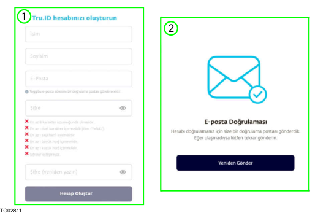
1. Cihazınızın uygulama mağazasını ziyaret edin ve 1. Trumore Uygulamasını indirin. 2. Tru.ID oluşturma seçeneğini seçin. 2. 3. E-posta adresinizi, Adınızı, Soyadınızı ve Şifrenizi 3. girin (1). 4. Başarılı bir doğrulama (2) sonrasında, Tru.ID 4. oluşturulur ve kullanıma hazır hale gelir.
BİLGİ
Girilen e-posta adresinin Tru.ID'ye erişim için kullanıcı adı olarak kullanılması gereklidir.
1.2.3 Sorun Giderme
Şifrenin sıfırlanması
Şifrenizi sıfırlamak için aşağıdaki talimatları izleyin: 1. Trumore Uygulamasını açın. 1. 2. "Oturum Aç" seçeneğini seçin. 2. 3. "Şifremi unuttum" seçeneğini seçin ve (1), (2) ve 3. (3) numaralı talimatları izleyin.
E-posta adresinin değiştirilmesi
E-posta adresini değiştirmek için aşağıdaki talimatları izleyin: 1. Hesabınızda oturum açın. 1. 2. "E-posta adresini değiştir" seçeneğini seçin. 2. 3. Yeni e-posta adresinizi girin. 3. 4. Başarılı bir doğrulama sonrasında e-posta 4. adresiniz değiştirilir.
1.3 Araca Genel Bakış
1.3.1 Ön Taraftaki Kameralar ve Sensörler
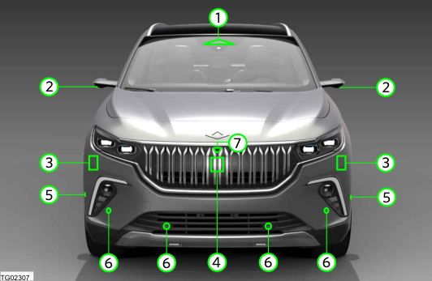
1. Akıllı ön kamera 1. 2. Ayna üzeri çevre görüş kamerası 2. 3. Ön RADAR, kısa-menzil (varsa) 3. 4. Ön RADAR, uzun-menzil 4. 5. Ön ultrasonik sensör, yan taraf 5. 6. Ultrasonik sensör, ön taraf 6. 7. Ön çevre görüş kamerası 7.
DİKKAT
Ön tamponda araç plakası için belirlenen alandan daha büyük bir plaka tutucu/çerçeve monte etmeyin. Sensör arızası ve sensörlerin ön alanına yakın nesneleri algılamada problem olma riski vardır.
1.3.2 Arka Taraftaki Kameralar ve Sensörler
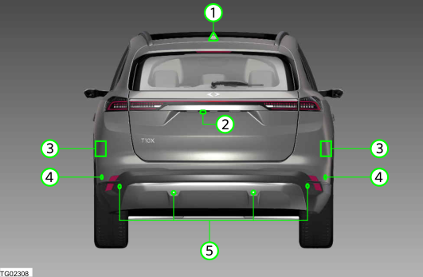
1. Köpekbalığı yüzgeci anten 1. 2. Arka çevre görüş kamerası (varsa) 2. 3. Arka RADAR, kısa menzil (varsa) 3. 4. Arka ultrasonik sensör, yan taraf 4. 5. Ultrasonik sensör, arka taraf 5.
1.3.3 İç Kontrollere Genel Bakış
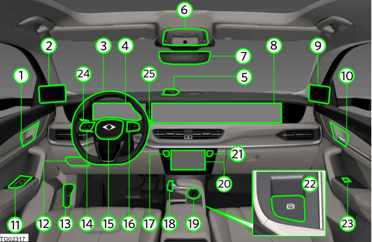
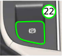
1. Sürücü kapısı iç kolu 1. 2. Sol kameralı ayna sistemi ekranı (varsa) 2. 3. Direksiyon simidi 3. 4. Sürücü ekranı 4. 5. Sürücü kızılötesi kamera 5. 6. Baş üstü konsol 6. 7. İç dikiz aynası 7. 8. Ana ekran 8. 9. Sağ kameralı ayna sistemi ekranı (varsa) 9. 10. Yolcu kapısı iç kolu 10. 11. Cam kaldırma/indirme ana tuşu 11. 12. Sigorta kutusu kapağı 12. 13. Kaput açma mandalı 13. 14. Sol direksiyon simidi düğmesi 14. 15. Korna düğmesi 15. 16. Sağ direksiyon simidi düğmesi 16. 17. Start/Stop düğmesi 17. 18. Vites seçici 18. 19. Çevirmeli düğme 19. 20. Kontrol ekranı 20. 21. Dörtlü flaşör düğmesi 21. 22. Elektromekanik park freni düğmesi 22. 23. Cam kaldırma/indirme tuşu 23. 24. Sol kol 24. 25. Sağ kol 25.
1.4 Genel Uyarılar
UYARI
Hem yüksek voltajda hem de yüksek sıcaklıkta
daima dikkatli olun. Araç, çalışmak için yüksek voltajlı DC akım kullanan yüksek voltajlı bir batarya ve yüksek voltajlı bileşenlerle donatılmıştır. Sistem, çalıştırma sırasında ve araç kapatıldığında sıcak olabilir.
Turuncu renkli yüksek voltaj kabloları, araç-üstü şarj cihazı, yüksek voltajlı batarya, güç dağıtım ünitesi veya klima kompresörü gibi yüksek voltajlı bileşenlere ciddi yaralanma riski söz konusu olduğundan asla dokunmayın. Kontak kapatıldığında, yüksek voltajlı bataryanın şarj edildiğini ve tüm yüksek voltajlı bileşenlere enerjinin beslenmeye devam ettiğini asla unutmayın.
Yüksek voltaj sisteminin bakım ve onarımının doğru şekilde yapılmaması halinde, ciddi yaralanma veya araçta yangın riski söz konusudur. Aracınızın bakım ve onarımını sadece bir Togg yetkili servisine yaptırın.
Araca iliştirilmiş uyarı etiketlerine daima dikkat edin. Sıcak bileşenlerden ötürü yanma riski vardır.
Aracın tüm yolcuları, kendi güvenlikleri için tüm yolculuklarda emniyet kemeri takmalıdır.
Araçtaki hava yastıkları, üç noktalı emniyet
kemerlerinin yerine geçmez. Hava yastıkları, emniyet kemerleri doğru şekilde takıldığında ek koruma sağlar. Maksimum koruma için, emniyet kemerini daima takın.
Çocuk koltuğu sistemi olmadan, çocukların veya bebeklerin ön yolcu koltuğuna oturmasına asla izin vermeyin. Kanunlara ve yönetmeliklere daima uyun.
Aracı kullanırken, çocukların araçta korumasız şekilde oturmasına, koltukta durmasına veya diz çökmesine izin vermeyin. Bir kaza durumunda, bir çocuk araçtan dışarı fırlayabilir. Bu, çocuklar ve yolcular için ciddi yaralanma veya ölümle sonuçlanabilir.
İçinde biri varken aracı dışarıdan kilitlemeyin. Bir kişi araçta uzun süre kalırsa ve bunun sonucunda çok yüksek sıcaklıklara maruz kalırsa, yaralanma veya ölüm riski söz konusudur.
Aracınız, aracı sürmenize, park etmenize ve manevra yapmanıza yardım eden sürüş sistemleri ile donatılmıştır. Bunlar çevrenize olan duyarlılığınızın ve dikkatinizin yerine geçemez ve sizi karayolu trafik kanunu ile ilgili sorumluluğunuzdan muaf tutmaz.
2 Güvenlik
2.1 Yüksek Voltaj
2.1.1 Güvenlik Talimatları
Araç bir yüksek voltajlı batarya ve yüksek voltajlı elektrik sistemleri ile donatılmıştır. Yüksek voltajlı bileşenlere dokunmak son derece tehlikelidir. Araç üzerindeki servis işlemleri veya onarım çalışmaları sadece Togg yetkili servis personeli tarafından yapılmalıdır. Hasar görmüş yüksek voltaj kablolarına, araç-üstü şarj cihazına, yüksek voltajlı bataryaya, güç elektroniklerine veya klima kompresörüne dokunmak, ölümcül bir elektrik çarpmasına neden olabilir.
UYARI
Yüksek voltaj sisteminin bakım ve onarımının
doğru şekilde yapılmaması halinde, ciddi yaralanma veya araçta yangın riski söz konusudur. Aracınızın bakım ve onarımını sadece bir Togg yetkili servisine yaptırın.
Araca iliştirilmiş uyarı etiketlerine daima dikkat edin. Sıcak bileşenlerden ötürü yanma riski vardır.
UYARI
Kötü yaralanmalar veya ölümle sonuçlanabilecek ciddi yanık veya elektrik çarpması riski vardır.
Yüksek voltajlı parçaları asla sökmeyin veya
değiştirmeyin.
Turuncu renkli yüksek voltaj kablolarını asla
çıkarmaya çalışmayın. Gerekli herhangi bir bakım çalışması için Togg yetkili servisine gitmeniz önerilir.
2.1.2 Çarpma Nedeniyle Yüksek Voltajlı Bataryanın Devre Dışı Kalması
Aracınız, çarpma durumunda yüksek voltajlı bataryayı devre dışı bırakma özelliğine sahiptir. Bir çarpışma durumunda, araç yolcularını ve diğer yayaları elektrik çarpmasını önlemek için yüksek voltaj sistemi otomatik olarak devre dışı bırakılır. Bu özellik etkinleştirildiğinde, aracı çalıştıramazsınız. Yardım için bir Togg yetkili servisine başvurmanız önerilir, çünkü bu özellik sadece servis tarafından iptal edilebilir.
Yaralanmaları önlemek için bir kaza durumunda uyulması gereken kurallar:
Aracınız sürülebilir durumdaysa, aracınızı yoldan çekin, elektromekanik park frenini devreye alın ve aracın motorunu kapatın.
Açıkta kalan yüksek voltajlı parçalar veya kablolar olup olmadığını anlamak için aracınızı kontrol edin. Kişisel yaralanmaları önlemek için, yüksek voltaj kablolarına, konnektörlere ve diğer yüksek voltajlı parçalara asla dokunmayın. Açıkta kalan elektrik kabloları aracınızın içinden veya dışından bakıldığında görülebilir durumdaysa, elektrik çarpması meydana gelebilir. Bu sebeple, açıkta kalan elektrik kablolarına asla dokunmayın.
Araç sürüş sırasında zemine güçlü bir darbe alırsa, aracı güvenli bir yerde durdurun ve zemini kontrol edin. Yüksek voltajlı bataryadaki sızıntılar veya hasarlar yangına neden olabilir. Bunları keşfederseniz, derhal acil yardımı arayın.
Araçta yangın çıkması durumunda, aracı en kısa sürede terk edin. Az miktarda su veya uygun olmayan bir yangın söndürücünün kullanılması, elektrik çarpmasından kaynaklanan ciddi yaralanmalara veya ölümlere neden olabilir.
Hasar nedeniyle aracın durumunu güvenli bir şekilde değerlendiremiyorsanız, araca dokunmayın. Aracı terk edin ve acil yardım ile iletişime geçin. İlk müdahale ekiplerine bunun elektrikli bir araç olduğunu bildirin.
2.2 Emniyet Kemerleri
2.2.1 Genel Açıklama
Emniyet kemeri kullanımı, bir çarpışma olması durumunda araçta bulunanları korumanın en etkili yoludur. Emniyet kemerleri, kaza esnasında takılı olmadığı zaman herhangi bir koruma sağlamaz. Yanlış takılmış emniyet kemerleri, bir kaza esnasında yaralanma riskini arttırır. Sürücü ve tüm yolcuların araç hareket halindeyken emniyet kemerlerini doğru taktıklarından emin olun. Emniyet kemerleri ayrıca çarpışma esnasında araçta bulunanları doğru oturma pozisyonunda tutar.
UYARI
Emniyet kemeri takılmadığında veya yanlış
takıldığında ciddi veya ölümcül yaralanma riski artar.
Aracın tüm yolcuları, kendi güvenlikleri için tüm yolculuklarda emniyet kemeri takmalıdır.
Asla tek bir emniyet kemerini aynı anda iki kişi için kullanmayın.
Aracınızın emniyet kemerlerinin durumunu düzenli
olarak kontrol edin. Kemer ağında, kemer bağlantılarında, geri çekme sisteminde veya tokada hasar tespit ederseniz, onarım için Togg Yetkili Servisine başvurun.
Emniyet kemerleri herhangi bir şekilde sökülmemeli veya modifiye edilmemelidir. Emniyet kemerlerini kendiniz tamir etmeye çalışmayın.
Kaza esnasında zorlanan emniyet kemerleri
değiştirilmelidir.
Kemer kayışları bükülmemeli veya gevşek
olmamalıdır.
Yanlış emniyet kemeri konumu, bir kaza veya ani
fren ya da sürüş manevraları esnasında ciddi yaralanmaya neden olabilir.
Emniyet kemerinin doğru şekilde oturmasına engel olan veya hareket kabiliyetinizi kısıtlayan kaba veya gevşek kıyafetleri çıkartın.
Emniyet kemerini sert ve kırılgan nesneler (gözlük ve kalem gibi) üzerinden geçirmeyin.
Emniyet kemerinin sadece yetişkinler tarafından kullanılması amaçlanmıştır.
Emniyet kemerinin kullanılmadığı anlarda orijinal konumunda olduğundan emin olun.
2.2.2 Doğru Emniyet Kemeri Pozisyonu
Her zaman emniyet kemerinizi takın ve doğru yerleştiğinden emin olun. Emniyet kemerinin doğru yerleştiğinden emin olmak için, aşağıdaki hususlar dikkate alınmalıdır:
Emniyet kemerinin kucak kısmı, kucağın üzerinden geçmelidir.
Emniyet kemerinin omuz kısmı, omzun ortası üzerinden geçmelidir.
Emniyet kemeri vücut üzerinde her zaman düz ve sağlam şekilde durmalıdır.
2.2.3 Emniyet Kemerinin Takılması
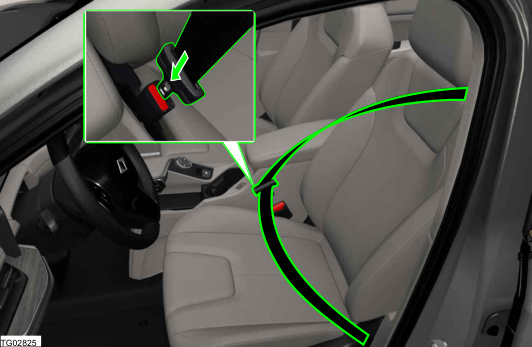
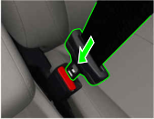
BİLGİ
Emniyet kemerinin sıkışmış veya bükülmüş olmadığından ve keskin kenarlara sürtünmediğinden emin olun. 1. Emniyet kemeri mandalını tutun ve emniyet 1. kemerini yavaş, devamlı bir hareketle göğsünüzün ve kucağınızın üzerinden çekerek geçirin. 2. Kemer mandalını koltuğa ait kemer tokasının içine 2. yerleştirerek bir klik sesiyle kilitlenene kadar itin. 3. Emniyet kemerini tokaya sağlam şekilde 3. kilitlendiğinden emin olmak için kemeri çekin.
2.2.4 Emniyet Kemerinin Açılması
1. Emniyet kemerini sağlam şekilde tutun. 1. 2. Kemer tokası üzerindeki düğmeye basın. 2. 3. Emniyet kemerinin sarma mekanizması içine 3. sarılması için yönlendirin.
2.2.5 Hamilelikte Emniyet Kemerlerinin Ayarlanması
Hamile kadınlar her zaman emniyet kemerlerini takmalıdır. Kucak ve göğüs kemer kombinasyonunun kucak kayışını göbeğin altından basenlerin üzerinden geçirin ve rahatsızlık yaratmayacak kadar sıkı takın. Omuz kayışını, omzun ortasından ve göğsün merkezinden geçecek şekilde takın. Kemerdeki boşlukları giderin ve vücut üzerine bükülme olmaksızın tam oturduğundan emin olun. Özel yönlendirmeler için doktorunuza danışın.
UYARI
Çarpışma esnasında darbeyi yumuşatmak amacıyla kemerle sizin aranıza herhangi bir şey yerleştirmeyin.
2.2.6 Emniyet Kemeri Hatırlatıcı
Sürücü ve ön yolcu koltuğu
Araç çalışmaya hazır olduğunda, emniyet kemeri takılmamışsa sürücü ekranında bir uyarı göstergesi yanar. Araç hızı 20 km/s seviyesine ulaştığında, yanıp sönen bir uyarı gösterge ışığı ve 30 saniyelik bir uyarı sesi ile ikaz edilirsiniz. 30 saniyenin sonunda veya araç hızı ilk uyarıdan sonra 35 km/s seviyesine ulaştığında emniyet kemerini takmadığınız taktirde, yanıp sönen uyarı gösterge ışığı ile birlikte 120 saniyelik bir uyarı sesi ile ikaz edilirsiniz. Emniyet kemerinizi taktığınızda uyarı göstergeleri söner. Emniyet kemeri hatırlatıcısı ayrıca ön yolcu koltuğu üzerine eşya konulduğunda da devreye girebilir.
Arka koltuk
Emniyet kemeri hatırlatma uyarısı, araç içinde her yolcu tespit edildiğinde otomatik olarak devreye girer. Emniyet kemeri hatırlatıcısı ayrıca seyahat esnasında bir yolcu arka emniyet kemerini açtığında da devreye girer.
Ekran simgeleri
| Simge | Tanım |
 | Emniyet kemeri takılı değil veya hata (Simge sabit) |
| Emniyet kemeri takılı değil veya hata (Simge yanıp söner) |
Sürücü ekranı bilgi bölümünde gösterilen emniyet kemeri hatırlatma açılır penceresi örneği: 1. Emniyet kemeri takılı 1. 2. Koltuk dolu fakat emniyet kemeri takılı değil 2.
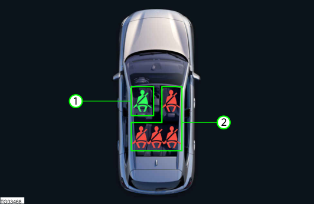
2.2.7 Emniyet Kemeri Fonksiyonları
Emniyet kemeri ön-gergisi
Emniyet kemeri ön-gergileri, çarpma esnasında emniyet kemerlerini sıkmak için tasarlanmıştır. Ön- gergiler ayrıca emniyet hava yastığı açıldığında da devreye girebilir. Kazalarda yaralanma ve ölüm sayısını azaltabilmektedir. Kaza esnasında kritik bir mekanizmadır, çünkü koltukta oturan kişileri sağlam şekilde yerinde tutar ve hava yastıklarıyla en iyi şekilde korunmalarını sağlar.
BİLGİ
Piroteknik kemer gergileri açıldığında duman çıkabilir. Bu, araçta bir yangın olduğunun göstergesi değildir.
UYARI
Piroteknik sistem sadece ilk çarpışma anında koruma sağlayabilir. Piroteknik kemer gergileri açılırsa, ön gergi sistemi değiştirilmelidir.
Emniyet kemeri yük sınırlayıcı
BİLGİ
Yük sınırlayıcı fonksiyonu, arka orta emniyet kemeri için geçerli değildir. Yük sınırlayıcılı emniyet kemerleri, bir çarpışma esnasında emniyet kemerlerinin vücuda uyguladığı gücü azaltır. Emniyet kemeri yük sınırlayıcılar, kişilerin emniyet kemerine bağlı yaralanmalara karşı korunmasına yardımcı olur. Bir kaza esnasında ön- gergi, belirli miktarda bir güç uygulanana kadar oturan kişiyi yerine sabitler. Bu noktada yük sınırlayıcı, oturan kişinin göğsüne daha az güç uygulanması için kademeli olarak kemer ağını serbest bırakır.
2.3 Çocuk Güvenliği
2.3.1 Güvenlik Talimatları
UYARI
12 Yaşın altındaki çocuklar, uygun bir çocuk
sabitleme sistemi ile taşınmalıdır. Ülkeler arasındaki düzenleme farklılıklarını göz önünde bulundurun.
Aracı kullanırken, çocukların araçta korumasız şekilde oturmasına, koltukta durmasına veya diz çökmesine izin vermeyin. Bir kaza durumunda, bir çocuk araçtan dışarı fırlayabilir. Bu, çocuklar ve yolcular için ciddi yaralanma veya ölümle sonuçlanabilir.
Çocuk sabitleme sistemi, içinde çocuk olmasa dahi takılı tutulmalıdır. Emniyete alınmamış sabitleme sistemi, sert frenleme veya kaza esnasında araç içinde fırlayabilir.
Asla çocuk sabitleme sisteminde modifikasyon yapmayın. Sadece çocuk sabitleme sistemi üreticisi tarafından özellikle onaylanmış aksesuarlar kullanın.
Bir çocuk sabitleme sistemini birden fazla çocukta
kullanmayın.
Asla çocukları bir çocuk sabitleme sisteminde
gözetimsiz bırakmayın.
Çocuk sabitleme sistemini monte ederken mutlaka
ilgili koltuğun koltuk ısıtma özelliğini kapatın.
Sürüş esnasında asla çocukları sürücünün veya diğer yolcuların kucağına oturtmayın.
Gerekiyorsa, çocuk sabitleme sistemi önündeki
koltuğun eğimini ve konumunu ayarlayın. Çocuk sabitleme sistemindeki çocuğun önünde yeterli alan bulunduğundan emin olun.
İleriye bakan çocuk sabitleme sisteminin arkası, aracın koltuk sırtlığına mümkün olduğunca yakın konumlandırılmalıdır.
Çocuk sabitleme sisteminin üzerine takılması zorsa, ilgili koltuğun başlığını ayarlayın veya çıkarın.
Çocuk sabitleme sisteminin takıldığı koltuğun sırtlığının mutlaka sağlam şekilde yerine kilitlendiğinden ve ileri hareket etmediğinden emin olun. Çocuk sabitleme sisteminin takıldığı sırtlık, kaza esnasında öne hareket edebilir.
Arkaya bakan çocuk sabitleme sistemini ön yolcu koltuğunda sadece ön yolcu hava yastığını devre dışı bıraktıktan sonra kullanın.
Çocuk sabitleme sistemini her zaman arka koltuğa sabitleyin. İstisnai olarak, eğer çocuk sabitleme sisteminin ön yolcu koltuğuna yerleştirilmesi gerekiyorsa, ön yolcu hava yastığı devre dışı bırakılmalıdır.
Araç içinde yanlış takılmış çocuk sabitleme sistemleri, bir kaza esnasında ciddi yaralanma veya ölüme neden olabilir. Çocuğu her zaman üreticinin talimatlarına uygun olarak yerleştirin.
2.3.2. Çocuk Sabitleme Sistemi (CRS)
2.3.2.1 Genel Açıklama
Ciddi veya ölümcül yaralanma riskini azaltmak için çocukların her zaman kendi vücut boyutlarına, ağırlık ve yaşlarına uygun bir çocuk sabitleme sistemi ile araca yerleştirilmesi gereklidir. Bir kaza veya manevra esnasında yaralanma riskini minimuma indirmek için, 12 yaş altındaki çocuklar her zaman için arka koltukta uygun sabitleme sistemi ile taşınmalıdır. Eğer çocuk, çocuk sabitleme sistemi için fazla büyükse, çocuğu emniyete almak için emniyet kemeri kullanın. Daima yerel mevzuata uyun ve ülkenize özel gereklilikler bakımından bilgi sahibi olun. Çocuk sabitleme sistemini araca doğru şekilde monte edin. Her zaman ticari olarak bulunabilen ve ülkenizin mevzuatına uygun bir Çocuk Sabitleme Sistemi kullanın.
Önerilen çocuk sabitleme sistemleri:
| Genel Grup | Üretici |
| Grup 0+ | Maxi-Cosi Pebble 360 |
| Grup I | Britax Römer Duo Plus |
| Grup II | Britax Römer KidFix i-Size |
| Grup III | Graco Booster Basic |
Evrensel CRS montajına uygun pozisyonlar:
| Genel Grup | Ağırlık | Oturma pozisyonu | |||
| Ön yolcu | Arka yolcu | ||||
| PAB Açık | PAB Kapalı | Dış | Merkez | ||
| Grup 0 | 10 kg'ye kadar | X | U | U | U |
| Grup 0+ | 13 kg'a kadar | X | U | U | U |
| Grup I | 9 ila 18 kg | X | U + UF | U + UF | U + UF |
| Grup II | 15 ila 25 kg | X | U + UF | U + UF | U + UF |
| Grup III | 22 ila 36 kg | X | U + UF | U + UF | U + UF |
Önemli terimler:
| Kısaltma | Açıklama |
| U | Bu genel grupta kullanım için onaylanmış 'evrensel' kategorideki sabitleyiciler için uygun. |
| UF | Bu genel grupta kullanım için onaylanmış ileriye bakan 'evrensel' kategorideki sabitleyiciler için uygun. |
| L | Ekteki listede verilen belirli çocuk sabitleyiciler için uygun. Bu sabitleyiciler 'belirli araç', 'sınırlı' veya 'yarı-evrensel' kategoriler için olabilir. |
| B | Bu genel grup için onaylı tümleşik sabitleyiciler. |
| X | Koltuk pozisyonu bu genel gruptaki çocuklar için uygun değil. |
| PAB | Yolcu Hava Yastığı. |
ISOFIX CRS montajına uygun pozisyonlar:
| Genel Grup | Boyut sınıfı | Sabitleme elemanı | Ön yolcu | Arka | ||
| PAB Açık | PAB Kapalı | Dış | Merkez | |||
| Grup 0: 10 kg'ye kadar | E | ISO/R1 | X | IL | IL | X |
| Grup 0+: 13 kg'a kadar | E | ISO/R1 | X | IL | IL | X |
| D | ISO/R2X | IL | IL | IL | X | |
| C | ISO/R3X | IL | IL | IL | X | |
| Grup I: 9 ila 18 kg | D | ISO/R2X | IL | IL | IL | X |
| C | ISO/R3X | IL | IL | IL | X | |
| B | ISO/F2X | IL | IUF + IL | IUF + IL | X | |
| B1 | ISO/F2X | IL | IUF + IL | IUF + IL | X | |
| A | ISO/F3X | IL | IUF + IL | IUF + IL | X | |
| Grup II: 15 ila 25 kg | - | - | X | IL | IL | X |
| Grup III: 22 ila 36 kg | - | - | X | IL | IL | X |
Önemli terimler:
| Kısaltma | Açıklama |
| IUF | Bu genel grupta kullanım için onaylanmış ISOFIX ileriye bakan evrensel kategorideki çocuk sabitleme sistemleri için uygundur. |
| IL | Ekteki listede verilen belirli ISOFIX çocuk sabitleme sistemleri (CRS) için uygundur. Bu ISOFIX çocuk sabitleyicileri 'belirli araç', 'sınırlı' veya 'yarı-evrensel' kategorilere aittir. |
| X | Bu genel grup ve/veya boyut sınıfındaki ISOFIX çocuk sabitleme sistemleri için uygun olmayan ISOFIX pozisyonu. |
i-Size çocuk sabitleme sistemi montajına uygun pozisyonlar:
| Genel Grup | Oturma Pozisyonu | ||||
| Ön yolcu | Arka dış (SOL) | Arka dış (SAĞ) | Arka orta | ||
| PAB Açık | PAB Kapalı | ||||
| i-Size Çocuk Sabitleme Sistemleri | X | X | i-U | i-U | X |
Önemli terimler:
| Kısaltma | Açıklama |
| i-U | Öne ve arkaya bakan i-Size 'evrensel' Çocuk Sabitleme Sistemleri için uygundur. |
| i-UF | Sadece öne bakan i-Size 'evrensel' Çocuk Sabitleme Sistemleri için uygundur. |
| X | Oturma pozisyonu i-Size 'evrensel' Çocuk Sabitleme Sistemleri için uygun değildir. |
2.3.2.2 Çocuk Sabitleme Sistemi için Bağlantı Noktaları
ISOFIX veya i-Size montaj kaideleri
ISOFIX montaj kaideleri, araç içindeki tümleşik metal çubuklardır. Her bir ISOFIX koltuk pozisyonu için çocuk sabitleme sistemini alt bağlantılarla yerleştirmeye yönelik iki alt sabitleme mevcuttur. Araçtaki ISOFIX montaj kaidelerini kullanmak için ISOFIX bağlantı elemanlarına sahip bir çocuk sabitleme sisteminiz olmalıdır. Çocuk sabitleme sistemi üreticisi, çocuk sabitleme sistemi kullanım talimatlarını ve ISOFIX montaj kaideleri için bağlantı elemanlarını size temin edecektir. ISOFIX montaj kaideleri, sol ve sağ dış arka koltuk pozisyonlarında bulunmaktadır. Yerleri, işaretli kapakların altındadır. ISOFIX montaj kaideleri, sürüş ve kaza esnasında çocuk sabitleme sistemini tutar. Bu sistem, çocuk sabitleme sisteminin montajını kolaylaştırır ve yanlış montaj ihtimalini azaltır. ISOFIX sistemi, araç içindeki sabitlemeleri ve çocuk sabitleme sistemi üzerindeki bağlantı elemanlarını kullanır. ISOFIX sistemi, çocuk sabitleme sistemini arka koltuklara sabitlemek için emniyet kemeri kullanımı ihtiyacını ortadan kaldırır.
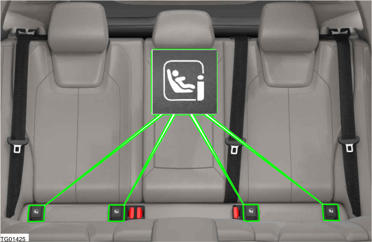
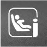
Üst Bağlantı Sabitlemesi
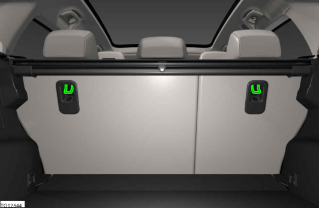
UYARI
Üst bağlantı sabitlemesi, özel olarak çocuk sabitleme sistemi için tasarlanmıştır. Ciddi yaralanma veya ölüm riskini azaltmak için asla bu sabitleme noktasına başka nesneler bağlamayın. Aracınızın her iki dış arka koltuk sırtlığının arka tarafında iki adet üst bağlantı sabitleme noktası donanımı bulunmaktadır. Bunlar, çocuk sabitleme sistemi üreticisinin kucak kemeri veya ISOFIX ile birlikte üst bağlantı sabitleme kayışlarının bağlanmasını önermesi halinde kullanılmalıdır.
2.3.2.3 Çocuk Sabitleme Sisteminin Montajı
BİLGİ
Çocuk sabitleme sistemlerinin seçimi, montajı ve
kullanımı için çocuk sabitleme sistemi üreticisi tarafından verilen bilgilere uyun; aksi halde koruyucu etki kaybı oluşabilir.
Ön yolcu koltuğuna bir çocuk sabitleme sistemi monte etmeden önce, yolcu hava yastığını daima devre dışı bırakın. (Bakınız 2.4.6 Yolcu Hava Yastığının Devre Dışı Bırakılması )
Evrensel çocuk sabitleme sistemini monte ederken,
daima yolcu koltuğunu en geri ve en yüksek konuma getirin.
DİKKAT
KidFix XP çocuk sabitleme sistemini takarken, SecureGuard kullanılması zorunludur.
BİLGİ
Britax Römer KidFix i-Size'ın takılmasıyla ilgili öneriler:
Araçtaki ilgili koltuğun başlığını çıkarın. (Bakınız
7.3.4.4 Koltuk başlığının çıkarılması ) Kucak kemerini çocuk sabitleme sisteminin
SecureGuard mekanizmasından geçirin.
Çocuk sabitleme sistemi sırtlığını beşinci çentiğe ayarlayın.
DİKKAT
Çocuk sabitleme sistemi ve bileşenleri, yoğun güneş ışığı altında oldukça ısınabilir. Sıcak bileşenlerle temas, yanıklara neden olabilir. Yaralanma riski söz konusudur.
Çocuk sabitleme sistemini doğrudan güneş ışığına
maruz bırakmayın ve gerekiyorsa üzerini örtün.
Gerekiyorsa çocuğu oturmadan önce çocuk sabitleme sisteminin soğumasını bekleyin.
Çocukları asla araçta gözetimsiz halde bırakmayın. 1. Çocuk sabitleme sistemini araca doğru şekilde 1. sabitleyin. Çocuk sabitleme sistemlerinin araca kucak kemeri veya ISOFIX ya da üst bağlantı ile sabitlenmesi gerekir. 2. Çocuk sabitleme sisteminin sağlam bir şekilde 2. monte edildiğinden emin olun. Araca çocuk sabitleme sistemini monte ettikten sonra, koltuğa sağlam şekilde bağlandığından emin olmak için koltuğu öne arkaya ve yanlara doğru çekip itin.
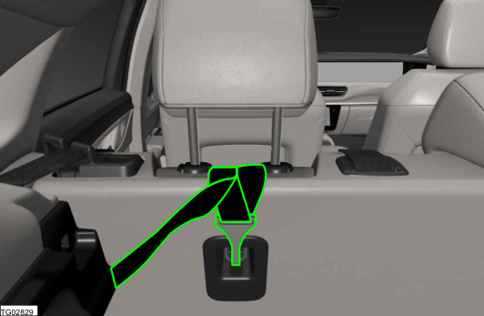
3. Emniyet kemeri ile sabitlenen bir çocuk sabitleme 3. sisteminin mümkün olduğunca sağlam monte edilmesi gereklidir. Ancak bazı yandan-yana hareketler normaldir. Bir çocuk sabitleme sistemini monte ederken aracın koltuğunu ve sırtlığını, çocuğunuzun çocuk sabitleme sisteminin içine konforlu şekilde yerleşeceği şekilde ayarlayın (yukarı ve aşağı, öne ve arkaya). 4. Çocuğu, çocuk sabitleme sistemi içine sabitleyin. 4. Çocuğa, çocuk sabitleme sistemi üreticisinin talimatlarına uygun olarak çocuk sabitleme sistemi içinde kemerlerin doğru şekilde takıldığından emin olun.
manuel ön koşullandırma yaparken çalıştırılmayacaktır.
Kapı kilidinin açılması, çocuk tespit dedektörü fonksiyonu uyarısını iptal etmez; kapı(lar) açılmalıdır.
Çocuk tespit dedektörü sistemi, yüksek voltajlı aküde düşük şarj durumunda iklim kontrolünü etkinleştiremeyebilir.
Çocuk tespit dedektörü, kabin alanında herhangi bir hareketli nesne algılanırsa yanlış uyarı verebilir.
Yetişkinler, çocuklar veya evcil hayvanlar için bir uyarı tetiklenebilir. Park edilmiş araç içinde bir çocuğu bir kaç dakika bile yalnız bırakmak, kalp krizine ve ölüme yol açabilir. Bir çocuğun arabadan kendi başına çıkamaması ile birlikte yüksek sıcaklıklara karşı hassas olması, çocukların asla araç içinde yalnız bırakılmamasını gerektirir. Çocuk tespit dedektörü özelliği, araç kapıları kilitlendiğinde araçta çocuk tespit edilmesi durumunda sürücüyü uyarır. Çocuğun yanlışlıkla arkada unutularak hipertermiye girmesini önlemeye yardımcı olur. Araç konfigürasyonuna bağlı olarak, bir veya iki radar sensörü aracın iç kısmını izler ve ön veya arka koltuk alanındaki hareketlerden ve solunumdan çocuk varlığını tespit eder.
2.3.3 Çocuk Tespit Dedektörü (CPD) (varsa)
2.3.3.1 Genel Açıklama
UYARI
Araçta çocuk tespit dedektörü donanımı olsa bile,
hiçbir çocuğun araçta gözetimsiz bırakılmadığından emin olmak sürücünün sorumluluğundadır.
Çocuğun araçta yalnız bırakılması halinde araçtaki aşırı sıcaklık veya soğuktan dolayı ciddi ya da ölümcül yaralanma riski söz konusudur. Asla bir çocuğu veya hayvanı araçta yalnız bırakmayın.
BİLGİ
Çocuk tespit dedektörü, araç şarj olurken veya
2.3.3.2 Çocuk tespit dedektörü uyarıları
1. İlk uyarı 1. Araç kilitlendikten sonra 10 saniye içinde çocuk varlığı tespit edilirse bir ilk uyarı devreye girecektir. Uyarı, 5 saniye boyunca veya iptal edilene kadar flaşör lambalarını yakıp söndürme ve çift korna sesi ile görsel ve işitsel olarak verilir. Uyarı, aracın kilidi ve herhangi bir kapısı açılarak iptal edilebilir. 2. Artan uyarı 2. Sistem, ilk uyarının sonlandırılması veya iptal edilmesi ve kapıların kapatılmasından ve kilidinin açılmasından 90 saniye sonra araç içinde çocuk tespit edilmesi halinde artan bir uyarı başlatacaktır. Uyarı, trafikteki diğer kişilerin dikkatini çekmek amacıyla flaşörleri yakıp söndürmek suretiyle görsel olarak verilir. Artan uyarı, iptal edilene veya müdahale yapılana kadar her 60 saniyede bir tekrarlanacaktır. Flaşör lambaları, artan uyarı başlatıldıktan sonra bir dakikanın ilk 15 saniyesinde görünür olacaktır. Artan uyarı iptal edildikten sonra, tüm kapılar kapatıldıktan ve araç tekrar kilitlendikten sonra sistem iç mekanı tekrar tarayacaktır. Artan uyarı sonlandırıldıktan veya iptal edildikten sonra araçta çocuk tespit edilirse, sistem bir müdahale başlatacaktır. 3. Müdahale 3. Artan uyarı herhangi bir kapı açılarak iptal edilmediği sürece, araçta hala yolcu bulunduğu algılandığı için sistem müdahaleye başlayacaktır. Müdahale, aşağıdaki koşullarda gerçekleşecektir:
İlk artan uyarının tetiklenmesinden 5 dakika sonra Müdahale, aşağıdaki şekilde gerçekleşecektir:
İklimlendirmeyi aktive ederek araç iç sıcaklığını düşürme.
Trumore Uygulaması aracılığıyla bir cep telefonu bildirimi gönderme.
2.3.3.3 Çocuk tespit dedektörünün devre dışı bırakılması
Çocuk tespit dedektörü özelliği, kontrol ekranından geçici olarak devre dışı bırakılabilir. Devre dışı bırakma işlemi tek yolculuk için geçerli olacaktır. Bu özellik, yeni bir yolculuğa başlarken otomatik olarak etkinleştirilecektir. Araç kapatıldığında çocuk tespit dedektörünün geçici olarak devre dışı bırakıldığını göstermek amacıyla 5 saniyelik bir uyarı mesajı görüntülenir. Devre dışı bırakmak için:
Kontrol Ekranı → Ana Sayfa → Menü → Araç → Alarmlar
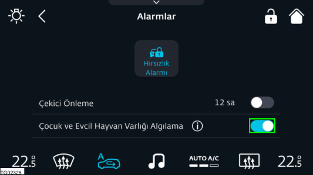
Fonksiyonu etkinleştirmek veya devre dışı bırakmak için, çocuk ve evcil hayvan tespit düğmesine dokunun. Çocuk tespit dedektörünün devre dışı olma durumu, sürücü ekranında gösterilecektir.
Ekran simgesi
| Simge | Tanım |
 | Çocuk tespit dedektörü devre dışı (Simge sabit) |
2.3.3.4 Çocuk tespit dedektörünün sınırlılığı
Sistem, aşağıdaki koşullarda çalışmayabilir:
Çocuğun battaniye gibi kalın giysilerle örtülmüş olması durumunda.
Çocuk kalın bir elbise veya ceket giyerse, bu CPD'nin vücut (göğüs veya uzuv) hareketini algılama yeteneğini azaltır.
Radarların metal veya benzeri nesnelerle kapanmış olması halinde.
Araç yakınında elektronik parazit olması durumunda.
2.3.4 Çocuk Emniyeti Kilitleri
2.3.4.1 Arka cam çocuk kilidi
Sürücü, arka camların çocuklar tarafından yanlışlıkla açılmasını önlemek için, arka elektrikli camları sürücü kapısındaki cam kaldırma/indirme tuşunu kullanarak kilitleyebilir.
Arka cam kontrolünü yolcular için kilitlemek veya kilidini açmak için düğmeye basın. Çocuk kilidi etkinleştirildiğinde, arka kapı camları için arka yolcu bölmesindeki kontroller devre dışı bırakılır.
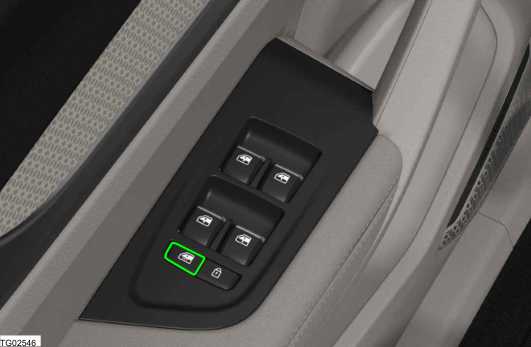
2.3.4.2 Arka kapı çocuk emniyet kilidi
UYARI
Araç hareket halindeyken çocuklar kazara arka kapıyı açarlarsa, araçtan düşebilirler. Arka kapı çocuk emniyet kilitleri, araçta çocuklar bulunduğu zaman daima kullanılmalıdır. Çocuk emniyet kilidi, arkada oturan çocukların arka kapıları kazara açmasını önlemeye yardımcı olması için tasarlanmıştır. Arka kapı çocuk emniyet kilitleri, araçta çocuklar bulunduğunda kullanılmalıdır. Çocuk emniyet kilidi, her arka kapının kenar kısmında bulunmaktadır. Çocuk emniyeti kilidi kilitli konumundayken, arka kapı, arka iç kapı kolu kullanılarak açılamaz. Arka kapı, dış kapı kolu kullanılarak açılabilir. Arka kapının iç kapı kolu kullanılarak açılmasını sağlamak için, çocuk emniyet kilidini devre dışı bırakın.
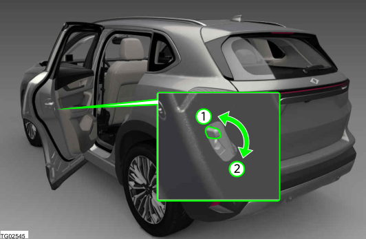
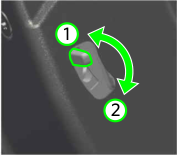
Çocuk emniyet kilidini etkinleştirme
Kapıyı kapatmadan önce, kilit kolunu aşağı doğru itin (2).
Çocuk emniyet kilidini devre dışı bırakma
Kilit kolunu yukarı doğru itin (1).
2.4 Hava Yastıkları
2.4.1 Genel Açıklama
Üç noktalı emniyet kemerleri ile birlikte hava yastıkları, aracın içinde bulunanlar için kaza esnasında maksimum koruma sağlamak üzere tasarlanmıştır. Hava Yastıkları, emniyet kemerinin yerine geçmez. Ön koltuklarda hava yastığı donanımı olsa bile emniyet kemerinin her zaman takılı olması gereklidir.
UYARI
Araçtaki hava yastıkları, üç noktalı emniyet kemerlerinin yerine geçmez. Hava yastıkları, emniyet kemerleri doğru şekilde takıldığında ek koruma sağlar. Maksimum koruma için, emniyet kemerini daima takın.
UYARI
Kişi ve hava yastığı açılma alanı arasındaki herhangi bir nesne, hava yastığı açıldığında yaralanma riskini arttırır.
Sürüş esnasında elinizde veya kucağınızda
herhangi bir şey tutmayın.
Yolcu koltuğunda asla eşya taşımayın. Sert bir frenleme veya sürüş manevrası durumunda nesneler, hava yastığı açılma alanına girebilir ve hava yastığı açıldığında araçtan tehlikeli bir şekilde dışarı fırlayabilir.
Asla bardak tutucu veya telefon tutucu gibi nesneleri hava yastığı kapağı ya da hava yastığı açılma alanına yerleştirmeyin.
Hava Yastığı açılma alanının sürüş esnasında hiçbir
zaman yolcular, çocuklar veya hayvanlar tarafından engellenmediğine emin olun.
UYARI
Araçta bulunanların seyahat boyunca doğru oturma pozisyonunda, kendi koltuklarının emniyet kemerleri doğru bağlanmış şekilde olmaları gereklidir.
Araç hareket halindeyken unutmayın:
Asla araç içinde veya koltuk üzerinde ayakta
durmayın.
Asla koltuklar üzerinde diz çökmeyin. Asla sırtlığı arkaya çok fazla itmeyin. Asla yolcu kompartmanındaki koltukların ve arka
koltuk üzerine uzanmayın.
Asla koltuğa yanlamasına veya ön ucuna
oturmayın.
Asla pencereden dışarı veya gösterge paneli
üzerine eğilmeyin.
Asla ayaklarınızı pencereden dışarı veya gösterge
paneli üzerine uzatmayın.
Asla ayaklarınızı koltuk minderi veya koltuk sırtlığı
üzerine uzatmayın.
Asla ayak boşluğuna özellikle çocukları veya
hayvanları koymayın.
Asla kolçak üzerine kimsenin oturmasına izin
vermeyin.
Asla bagaj bölmesinde seyahat etmeyin.
UYARI
Çocuk koltuğu sistemi olmadan, çocukların veya bebeklerin ön yolcu koltuğuna oturmasına asla izin vermeyin. Kanunlara ve yönetmeliklere daima uyun.
UYARI
Hava Yastığı sistemi sadece bir defa açılır. Açılan hava yastığının değiştirilmesi gerekir.
Açılan hava yastıkları ve etkilenen sistem
bileşenlerinin derhal aracınız için onaylı yeni parçalarla değiştirilmesi gereklidir.
Araç tamirleri ve modifikasyonları sadece bir Togg yetkili servisi tarafından yapılmalıdır.
Hava yastığı sisteminin kablo bağlantılarını veya bileşenlerini modifiye etmeyin. Asla geri dönüştürülmüş hava yastığı parçaları kullanmayın.
UYARI
Hava yastığı açıldığında ince toz parçacıkları ve buhar çıkabilir. Bu normaldir ve araçta bir yangın olduğu anlamına gelmez.
İnce tozlar cildi ve gözlerin mukus tabakasını tahriş
edebilir ve özellikle astımı ya da diğer solunum problemleri olan kişilerde nefes alma güçlüğü yaratabilir. Nefes alma güçlüklerini azaltmak için aracınızdan çıkın veya temiz hava için pencereyi ya da kapıyı açın.
Toza maruz kalırsanız, yemek yemeden önce ellerinizi ve yüzünüzü yumuşak bir sabun ve suyla yıkayın.
Gözlerinize veya açık yaralara toz girişine izin vermeyin. Gözünüze toz girerse derhal suyla durulayın ve tıbbi yardım alın.
Hızlı açılma işlemi ve hava yastığı kumaşı sürtünmeye ve cilt yanıklarına yol açabilir.
UYARI
Hava Yastığı, tetiklendiği taktirde saniyenin
bölümleri içinde ve yüksek hızda şişer. Asla hava yastığı açılma alanını aksesuarlarla kapatmayın.
Aracınızda kullanılmak üzere özel olarak onaylanmadıkça, koltuk koruyucu kılıflar takmayın. Aksi halde yan ve ön orta hava yastıkları açılma sonrasında şişmeyebilir.
DİKKAT
Gösterge panelini veya hava yastığı kapaklarını asla solvent içeren temizlik maddeleri kullanarak temizlemeyin. Hava yastığı modülünün yüzeyini gözenekli hale getirir.
BİLGİ
Yolcularınızı güvenlik önlemleri hakkında bilgilendirin.
2.4.2 Hava Yastıklarının Yerleri
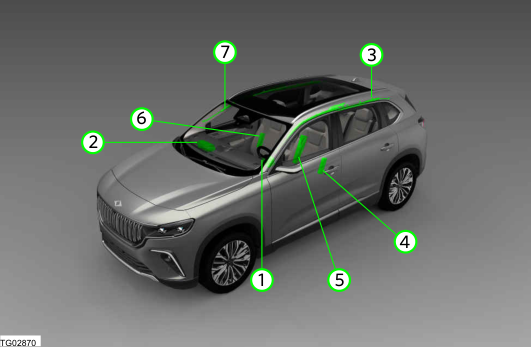
1. Sürücü hava yastığı 1. 2. Yolcu hava yastığı 2. 3. Perde hava yastığı (Sol) 3. 4. Sürücü yan hava yastığı 4. 5. Ön orta hava yastığı 5. 6. Yolcu yan hava yastığı 6. 7. Perde hava yastığı (Sağ) 7. Hava yastığının montaj yeri, AIRBAG sembolü ile işaretlenmiştir. 1. Sürücü Hava Yastığı 1. Sürücü hava yastığı, direksiyon simidinin ortasında yer almaktadır. Önden çarpışma durumunda hava yastığı, sürücünün baş, boyun, yüz ve göğsünü korumaya yardımcı olur.
BİLGİ
Sürüş esnasında daima direksiyon simidini iki elinizle dış halkadan saat 9 ve 3 noktalarından tutun. Sürücü koltuğunu göğüs kafesinden ve direksiyon simidinin göbeğinden en az 25 cm mesafeye ayarlayın. 2. Yolcu Hava Yastığı 2. Yolcu hava yastığı, gösterge panelinde bulunur. Önden çarpışma durumunda hava yastığı, ön yolcunun baş, boyun, yüz ve göğsünü korumaya yardımcı olur. 3. Perde Hava Yastığı 3. Perde hava yastıkları, yan çerçevenin her iki tarafına monte edilmiştir. Bu hava yastığı, araçta ön ve arka koltukta bulunan kişileri, pencere tarafından gelecek çarpmalara karşı korur.
4. Yan Hava Yastığı (Sürücü ve Yolcu) 4. Yan hava yastıkları, ön koltukların sırtlıklarının dış kenarında bulunur. Bu hava yastığı, sürücünün ve yolcunun üst gövdesini yanda darbe gelmesi durumunda korur. 5. Ön Orta Hava Yastığı 5. Ön orta hava yastığı, sürücü koltuğunun iç kısmına entegredir ve bir yan darbe durumunda sürücünün ve yolcunun baş, omuz ve göğsünü korumaya yardımcı olur.
Hava yastıkları araçta bulunanları ön ve yandan çarpma durumunda çarpma yönündeki hareketlerini azaltmak suretiyle koruyabilir. Bir hava yastığı tetiklendiğinde, gaz jeneratörü tarafından şişirilir. Bu da milisaniyeler içinde hava yastığı kapağının kırılmasını, hava yastığının güçlü şekilde şişerek açılma bölgesini kaplamasını sağlar. Araç içinde emniyet kemerini takan kişi şişen hava yastığının içine gömülmeye başladığında, hava yastığı içindeki gaz da kişiye yastık etkisi yapmak için dışarı kaçar ve hareketi yavaşlatır. Bu, ciddi ve ölümcül yaralanma riskini azaltır. Tetiklenmiş bir hava yastığı şişme, ezilme ve yanma gibi diğer yaralanmaları her zaman önleyemez. Hava yastığının açılması ayrıca sürtünmeye bağlı ısı üretebilir. Hava yastıkları kollar ve alt gövde için bir koruma sağlamaz. Hava yastığının tetiklenmesindeki önemli faktörler arasında aracın çarptığı nesnenin yapısı (sert veya yumuşak), darbenin açısı ve araç hızı yer almaktadır. Emniyet kemerleri, hava yastığının tetiklenmediği veya önceden tetiklendiği durumlarda koruma sağlamak için her zaman kullanılmalıdır. Hava Yastığı sistemi, aracın genel pasif güvenlik konseptinin bir parçasıdır. Hava Yastığı sistemi sadece araçta bulunanlar emniyet kemerlerini doğru şekilde taktıkları ve doğru oturma pozisyonunda oldukları sürece etkin şekilde çalışır.
UYARI
Sürücü ve ön yolcu koltuğunun yanlış kullanımı, ön orta hava yastığının düzgün çalışmasını önleyebilir ve ciddi yaralanmaya neden olabilir.
Asla ön koltukları araçtan sökmeyin veya bu
koltukların bileşenlerinde değişiklik yapmayın.
Sırtlık tarafındaki minderlere çok fazla baskı uygulanırsa, ön orta hava yastığı doğru şekilde tetiklenmeyebilir, hiç tetiklenmeyebilir veya kazara tetiklenebilir.
Orijinal koltuk kılıflarına veya ön orta hava yastığı ünitesinin dikişleri etrafına gelebilecek hasarlar, derhal bir Togg yetkili servisi tarafından tamir edilmelidir.
BİLGİ
Yan ve/veya uzak yan hava yastıkları, aracın yan darbe ile devrilmesi durumunda şişebilir.
2.4.3 Hava Yastığı Açıklaması ve Fonksiyonu
BİLGİ
Araç hasarı, tamir maliyetler veya kaza durumunda araçta hasar olmaması bile bir hava yastığının şişip şişmemesi gerektiğinin bir göstergesi değildir.
2.4.4 Hava Yastıklarının Tetikleneceği Durumlar:
Hava Yastıkları, ön veya yan taraftaki çarpışma sensörleri yeterli bir darbe algıladığında tetiklenmek üzere tasarlanmıştır.
Bir önden çarpışma durumunda ön çarpışma sensörü yeterli darbe algıladığında, ön hava yastıkları tetiklenebilir. Yandan çarpma durumunda ön çarpışma sensörü tarafından bir darbe algılanırsa, ön hava yastıklarının tetiklenmesi olasılığı vardır.
Perde, yan ve ön orta hava yastıkları, yan çarpışma sensörü tarafından darbe algılandığında tetiklenmek üzere tasarlanmıştır. Önden çarpma durumunda yan çarpışma sensörleri darbe algılandığında da tetiklenebilirler.
2.4.5 Hava Yastıklarının Tetiklenmeyeceği Durumlar:
▪ Çarpışma esnasında kontak Kapalı olduğunda.
▪ Hafif önden çarpışma durumlarında.
▪ Hafif yandan çarpışma durumlarında.
▪ Arkadan çarpmalarda.
2.4.6 Yolcu Hava Yastığının Devre Dışı Bırakılması
Ön yolcu koltuğuna bir çocuk sabitleme sistemi monte edildiğinde, ön yolcu hava yastığı kontrol ekranı kullanarak devre dışı bırakılabilir. Ön yolcu hava yastığını devre dışı bırakmak için, Girilecek menüler:
Kontrol Ekranı → Ana Sayfa → Menü → Araç → Yolcu Hava Yastığı Açık/Kapalı
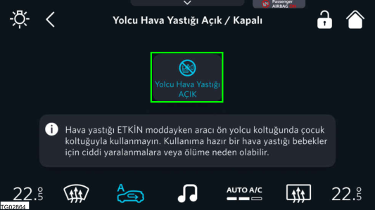
Yolcu hava yastığını etkinleştirmek veya devre dışı bırakmak için düğmeye dokunun. Yolcu hava yastığının devre dışı bırakılması sadece araç park halindeyken yapılabilir.
IDCC yazılım sürümü 1.6.0'dan eski olan araçlar için: Yolcu hava yastığının devre dışı bırakılması kalıcı bir ayar değildir. Araç durdurulduğunda ve yeniden çalıştırıldığında, hava yastığı etkinleştirilecektir.
IDCC yazılım sürümü 1.6.0 veya daha yeni olan araçlar için: Yolcu hava yastığının devre dışı bırakılması kalıcıdır. Araç durdurulup yeniden çalıştırıldığında, yolcu hava yastığı durumu değişmez. Ön yolcu hava yastığı devre dışı bırakılmadan ön yolcu koltuğuna bir çocuk sabitleme sistemi yerleştirmeyin. Güneşliğin dış kısmında bulunan etiketteki talimatlara uyun. Yolcu hava yastığının durumu, kontrol ekranının sağ üst köşesinden takip edilebilir.
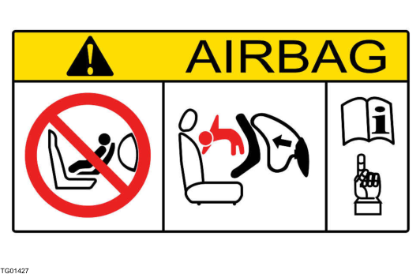
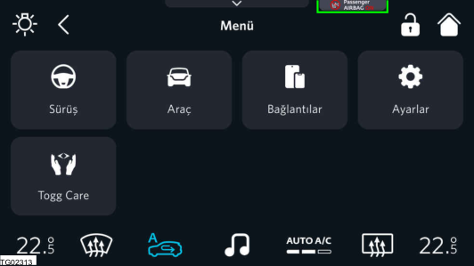
DİKKAT
Ön yolcu hava yastığını sadece ön yolcu koltuğuna
bir çocuk sabitleme sistemi monte edileceği zaman devre dışı bırakın.
Ön yolcu koltuğunda bir çocuk koltuğu artık kullanılmayacaksa derhal ön yolcu hava yastığını devreye alın.
2.4.7 Hava Yastığı Arızası
Hava yastığı sisteminde bir arıza olduğunda sürücü ekranı üzerindeki hava yastığı göstergesi yanık kalır. Araç çalıştırıldığında gösterge lambası bir kaç saniye için Yanar. Eğer devamlı yanıyorsa, aracı sürmeyin ve derhal bir Togg yetkili servisi ile görüşün.
| Simge | Tanım |
| Hava yastığı sistem hatası (Simge sabit) |
2.4.8 Hava Yastığının Bertaraf Edilmesi
Hava yastığının bertaraf edilmesi gerekiyorsa, bir Togg yetkili servisi ile görüşün. Yanlış bertaraf prosedürleri, kişisel yaralanmaya neden olabilir.
3 Açma & Kapatma
3.1 Uzaktan Kumandalı Anahtar & Akıllı Erişim
3.1.1 Uzaktan Kumandalı Anahtar
Araç modeline bağlı olarak araçla birlikte her birinin içinde mekanik bir anahtar bulunan bir veya iki uzaktan kumandalı anahtar verilebilir. Her bir uzaktan kumandalı anahtarda değiştirilebilir bir pil bulunur. Uzaktan kumandalı anahtara bir Tru.ID veya kişisel ayarların bulunduğu bir sürücü profili atanabilir. Araç park edildiğinde uzaktan kumandalı anahtarı yanınıza almanız gereklidir.
UYARI
Araçta bir kişi uzun süre kalır ve yüksek sıcaklıklara maruz kalırsa, yaralanma riski veya yaşamsal risk söz konusu olabilir. İçinde biri varken aracı dışarıdan kilitlemeyin.
BİLGİ
Her zaman için aracınızın kilitlendiğinden emin olun. Uzaktan kumandalı anahtar fonksiyonu, aracın yanında bulunan ve aynı frekans aralığında çalışan vericilerden (mobil bir cihaz veya telsiz ekipmanı) gelen parazitten dolayı kesintiye uğrayabilir.
Uzaktan kumandalı anahtarın fonksiyonları
Kilit Açma: Sürücü kapısının kilidini açmak için kilit
açma düğmesi 1'e basın.
Bagaj Kapağı : Sadece bagaj kapağının kilidini
açmak için bagaj düğmesi 2'ye uzun basın.
Kilitleme: Kapıları/bagaj kapağını kilitlemek için kilitleme düğmesi 3'e basın. Daha fazla uzaktan kumandalı anahtar fonksiyonu için, bkz. Bakınız 3.3.3 Konforlu Açma/Kapatma .
3.1.2 Mekanik Anahtar
Uzaktan kumandalı anahtara bir mekanik anahtar entegre edilmiştir. Mekanik anahtarı çıkartmak için aşağıdaki prosedürü izleyin: 1. Yan kapağa bastırıp itin ve ok yönünde çıkarın. 1. 2. Mekanik anahtarı çıkartmak için ok yönünde 2. kaydırın. 3. Mekanik anahtarı (B) gösterilen şekilde yuvaya 3. (A) takın. Mekanik anahtar kullanıma hazırdır. 4. Kullanım sonrasında mekanik anahtarı uzaktan 4. kumandalı anahtara sabitlemek için yukarıdaki adımları tersten izleyin.
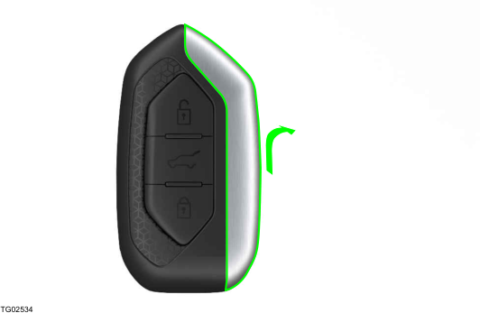
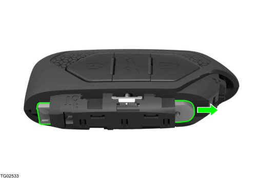
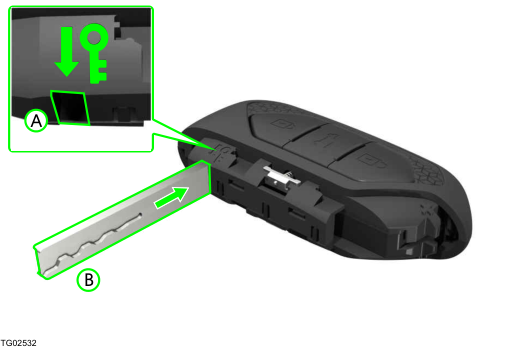
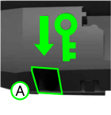
3.1.3 Uzaktan Kumandalı Anahtarın Kaybolması/ Değiştirilmesi
Eğer uzaktan kumandalı anahtar kaybolursa, Togg yetkili servisi ile görüşün. Bu uzaktan kumandalı anahtarı devre dışı bıraktırın. Tüm anahtarları yanınızda götürmeniz önemlidir. Gerekiyorsa, mekanik kilitleri de değiştirin. Değişim anahtarları veya yeni uzaktan kumandalı anahtarlar sadece bir Togg yetkili servisinden sipariş edilebilir. Bir araca üç uzaktan kumandalı anahtar atanabilir.
Araçta uzaktan kumanda hatası olduğunda veya uzaktan kumandalı anahtar pili deşarj olduğunda uzaktan kumandalı anahtarı algılamayabilir. Böyle bir durumda aracı çalıştırmak için aşağıdaki adımları izleyin: 1. Uzaktan kumandalı anahtarı görselde 1. işaretlenmiş transponder alanı yakınına yerleştirin. 2. Aracı çalıştırmak için Start/Stop düğmesine 2. basın.
3.1.4 Anahtar Öğrenme Prosedürü
Uzaktan kumandalı anahtarı eşleştirmek için eğitimli personel ve gerekli aletlere sahip bir Togg yetkili servisini ziyaret edin.
3.1.5 Uzaktan Kumandalı Anahtar Pilinin Değiştirilmesi
Uzaktan kumandalı anahtar pilini değiştirmek için bir Togg yetkili servisini ziyaret edin.
BİLGİ
Uzaktan kumandalı anahtar değişim pilinin, ilk pil ile aynı spesifikasyonlara (CR2032) sahip olması gereklidir. Uzaktan kumandalı anahtardaki pilin değiştirilmesi gerektiğinde, sürücü ekranında bir "Uzaktan kumandalı anahtar pili düşük!!" mesajı görüntülenir.
UYARI
20 mm çapındaki pillerin veya diğer düğme pillerin yutulması, çok kısa sürelerde ciddi ve hatta ölümcül yaralanmalara neden olabilir.
Aracın pilli anahtarlarını ve uzaktan kumandalarını
çocukların erişemeyeceği yerde tutun.
Birinin pil yuttuğundan şüphelenirseniz derhal tıbbi destek alın.
3.1.6 Deşarj Olmuş/Algılanmayan Uzaktan Kumandalı Anahtarla Aracın Acil Durum Çalıştırması
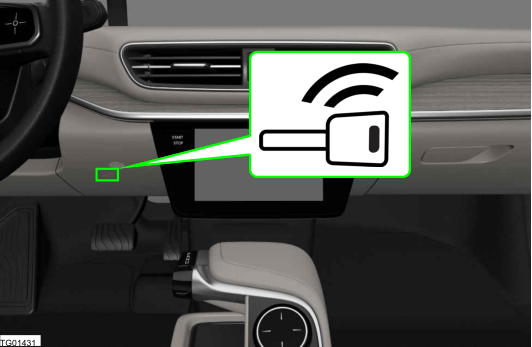
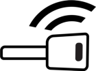
3.1.7 Elektronik Immobilizer
İmmobilizer, aracın yetkisiz kullanımını önler. Bazı durumlarda anahtarlıkta farklı bir araç üreticisinin uzaktan kumandalı anahtarının bulunması halinde araç çalışmayabilir.
3.1.8 Akıllı Erişim
Akıllı erişim, uyumlu bir akıllı telefon veya akıllı cihazları aracı kilitlemek, kilidini açmak ve çalıştırmak için dijital bir anahtar olarak kullanmanıza imkan verir. Akıllı erişimde aşağıdaki fonksiyonlar kullanılabilir:
▪ Kilitleme/Kilit Açma
▪ Bagaj kapağı açma/kapatma
▪ Pencereleri açma/kapatma
▪ Güneşliği açma/kapatma
▪ Korna çalma
▪ Işıkları etkinleştirme
▪ Aracı çalıştırma/durdurma
BİLGİ
Dijital anahtar olarak bir akıllı telefon kullandığınızda, telefonun şarjı bitmesi durumunda aracınıza erişim için mutlaka uzaktan kumandalı anahtarı yanınızda bulundurun.
İşletim gereklilikleri
Akıllı telefon, Trumore uygulaması ile uyumlu olmalıdır.
Araç, kayıtlı sahibinin hesabı üzeriden Trumore uygulaması ile ilişkilendirilmiş olmalıdır.
Akıllı telefonun bataryası yeterli şarja sahip olmalı ve Bluetooth bağlantısı etkin olmalıdır.
BİLGİ
Akıllı erişim fonksiyonu, düşük voltajlı akünün anlık şarj seviyesi kritik değerin altındaysa çalışmayabilir.
3.1.9 Birincil Dijital Anahtarın (Varsa) Oluşturulması
1. Dijital anahtarlı akıllı telefonu, kablosuz şarj 1. bölmesinin ortasına yerleştirin. 2. Ekranın yukarı baktığından emin olun. 2. 3. "Başlat" talebi için Trumore uygulamasındaki 3. "Başlat" düğmesine basın. 4. Başarılı doğrulama sonrasında araçtaki "Start/ 4. Stop düğmesine" 30 sn. içinde basın.
Kayıtlı araç sahibinin akıllı telefonu, aracın birincil dijital anahtarı olarak etkinleştirilir. Bunu yapmak için, kayıtlı araç sahibinin aracı için doğrulama kanıtı sağlaması gereklidir. Doğrulama kanıtı, Trumore uygulaması ile başlatılabilir. Araç anahtarları, işlem esnasında araçta olmalıdır. Trumore uygulamasındaki talimatları izleyin.
Dijital anahtar tescil işlemi
1. Cihazınızın uygulama mağazasını ziyaret edin ve 1. Trumore uygulamasını indirin. 2. Aracı satın alırken Trumore uygulaması üzerinden 2. bir hesap (Tru.ID) oluşturun. 3. Trumore uygulamasını açın ve navigasyon 3. çubuğundan”Akıllı Cihaz” seçeneğini seçin. 4. "Akıllı Cihaz Ekle" düğmesine basın ve 4. yönergeleri takip edin. 5. Başarılı kayıt sonrasında aracı uzaktan kumandalı 5. anahtar ile açın ve uzaktan kumandalı anahtarı aracın içinde tutun. 6. Araçtaki "Bağlantılar" menüsünde "Erişim 6. Cihazları" menüsünü açın, “Erişim Cihazları” düğmesine basın ve akıllı telefonu orta konsolda bulunan kablosuz şarj bölmesine yerleştirip mobil uygulamadan bağlantıyı başlatın. Bakınız 9.3.2 Kablosuz Şarj (varsa) 7. Güvenlik kontrolü sonrasında akıllı telefon ve 7. araç, eşleşme kodu girilmek suretiyle Bluetooth üzerinden birbirleriyle eşleşecek ve bağlanacaktır.
BİLGİ
Dijital anahtar tescili esnasında Akıllı
telefonunuzun ve aracınızın internete erişimi olmalıdır.
Opsiyon şasi numaranıza bağlandığı için ikinci el araç alma durumunda Trumore Akıllı Cihazım uygulamasına yeni aracın tanımlanması için başvurmanız durumunda eski üyelikler iptal edilecektir.
DİKKAT
Satış öncesinde akıllı telefondaki tüm dijital anahtarları silin. Bu, akıllı telefonun araç için artık kullanılamamasını sağlar.
Aracın dijital anahtarla çalıştırılması
3.1.10 Dijital Anahtarın Paylaşılması
Dijital anahtarı başkalarıyla sınırlı bir süre için sınırlı yetkilerle paylaşabilirsiniz. Bu işlem, birincil dijital anahtar olarak etkinleştirilmiş akıllı telefonla yapılabilir.
Dijital anahtar paylaşmak için Mobil uygulama üzerinden ilgili seçeneği seçin. Dijital anahtar başka bir kişiyle paylaşılır paylaşılmaz, o kişiye davet gider. Davet kabul edilirse, alıcının akıllı telefonunda dijital anahtar etkinleşir.
Belirli fonksiyonlara erişim, dijital anahtar paylaşımı esnasında sınırlandırılabilir. Örneğin, eğer dijital anahtar acemi bir sürücüye veriliyorsa, maksimum hız sınırı yapılabilir.
▪ Erişim (Kapı, Bagaj kapağı, Sürüş)
▪ Geçerlilik süresi
▪ Sürüş mesafesi
▪ Hız sınırı
▪ Coğrafi alan sınırı
3.1.11 Dijital Anahtarın Silinmesi
Birincil anahtar veya paylaşılan anahtarlar, birincil dijital anahtarla ilişkilendirilmiş akıllı telefondan veya orta ekrandan silinebilir.
Paylaşılan bir anahtar sadece birincil dijital anahtarla ilişkilendirilmiş akıllı telefondan, aracın silinecek olan anahtardan farklı bir anahtarla kullanılıyor olması halinde silinebilir.
Paylaşılan anahtarın geçerlilik süresi dolarsa, bu dijital anahtar otomatik olarak silinecektir.
3.1.12 Dijital Anahtarın Sınırlılıkları
Bazı sınırlamalar, dijital anahtarın doğru çalışmasını önleyebilir. Bunların bazıları aşağıda listelenmiştir:
Eğer akıllı telefon uygun olmayan bir telefon kılıfı nedeniyle araçtaki sensörleri görmüyorsa.
Akıllı telefonla kılıfı arasında başka nesneler, örneğin çipli bir kart varsa.
Akıllı telefon binalardan veya metal nesnelerden dolayı engelleniyorsa.
Akıllı telefon, 6 metreden fazla uzaktaysa.
3.2 Kapılar
3.2.1 Aracın Dışından Kilitleme/Kilit Açma
Uzaktan kumandalı anahtar üzerindeki düğmeler, tüm kapıları ve aynı zamanda bagaj kapağını kilitlemek ve kilidini açmak için kullanılabilir. Bu ayrıca, opsiyonel anahtarsız giriş özelliği bulunan modellerde, uzaktan kumandalı anahtar düğmelerine basmadan da yapılabilir.
UYARI
Yaralanma riski söz konusudur. Kapılar kullanılırken vücut uzuvlarının sıkışma tehlikesi vardır. Kapıyı açarken veya kapatırken, kapıların hareket alanında herhangi bir şey olmadığından emin olun.
Uzaktan kumandalı anahtar menzili
Aracın kilidini uzaktan kumandalı anahtar ile açmak için, anahtarın aracın yanlarından veya bagaj kapağına uzaklığı en fazla 30 m olmalıdır.
Kilitleme ve kilit açma
Kilitleme/Kilit Açma ayarları kontrol ekranı kullanılarak değiştirilebilir. Girilecek menüler:
Kontrol Ekranı → Ana Sayfa → Menü → Araç → Kilitler
1. Uzaktan kumandalı anahtar üzerindeki kilit açma 1. düğmesine (1) basın. 2. Kapıyı açın. 2.
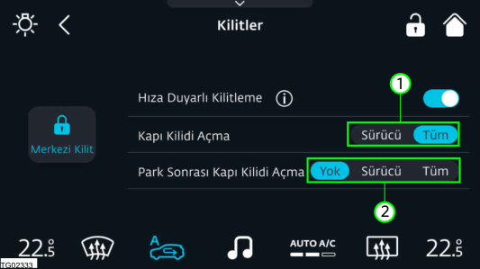
İstediğiniz kapının kilidini açmak için "Sürücü veya Tüm" düğmesine (1) basın.
Elektromekanik park frenini devreye aldıktan sonra istediğiniz kapının kilit açma ayarını yapmak için "Yok veya Sürücü veya Tüm" düğmesine (2) basın. Aracı kilitlemek için, tüm kapılar kapalı olmalıdır. Eğer bagaj kapağı açıksa, kapatıldığında kilitlenecek ve alarm verilecektir.
Kilitleme
1. Tüm kapıları kapatın. 1. 2. Uzaktan kumandalı anahtar üzerindeki kilitleme 2. düğmesine (2) basın.
Kilit açma
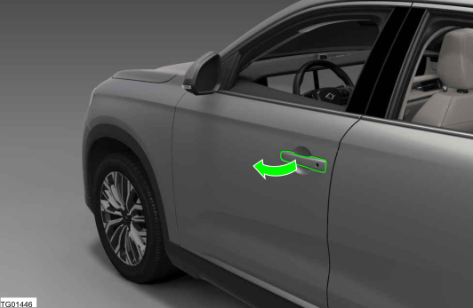
Kilitleme/Kilit Açma teyidi
Dönüş sinyalleri, aracın uzaktan kumandalı anahtar veya anahtarsız giriş özelliği kullanılarak kilitlendiğini/ açıldığını belirtir.
Kilitleme : Dönüş sinyalleri bir kez yanıp söner ve
dış dikiz aynaları kapanır.
Kilit açma : Dönüş sinyalleri iki kez yanıp söner ve dış dikiz aynaları açılır.
BİLGİ
Araç kilitlendiğinde, sadece eğer tüm kapılar, bagaj kapağı ve kaput kapalı ise teyit verilecektir.
3.2.2 Anahtarsız Giriş (varsa)
Araçta bu özellik varsa, merkezi kilitleme sistemini çalıştırmak için uzaktan kumanda anahtarın üzerinizde bulunması yeterlidir. Anahtarsız giriş özelliği olan modellerde, aracı kilitlemek için ön kapı kolunun dışında bir sensör ve kilidi açmak için kolun iç kısmında basınca duyarlı bir yüzey bulunur. Bagaj kapağında, sadece kilidi açmak için kullanılan bir dokunmatik yüzey bulunur.
BİLGİ
Bir defada bir kapı kolunun kilitleme/kilit açma yüzeylerinden sadece birine basılmalıdır. Her iki yüzeye de aynı anda basılırsa, istenen kilitleme/kilit açma işlemi gerçekleşmeyebilir veya gecikebilir.
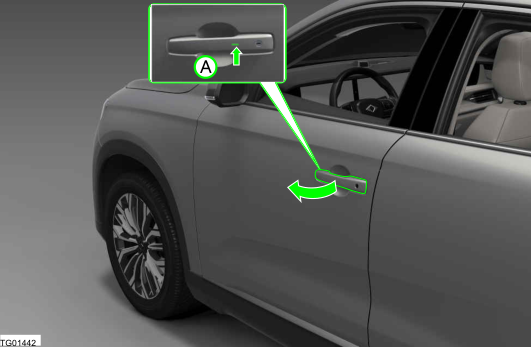
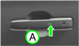
Kilitleme
Aracı kilitlemeden önce tüm kapılar kapatılmalıdır. 1. Tüm kapıları kapatın. 1. 2. Kilitlemek için ön kapı kollarının dış kısmındaki 2. basınca duyarlı girintiye (A) basın.
Kilit açma
1. Kilidi açmak için bir kapı kolunu çekin. 1.
2. Kapıyı açın veya bagaj kapağı dış kolunun 2. altındaki dokunmatik yüzeye basın.
Anahtarsız giriş kısıtlamaları
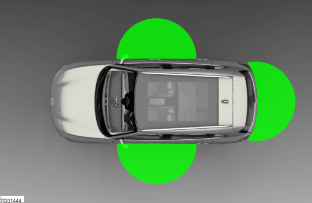
Uzaktan kumandanızın ön kapı kollarından ve bagaj kapağından en fazla 3 m uzakta olduğundan emin olun.
Aşağıdaki durumlarda sistem çalışamaz:
▪ Uzaktan kumanda yaklaşık bir dakika boyunca hareketsiz kalırsa.
▪ Aracın düşük voltajlı aküsünün şarjı yoksa.
▪ Uzaktan kumandanın pili bitmişse.
▪ Uzaktan kumandanın frekanslarıyla karışan bir parazit varsa.
▪ Uzaktan kumanda, anahtarlar veya cep telefonu gibi metal nesnelere veya elektronik cihazlara çok yakınsa.
Anahtarsız Çalıştırma
Anahtarsız çalıştırma özelliği olan araçlarda, aracı çalıştırmak için uzaktan kumandalı anahtarın fiziksel olarak kullanılması gerekmez (anahtarın yolcu bölmesinin ön kısmında olması yeterlidir).
3.2.3 Aracın İçinden Kilitleme/Kilit Açma (Merkezi Kilitleme)
Sürücü kapısındaki düğmelerle:
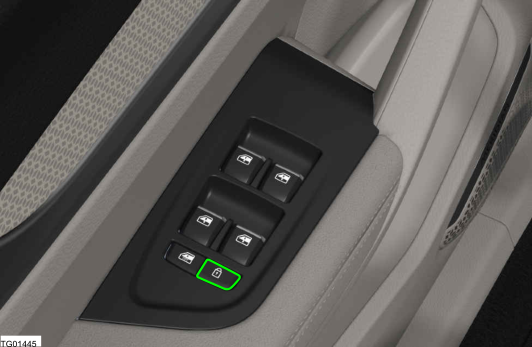
Tüm kapıları ve bagaj kapağını aynı anda kilitlemek veya kilidini açmak için sürücü kapısındaki kilit düğmesine basın. Sürücü ve yolcu kapıları ayrı ayrı kilitlenebilir ve açılabilir.
BİLGİ
Çocuk kilidi aktif ise, arka kapılar içeriden açılamaz.
Kontrol ekranı ile:
Girilecek menüler:
Kontrol Ekranı → Ana Sayfa → Menü → Araç → Kilitler
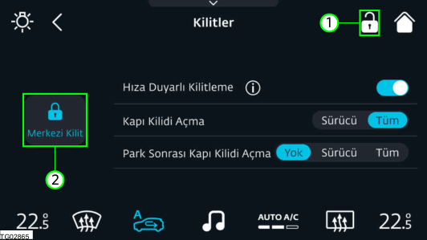
Tüm kapıları ve bagaj kapağını aynı anda kilitlemek veya kilidini açmak için (1) veya (2) düğmesine dokunun.
BİLGİ
Merkezi kilitleme düğmesi (1), kontrol ekranında daima kullanılabilir durumdadır.
3.2.4 Hıza Duyarlı Kilitleme
Araç 10 km/s hızla hareket etmeye başladığında, tüm kapılar ve bagaj kapağı otomatik olarak kilitlenecektir. Hıza duyarlı kilitleme, kontrol ekranından etkinleştirilebilir veya devre dışı bırakılabilir. Girilecek menüler:
Kontrol Ekranı → Ana Sayfa → Menü → Araç → Kilitler
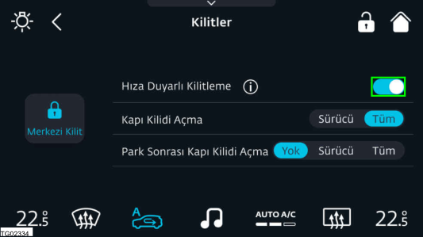
Hıza duyarlı kilitleme fonksiyonunu aktive etmek/ devre dışı bırakmak için hıza duyarlı kilitleme düğmesine dokunun.
3.2.5 Mekanik Anahtar ile Kilitleme/Kilit Açma
Sürücü kapısı, uzaktan kumandalı anahtar çalışmıyorsa, bir mekanik anahtar kullanılarak kilitlenebilir/kilidi açılabilir. Şu adımları izleyin: 1. Mekanik anahtarı çıkarın. (Bakınız 3.1.2 Mekanik 1. Anahtar ) 2. Mekanik anahtarı sürücü kapısı kolunun kilidine 2. takın. 3. Kapıyı kilitlemek/kilidini açmak için mekanik 3. anahtarı saat yönünde/saatin tersi yönde çevirin.
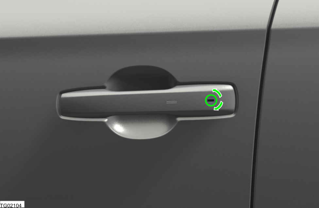
3.3 Camlar
3.3.1 Güvenlik Talimatları
UYARI
Camı kaldırırken/indirirken sıkışma riski söz konusudur. Camı kaldırırken/indirirken, vücut uzuvları cam ve çerçeve arasında takılabilir ve sıkışabilir.
Cama kimsenin dokunmadığından emin olun.
Birisi sıkışmışsa, düğmeyi hemen bırakın veya camı
tekrar kapatmak için çekin.
UYARI
Çocuklar camı çalıştırdığında sıkışma riski vardır. Çocuklar, özellikle gözetimsiz haldeyken, camları kaldırıp indirirlerse sıkışabilirler.
Arka yolcu bölmesi camları için çocuk kilidini
etkinleştirin.
Aracı terk ederken, uzaktan kumandalı anahtarı
daima yanınıza alın ve aracı kilitleyin.
Çocukları asla araçta gözetimsiz halde bırakmayın.
3.3.2 Camları Aracın İçinden Açma ve Kapatma
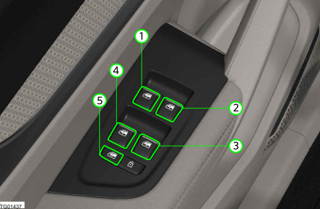
1. Ön sol kapı camı 1. 2. Ön sağ kapı camı 2. 3. Arka sağ kapı camı 3. 4. Arka sol kapı camı 4. 5. Arka cam çocuk kilidi 5. Camlar, aşağıdaki koşullarda çalıştırılabilir:
▪ Güç kaynağı veya araç çalışır haldeyken
▪ Araç kapatıldıktan sonra kısa bir süre için
Sürücü, sürücü kapısı panelinde bulunan cam kaldırma/indirme tuşunu kullanarak tüm elektrikli camları kontrol edebilir. Diğer kapılardaki cam kaldırma/indirme tuşu, sadece ilgili kapılardaki camı çalıştırır. Tüm elektrikli cam kaldırma/indirme tuşları, iki kademeli bir işlevle donatılmıştır: Tek dokunuşla çalıştırma: Camı tamamen açmak veya kapatmak için, cam kaldırma/indirme tuşuna basın veya tuşu hafif yukarı çekerek ikinci seviyeye getirin. Cam kaldırma/indirme tuşuna basılırsa veya tekrar çekilirse çalışması durur.
Manuel çalıştırma : Açık ve kapalı arasında bir konum seçmek için, cam istenen konuma ulaşılana kadar, ilk seviyeye getirmek için cam kaldırma/indirme tuşunu basın veya çekin.
3.3.3 Konforlu Açma/Kapatma
Uzak kumandalı anahtarla açma ve kapatma
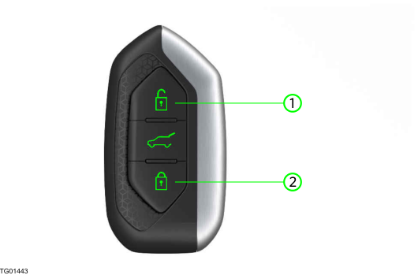
Açma : Aracın kilidini açtıktan sonra, uzaktan kumandalı anahtardaki kilit açma düğmesini (1) basılı tutun. Camlar, uzaktan kumandalı anahtardaki düğme (1) basılı tutulduğu sürece açılır. Kapatma : Aracı kilitledikten sonra, uzaktan kumandalı anahtardaki kilitleme düğmesini (2) basılı tutun. Camlar, uzaktan kumandalı anahtardaki düğme (2) basılı tutulduğu sürece kapanır.
BİLGİ
Tüm camlar kapatıldığında, dönüş sinyalleri yanıp söner.
BİLGİ
Araç panoramik tavan sistemi ile donatılmışsa, konforlu kapatma fonksiyonu kullanıldığında güneşlik de kapanacaktır.
3.3.4 Sıkışma Önleme Fonksiyonu
Camların sıkışma önleme fonksiyonu, camlar kapanırken yaralanma riskini azaltabilir. Sıkışma veya engellenme nedeniyle cam kapanamıyorsa, hemen geri açılacaktır. Sıkışma önleme fonksiyonu, sadece bir yardımcıdır ve dikkatinizin yerine geçmez. Kapatma işlemi sırasında, camın kapanma alanı içinde hiçbir vücut uzvunun bulunmadığından emin olun.
3.3.5 Arıza Giderme
Hata algılandıktan sonra, aşağıdaki fonksiyonlar devre dışı kalır:
Otomatik hareket (Yukarı ve Aşağı) Yumuşak durdurma fonksiyonu Sıkışma önleme fonksiyonu Konfor komutları Fonksiyonu sıfırlamak için, aşağıdaki işlemleri yapın: 1. Camları kapatın ve sıkışma tespit edildikten sonra 1. cam durana kadar cam kaldırma/indirme tuşunu çekin. 2. Cam kaldırma/indirme tuşunu kısa bir süreliğine 2. tekrar yukarı çekin. 3. Camı tamamen açın ve cam kaldırma/indirme 3. tuşuna kısa bir süreliğine basın. Sıfırlama işleminden sonra tek dokunuşla çalıştırma fonksiyonu çalışmamaya devam ederse, sistemi kontrol ettirmek için bir Togg yetkili servisini ziyaret edin.
3.4 Kaput & Bagaj Kapağı
3.4.1 Kaputun Açılması ve Kapatılması
UYARI
Ön bölmede çıkan bir araç yangını nedeniyle kaputu açarsanız, aşağıdaki durumlarla karşılaşabilirsiniz:
Sıcak gazlarla temas edebilirsiniz. Dışarı sızan diğer sıcak araç sıvılarına temas edebilirsiniz. Ön bölmede bir yangın fark edilirse, kaputu kapalı tutun ve itfaiyeyi arayın.
UYARI
Hareketli parçalar sebebiyle yaralanma riski vardır. Sürüş sistemi kapatılmış olsa bile, motor bölmesindeki bileşenler çalışmaya devam edebilir veya beklenmedik şekilde çalışmaya başlayabilir. Kaputu açmanız gerekiyorsa, aşağıdaki hususlara dikkat edin:
Aracın kontağını kapatın. Hareketli bileşenlerin etrafındaki tehlikeli
bölgelere, örneğin fanın dönüş alanına asla dokunmayın.
Takılarınızı ve saatlerinizi çıkarın. Giysilerinizi ve saçlarınızı hareketli parçalardan uzak tutun.
UYARI
Yüksek voltajlı bileşenler sebebiyle yaralanma riski vardır.
Turuncu kablolara sadece eğitimli ve kalifiye Togg
servis personeli tarafından müdahale edilmelidir.
Bu kılavuzda açıkça tanımlanmamış/açıklanmamış herhangi bir bileşene dokunmayın.
DİKKAT
Kaputun veya ön cam sileceklerinin hasar görme riski vardır.
Kaputu açarken, ön cam sileceklerinin dışarı doğru
katlanmadığından emin olun.
Kaputu açmadan önce, ön cam sileceklerini daima kapatın.
Açma
1. Sürücü kapısını açın. 1. 2. Kaput tamamen kapalıyken, kaput açma kolunu 2. çekin. 3. Kilidi açmak için, kaputun ön kenarının altındaki 3. kaput kilidini (1) saatin tersi yönde çevirin. 4. Kaputu kaldırın ve açın. 4.
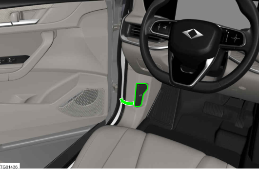
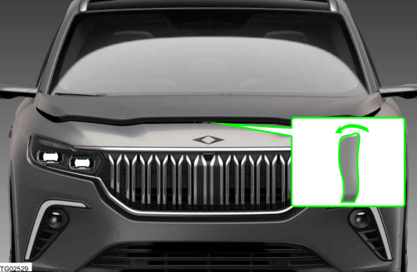
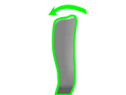
Kapatma
1. Kaput kendi ağırlığıyla kapanmaya başlayana 1. kadar aşağı doğru itin. 2. Kaput kilidinin takılı olduğundan emin olun. 2. Tamamen kapatmak için kaputu aşağı doğru bastırın.
Ekran simgesi
Kaput kilidi tamamen serbest kaldığında, sürücü ekranında bir uyarı sembolü yanar ve bir sesli sinyal işitilir. Araç hareket etmeye başlarsa, sesli sinyal birkaç kez tekrarlanacaktır.
| Simge | Tanım |
| Kaput kapalı değil |
UYARI
Kaput düzgün kapatılmazsa, sürüş sırasında aniden açılabilir ve görüşünüzü tamamen kapatabilir. Bu durum, kazalara ve tehlikeli yaralanmalara yol açabilir.
Kaputu kapattıktan sonra, kaput kilidinin düzgün
bir şekilde oturmuş olup olmadığını daima kontrol edin.
Araç hareket halindeyken kaputun düzgün kapanmadığını fark ederseniz, aracı mümkün olan en kısa sürede güvenli bir şekilde durdurun ve kaputu kapatın.
Kaput sadece hareket alanında kimse olmadığında açın veya kapatın.
BİLGİ
Kaput tamamen kapalı ve kilitli olduğunda bile uyarı sembolü yanık halde kalmaya veya sesli sinyal çalmaya devam ederse, bir Togg yetkili servisini ziyaret edin.
3.4.2 Bagaj kapağının Kilitlenmesi/Kilidin Açılması
Bagaj kapağı, aracın opsiyonel anahtarsız giriş özelliği donanımına sahip olup olmadığına bağlı olarak farklı şekillerde kilitlenebilir/kilidi açılabilir.
UYARI
Bagaj kapağı açıldığında dışarı doğru kalkar. Yaralanma veya maddi hasar riski vardır. Açarken veya kapatırken, bagaj kapağının hareket alanında herhangi bir şey olmadığından emin olun.
Bagaj kapağı kullanılırken vücut uzuvları
sıkışabilir. Yaralanma riski söz konusudur. Açarken veya kapatırken, bagaj kapağının hareket alanında herhangi bir şey olmadığından emin olun.
DİKKAT
Bagaj kapağının kontrolsüz açılmasına veya kapatılmasına bağlı hasar riski söz konusudur.
Aracın arkasında ve üzerinde yeterli boşluk
olduğundan emin olun (örn. tavan taşıma sistemleri, garaj tavanı).
Yüklerin bagaj bölmesi kenarından çıkıntı yapmasına izin vermeyin.
Uzaktan kumandalı anahtarla kilit açma
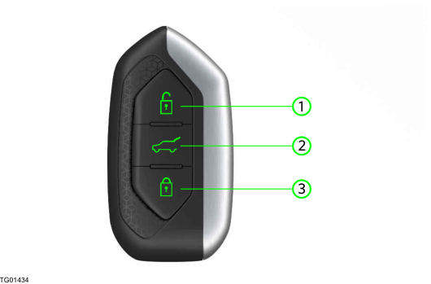
1. Bagaj kapağının kilidini açmak için, uzaktan 1. kumandalı anahtar üzerindeki bagaj kapağı düğmesine (2) uzun süre basın. 2. Bagaj kapağını açın. 2.
Anahtarsız kilit açma
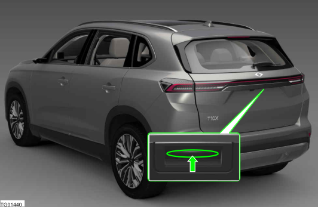
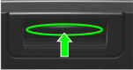
1. Uzaktan kumandalı anahtar sizdeyken bagaj 1. kapısı kilidini açmak için dış bagaj kapağı açma kolu altındaki dokunmatik yüzeye hafifçe bastırın. Eğer uzaktan kumandalı anahtar algılanmamışsa, bagaj kapağı/kilidi açılamaz. 2. Bagaj kapağını kaldırın ve tamamen açın. 2.
DİKKAT
Dokunmatik yüzeye basarken bagaj kapağının
elektronik kilit mekanizmasını serbest bırakmak için sadece hafif bir baskı yeterlidir.
Bagaj kapağını açarken, açma kolunu kullanarak yukarı çekin. Dokunmatik yüzey üzerine çok fazla baskı uygulanması, elektrik bağlantılarına zarar verebilir.
Bagaj kapağı kilidinin içeriden açılması
Bagaj kapağı kilidi aracın içinden açılabilir.
Bagaj kapağı kilidini açmak için sürücü kapısında bulunan merkezi kilitleme sistemi düğmesine basın.
Uzaktan kumandalı anahtarla kilitleme
Uzaktan kumandalı anahtar üzerindeki araç kilitleme düğmesine (3) basın.
3.4.3 Elektrikli Bagaj Kapağı (varsa)
UYARI
Bagaj kapağını açıp/kapatırken dikkatli olun, yaralanma riski söz konusudur. Açıp/kapatmadan önce bagaj kapağı hareket alanında kimse bulunmadığından emin olun, yaralanma olabilir.
Bagaj kapağının açılması
Elektrikli bagaj kapağı, elektrikli olarak aşağıdaki şekillerde açılabilir:
Bagaj kapağı açılmaya başlayana kadar uzaktan kumandalı anahtar üzerindeki düğmeyi basılı tutarak. Veya
Dış bagaj kapağı açma kolu altındaki dokunmatik yüzeye hafifçe bastırarak. Veya Girilecek menüler:
Kontrol Ekranı → Ana Kontroller
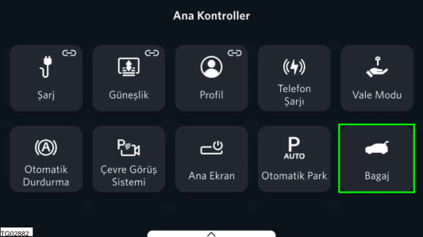
Bagaj kapağını açmak için bagaj düğmesine basın.
Bagaj kapağının kapatılması
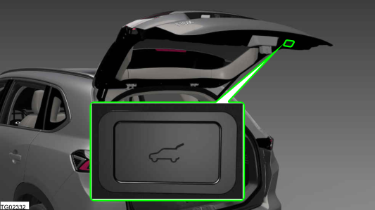
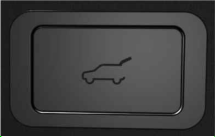
Bagaj kapağı uzaktan kumandalı anahtar ile veya bagaj kapağının alt kenarındaki iç düğmeye basarak kapatılabilir. Eğer uzaktan kumandalı anahtar bagaj kapağına yeterince yakın değilse, otomatik kilitleme/kilit açma/ açma/kapatma mümkün olmayacaktır.
Açma/kapatmanın durdurulması
Uzaktan kumandalı anahtardaki düğmeye basın. Bagaj kapağının alt kenarındaki düğmelerden birine basın.
Dış bagaj kapağı açma kolu altındaki dokunmatik yüzeye hafifçe bastırın.
Bagaj kapağının açılma yüksekliğinin ayarlanması
1. Bagaj kapağındaki dokunmatik yüzeye basın. 1. Bagaj kapağı açılmaya başlayacaktır. 2. Dokunmatik yüzeye istediğiniz açılma 2. yüksekliğine ulaşınca tekrar basın. Bagaj kapağının açılması duracaktır. 3. Pozisyonu kaydetmek için dokunmatik yüzey 3. üzerine uzun basın.
Ekran simgeleri
| Simge | Tanım |
| Elektrikli bagaj kapağı arızası (Simge sabit) |
3.5 Hırsızlık Alarmı
3.5.1 Genel Açıklama
Hırsızlık alarmı sistemi araca girildiğini tespit ederse, sesli ve görsel uyarı sinyalleri tetiklenir. Hırsızlık alarmı sistemi, aracınızı kilitlerken veya kilidini açarken açılır veya kapanır. Alarm tetiklendiğinde, belirli bir süre sonra otomatik olarak kapanır. Aşağıdaki koşullar alarmı tetikler:
▪ Bir kapı/motor kaputu/bagaj kapağı açılırsa.
▪ Aracın eğim açısında bir değişiklik olursa, örneğin aracı kaldırmak ve tekerlekleri çalmak veya çekmeden önce kaldırmak için bir girişimde bulunulursa.
3.5.2 Hırsızlık Alarmı Sistemini Açma ve Kapatma
Hırsızlık alarmı sistemi, aşağıdaki durumlarda yaklaşık 1 saniye içinde otomatik olarak aktive edilir:
Uzaktan kumandalı anahtarla aracı kilitledikten sonra Anahtarsız giriş fonksiyonunu kullanarak aracı kilitledikten sonra Alarm sistemi, aracın kilidi açıldığında devre dışı kalır. Hırsızlık alarmı, kontrol ekranından açılabilir/ kapatılabilir. Girilecek menüler:
Kontrol Ekranı → Ana Sayfa → Menü → Araç → Alarmlar
Fonksiyonu Açmak/Kapatmak için Hırsızlık Alarmı düğmesine dokunun.
3.5.3 Tetiklenen (Sesli) Bir Alarmı Kapatma
Tetiklenen hırsızlık alarmı aşağıdaki yöntemler kullanılarak kapatılabilir:
Uzaktan kumandalı anahtar
Uzaktan kumandalı anahtardaki Kilitle/Kilidi Aç düğmesine basın. Veya Uzaktan kumandalı anahtar yanınızdayken Start/Stop düğmesine basın.
Anahtarsız giriş
Uzaktan kumandalı anahtar aracın dışındayken, ön kapı kolunun iç yüzeyine dokunun.
Mekanik anahtar
Mekanik anahtarla aracın kilidini açın. (Bakınız 3.2.5 Mekanik Anahtar ile Kilitleme/Kilit Açma )
3.5.4 Hırsızlık Önleme Sisteminin Araç Çekme Bildirimi
Araç çekme uyarı alarmı etkin iken aracın eğim açısında bir değişiklik tespit edilirse, bir sesli ve görsel uyarı tetiklenir. Araç çekme uyarı alarmı yaklaşık 1 saniye içinde otomatik olarak aktive olur:
Uzaktan kumandalı anahtarla aracı kilitledikten sonra Anahtarsız giriş fonksiyonunu kullanarak aracı kilitledikten sonra Araç çekme alarmı sadece aşağıdaki bileşenler kapalı olduğunda aktive olur:
Kapılar Bagaj Kapağı
Hırsızlık önleme sistemi araç çekme bildiriminin devre dışı bırakılması
Hırsızlık önleme sistemi araç çekme bildirimi, kontrol ekranından açılabilir/kapatılabilir. Girilecek menüler:
Kontrol Ekranı → Ana Sayfa → Menü → Araç → Alarmlar
Fonksiyonu Açmak/Kapatmak için Çekmeye Karşı Koruma düğmesine dokunun.
3.5.5 Hırsızlık Alarmı Gösterimi
Hırsızlık alarmı tetiklendiğinde aşağıdaki durumlar oluşur:
Sesli uyarı : Sesli uyarı 30 saniye boyunca veya
hırsızlık alarmı kapanana kadar çalar.
Görsel uyarı : Dörtlü flaşör 5 dakika boyunca veya hırsızlık alarmı kapatılana kadar yanıp söner.
BİLGİ
Hırsızlık alarmı sisteminin düzgün çalışmaya devam edebilmesi için, sistemde değişiklik yapmayın.
3.5.6 Yanlış Alarmlardan Kaçınma
Eğim sensörü ve hırsızlık alarmı sistemi, yetkisiz bir işlem gerçekleşmese bile bir alarmı tetikleyebilir. Aşağıdaki hallerde yanlış uyarılar verilebilir:
Yıkama makinelerinde veya araba yıkama yerlerinde Liftli garajlarda Aracı, araba vagonu, araba feribotu veya römork ile taşırken Araçta evcil hayvanlar varken.
3.6 Panoramik Tavan Sistemi (varsa)
3.6.1 Güvenlik Talimatları
UYARI
Panoramik tavan güneşliğini çalıştırırken, özellikle çocuklar tarafından çalıştırılıyorsa, panoramik tavan güneşliğine sıkışma riski söz konusudur. Panoramik tavan güneşliğinin hareket alanını çalışma esnasında her zaman için açık bırakın. Çocukları asla araçta gözetimsiz halde bırakmayın.
DİKKAT
Keskin veya çıkıntılı nesnelerin güneşliğe zarar
verme riski bulunmaktadır. Panoramik tavan güneşliğini çalıştırırken hareket alanda nesneler bulunmadığından emin olun.
Aracı camlar açık halde sürerken, panoramik tavan güneşliğini açmamanız veya kapatmamanız tavsiye edilir. Panoramik tavan güneşliği sisteminin hasar görme riski vardır.
3.6.2 Panoramik Tavan Güneşliğinin Açılması ve Kapatılması
Panoramik tavan güneşliği araç çalıştırıldığında elektrikli olarak ayarlanabilir. Kontrol ekranını kullanarak güneşliği çalıştırmak için, Girilecek menüler:
Aşağıdaki tablo, sürücü ekranında görüntülenen panoramik tavan güneşlik durumu mesajlarını açıklamaktadır. Panoramik tavan güneşlik sisteminde bir arıza olduğunda, sürücüyü ikaz etmek için bir uyarı mesajı görüntülenir. Arıza durumunda normale döndürme işlemini gerçekleştirmek için sadece "Kapalı" ve "Açık" düğmeleri işlevseldir. Arızayı düzeltmek için, "Kapalı" düğmesine basın ve uyarı mesajı silinene kadar basılı tutun. Devam eden normale döndürme işlemi, kontrol ekranında görüntülenecektir. Normale döndürme işleminden sonra panoramik tavan güneşlik arızası devam ederse, sistemi kontrol ettirmek için bir Togg yetkili servisini ziyaret edin.
Kontrol Ekranı → Ana Kontroller → Güneşlik
Kontrol ekranında aşağıdaki düğmeler görüntülenir: 1. Kapatma düğmesi 1. 2. Açma düğmesi 2. 3. Konum ayar sürgüsü (aracın üstten görünümü ile) 3.
Düğmeleri kullanarak açma ve kapatma
Güneşliği tamamen açmak veya kapatmak için "Aç" veya "Kapat" düğmesine bir kez basın.
Güneşliği kısmen açmak veya kapatmak için, "Aç" veya "Kapat" düğmesine basın ve istenilen pozisyona gelene kadar basılı tutun.
Pozisyon ayar sürgüsünü kullanarak açma ve kapatma
Güneşlik, sabit durumdayken pozisyon ayar sürgüsünü kullanarak 10 farklı pozisyona ayarlanabilir.
Güneşliği ayarlamak için sürgüyü istediğiniz pozisyona "Sürükleyin ve Bırakın".
Açma/kapatma işleminin durdurulması
"Aç" veya "Kapat" düğmesine basın. "Aç" veya "Kapat" düğmesine basın ve basılı tutun. Pozisyon ayar sürgüsünde "Sürükle ve Bırak" özelliğini kullanın.
3.6.3 Panoramik Tavan Güneşliğini Konforlu Kapatma
Panoramik tavan güneşliği, uzaktan kumandalı anahtarı kullanarak camlarla birlikte kapatılabilir.
3.6.4 Panoramik Tavan Güneşliği Arızası
| Bilgi | Sürücü ekranındaki mesaj |
| Sıkışma tespiti | Güneşlik sıkışması tespit edildi |
| Arıza | Güneşlik normalizasyonu yapılmadı |
| Arıza düzeltme esnasında | Güneşlik başlatma işlemi gerçekleştiriliyor |
3.7 Güneşlik
3.7.1 Genel Açıklama
Güneşlikler, ön camdan veya yan camlardan gelen güneş ışığını engellemek için kullanılabilir.
3.7.2 Güneşliğin Ayarlanması
DİKKAT
Güneşlikler aşağı indirilmiş halde araç kullanmak, yol görüşünüzü azaltabilir. Güneşlikler kullanılmadığında daima katlanıp kapatılmalıdır.
Önden gelen güneş parlamasına karşı koruma
Önden gelen parlamayı önlemek için, güneşliği aşağı veya yukarı doğru döndürün.
Yandan gelen güneş parlamasına karşı koruma
1. Güneşliği aşağı doğru döndürün. 1. 2. Güneşliği tutucusundan çıkarın ve kapı camına 2. doğru yana döndürün. 3. İstediğiniz konuma geri getirin. 3. Güneşliği kapatmak için, işlemleri tersten yapın.
3.7.3 Makyaj Aynası
Güneşliklerin üst taraflarında, kart tutucusu olan makyaj aynaları bulunur. Ayna açıldığında, makyaj aynası ışığı yanar. Makyaj aynasının çerçevesinde, kart veya bilet gibi eşyalar için bir tutucu mevcuttur.
BİLGİ
Kart tutucuya aynı anda birden fazla bilet/kart
koymayın. Bu, kart tutucunun zarar görmesine neden olabilir.
Makyaj aynası kapağını, açılabileceğinden daha fazla açmaya zorlamayın. Bu durum, makyaj aynası kapağına zarar verebilir.
UYARI
Araç hareket halindeyken makyaj aynasının ayna kapağı açılırsa, gelen ışıktan ötürü geçici körlük yaşayabilirsiniz. Bir kaza riski söz konusudur. Sürüş esnasında ayna kapağını daima kapalı tutun.
4 Sürüş & Sürücü Asistanı
sonra araç kullanmak çok tehlikelidir. Küçük miktarlardaki alkol veya uyuşturucu bile reflekslerinizi, algılarınızı ve yargınızı etkileyebilir.
Alkol veya uyuşturucu alarak araç kullandığınızda, ciddi ve hatta ölümcül kaza riski büyük oranda artmaktadır. Elektrik gücü kullanarak sürüş esnasında yayalar ve trafikteki diğer kişiler, araçta AVAS donanımı olmasına rağmen fazla motor sesi olmadığı için normal olarak aracı fark etmeyebilirler. Bir kaza riski söz konusudur. Sürüş tarzınızı, trafik şartlarına göre ayarlayın. Trafiğin durumunu gözlemleyin ve durumun gerektirmesi halinde aktif şekilde müdahale edin.
4.1 Aracın Çalıştırılması
4.1.1 Elektrikli Tahrik Hakkında Genel Bilgiler
Elektrikli bir aracı sürmek, içten yanmalı motorlu bir araç sürmek gibidir. Araç, elektrikli tahrik mekanizması ile emisyonsuz sürülmektedir.
Özel yüksek voltajlı batarya, elektrik motoruna ve elektrikli konfor fonksiyonlarına besleme yapar.
Yüksek voltajlı batarya, park halindeyken şarj kablosu ile, veya sürüş esnasında enerji geri kazanımı ile şarj olur.
Şarj işlemi, DC hızlı şarj istasyonlarında hızlı yapılabilmektedir. Ayrıca, AC duvar şarj ünitesi ve AC halka açık şarj istasyonu prizi ile evde şarj etmek mümkündür.
Sürüş esnasında enerji geri kazanım sistemi, frenlemeden ötürü kaybedilen enerjinin mümkün olduğunca az olmasını sağlar.
Araç yavaşlarken, elektrik motorları alternatör görevi yaparak kinetik enerjiyi elektrik enerjisine dönüştürür. Elektrik enerjisi, menzili artırmak için yüksek voltajlı bataryayı şarj ederken oluşan manyetik alanla frenleme etkisiyle yavaşlamaya yardımcı olur.
Dört Çeker: Hem ön hem de arka aks ayrı elektrik motorlarından güç alır. Bu araç, dört çeker elektrikli tahrik donanımına sahiptir.
Arkadan İtişli: Sadece arka aks bir elektrik motorundan güç alır. Bu araç, arkadan itişli elektrikli tahrik donanımına sahiptir.
UYARI
Sürücünün alkol ve uyuşturucu etkisi altında olması durumunda, kaza ve yaralanma riski vardır.
Alkol aldıktan ve/veya uyuşturucu kullandıktan
4.1.2 Aracın Start/Stop Düğmesiyle Çalıştırılması
Aşağıdaki koşullar karşılandığında aracın çalıştırılarak sürülmesi mümkündür:
Yüksek Voltajlı Batarya yeterince şarj edilmiş olmalıdır.
Şarj kablosu sökülmüş olmalıdır. Aracı çalıştırmadan önce şarj kablosunun söküldüğünden ve şarj kapağının kapatıldığından emin olun.
Araç anahtarlarından biri aracın içinde olmalıdır.
BİLGİ
Eğer vites seçici "D" modundayken sürücü kapısı açılır ve kapatılmazsa, elektromekanik park freni otomatik olarak devreye girer.
DİKKAT
Çalıştırmadan önce:
Emniyet kemerinizi takın. Koltuğu, direksiyon simidini ve aynaları ayarlayın. Fren pedalına tamamen basabildiğinize emin olun. 1. Emniyet kemerinizi takın. 1. 2. Fren pedalına basın ve Start/Stop düğmesine 2. basın. Sürücüyü bilgilendirmek için sürücü ekranında "HAZIR" simgesi görüntülenir. 3. Vites seçiciyi D veye R pozisyonuna getirin. 3. Araç artık hareket etmeye hazırdır. 4. Fren pedalını serbest bırakın. 4.
4.1.3 Araç Modları
Araç modları şunlardır:
Bekleme Modu: Araç uyku modundayken kapı kilitleri açıktır. Yüksek voltajlı batarya aktif değildir, fakat 12 V'lik akü aktiftir. Aksesuar Modu: Araç bekleme modundayken, fren pedalına basmadan Start/Stop düğmesine basın veya iklimlendirmeyi etkinleştirin. Yüksek voltajlı batarya aktif. Hazır Modu: Araç bekleme veya aksesuar modundayken, fren pedalına basın ve Start/Stop düğmesine basın. Araç sürüşe hazırdır.
| Simge | Tanım |
| Sürüş için hazır | |
| Aksesuar modu Açık | |
| Bekleme modu Açık |
4.1.4 Sürüş Pozisyonları
Sürüş pozisyonuna geçmek için vites seçiciyi kullanın. "P" pozisyonundan sürüş pozisyonuna geçerken fren pedalı basılı olmalıdır. Elektrikli araç sürüşe hazır olduğunda, sürüş pozisyonu ve kullanımda olan vites gösterilir.
Park Geri vites Nötr Sürüş
"D" Sürüş Pozisyonu
Bütün normal sürüşler için vites seçiciyi D pozisyonuna getirin. Fren Pedalı serbest bırakıldığında araç, eğer yavaş modu aktifse yavaşça sürüşe geçer.
"R" Geri Vites
Sadece araç sabit durumdayken vites seçiciyi "R" pozisyonuna geçirin. Araç hızı 0 km/s üzerindeyken R pozisyonunu seçmek mümkün değildir.
"N" Boşta
Vites seçici N pozisyonundayken, güç mekanizması yardımı olmadan araç itilebilir veya makara üzerinde yürütülebilir.
"P" Park
Vites seçici P pozisyonundayken elektrikli tahrik sistemi bloke edilir ve elektromekanik park freni devreye girer. "P" modunu seçmek için düğmeye (1) basın.
DİKKAT
Araçtan çıkmadan önce, vites seçicinin P pozisyonunda olduğundan ve elektromekanik park freninin devreye alındığından emin olun. Aksi halde araç hareket etmeye başlayabilir. Elektromekanik park freni otomatik olarak devreye alınabilir.
Sürüş
Sürmek için bir sürüş pozisyonuna geçin ve gaz pedalına basın. Elektromekanik park freni otomatik olarak devre dışı bırakılır.
4.1.5 Emekleme Modu
Emekleme fonksiyonu, fren pedalı serbest bırakıldığında ve sürüş pozisyonu için D veya R seçildiğinde aracın sabit konumdan otomatik olarak sürüşe geçmesini sağlar. Emekleme modu aşağıdaki durumlarda devreye girmez:
Elektromekanik park freni devreye girdiğinde Sürücü emniyet kemeri takılı değilse Sürücü kapısı açıksa Emekleme modu yukarıdaki nedenlerden dolayı aktif değilse, yavaş hareketi başlatmak için koşullar karşılandığında gaz pedalına dokunun. Eğer araç yokuş yukarı tırmanıyorsa veya tekerlek engellenmişse, emekleme modu otomatik olarak devre dışı bırakılabilir. Sürücüyü uyarmak için sürücü ekranında bir uyarı simgesi görüntülenir.
BİLGİ
Sürüş pozisyonu devredeyken araç hareket eder (yavaş). İstenmeyen bir yavaş hareketi önlemek için freni sadece sürmek istediğinizde serbest bırakın.
DİKKAT
Emekleme modu devre dışı bırakılmışsa, araç istemeden geriye hareket edebilir (otomatik durdurma aktif değilse). Çarpışma riski söz konusudur. Emekleme modunu kullanırken sürücü daima trafiği ve yol koşullarını takip etmelidir. Emekleme modunu etkinleştirmek/devre dışı bırakmak için, 1. Girilecek menüler: 1.
Kontrol Ekranı → Ana Sayfa → Menü → Sürüş → Sürüş Destek Sistemleri
2. Fonksiyonu etkinleştirmek veya devre dışı 2. bırakmak için emekleme modu düğmesine dokunun.
Ekran simgesi
| Simge | Tanım |
| Emekleme modu devre dışı. Yol üzerinde engel tespit edildi. |
4.1.6 Aracın Kapatılması
Araç tamamen durduğunda: 1. Vites seçiciyi "P" moduna getirin. Elektromekanik 1. park freni otomatik olarak devreye girer. 2. Start/Stop düğmesine basın. 2.
UYARI
Araçtaki denetimsiz çocuklar veya evcil hayvanlar, aracı harekete geçirebilir ve aşağıdaki gibi eylemlerle kendilerini veya diğer yol kullanıcılarını tehlikeye atabilir:
Start/Stop düğmesine basmak Elektromekanik park frenini devre dışı bırakmak Kapıları veya pencereleri açmak ve kapatmak Vites seçiciyi N konumuna getirmek
Araç donanımlarını çalıştırmak
Kaza veya yaralanma riski vardır. Çocukları veya evcil hayvanları araçta gözetimsiz halde bırakmayın. Aracı terk ederken, aracın anahtarını yanınıza alın ve aracı kilitleyin.
BİLGİ
Aracı kapatırken, yüksek voltajlı bataryanın soğutulması gibi işlemler sebebiyle elektrik sisteminde çalışma sesleri duyulabilir.
4.1.7 Sınırlı Motor Performansı
Araç sistemi bir arıza tespit ettiği zaman, yüksek voltaj sisteminin güvenliği için sınırlı motor performansı modu otomatik olarak devreye girer. Araç hala sürülebilir fakat motor gücü sınırlı olacaktır. Arıza durumu ortadan kalktığında, araç normal şekilde sürülebilir. Motor performansı aşağıdaki koşullarda sınırlandırılabilir:
Yüksek voltajlı batarya aşırı derecede boşaldığında veya voltaj azaldığında.
Elektrikli tahrik sisteminin veya yüksek voltajlı bataryanın sıcaklığı çok yüksek veya çok düşük olduğunda.
Elektronik denge kontrol sistemi arızalı olduğunda. Fren modülü arızalı olduğunda. Yüksek voltaj sistemi arızalı olduğunda.
Ekran simgeleri
| Simge | Tanım |
| Sınırlı motor performansı uyarısı (Simge sabit) | |
| Sınırlı motor performansı hatası (Simge sabit) |
4.2 Hız Sabitleyici
4.2.1 Genel Açıklama
Hız sabitleyici fonksiyonu, sürücünün seçimine bağlı olarak, belirtilen hız değerinin ayarlanmasına imkan tanır. Ayarlanan hız daha sonra sistem tarafından korunur. Sürücü sollama amacıyla aracın hızını artırırsa, hız ayarı iptal olmaz. Gaz pedalı serbest bırakıldıktan sonra, hız sabitleyici ayarlanan hızı devam ettirir.
Öncelikle, otoyollar ve diğer ana yolları gibi trafiğin sorunsuz aktığı sabit trafikli uzun ve düz yollarda kullanılmak üzere tasarlanmıştır.
UYARI
Aracın kontrolünü kaybederek kaza yapma riski
vardır. Araç daima mevcut trafik/yol koşullarına göre sürülmelidir. Sürücü, hız sabitleyicinin uygun bir hızı korumaması durumunda düzeltici önlem almaktan sorumludur.
Kaza riskini azaltmak için, dönüş şeritlerinde, otoyol çıkışlarında veya yol yapım bölgelerinde sürüş yaparken hız sabitleyiciyi geçici olarak kapatın.
4.2.2 Hız Sabitleyici Kullanımı
4.2.2.1 Genel Açıklama
1. Hız sabitleyici Açık/Kapalı 1. 2. Hız sabitleyiciyi iptal etme 2. 3. Hız sabitleyiciyi devam ettirme 3. 4. Hız sabitleyici hızını ayarlama 4.
4.2.2.2 Hız sabitleyicinin Açılması/Kapatılması
Hız sabitleyiciyi açmak/kapatmak için düğmeye basın.
BİLGİ
Hız sabitleyicinin etkinleştirilebilmesi için, araç hızının en az 20 km/s olması gerekir. Bu aynı zamanda ayarlanabilecek en düşük hızdır.
4.2.2.3 Hız sabitleyicinin etkinleştirilmesi
1. Hız sabitleyiciyi açın. 1. 2. Aracın hızını istenilen hıza getirin. 2. 3. Seyir hızını sabitlemek için sağ kolu aşağı itin. 3. Ayarlanan seyir hızı sürücü ekranında yeşil renkte görüntülenir ve otomatik olarak korunur.
4.2.2.4 Hız sabitleyici hızını değiştirme
Seyir hızını artırmak veya azaltmak için, sağ kolu yukarı veya aşağı doğru kısa süreli itin. Bu işlem, hızı 1 km/s adımlarla artırır/azaltır. Sağ kol yukarı veya aşağı doğru uzun süre basılı tutulursa, hız sabitleyici aracı hızlandırır/yavaşlatır ve sağ kol tekrar serbest bırakıldığında aracın o anki hızı ayarlanan yeni hız olur. Yeni maksimum hız, sürücü ekranında görüntülenir.
BİLGİ
Belirlenmiş hız limitlerine ve mevcut trafik düzenlemelerine daima uyun.
4.2.2.5 Ayarlanan hızı devam ettirme
Hız sabitleyici istenen hıza ayarlanmışken fren yapılırsa veya iptal düğmesine (1) basılırsa, ayarlanan hız hafızadan silinmeksizin hız sabitleyici devre dışı kalır. Araç hızı 20 km/s değerinin üzerine çıktığında, sağ kola yukarı (2) doğru kısa süreli itin. Araç, daha önceden ayarlanan hıza geri döner.
4.2.2.6 Hız sabitleyicinin iptal edilmesi veya devam ettirilmesi
Hız sabitleyiciyi iptal etmek için düğmeye (1) basın. Hız sabitleyiciyi iptal ettiğinizde, ayarlanmış seyir hızı hafızada kayıtlı kalır.
Kayıtlı seyir hızına devam etmek için, sağ kolu yukarı (2) itin.
BİLGİ
Araç Kapatılır veya yeniden başlatılırsa, kayıtlı hız
sabitleyici hızı silinecektir.
Hız sabitleyici fonksiyonu, elektronik denge
kontrolü (ESC) işlevlerinden herhangi biri çalışırken kesintiye uğrar.
DİKKAT
Ayağınızı gaz pedalına dayamak, hız sabitleyiciyi geçersiz kılabilir.
4.2.2.7 Ekran Simgeleri
| Simge | Tanım |
 | Hız sabitleyici aktif (Simge sabit) |
| Hız sabitleyici aktif fakat geçersiz kılındı (Simge yanıp söner) | |
| Hız sabitleyici beklemede (Simge sabit) | |
| Hız sabitleyici arızası (Simge sabit) |
4.3 Frenleme
4.3.1 Genel Açıklama
Frenler, hızı azaltmak veya aracın hareket etmesini önlemek için kullanılır. Tekerlek frenlerine ve elektromekanik park frenine ek olarak, araçta ayrıca çeşitli fren destek fonksiyonları bulunmaktadır. Araç, geleneksel vakum takviyeli fren servosu yerine I- Booster fonksiyonu ile donatılmıştır. I-Booster fonksiyonunun işlevsel olması için vakuma ihtiyacı yoktur, fren pedalının frenleme gücü bir elektrik motoruyla artırılır. I-booster, bir elektrikli aracın menzilini yaklaşık %20 artırmayı mümkün kılar.
DİKKAT
Tahrik sistemini asla araç tamamen durmadan önce kapatmayın. Araç durmadan önce kapatılması, I-fren servosu sisteminin ve hidrolik direksiyonun çalışmasını engelleyebilir.
Fren harmanlama
Fren harmanlama fonksiyonu, enerji dönüştürme (enerji geri kazanımı) sırasında elektrikli tahrik motorunun frenleme etkisi ile sürücü tarafından uygulanan mekanik frenleme arasında bir düzenleme sağlar. Amaç, fren pedalındaki kuvvetlerin ve kuvvet uygulama yönlerinin, yavaşlamanın elektriksel olarak mı yoksa sürtünme frenlemesi yoluyla mı sağlandığına bakılmaksızın daima aynı olmasını sağlamaktır.
Otomatik fren ön-yüklemesi (ABP)
Tuzlu yollarda sürerken, fren diski ve fren balataları üzerinde, durma mesafesini artırabilecek bir tuz tabakası birikebilir. Çarpışma riskini ve diğer yol kullanıcılarının zarar görme riskini azaltmak için, tuzu gidermek amacıyla ara sıra fren uygulayın.
Otomatik fren ön-yüklemesi, fren sistemindeki basıncı hafif artırmak suretiyle frenleme tepki süresini kısaltmak ve durma mesafesini azaltmak için kullanılan bir fonksiyondur. Fonksiyon, ön çarpışma uyarısı olduğunda devreye girer.
BİLGİ
Çalışma gürültüsü:
Frenleme esnasında, hıza, frenleme kuvvetine ve
sıcaklık ve nem gibi dış koşullara bağlı olarak bazı sesler çıkabilir.
DİKKAT
Ara sıra oluşan fren sesi normaldir. Metalin metale temas sesi, sürekli sürtme veya sürekli gıcırtı sesi varsa, fren balataları aşınmış olabilir ve bir Togg yetkili servisine kontrol ettirilmelidir.
4.3.2 Frenin Kullanımı
Frenlerin tepki süresi, hava ve çevre koşullarına göre değişiklik gösterir. Optimum frenleme etkisi elde etmek için, fren sistemleri düzenli olarak temizlenmelidir. Bu, sürüş sırasında kısa bir süre fren yaparak sağlanabilir.
UYARI
Bir kaza riski söz konusudur. Fren sistemini temizlemek amacıyla fren yapma işlemini sadece mevcut yol ve trafik koşulları buna izin verdiğinde yapın.
Islak yollarda
Şiddetli yağmurlu havalarda uzun süre fren yapmadan sürmek, ilk frenlemede frenleme etkisinin biraz gecikmesine neden olabilir. Bu durum, aracı yıkadıktan sonra da ortaya çıkabilir. Akabinde, fren pedalına daha fazla baskı uygulamak gerekecektir. Bu nedenle, öndeki araçla güvenli bir mesafeyi korumanız gerekir. Aracı yıkadıktan veya ıslak yollarda sürdükten sonra, sıkı fren uygulayarak temizleyin. Bu, fren disklerinin ısınmasına yardımcı olarak daha çabuk kurumalarını sağlar ve korozyona karşı koruma sağlar. Fren yaparken, mevcut trafik koşullarını göz önünde bulundurun.
Tuzlu yollarda
Islak zeminde kızaklama
Islak veya su birikintili yollarda sürerken, lastikler ve yol arasında bir su tabakası oluşabilir. Bu olay ıslak zeminde kızaklama olarak bilinir ve lastiğin yol yüzeyiyle temasını kısmen veya tamamen kaybetmesine neden olabilir, bu da araca yön veremeyeceğiniz ve frenleri düzgün şekilde kullanamayacağınız anlamına gelir.
BİLGİ
Gevşek çakıllı, çamurlu veya karla kaplı yollarda sürerken, öndeki araçla ekstra güvenlik mesafesini daima koruyun.
4.3.3 Fren Bakımı
Aracı mümkün olduğunca güvenli ve güvenilir durumda tutmak için, servis takvimine uyun. Fren balataları ve fren diskleri değiştirildikten sonra, araç birkaç yüz kilometre sürülene kadar tam frenleme etkisi elde edilmez. Bu düşük frenleme etkisini artırmak için, fren pedalına daha fazla baskı uygulayın. Daima Togg onaylı parçaların kullanılması tavsiye edilir. Fren balatası aşınması büyük ölçüde aracın sürüş şekli ve çalışma koşulları ile ilişkilidir. Fren balatasının aşınması, şehir içinde veya kısa mesafelerde sıkça sürüş yaparken veya sürüş tarzınız çok sportif ise artar. Fren balatası aşındığında, bir uyarı sembolü, sürücüye fren balatalarını değiştirmesi gerektiğini belirtir.
| Simge | Tanım |
 | Fren balatalarını değiştirin (Simge sabit) |
Paslanma
Hiç sert frenleme yapılmazsa, araç uzun süre kullanılmazsa veya araç sıkça ya da uzun mesafelerde sürülmezse, fren diskinde paslanma/korozyon oluşabilir. Frenleme esnasında, paslanmış fren diskleri genellikle düzeltilemeyen bir titremeye neden olabilir.
4.3.4 Kilitlenme Önleyici Fren Sistemi (ABS)
Araçta, tekerleklerin kilitlenmesini önlemeye yardımcı olan ve fren yaparken direksiyon kontrolünü korumaya yardımcı olan bir kilitlenme önleyici fren sistemi (ABS) mevcuttur. Kilitlenme önleyici fren sistemi çalışırken fren pedalında titreşimler hissedilebilir, bu normal bir durumdur.
| Simge | Tanım |
| Kilitlenme önleyici fren sistemi arızası (Simge sabit) |
UYARI
Fren pedalını pompalamayın. Bunu yaparsanız,
durma mesafesinin artmasına neden olabilirsiniz.
Sorumlu bir şekilde sürmelisiniz. Kilitlenme önleyici fren sistemi, uygunsuz hızlarda sürmeniz halinde kaza riskini azaltmaz.
Kaygan, çakıllı veya karla kaplı yollarda durma mesafesi normal yollara göre daha fazla olacaktır. Öndeki araçla güvenli mesafeyi daima koruyun.
UYARI
Hem fren arızası hem de kilitlenme önleyici fren sistemi arıza uyarı sembolleri aynı anda yanarsa, fren sisteminde bir arıza olabilir. Aracınızı bir Togg yetkili servisine kontrol ettirin.
Viraj denge kontrolü (CSC)
Araç yüksek hızlarda seyrederken, direksiyon simidinin küçük bir hareketi araç yönünde çok büyük bir fark yaratır. Viraj denge kontrolü fonksiyonu, aracın keskin bir viraj aldığı algılandığı zaman etkinleştirilir. Viraj denge kontrolü, her tekerlek üzerindeki frenleme kuvveti miktarını ayarlayacak, böylece aracın kontrollü bir sürüş hattını korumasına yardımcı olacak ve aracı dengede tutacaktır.
Fren destek sistemi
Fren destek sistemi, frenleme kuvvetini artırmaya yardımcı olur ve böylece fren mesafesini azaltabilir. Fren destek sistemi, bir acil frenlemenin gerekip gerekmediğini belirlemek için aracın hızını ve sürücünün fren pedalına uyguladığı kuvveti izler. Böyle bir durumda, sürücü fren pedalına yeterince basmasa bile, sistem tarafından otomatik olarak tam frenleme kuvveti uygulanır. Bu durumda, kilitlenme önleyici fren sisteminin sunduğu avantajlardan yararlanılır.
Elektronik fren kuvveti dağılımı
Elektronik fren kuvveti dağılımı (EBD), aracı dengelemek için frenleme sırasında her tekerleğe uygulanan fren kuvvetini değiştirir. Özellikle virajlarda fren yaparken aracı dengede tutar ve aşırı savrulmasını önler.
4.3.5 Elektronik Denge Kontrolü (ESC)
Elektronik denge kontrolü, tahrik gücünü azaltarak ve her bir tekerleğe fren müdahalesinde bulunarak aracın sabit bir rotada kalmasına yardımcı olur.
UYARI
Daima dikkatli sürün. Aracın bir tepede geriye doğru kaymasını önlemek
için hiçbir zaman sadece yokuş kalkış destek sistemine güvenmeyin.
DİKKAT
Donmuş veya çamurlu yollarda dururken dikkatli olun.
Tork talebi
ESC (elektronik denge kontrolü) sisteminin, rejeneratif frenlemenin aracın dengesiz hale gelmesine neden olması durumunda tork azaltma talebinde bulunmak için güç aktarma organlarıyla birlikte çalışması gerekir. Bu durumda elektronik denge kontrolü, aracı dengede tutmak için torku artırabilir veya azaltabilir.
Otomatik çekiş kontrolü
Otomatik çekiş kontrolü, patinaj durumunda tahrik çıkışını/gücünü azaltır ve yol yüzey koşullarına göre uyarlar. Otomatik çekiş kontrolü, yokuşlarda çekişi iyileştirir, hızlanmayı ve tırmanmayı kolaylaştırır.
Yokuş kalkış desteği/Otomatik durdurma
Yokuş kalkış desteği fonksiyonu, araç bir yokuşta duruyorken sürücü fren pedalını bırakıp gaza bastığı anda aracın geriye doğru kaymasını önlemeye yardımcı olmak amacıyla aracı otomatik olarak fren durumunda tutar. Fonksiyon, fren pedalı serbest bırakıldıktan sonra birkaç saniye boyunca, fren sisteminde fren pedalından gelen basıncı korur.
DİKKAT
Fren pedalını bıraktıktan hemen sonra sürmeye
başlamazsanız, aracınız geriye doğru kaymaya başlayabilir. Aracın kontrolünü kaybederek kaza yapma riski vardır.
Yokuş kalkış desteği, eğimli yerlerde aracı her koşulda (örn. kaygan veya buzlu zeminde) tutamaz. Yokuş kalkış desteğini kullanırken, her zaman fren yapmaya hazır olun.
Yokuş iniş kontrolü
Yokuş iniş kontrolü, dört tekerleği otomatik olarak frenlemek suretiyle araç hızını sabit tutarak yokuş aşağı iniş esnasında size yardımcı olur ve aracın yönünü kontrol altında tutabilmenizi sağlar. Gaz ve fren pedallarını kullanarak hızı ayarlayabilirsiniz. Bu ayarlama, eğime ve aracın hızına bağlıdır.
Kayma azaltma
Sistem, aracın kayma hareketini algılayarak ve bir veya daha fazla tekerleğe ayrı ayrı fren uygulayarak kaymayı önlemeye yardımcı olur. Elektronik denge kontrolü fonksiyonlarının etkinleştirilmesi ve devre dışı bırakılması Elektronik denge kontrolü fonksiyonları, kontrol ekranı kullanılarak etkinleştirilebilir veya devre dışı bırakılabilir. Girilecek menüler:
Kontrol Ekranı → Ana Sayfa → Menü → Sürüş → Sürüş Destek Sistemleri
Otomatik durdurmayı etkinleştirmek/devre dışı bırakmak için düğmeye (1) dokunun.
Yokuş iniş kontrolünü etkinleştirmek/devre dışı bırakmak için düğmeye (2) dokunun. Ek olarak, otomatik durdurma işlevi aşağıdaki seçenek kullanılarak da etkinleştirilebilir veya devre dışı bırakılabilir. Girilecek menüler:
Kontrol Ekranı → Ana Kontroller
Otomatik araç durdurmayı etkinleştirmek/devre dışı bırakmak için otomatik durdurma düğmesine dokunun.
Ekran simgeleri
| Simge | Tanım |
| Elektronik denge kontrolü arızası (Simge sabit) | |
| Elektronik denge kontrolü devrede (Simge yanıp söner) | |
| Otomatik durdurma aktif (Simge sabit) | |
| Otomatik durdurma arızası (Simge sabit) | |
| Yokuş iniş kontrolü aktif (Simge yanıp söner) | |
| Yokuş iniş kontrolü etkinleştirildi (Simge sabit) | |
| Yokuş iniş kontrolü arızası (Simge sabit) |
4.3.6 Elektromekanik Park Freni
Elektromekanik park freni (EPB), araç park halindeyken aracı istenmedik şekilde kaymaya karşı korumak için kullanılır. Elektromekanik park freni göstergesi sürücü ekranında yanar.
UYARI
Araçta gözetimsiz haldeki çocuklar veya hayvanlar,
aracı harekete geçirebilir ve kendilerini veya diğer yol kullanıcılarını tehlikeye atabilir. Yaralanma ve hatta ölüm riski vardır.
Park halindeki araçtan çıkarken anahtarı yanınıza alın ve aracı kilitleyin.
BİLGİ
Elektromekanik park frenini devreye alırken veya devre dışı bırakırken, frenin elektrik motorundan zayıf bir ses işitilebilir.
Elektromekanik park freninin aktive edilmesi
1. Fren pedalına basın. 1. 2. Elektromekanik park freni düğmesini yukarı 2. kaldırın.
Elektromekanik park frenini manuel olarak devre dışı bırakma
1. Aracı çalıştırın. 1. 2. Fren pedalına basın. 2. 3. Elektromekanik park freni düğmesine basın. 3.
Kayma önleme koruması
Elektromekanik park freni fonksiyonu, aracın kaymasını önlemek amacıyla, araç durur ve kapı açılırsa veya motor durursa elektromekanik park frenini devreye alır. Elektromekanik park freni göstergesi sürücü ekranında yanar.
Otomatik sürüş
Sürücü, emniyet kemeri takılıyken elektrikli el frenini manuel olarak devreden çıkarmadan gaz pedalına bastığında sistem elektrikli el frenini devreden çıkarır.
Elektromekanik park freni arızası
Elektromekanik park freni çalışmazsa veya arızalanırsa, aracı terk etmeden önce, kaymasını önlemek için aracı emniyete alın.
Ekran simgeleri
| Simge | Tanım |
| Elektromekanik park freni arızası (Simge yanıp söner) | |
| Elektromekanik park freni etkin veya Elektronik fren kuvveti dağılımı uyarısı (Simge sabit) |
| Simge | Tanım |
| Akıllı fren servosu servis uyarısı veya rejeneratif fren kontrol servisi uyarısı (Simge sabit) |
4.4 Park Etme ve Manevra
4.4.1 Güvenlik Talimatları
UYARI
Yetersiz şekilde emniyete alınmış bir araçtan ötürü
kaza veya yaralanma riski vardır. Yokuş yukarı veya yokuş aşağı eğimli yerlerde park ederken, aracın emniyette olduğundan daima emin olun. Aracın hareket etmeye başlaması durumunda kaymasını önlemek için, ön tekerlekleri kaldırıma doğru çevirin.
Araçta bir kişi uzun süre kalır ve yüksek sıcaklıklara maruz kalırsa, yaralanma riski veya yaşamsal risk söz konusu olabilir. İçinde biri varken aracı dışarıdan kilitlemeyin.
Çocukları asla araçta gözetimsiz halde bırakmayın. Çocukların elektromekanik park frenini devre dışı bırakarak veya araç donanımını kurcalayarak aracı harekete geçirmeleri durumunda, kaza veya yaralanma riski vardır.
Park asistanının kullanımı esnasında yüksek hızlarda yaklaşırken, yaralanma veya kaza riski vardır. Sistem sınırları nedeniyle uyarı geç verilebilir. Park asistanını kullanırken araca yüksek hızlarda manevra yaptırmaktan kaçının.
4.4.2 Aracın Park Edilmesi
Aracı park ederken aşağıdaki prosedürü uygulayın: 1. Aracı tamamen durdurmak için fren uygulayın. 1. 2. Elektromekanik park frenini devreye alın ve vites 2. seçiciyi "P" konumuna getirin. 3. Start/Stop düğmesine basarak aracı kapatın. 3. 4. Araçtan çıkın ve aracı kilitleyin. 4.
4.4.3 Park Asistanı
Sistem aktive edildikten sonra, sensörler bir engelin tampona yakınlığını algılar ve bu bilgiyi ana ekranda görüntüler. Aracın algılanan nesneye göre genel görünümü ana ekranda gösterilir. Araç ile nesne arasındaki mesafe değiştikçe, kılavuz çizgilerin rengi de değişir.
4.4.3.1 Genel Açıklama
UYARI
Park asistanı sistemi sadece aracı park etmenize ve manevra yapmanıza yardımcı olmak içindir. Sistem sınırları sebebiyle, her durumda yanıt veremeyebilir. Bu fonksiyon, çevrenize olan duyarlılığınızın ve
dikkatinizin yerine geçemez ve sizi karayolu trafik kanunu ile ilgili sorumluluğunuzdan muaf tutmaz. Park asistanı sistemi, dar park alanlarında manevra yaparken aracınızı güvenli bir şekilde park etmenize yardımcı olacak bir elektronik park yardımıdır. Ana ekranında ve sürücü ekranında sesli ve görsel bilgiler sunar. Ekrandaki segmentlerin rengi, tespit edilen engele olan mesafeye bağlı olarak değişir: Yeşil: > 0.6 m Sarı: yaklaşık 0,6 m – 0,3 m Kırmızı: < 0.3 m Aracınız engele ne kadar yaklaşırsa, segmentler de araca o kadar yaklaşır.
Ön asistan fonksiyonu etkinleştirildiğinde ve araç hızı 15 km/s'in altında olduğunda, ultrasonik sensörler bir engelin ön veya arka tampona yakınlığını tespit eder ve bu bilgi ana ekranda ve sürücü ekranında görüntülenir. Aracın algılanan nesneye göre üstten görünümü ana ekranda ve sürücü ekranında gösterilir. Araç ile nesne arasındaki mesafe değiştikçe, segmentlerin rengi de değişir. Sistemin tespit menzili çevre koşullarına bağlı olarak, yaklaşık olarak arka için 150 cm, ön için 120 cm'dir. Araçtan yaklaşık 30 cm uzakta nesne tespit edildiğinde ve çarpışma ihtimali arttığında, bir sürekli sesli uyarı verilir. Ön park asistanı fonksiyonu, kontrol ekranı kullanılarak aktive edilebilir ve devre dışı bırakılabilir. Fonksiyon aşağıdaki bileşenlerin yardımıyla çalışır:
▪ Ön ultrasonik sensörler
▪ Arka ultrasonik sensörler
▪ Yan ultrasonik sensörler
4.4.3.2 Ön/Arka park asistanı
4.4.3.3 Yan park asistanı (varsa)
Yan park asistanı fonksiyonu, yan tarafta algılanan herhangi bir engel konusunda sizi uyarır. Engeller, sürüş esnasında ön veya arka ultrasonik sensörler tarafından önceden algılanmalıdır. Araç tespit edilen bir engel yönünde yönlendirilirse ve yandan çarpışma gerçekleşmek üzereyse, sesli ve görsel bir uyarı verilir. Tüm yönlerdeki engelleri görüntülemek için, aracın bir araç uzunluğu kadar bir mesafe gitmesi gerekir. Sistemin algılama menzili, çevreye bağlı olarak yanlardan yaklaşık 60 cm'dir. Yan park asistanı fonksiyonu, kontrol ekranı kullanılarak aktive edilebilir ve devre dışı bırakılabilir. Fonksiyon aşağıdaki bileşenlerin yardımıyla çalışır:
Ön ultrasonik sensörler
Arka ultrasonik sensörler Yan ultrasonik sensörler
4.4.3.4 Park asistanı simgeleri
| Simge | Tanım |
| Yan park asistanı | |
| Park yerine giriş | |
| Park yerinden sağdan çıkış | |
| Park yerinden soldan çıkış | |
| Park asistanı görünümü |
4.4.3.5 Park Asistanının Aktive Edilmesi//Devre Dışı Bırakılması
Park asistanı fonksiyonu, aşağıdaki durumlarda otomatik olarak etkinleştirilir
Araç çalışıyor olmalıdır. Vites seçici "R" konumuna getirildiğinde. Araç hızı 15 km/s'nin altında ve yaklaşan bir cisim algılandığında. Park asistanı fonksiyonunun manuel olarak aktive edilmesi/devre dışı bırakılması, kontrol ekranı kullanılarak kontrol edilebilir. Girilecek menüler:
Kontrol Ekranı → Ana Sayfa → Menü → Araç → Çevre Görüş Sistemi → Ayarlar
Ön park asistanı fonksiyonunu etkinleştirmek/ devre dışı bırakmak için, düğmeye (1) dokunun.
BİLGİ
Ön park asistanı, vites seçici "R" konumuna geçirildiğinde otomatik olarak daima yeniden etkinleştirilir.
Yan park asistanı fonksiyonunu etkinleştirmek/ devre dışı bırakmak için, düğmeye (2) dokunun.
4.4.3.6 Park asistanı kısıtlamaları
Sistem kısıtlamaları nedeniyle, park asistanı fonksiyonu aşağıdaki durumlarda çalışmayabilir:
Nesneler, çıkıntı yapan rampalar gibi yüksek bir seviyede olduğunda.
Kutular gibi küçük ve alçak nesneler durumunda. Ultrasonik sensörlerin üstü çıkartmalar/etiketler veya folyolarla kapatıldığında.
Tamir işlemlerinden sonra sensörler yanlış hizalanır, hasar görür, yanlış şekilde takılır veya boyanırsa.
Kar, kuvvetli rüzgar ve aşırı sıcak veya soğuk gibi hava koşullarında.
Hareket halindeki ince veya keskin nesneler. Harici ultrasonik sesler devreye girdiğinde; örneğin yüksek sesli makineler veya yoldan geçen araçlar.
Sensörlerin kirli olması durumunda. Nesnelerin gözenekli yüzeye sahip olması durumunda.
Küçük çocuklar ve hayvanlar varsa.
Yan park asistanı kısıtlaması
Aracın yan tarafı için, araç hızı 9 km/s'in altında olduğunda sistem sadece yanlarından geçerken sensörler tarafından daha önce algılanmış sabit engelleri gösterir.
4.4.3.7 Ultrasonik park asistanında arıza
| Sürücü ekranındaki me- saj | Tanım |
| Ultrasonik park asistanı arızası algılandı | Park asistanı arızası |
Sürücü ekranında, ultrasonik park arızası mesajı görüntülenecektir. Sistemi kontrol ettirmek ve düzelttirmek için bir Togg yetkili servisini ziyaret edin.
4.4.4 Otomatik Park (varsa)
4.4.4.1 Genel Açıklama
UYARI
Otomatik park fonksiyonu sadece aracı park etmenize ve manevra yapmanıza yardımcı olmak içindir. Sistem kısıtlamaları nedeniyle, her durumda yanıt veremeyebilir. Bu fonksiyon, çevrenize olan duyarlılığınızın ve dikkatinizin yerine geçemez ve sizi karayolu trafik kanunu ile ilgili sorumluluğunuzdan muaf tutmaz. Otomatik park fonksiyonu, sürücünün park yerlerine girip çıkmasına yardımcı olur. Ultrasonik sensörler park yerlerini izler ve algılar. Aracın direksiyon ve fren kontrolü, aracı park alanına girdirmek ve çıkarmak için sistem tarafından kontrol edilir. Sürücünün yapması gereken işlemlerle ilgili bilgiler, sürücü ekranında, kontrol ekranında ve ana ekranda sembol, resim ve metin şeklinde gösterilir.
Sürücü ekranı görüntüsü
1. Otomatik park etme devam ediyor. 1. 2. Sol tarafta bir park yeri mevcut. 2. 3. Sağ tarafta bir park yeri mevcut. 3. Park asistanı fonksiyonu sürücü tarafından etkinleştirildiğinde, bir park yeri aramaya başlanır. Park yeri arama, kontrol ekranındaki 'Ana Kontroller' ekranından 'Otomatik Park' fonksiyonu seçildiğinde aktive edilir. Park yeri seçildikten sonra, otomatik park manevrası başlar. (Bakınız 4.4.4.2 Aracı park yerine girme (Park Yerine Giriş) )
Ekran simgeleri
| Simge | Tanım |
| Park yeri bulundu göstergesi | |
| Otomatik park etme devam ediyor |
Kullanılabilir park yerine giriş yöntemleri aşağıdaki gibidir:
1. Paralel park etme 1.
2. Dikey park etme 2.
Otomatik park yerine giriş fonksiyonunda aşağıdaki adımlar mevcuttur: 1. Park yeri arama (A) 1. 2. Fonksiyonu aktive etme 2. 3. Aracı park etme (B) 3.
Kullanılabilir park yerinden çıkış yöntemleri aşağıdaki gibidir:
Paralel park çıkışı
Otomatik park düğmesine basın. Otomatik park görüntüsü ana ekranda belirir ve sistem park yerlerini aramaya başlar. 2. Park yeri ararken, aracı park halindeki diğer 2. araçlara paralel ve 1 m'den daha az bir mesafede sürün. Herhangi bir park yeri bulunursa, sürücü ekranında park yeri bulundu göstergesi ile belirtilir. Olası park yerleri de kontrol ekranında görüntülenir. 3. Fren pedalına basarken aracı durdurun ve 3. istediğiniz park yerini seçin ve ana ekrandaki talimatları takip ederek aracın otomatik olarak park yerine girmesini bekleyin. 4. Otomatik park etme işleminin tamamlandığı, ana 4. ekranda belirtilir. Gerekirse, park konumunu ayarlayın ve vites seçiciyi "P" konumuna getirin.
Otomatik park yerinden çıkış fonksiyonunda aşağıdaki adımlar mevcuttur: 1. Fonksiyonu aktive etme 1. 2. Park çıkışı yönünü seçme (A) 2. 3. Park yerinden çıkma (B) 3.
4.4.4.2 Aracı park yerine girme (Park Yerine Giriş)
1. Girilecek menüler: 1.
Kontrol Ekranı → Ana Kontroller
veya
Kontrol Ekranı → Ana Sayfa → Menü → Araç → Çevre Görüş Sistemi → Otomatik Park
BİLGİ
Dörtlü flaşör, otomatik park etme prosedürü başladığında otomatik olarak yanar.
UYARI
Otomatik park yeri arama fonksiyonu, etraftaki nesneleri arar ve bu nesneler arasındaki boş park yerlerini tespit eder. Bu prensip nedeniyle, bazen yanıltıcı park yeri bulundu gösterimleri olabilir. Park yeri bulundu bildirimleri sadece park yeri arandığında ve etrafta gerçek park yerleri olduğunda dikkate alınmalıdır.
4.4.4.3 Otomatik park etmeyi sonlandırma
Otomatik park etme işlemi devam ederken, kontrol ekranında aşağıdaki görüntü gösterilir.
Otomatik park manevrasını manuel olarak sonlandırmak için park etmeyi sonlandır düğmesine dokunun.
4.4.4.4 Park alanından çıkma (Park Yerinden Çıkış)
UYARI
Otomatik park yerinden çıkış fonksiyonu, yalnızca diğer park edilmiş araçlara olan mesafe çok dar olduğunda paralel park yerlerinden çıkmaya yardımcı olmak için mevcuttur. Sistem kısıtlamaları nedeniyle, her durumda yanıt veremez. Bu fonksiyon, çevrenize olan duyarlılığınızın ve dikkatinizin yerine geçemez ve sizi karayolu trafik kanunları ile ilgili sorumluluğunuzdan muaf tutmaz. Araç otomatik olarak park yerinden ayrılırken her yönden gelen trafikle ilgilenmekten yalnızca sürücü sorumludur.
BİLGİ
Otomatik park yerinden çıkış fonksiyonu yalnızca aracı paralel park yerlerinden çıkarmak için kullanılmalıdır. Otomatik park yerinden çıkış fonksiyonu, araç paralel olarak park edildiğinde sürücünün park yerinden çıkmasına yardımcı olur.
Gereklilikler:
Araç yakın zamanda çalıştırılmıştır, yani Start/Stop düğmesine basılmıştır ve aracın durumu "Hazır" durumuna geçmiştir.
Araç hareketsizdir, elektromekanik park freni devrededir ve vites "P" veya "N" konumundadır.
Aracın ön tarafında 120 cm'den daha kısa mesafede algılanan bir nesne vardır.
Aracın yan tarafında algılanan, duvar veya araba gibi herhangi bir nesne yoktur. Otomatik park yerinden çıkış fonksiyonu ve "Park Yerinden Soldan Çıkış" ve "Park Yerinden Sağdan Çıkış" düğmeleri yalnızca yukarıdaki koşullar sağlandığında etkinleştirilir.
BİLGİ
Otomatik park yerinden çıkış işlemine başlamadan
önce vites seçici "N" modunda olmalı ve elektromekanik park freni serbest bırakılmalıdır.
Araç hızı 10 km/s üzerine çıkarsa park yerinden çıkış fonksiyonu devre dışı bırakılır. Park yerinden çıkış fonksiyonunu etkinleştirmek için aracı yeniden çalıştırın. Otomatik park yerinden çıkış işlemi için aşağıdaki talimatları izleyin: 1. Girilecek menüler: 1.
Kontrol Ekranı → Ana Kontroller → Otomatik Park
Veya
Kontrol Ekranı → Ana Sayfa → Menü → Araç → Çevre Görüş Sistemi → Otomatik Park
Otomatik park düğmesine basın. Otomatik park düzeni kontrol ekranında belirir ve sistem olası park yerinden çıkış seçeneklerini görüntüler. 2. İstediğiniz park yerinden çıkış yönünü seçin. 2. 3. Fren pedalına basarken park yerinden çıkışı başlat 3. düğmesine basın.
4. Park yerinden çıkış işlemi başladığında fren 4. pedalını serbest bırakın ve aracın otomatik olarak park yerinden çıkmasına izin verin. 5. Otomatik park yerinden çıkış işleminin 5. tamamlandığı, ana ekranda belirtilir. İşlemin sonunda, araç vites durumu "P" seçilir ve güvenlik için elektromekanik park freni devreye alınır. Sürücü kontrolü ele almalı, vites seçiciyi "D" konumuna geçirmeli ve sürüşe devam etmelidir.
Otomatik park fonksiyonu aşağıdaki durumlarda iptal edilir:
Araç manuel olarak yönlendirilirse. Sürücü emniyet kemeri çıkarılırsa. Park alanında, park etme manevralarını imkansız kılan bir nesne algılanırsa.
Ana ekranda otomatik park fonksiyonundan çıkarsanız. Otomatik park fonksiyonu aşağıdaki durumlarda duraklatılır ve duraklatma koşulu ortadan kalktıktan sonra, devam etmek için sürücünün ana ekrandaki otomatik park düğmesine basması gerekir:
Kapı açılırsa. Vites seçici sürücü tarafından kullanılırsa. Gaz pedalına sürücü tarafından basılırsa. Elektromekanik park freni devreye alınırsa. Otomatik park fonksiyonu aşağıdaki durumda duraklatılır ve duraklatma koşulu ortadan kalktıktan sonra otomatik olarak çalışmaya devam eder:
Fren pedalına basılırsa.
BİLGİ
Dörtlü flaşör, otomatik park yerinden çıkış prosedürü başladığında otomatik olarak yanar.
4.4.4.5 Otomatik park yerinden çıkışı sonlandırma
Otomatik park yerinden çıkış işlemi devam ederken, kontrol ekranında aşağıdaki görüntü gösterilir.
Otomatik park yerinden çıkış manevrasını manuel olarak sonlandırmak için park yerinden çıkışı sonlandır düğmesine dokunun.
4.4.4.6 Otomatik park fonksiyonunun iptal edilmesi
4.4.4.7 Otomatik park etme kısıtlamaları
Otomatik park fonksiyonu şu durumlarda çalışmaz:
Keskin virajlarda Ultrasonik sensörlerin herhangi biri çalışmıyorsa Engebeli yollarda veya kaygan yüzeylerde Eğimin 15°'den fazla olduğu yollarda
4.4.4.8 Otomatik park fonksiyonunda arıza
| Sürücü ekranındaki mesaj | Tanım |
| Otomatik park asistanı arızası algılandı | Park asistanı arızası |
Sürücü ekranında, otomatik park arızası mesajı görüntülenecektir. Sistemi kontrol ettirmek ve düzelttirmek için bir Togg yetkili servisini ziyaret edin.
4.4.5 Çevre Görüşü (varsa)
Park etme ve manevra esnasında park görünümü fonksiyonu, Park Mesafesi Kontrolünü ve çeşitli kamera perspektiflerini görüntüleyerek çalışır. Bunu, aracın etrafındaki alanın bir görüntüsünü ana ekranda görüntüleyerek yapar.
Otomatik görünüm, aracın hareket yönüne doğru direksiyon açısına bağlı olan bir görünüm sunar. Perspektif, mevcut sürüş koşullarına uyum sağlar.
4.4.5.1 Genel Açıklama
UYARI
Sürücü, aracın etrafındaki alanı izlemekten daima
sorumludur. Çevre görüşü özelliği sadece sürücüye yardım etme amaçlıdır ve sürücünün trafik durumunu doğru bir şekilde değerlendirme sorumluluğunu ortadan kaldırmaz.
Manevra yaparken ve aracı park ederken, aracın etrafında çocuk veya hayvan olmadığından emin olun. Dikkat dağınıklığı durumunda, kaza veya yaralanma riski vardır.
Kameralar temiz tutulmalı ve pisliklerden veya buz, don, kar, yaprak, çamur veya böcek gibi engellerden temizlenmelidir. Kameranın temiz tutulmaması, yanlış hesaplamalara veya yanlış gösterimlere neden olarak kazalara yol açabilir ve
bu da ciddi yaralanmalara veya ölüme neden olabilir. Çevre görüşü özelliği, aracın kuş bakışı görünümünü sunar. Ana ekranda farklı kamera perspektiflerini görüntüleyerek, aracı park ederken veya manevra yaparken yardımcı olur. Çapraz Trafik Uyarısı: Araç konfigürasyonuna bağlı olarak, arkadan yan taraflara yaklaşan araçlar için de ana ekranda bir uyarı gösterilir. Önden yanlara yaklaşan araçlar için, bu uyarı sürücü ekranında gösterilir. Daha fazla bilgi için, Bakınız 4.8.4.2 Ön Çapraz Trafik Uyarısı (varsa) . Çevre görüş özelliği, aşağıdaki kameralardan gelen görüntüleri değerlendirerek çalışır:
Ön çevre görüş kamerası Arka görüş kamerası Aynaların üzerindeki çevre görüş kamerası Daha fazla bilgi için, Bakınız 6.10.1 Harici Kameralar .
1. Sabit çizgiler 1. 2. Dönüş çizgileri 2. 3. 3B engeller 3. Sabit çizgiler, aracı geri yönde sürerken bir engele olan mesafeyi tahmin etmenize yardımcı olur. Kırmızı bölgedeki engeller aracınıza en yakın, yeşil bölgedeki engeller ise daha uzakta olanlardır. Engeller, yeşil bölgeden sarı veya kırmızı bölgelere doğru hareket ederken aracınıza yaklaşıyor demektir. Dönüş çizgileri, düz bir yolda mümkün olan en küçük dönüş çapının güzergahını gösterir. Direksiyon simidini, kılavuz çizgileri hedeflenen bir rotaya doğru yönlendirmek için çevirin; kılavuz çizgileri, direksiyon simidinin açısına bağlı olarak sürekli uyarlanır. 3B engel işaretleri, 3B engel işaretlerini kamera görüntüsünün üzerine yerleştirmek suretiyle ultrasonik sensörler tarafından algılanan aracın etrafındaki engelleri vurgular. Engel ile aracınız arasındaki mesafeye bağlı olarak, 3B engel işaretleri yeşil, sarı ve kırmızı renklerle vurgulanır.
4.4.5.2 Park kılavuz çizgileri
Park kılavuz çizgileri, mevcut araç konumuna dayalı olarak beklenen araç güzergahını ve algılanan engelleri gösterir. Düz yollar üzerindeki dar park yerlerinde aracı park ederken ve manevra yaparken yardımcı olur.
Güzergah çizgileri
DİKKAT
Güzergah çizgilerinin en kısa yolu gösterdiğini lütfen unutmayın. İleri giderken direksiyon simidi çevrildiğinde aracın yanlarının herhangi bir nesneye/ engele temas etmediğinden veya sürtünmediğinden veya geri giderken aracın ön tarafının herhangi bir nesneye/engele temas etmediğinden veya sürtünmediğinden emin olun. Güzergah çizgileri, hareket yönüne bağlı olarak aracın arkasında, önünde veya yanlarında görüntülenir. Dönüş yaparken veya aracı dar park yerine park ederken yardımcı olur. Güzergah çizgileri sadece ana ekranda üstten görünüm etkin olduğunda gösterilir.
4.4.5.3 Çevre görüş sistemi simgeleri
| Simge | Tanım |
| Çevre görüşü | |
| Park görünümü | |
| Kamera görünümü. 360° modunda alternatif bir kamera görünümü seçmek için kullanın. | |
| 360° görünüm | |
| Otomatik park görünümü | |
| Geniş açılı görünüm | |
| Ön üstten görünüm | |
| Arka üstten görünüm | |
| Önden görünüm | |
| Arkadan görünüm | |
| Sol taraftan görünüm | |
| Sağ taraftan görünüm | |
| Ön lastik görünümü | |
| Arka lastik görünümü |
| Balık gözü görünümü | |
| Ayna aşağı eğme ayarı. Aynayı, kaldırımı veya yere yakın diğer nesneleri görüntülemek için ayarlar. | |
| Kapalı. Geçerli park manevrası için park asistanını devre dışı bırakır. | |
| Hareketli engel uyarısı | |
| Çapraz trafik uyarısı, sağ | |
| Çapraz trafik uyarısı, sol |
4.4.5.4 Çevre görüş sistemini etkinleştirme ve devre dışı bırakma
Otomatik
Etkinleştirme
Araç sürüşe hazır olduğunda, vites seçiciyi R konumuna getirin.
Devre dışı bırakma
Araç ileri yönde seyrederken, araç hızı 20 km/s'ye ulaştığında çevre görüş kamerası otomatik olarak devre dışı kalır. Ayrıca, çevre görüş kamerası, vites seçiciyi P konumuna getirdikten 10 saniye sonra otomatik olarak devre dışı kalacaktır.
Manuel
Çevre görüş kamerası, araç modu aksesuar veya hazır olduğunda, kontrol ekranından manuel olarak etkinleştirilebilir veya devre dışı bırakılabilir. Girilecek menüler:
Kontrol Ekranı → Ana Kontroller → Çevre Görüş Sistemi
Veya
Kontrol Ekranı → Ana Sayfa → Menü → Araç → Çevre Görüş Sistemi
1. Kontrol ekranında veya ana ekranda istediğiniz 1. görünümü seçin. Aktif görünümün simgesi vurgulu olarak gösterilir. 2. Devre dışı bırakmak için, kontrol ekranındaki 2. kamera görünümünü kapat düğmesine veya ana ekrandaki kapat düğmesine dokunun.
Geçici olarak devre dışı bırakma
Ultrasonik sensörler herhangi bir nesne algıladığında, çevre görüş sistemi sürücüyü uyarmak için etkinleştirilir. Bu fonksiyon, sürüş esnasında sürücünün dikkatinin dağılmaması için kontrol ekranı kullanılarak geçici olarak devre dışı bırakılabilir. Girilecek menüler:
Kontrol Ekranı → Ana Kontroller → Çevre Görüş Sistemi → Park
Gereksinime bağlı olarak, farklı kamera görünümleri kontrol ekranından ve ana ekrandan seçilebilir. Aktif görünümün simgesi vurgulu olarak gösterilir. Park görünümü aktif olduğunda, aşağıdaki görünüm ana ekranda görüntülenir. 1. Park Görünümü 1. 2. Otomatik Park Görünümü 2. 3. Geniş Açılı Görünüm 3. 4. 360° Görünüm 4. 5. Yakın Çevre Görüş 5.
Veya
Kontrol Ekranı → Ana Sayfa → Menü → Araç → Çevre Görüş Sistemi → Park
Çevre görüş sisteminin etkinleştirilmesini geçici olarak devre dışı bırakmak için, çevre görüş sistemini geçici olarak devre dışı bırak düğmesine dokunun.
4.4.5.5 Kamera görünümleri
Park Görünümü
Park görünümü, aracın çevresinin görüntüsünü ana ekranda park kılavuz çizgileri ile birlikte görüntüler. Görünüm, ultrasonik sensörler ve çevre görüş kameraları tarafından toplanan bilgiler kullanılarak sağlanır. Dört kamera aracın etrafındaki alanın görüntüsünü yakalar ve çeşitli seçilebilir görünümler şeklinde görüntülenir. Kullanıcının gereksinimlerine bağlı olarak, kontrol ekranı kullanılarak alternatif kamera görünümleri manuel olarak seçilebilir. Girilecek menüler:
Kontrol Ekranı → Ana Kontroller → Çevre Görüş Sistemi → Park
Veya
Kontrol Ekranı → Ana Sayfa → Menü → Araç → Çevre Görüş Sistemi → Park
Aşağıdaki görünümler seçilebilir:
Önden görünüm Arkadan görünüm Sol taraftan görünüm
Sağ taraftan görünüm Ön lastik görünümü Arka lastik görünümü Görünüme bağlı olarak, aracın çevresi veya kısmi bir alan görüntülenecektir. Park kılavuz çizgileri aktifse, seçilen taraf sürücüye yardımcı olacak kılavuz çizgileri ile birlikte görüntülenir.
Geniş açı görünüm aktive edildiğinde, aşağıdaki görünümler kontrol ekranından seçilebilir:
Ön Geniş Görünüm Arka Geniş Görünüm Arka Üstten Görünüm Ön Üstten Görünüm Arka üstten görünüm, römorku bağlarken kılavuzlarla birlikte arka üstten görünümü görüntüleyerek sürücüye yardımcı olur. Ön alt görünüm, bir oto yıkamaya girerken zemini ve araç seyir hattını görüntüleyerek size yardımcı olur.
Otomatik Park Görünümü
Otomatik park görünümü, kontrol ekranı kullanılarak etkinleştirilebilir. Girilecek menüler:
Kontrol Ekranı → Ana Kontroller → Çevre Görüş Sistemi → Park
Veya
Kontrol Ekranı → Ana Sayfa → Menü → Araç → Çevre Görüş Sistemi → Otomatik Park
Detaylı bilgi için, Bakınız 4.4.4 Otomatik Park (varsa) .
Geniş Açılı Görünüm
Yan taraftaki engellerden ötürü görülemeyen yol kullanıcıları, çok geç olana kadar sürücü koltuğundan görülemeyebilir. Ön görüş kamerası ve arka görüş kamerası, görüşü iyileştirmek amacıyla aracın yan tarafındaki alanın görüntüsünü yakalar. Geniş açı görünümü, kontrol ekranı kullanılarak etkinleştirilebilir. Girilecek menüler:
Kontrol Ekranı → Ana Kontroller → Çevre Görüş Sistemi → Geniş Açı
Veya
Kontrol Ekranı → Ana Sayfa → Menü → Araç → Çevre Görüş Sistemi → Geniş Açı
360° Görünüm
360° görünüm, aktif olduğunda aracın ön, arka ve yan taraflar da dahil olmak üzere aracın etrafını görüntüler. Farklı kamera açılarına (1) dokunarak, aracın farklı görünümleri görüntülenebilir. Seçilen görünümde kamera görünüm simgesi (2) görüntülenir ve ana ekranda bir görüntü görüntülenir. Alternatif olarak, kamera görünümünü değiştirmek için ana ekranı sola veya sağa kaydırın. 360° görünüm, kontrol ekranı kullanılarak etkinleştirilebilir/devre dışı bırakılabilir. Girilecek menüler:
Kontrol Ekranı → Ana Kontroller → Çevre Görüş Sistemi → 360°
Veya
Kontrol Ekranı → Ana Sayfa → Menü → Araç → Çevre Görüş Sistemi → 360°
360° görünüm fonksiyonundan çıkmak için, başka bir kamera fonksiyonu seçin veya kontrol ekranındaki kamera görünümünü kapat düğmesine ya da ana ekrandaki kapat düğmesine dokunun.
Direksiyon simidi düğmelerini kullanarak kamera görünümünü değiştirme:
360° görünüm etkinleştirildiğinde, sürücü ekranının sol ve sağ bölümlerinde aşağıdaki bilgiler görünür.
Sol veya sağ direksiyon simidi düğmesini kullanarak aracın kamera görünümlerini değiştirin.
Balık Gözü Görünümü
Balık gözü görünümü aktive edildiğinde, ana ekranda saydam bir araç görüntüsü gösterilir. Balık gözü görünümü, kontrol ekranı kullanılarak etkinleştirilebilir/devre dışı bırakılabilir. Girilecek menüler:
Kontrol Ekranı → Ana Kontroller → Çevre Görüş Sistemi
Veya
Kontrol Ekranı → Ana Sayfa → Menü → Araç → Çevre Görüş Sistemi
Balık gözü görünümünü etkinleştirmek/devre dışı bırakmak için balık gözü görünümü düğmesine dokunun.
4.4.5.6 Çevre görüş sisteminin sınırları
Çevre görüş sistemi, aşağıdaki durumlarda düzgün çalışmaz veya kısmen çalışır:
Bagaj kapağı açıksa Kapılardan herhangi biri açıksa Bir dış ayna tamamen katlanmamışsa Kamera lensinin üstü örtülmüş veya kirli ise Kamera veya kameranın monte edildiği bileşen hasar görmüşse Zayıf ışık koşullarında Sis, yağmur veya kar gibi zayıf görüş durumlarında
4.4.6 Arka Görüş Kamerası
Arka görüş kamerası, ana ekranda aracın arkasındaki alanın görünümünü sunar. Bu özellik, geri viteste park ederken aracın manevra yapmasına yardımcı olur. Arka görüş kamerası, araç sürüşe hazır durumdayken kullanılabilir.
Arka görüş kamerasını etkinleştirme ve devre dışı bırakma
Otomatik
Etkinleştirme
Araç sürüşe hazır olduğunda, vites seçiciyi R konumuna getirin.
Devre dışı bırakma
Araç ileri yönde seyrederken, araç hızı 20 km/s'ye ulaştığında veya 10 saniye sonra arka görüş kamerası otomatik olarak devre dışı kalır.
Manuel
Arka görüş kamerası, kontrol ekranından da etkinleştirilebilir veya devre dışı bırakılabilir. Girilecek menüler:
Kontrol Ekranı → Ana Kontroller
Arka görüş kamerasını etkinleştirmek/devre dışı bırakmak için çevre görüş sistemi düğmesine dokunun.
4.4.7 Arka Görüş Kamerasının Temizlenmesi
Arka görüş kamerası temizleme özelliği, çevre görüş fonksiyonuna sahip modellerde mevcuttur. Bu özellik etkinleştirildiğinde, yıkayıcının püskürtme ucu yıkama sıvısını temizlemek amacıyla arka görüş kamerasına püskürtür.
Bu özelliği etkinleştirmek için, arka silecek-yıkayıcı düğmesine 3 saniye boyunca basılı tutun.
4.4.8 Çevre Görüş Sistemi Ayarları
Çevre görüşü ayarları, kontrol ekranı kullanılarak kontrol edilebilir. Girilecek menüler:
Sürüş modları, vites değiştirme ünitesi (GSU) veya kontrol ekranından kontrol edilebilir. "Konfor", varsayılan sürüş modudur. Sürücü, sürüşe göre istediği modları seçecektir. Kontrol ekranını kullanarak istediğiniz sürüş modunu seçmek için, Girilecek menüler:
Kontrol Ekranı → Ana Sayfa → Menü → Araç → Çevre Görüş Sistemi → Ayarlar
Veya
Kontrol Ekranı → Ana Kontroller → Çevre Görüş Sistemi → Ayarlar
3 Boyutlu engeller fonksiyonunu etkinleştirmek/
devre dışı bırakmak için düğmeye (1) dokunun.
Park kılavuz çizgilerini etkinleştirmek/devre dışı bırakmak için düğmeye (2) dokunun.
Parlaklığı değiştirmek için sürgü düğmeye (3) dokunun.
Kontrastı değiştirmek için sürgü düğmeye (4) dokunun.
Kamera ayarlarını senkronize etmek için düğmeye (5) dokunun.
4.4.9 Park Asistanı Ayarları
Park asistanı düzeninde park asistanı ayarlarını görüntülemek için ayarlar düğmesine basın.
4.5 Sürüş Modu
4.5.1 Genel Açıklama
Araç farklı sürüş modları sunmaktadır. Sürücü, farklı sürüş koşullarında en uygun araç performansını elde etmek için mod seçme imkanına sahiptir. Seçtiğiniz sürüş moduna bağlı olarak, sistem direksiyon, sürücü ekranı grafikleri, ortam aydınlatması, iç ses, yol tutuşu ve güç aktarma organlarının tepkisi gibi çeşitli araç ayarlarını yapar.
4.5.2 Sürüş Modu Kontrolleri
Kontrol Ekranı → Ana Sayfa → Menü → Sürüş → Sürüş Modu
Vites Değiştirme Ünitesini (GSU) kullanarak istediğiniz sürüş modunu seçmek için, 1. Sol (2) ve sağ (1) düğmelerine aynı anda 3 saniye 1. boyunca basın. Sürüş modu seçme menüsü kontrol ekranında belirecektir.
BİLGİ
Vites değiştirme ünitesi düğmeleri serbest kaldığında, sürüş modu seçme menüsü en az 5 saniye boyunca kontrol ekranında görünecektir.
2. Kontrol ekranını veya GSU düğmelerini (1 veya 2) 2. kullanarak istediğiniz sürüş modunu seçin.
4.5.3 Eko
Eko modu, diğer modlardaki gaz pedalı konumuna kıyasla gaz pedalı tepkisini yavaşlatarak güç tüketimini azaltmaya yardım eder. Maksimum sürüş menzili elde etmek için kullanılabilir.
4.5.4 Konfor
Konforlu sürüş profili, araç sistemlerinin varsayılan ayarına karşılık gelir. Konfor-odaklı araç ayarı sağlar. Günlük kullanım, kötü yollar veya uzun otoyol yolculukları için uygundur.
4.5.5 Spor
Bu mod, gelişmiş performans, yol tutuşu ve tepki ile sportif bir sürüş sağlar. Bu mod, hızlanma tepkisini artırır. Spor modu, aracınızın daha çabuk hızlanmasını sağlar ve daha sportif bir direksiyon hissi verir.
4.5.6 Arazi Modu (varsa)
Arazi modu çamurlu, kumlu ve karlı vb. arazilerde sürüş sırasında gelişmiş çekiş ve denge sağlar. Sistem, çekiş kontrolü özelliklerini otomatik olarak optimize eder. Her arazide aracın optimum şekilde kontrol edilmesini sağlar. Üç arazi modu vardır:
Çamur Kum Kar
BİLGİ
Arazi modu seçim menüsü yalnızca sürüş modu
konfor olarak seçildiğinde etkinleştirilir.
Arazi modu özelliği dört çeker araçlar için geçerlidir. Arazi modunun varsayılan durumu Kapalı'dır. Arazi modu seçimi tek bir sürüş döngüsü için geçicidir, yeni yolculuğa başlarken istediğiniz arazi modunu tekrar seçin. Arazi modu, kontrol ekranı kullanılarak seçilebilir. Girilecek menüler:
Kontrol Ekranı → Ana Sayfa → Menü → Sürüş → Sürüş Modu
İstediğiniz arazi modunu seçmek için düğmeye dokunun. Seçilen arazi modu durumu sürücü ekranında görüntülenir.
4.5.7 Ekonomiyi Artırmaya Yönelik İpuçları
Lastikleri doğru basınçta şişirin. Tekerlekleri doğru hiza ayarında tutun. Gereksiz bagajı/yükü araçtan çıkarın. Sabit bir hızda sürün. Sabit bir gaz pedalı konumunu koruyarak veya uygun olduğunda hız sabitleyiciyi kullanarak sürüş hızını koruyun.
Yavaş ve düzgün bir şekilde hızlanın. Hızlanma ve yavaşlama için, gaz pedalına hafifçe basın ve bırakın.
Gerekli olmadığında, klimayı/ısıtıcıyı kapatın. Yavaşlamak için gaz pedalından ayağınızı çekin, trafik ve yol koşulları izin verdiği sürece fren yapmayın. Araç, yüksek voltajlı bataryanın şarj olmasına yardım eden rejeneratif frenleme fonksiyonuna sahiptir.
4.6 Tek Pedalla Duraklatmalı Sürüş (varsa)
4.6.1 Genel Açıklama
Tek pedalla duraklatmalı sürüş, fren pedalını kullanmadan aracı konforlu bir şekilde tamamen durdurmayı amaçlar. Özellik, sürücünün aracı sadece gaz pedalını kullanarak sürmesine imkan tanır. Bu, gaz pedalı serbest bırakıldığında aracı yavaşlatmak amacıyla rejeneratif frenleme işlemine dayanır. Araç hızı 5 km/s'in altına düştüğünde, fonksiyon aracın tamamen durmasına yardımcı olur. Aracın hızı, gaz pedalının konumuna bağlıdır. Gaz pedalına basıldığında, araç sabit bir hızda gitmeye devam eder. Gaz pedalı bırakıldığında araç yavaşlar ve geri kazanım seviyesine bağlı olarak tamamen durur. (Bakınız 4.7.3 Geri Kazanım Seviyeleri ) Tek pedalla duraklatmalı sürüş fonksiyonu, sadece sürücünün emniyet kemeri takılıyken çalışır.
UYARI
Tek pedalla duraklatmalı sürüş özelliği, sürücüyü fren mesafesine karar verme sorumluluğundan kurtarmaz. Çarpışma riski söz konusudur; gerektiğinde fren pedalına basın.
4.6.2 Tek Pedalla Duraklatmalı Sürüş Özelliğini Etkinleştirme/Devre Dışı Bırakma
Tek pedalla duraklatmalı sürüş, kontrol ekranı veya vites değiştirme ünitesi (GSU) kullanılarak etkinleştirilebilir veya devre dışı bırakılabilir.
Kontrol ekranını kullanarak:
Girilecek menüler:
Kontrol Ekranı → Ana Sayfa → Menü → Sürüş → Sürüş Destek Sistemleri
Tek pedalla duraklatmalı sürüşü etkinleştirmek veya devre dışı bırakmak için, tek pedalla duraklatmalı sürüş düğmesine dokunun.
Vites değiştirme ünitesinin (GSU) kullanımı:
Tek pedalla duraklatmalı sürüş fonksiyonunu etkinleştirmek için, düğmeye (1) en az 2 saniye boyunca basın.
Tek pedalla duraklatmalı sürüş fonksiyonunu devre dışı bırakmak için, düğmeye (2) en az 2 saniye boyunca basın. Tek pedalla duraklatmalı sürüş fonksiyonunun etkinleştirilmesi veya devre dışı bırakılması, ayar değiştirilmedikçe kalıcı olacaktır. Tek pedalla duraklatmalı sürüş fonksiyonunun aktive edilmesi ve aktif durumda olduğu sürücü ekranında görüntülenir.
BİLGİ
Tek pedalla duraklatmalı sürüş ve yokuş iniş kontrolü fonksiyonları aynı anda çalışamaz. Bir fonksiyon etkinleştirilirse, sistem zaten etkin haldeki bir diğerini otomatik olarak devre dışı bırakır.
BİLGİ
Tek pedalla duraklatmalı sürüş fonksiyonu, herhangi bir geri kazanım seviyesinde kullanılabilir. Daha kısa bir durma mesafesi sağlamak için, geri kazanım seviyesinin orta veya yüksek olarak seçilmesi önerilir. (Bakınız 4.7.3 Geri Kazanım Seviyeleri )
Tek pedalla duraklatmalı sürüş fonksiyonunu tekrar devreye sokma
Emekleme modu etkinken: Emekleme modu etkinleştirildiğinde, gaz pedalına basılmadığı sürece araç emekleme hızını korumaya çalışacaktır. (Bakınız 4.1.5 Emekleme Modu ) Tek pedalla duraklatmalı sürüş fonksiyonunu tekrar devreye sokmak için (zaten etkinleştirilmişse), aracı 7 km/s hızın üzerine çıkarın.
Araç tamamen durduktan sonra: Tek pedalla duraklatmalı sürüş fonksiyonu tekrar devreye almak için aracı en az 2 km/s hıza çıkarın.
Ekran simgeleri
| Simge | Tanım |
| Tek pedalla duraklatmalı sürüş fonksiyonu aktif (Simge sabit) | |
| Tek pedalla duraklatmalı sürüş fonksiyonu aracı frenliyor (Simge sabit) |
BİLGİ
Araç tamamen durduktan sonra hareket etmeye başladığında (başarılı bir tek pedalla sürüş işleminden sonra), ekran simgesi "Yeşil" renkten "Beyaz" renge döner.
4.6.3 Tek Pedalla Duraklatmalı Sürüş Fonksiyonunun Kısıtlamaları
Tek pedalla duraklatmalı sürüş fonksiyonu aşağıdaki hallerde kısıtlanır
Eğim çok dikse
Geri kazanım, örneğin yüksek voltajlı bataryanın anlık şarj seviyesinin yüksek olması nedeniyle, kısıtlanır
Fren modülünde bir arıza varsa Kilitlenme önleyici fren sistemi veya elektronik denge kontrolü gibi araç denge fonksiyonları çalışırken, tek pedalla duraklatmalı sürüş özelliği geçici olarak kullanım dışı kalacaktır.
4.7 Enerjinin Geri Kazanımı
4.7.1 Güvenlik Talimatları
UYARI
Trafik koşullarında hareketsiz halde kalmak
amacıyla aracı frenlemek için yalnızca geri kazanım özelliğine bel bağlamayın. Gerekirse, fren pedalına ekstra baskı uygulayın.
Her zaman fren yapmaya hazır olun ve öndeki araçtan güvenli bir mesafede seyredin.
DİKKAT
Geri kazanım, yüksek voltajlı bataryanın anlık şarj seviyesine ve ortam sıcaklığına bağlı olarak kısıtlanabilir. Hidrolik fren etkisi, anlık şarj seviyesi daha yüksek bir seviyedeyse artar ve geri kazanıma bağlı frenleme etkisi daha az olacaktır.
Yokuş aşağı inerken geri kazanım yoluyla frenleme
etkisini artırmak için, yüksek voltajlı bataryayı yüksek bir dağ geçidi gibi yüksek irtifalarda tam olarak şarj etmemeniz önerilir.
Uzun ve dik bir yokuştan aşağı inmeye başlamadan önce hızınızı azaltın.
Uzun ve dik bir yokuştan aşağı inerken, araç frenini kullanarak aracı yavaşlatın.
4.7.2 Geri Kazanım
Araç, geri kazanım fonksiyonunu kullanarak enerjiyi geri kazanır. Elektrikli tahrik sistemi bir jeneratör gibi davranır ve kinetik enerjinin büyük bir kısmını, aracı frenlerken yüksek voltajlı bataryada depolanan elektrik enerjisine dönüştürür. Düşük seviyeli geri kazanımın yarattığı frenleme etkisi, içten yanmalı motora sahip bir araçtaki motor frenleme etkisine benzerdir. Orta ve yüksek geri kazanım seviyesi, içten yanmalı motora sahip araçlardan daha agresif bir frenleme etkisi sağlar. Ayağınızı gaz pedalından kaldırdığınızda veya vites seçici "D" ya da "R" konumunda sürerken, fren pedalına bastığınızda fonksiyon otomatik olarak çalışır.
4.7.3 Geri Kazanım Seviyeleri
1. Kapalı 1. Geri kazanım uygulanmaz ve gaz pedalı serbest bırakıldığında araç boşta gider. 2. Düşük 2. Enerji geri kazanım oranı düşüktür ve araç daha az güçlü bir şekilde yavaşlar. 3. Orta 3. Enerji geri kazanım oranı ortadır ve orta seviyede bir yavaşlama olur. 4. Yüksek 4. Yüksek miktarda enerji geri kazanılır ve araç güçlü bir şekilde yavaşlar.
4.7.4 Geri Kazanım Seviyesinin Ayarlanması
Geri kazanım seviyesi, kontrol ekranı kullanılarak ayarlanabilir. Girilecek menüler:
Kontrol Ekranı → Ana Sayfa → Menü → Sürüş → Geri Kazanım
İstediğiniz geri kazanım seviyesini seçmek veya geri kazanım fonksiyonunu devre dışı bırakmak için tıklayın. Veya
Vites değiştirme ünitesi düğmelerini (1 veya 2) kullanarak istediğiniz geri kazanım seviyesini seçin veya geri kazanım fonksiyonunu devre dışı bırakın.
4.8 Gelişmiş Sürücü Asistanı Sistemi (ADAS) (varsa)
4.8.1 Sürücü Dikkat Asistanı
4.8.1.1 Güvenlik Talimatları
UYARI
Aracın trafik kurallarına uygun şekilde
kullanılmasından daima sürücü sorumludur. Sistem, yardımcı olmak amacıyla tasarlanmıştır ve sizi gerekli özen ve dikkatle sürme sorumluluğundan kurtarmaz. Bu talimata uyulmaması, aracınızın kontrolünü kaybetmenize, kişisel yaralanmalara veya ölüme neden olabilir.
Ön akıllı kamera engellenirse, sistem düzgün çalışmayabilir. Ön camı engellerden/pisliklerden temizlenmiş halde tutun.
Uykulu bir sürücü kendi durumunun genellikle farkında olmadığından, sürücü dikkat asistanının uyarıları çok ciddiye alınmalıdır. Aracı mümkün olan en kısa sürede güvenli bir şekilde durdurun ve dinlenin.
Yorgun sürücü uyarısı, sürüş süresini uzatmak için tasarlanmamıştır. Dinç halde kalmanıza yardımcı olmak için, daima düzenli aralıklarla molalar planlayın.
Bazı durumlarda, yorgunluk sürücünün davranışını etkilemeyebilir. Bu tür durumlarda, herhangi bir uyarı verilmeyecektir. Dolayısıyla, yorgun sürücü uyarısının verilip verilmediğine bakılmaksızın düzenli aralıklarla mola vermek önemlidir.
4.8.1.2 Yorgun Sürücü Uyarısı
Yorgun sürücü uyarısı, dikkat dağılması veya yorgunluk gibi nedenlerden ötürü sürüşün dengesiz hale gelmesi durumunda sürücüyü uyarmayı amaçlamaktadır. Yorgun sürücü uyarısı, yavaşça değişen sürüş düzenini algılamaya yardımcı olmak için tasarlanmıştır. Öncelikli olarak ana yollarda kullanılmak üzere tasarlanmıştır ve şehir trafiğinde kullanım için uygun değildir. Fonksiyon, aracın hızı 70 km/s'i ilk kez aştığında devreye girer ve hız yaklaşık 65 km/s'in üzerinde kaldığı sürece aktif kalır. Akıllı ön kamera, şerit çizgilerini takip eder ve yolun doğrultusunu sürücünün direksiyon simidi hareketleriyle karşılaştırır. Sürüş şekli bariz şekilde düzensiz hale gelirse, sesli bir uyarı ve sürücü ekranında görsel uyarı ile sürücü uyarılır. Sürüş şekli değişmezse uyarı tekrarlanır.
4.8.1.3 Sürücü İzleme Sistemi
Sürücü kızılötesi kamera Göz izleme özelliğine sahip sürücü kızılötesi kamerası, göz ve baş hareketlerini izleyerek sürücünün yüzünü takip eder.
Sürücü izleme sistemi, aşağıdaki fonksiyonlara sahiptir: 1. Dikkat algılama 1. 2. Uyku durumu tespiti 2.
Dikkat algılama:
Sistem, sürücünün bakış yönünü ve uyku durumunu göz kırpma süresini, göz kırpma sıklığını ve gözlerin açılma hızını esas alarak ölçmek suretiyle sürücüdeki dikkat dağınıklığını algılayabilir. Sürücünün dikkatinin yolda olmadığı tespit edilirse, görsel ve sesli uyarılar ile sürücü uyarılır. Dikkat algılama fonksiyonu 20 km/s üzerindeki hızlarda kullanılabilir.
Sürücü dikkat asistanı ayarları, kontrol ekranından yapılabilir. Ayarlar sadece dikkat algılama fonksiyonu aktifken kullanılabilir. Girilecek menüler: Kontrol Ekranı → Ana Sayfa → Menü → Sürüş → Yardımcı Sistemler → Sürücü Dikkat Asistanı Dikkat algılama için:
Dikkat algılama fonksiyonunu etkinleştirmek/devre dışı bırakmak için düğmeye (1) dokunun.
Sadece görsel uyarıyı etkinleştirmek için düğmeye (2) dokunun.
Görsel uyarıyı ve uyarı sesini etkinleştirmek için düğmeye (3) dokunun. Uyku durumu tespiti için:
Yalnızca görsel uyarıyı etkinleştirmek için düğmeye (1) dokunun.
Görsel uyarıyı ve uyarı sesini etkinleştirmek için düğmeye (2) dokunun.
Uyku durumu tespiti:
Sistem, zaman içinde görsel görünümdeki değişime bağlı olarak sürücünün uyku durumunu algılayabilir. Hafif uyku durumu algılanırsa, sesli bir uyarı verilir ve sürücü ekranında bir dinlenme önerisi mesajı görüntülenir. Artan bir uyku durumu seviyesi tespit edilirse, görsel ve sesli uyarılar aracılığıyla ikaz verilir. Sürücünün çok yorgun veya uykulu halde olduğu tespit edilirse, sürücü dinlenmek için durana kadar devamlı görsel ve sesli uyarılar verilir. Uyku durumu tespit sistemi her zaman kullanılabilir, fakat 10 km/s'in üzerindeki hızlar için bir uyarı üretir.
Ekran simgeleri
| Simge | Tanım |
| Uyku durumu tespit sistemi kullanılamaz (Simge sabit) | |
| Uyku durumu tespit sistemi hatası (Simge sabit) |
4.8.1.4 Sürücü Dikkat Asistanı Ayarları
4.8.1.5 Sürücü Dikkat Asistanı Kısıtlamaları
Sürücü dikkat asistanı, aşağıdaki durumlarda çalışmayabilir:
Akıllı ön kameranın görüşü, çıkartmalar/etiketler veya diğer nesnelerle engellenirse.
Yol şeritleri görünmüyorsa. Yoğun kar, yağmur veya sis durumunda, sistem yol şeritlerini algılayamayabilir.
Sürücü kızılötesi kamerasının görüşü, vücut uzuvları (eller veya kollar), nesneler, buğu, pus veya saydam olmayan toz veya kir ile engellenirse.
Sürücünün yüzünün görülmesi, kıyafet, saç, büyük bir şapka veya yüz maskesi ile engellenirse.
Sürücü, kızılötesi engelleyici gözlük takıyorsa.
4.8.2 Şerit Güvenlik Asistanı (varsa)
Acil durum şerit takibi, bir yolun kenarlarını ve yol şeritlerini takip etmek için akıllı ön kamera kullanır. Araç, yolun kenarını veya yol şeridini geçmek üzereyse, acil durum şerit takip fonksiyonu aktif olarak tekrar aracı yola yönlendirmeye çalışacaktır. Müdahale sırasında görsel bir uyarı verilecektir. Aracı yönlendirme girişimi yeterli gelmezse, fonksiyon, direksiyon kontrolünü devralması için sürücüyü uyaracaktır. Sürücünün eli direksiyon simidinde olmadığında ve acil durum şerit takibi fonksiyonu 3 dakikalık bir süre zarfında art arda iki veya daha fazla müdahale gerçekleştirdiğinde, acil durum şerit takibi sesli bir uyarı verir ve buna karşılık gelen bir uyarı mesajı ekranda görünür.
4.8.2.1 Güvenlik Talimatları
UYARI
Ellerinizi daima direksiyon simidinin üzerinde
tutun, böylece direksiyonu kontrol etmeye her zaman hazır olabilirsiniz. Şerit güvenlik asistanı sisteminin çalışması beklenmedik şekilde durabilir. Sürücü, aracın kullanıldığı ülkede geçerli olan düzenlemelere daima uymakla sorumludur.
Şerit güvenlik asistanı, şerit algılamadaki arıza nedeniyle beklenmedik bir şekilde devreye girerse kaza riski vardır. Trafik koşullarına göre araca yön vermek, sürücünün sorumluluğundadır.
4.8.2.2 Açıklama
4.8.2.2.1 Genel Açıklama
Şerit güvenlik asistanı (LSA) fonksiyonları, otoyollarda veya diğer ana yollarda seyrederken, aracın kazara şeridi terk ettiği durumlarda kaza riskini azaltmaya yardımcı olmak için tasarlanmıştır. Sistem, yaklaşık 60 km/s ile 160 km/s arasındaki hızlarda çalışır. Şerit güvenlik asistanı, aşağıdaki özelliklerin yardımıyla çalışır:
Acil Durum Şerit Takibi (ELK) Şeritten Ayrılma Uyarısı (LDW)
4.8.2.2.2 Acil Durum Şerit Takibi (ELK)
4.8.2.2.3 Şeritten Ayrılma Uyarısı (LDW)
Algılanan bir yol şeridine yaklaşıyorsanız ve şeritten ayrılmanız muhtemelse, sistem sesli ve görsel uyarı ile sizi uyarabilir. Sürücü sinyal verirse veya sürücü yön değiştirme müdahalesinde bulunursa uyarı sonlandırılır.
4.8.2.3 Ekran Simgeleri
| Simge | Tanım |
| Şerit güvenlik asistanı devre dışı bırakıldığında simge yanar. Acil durum şerit takibi müdahalesi veya şeritten ayrılma uyarısı olduğunda simge yanıp söner |
| Simge | Tanım |
| Bu simge, şerit güvenlik asistanının etkinleştirildiği ancak acil durum şerit takibi direksiyon müdahalesi ve şeritten ayrılma uyarısı için geçerli koşulların sağlanmadığı durumda (örneğin araç hızı 60 km/s'den az ise) yanar. Bu, şerit güvenliği asistanının pasif durumda olduğunu belirtir. | |
| Bu simge, şerit güvenlik asistanı fonksiyonu, şerit güvenlik asistanının etkinleştirildiği ve müdahaleye hazır olduğu ancak tehlikeli bir durumun algılanmadığı bekleme/uyku durumundayken yanar | |
| Acil durum şerit takibi devre dışı ve şeritten ayrılma uyarısı pasif durumda olduğunda simge yanar | |
| Acil durum şerit takibi devre dışı ve şeritten ayrılma uyarısı bekleme durumunda olduğunda simge yanar | |
| Şerit güvenlik asistanı arıza durumunda olduğunda simge yanar | |
| Seviye 1: Direksiyon simidinin kontrolünü alın uyarısı | |
| Seviye 2: Direksiyon simidinin kontrolünü alın uyarısı Sistem çok yakında devre dışı bırakılacaktır. |
Sadece uyarı veya uyarı ve direksiyon müdahalesi seçeneklerinden birini seçebilirsiniz. Fonksiyonun uyarı hassasiyetini ayarlamak da mümkündür. Fonksiyon aktifken, şerit güvenlik asistanı için kontrol ekranından farklı ayarlar yapılabilir. Girilecek menüler: Kontrol Ekranı » Ana Sayfa » Menü » Sürüş » Yardımcı Sistemler » Şerit Güvenliği Asistanı
Şerit güvenliği asistanını etkinleştirmek/devre dışı bırakmak için, düğmeye (1) dokunun.
Sadece uyarıyı etkinleştirmek için düğmeye (2) dokunun.
Uyarıyı ve müdahaleyi etkinleştirmek için düğmeye (3) dokunun.
İstediğiniz uyarı hassasiyetini ayarlamak için düğmeye (4) dokunun.
Uyarı seslerini etkinleştirmek/devre dışı bırakmak için düğmeye (5) dokunun.
4.8.2.4 Şerit Güvenlik Asistanı Ayarları
4.8.2.5 Şerit Güvenlik Asistanı Sisteminin Kullanım Dışı Kalma Koşulları
Şerit güvenlik asistanı sistemi aşağıdaki durumlarda etkin değildir
Aracın kapılarından herhangi biri açıksa. ABS/ESC, TCS veya RCS fonksiyonlarından herhangi biri kullanılamıyorsa.
ABS/ESC, TCS ve RCS fonksiyonlarından biri kontrol altında ise.
Dörtlü flaşör etkinleştirilirse. Araç ileri yönde sürülmüyorsa. Araç yanal ve boylamasına büyük bir hızlanma yapıyorsa.
Sistem, belirli bir taraftaki yol şeritlerini algılayamıyorsa.
BİLGİ
Şerit güvenlik asistanı sistemi, aşağıdaki özelliklere sahip yol şeritleri olması halinde etkindir:
Beyaz, Sarı, Mavi ve Yeşil renklerde Hem sürekli hem de kesikli tiplerde Düzenli karakteristiğe sahip olan Çok keskin olmayan Yol şeritlerinin her iki tarafı da tespit edildiğinde şerit genişliği uygunsa.
4.8.2.6 Şerit Güvenlik Asistanı Kısıtlamaları
Şerit güvenlik asistanı, aşağıdaki koşullardan herhangi birinde şerit konumlandırmasını düzeltemeyebilir:
Kuvvetli rüzgarlarda Yol zemininin engebeli olması durumunda Karlı veya buzlu bir yolda Bir yol yapımı bölgesinde Ağır veya düzensiz yüklerle Yanlış lastik basıncında Araca uygun olmayan bir lastik takıldığında, örneğin: ◦ Yedek lastik ◦ ◦ Kar zincirli lastik ◦ ◦ Aşırı derecede aşınmış veya düşük basınçlı ◦ lastik Akıllı ön kamera çıkartmalar/etiketler veya nesnelerle engellenmişse.
Yol şeritleri silinmiş, koyu veya kir ya da karla kaplıysa.
Araç çekme esnasında Yol ayrımlarında, birleşimlerinde, vs. Kameranın algıladığı sahnenin parlaklığının aniden değiştiği bir alanda, örneğin tünel giriş ve çıkışlarında. Bu koşullar altında sürücü, şerit güvenlik asistanı fonksiyonunu devre dışı bırakmalıdır.
4.8.3 Ön Çarpışma Engelleyici
4.8.3.1 Güvenlik Talimatları
UYARI
Sizi potansiyel bir çarpışma konusunda uyarması
için sadece ön çarpışma uyarısına güvenmeyin; bu, ciddi yaralanma veya ölümle sonuçlanabilir. Sürüş esnasında gözlerinizi daima yolda tutun, ön çarpışma uyarısı sadece rehber amaçlıdır ve dikkatli sürüşün yerini alamaz.
Performansı düşüren veya bozan çeşitli faktörler vardır, bu da gereksiz, geçersiz, yanlış veya eksik uyarılara neden olabilir.
Sistem sınırlamaları nedeniyle ön çarpışma uyarısı aracı yavaşlatmadığı veya her durumda fren uygulamadığı için, ön çarpışma uyarısına karşı derhal düzeltici önlemleri almak sürücünün sorumluluğudur.
Gelişmiş acil frenleme fonksiyonu, sürücünün gaz
pedalına kuvvetli bir şekilde basması veya direksiyon simidini fazla hareket ettirmesi durumunda frenlemeyi önler veya durdurur.
Gevşek nesneler, sürüş veya ani frenleme manevraları sırasında aracın iç kısmına dağılabilir, bu da kaza riskini artırır. Sürüş sırasında nesneleri güvenli bir şekilde saklayın.
Aracı frenlemek için sadece gelişmiş acil frenleme sistemine güvenmeyin. Sürücü, mevcut trafik koşullarını izlemekten ve aracı doğru zamanda frenlemekten daima sorumludur.
4.8.3.2 Açıklama
4.8.3.2.1 Genel Açıklama
Ön çarpışma engelleyici destek sistemi, bir uyarı vererek ve gerekirse aracı tamamen durduracak şekilde frenleyerek sürücünün çarpışmayı önlemesine yardımcı olur. Akıllı ön kamera ve radar sensörü, motorlu bir taşıtın, yaya ve bisiklet gibi savunmasız yol kullanıcılarının olup olmadığını anlamak için aracın önündeki alanı izler. Sistem, üç seviyeli yardım sağlayarak sürücüyü potansiyel tehlikelere karşı uyarır. 1. Uyarı 1. 2. Frenleme Desteği 2. 3. Gelişmiş Acil Frenleme (AEB) 3. Aracın sürüş menzilinde bir nesne algılandığında, sürücüyü uyarmak için sürücünün ekranında yanıp sönen bir simge ile birlikte sesli uyarı verilir. Uyarılar, çarpışma riski azaldığında otomatik olarak iptal edilir. Yaklaşan bir çarpışma durumu varsa ve yeterince fren yapmıyorsanız, frenleme kuvveti duruma bağlı olarak artırılabilir. Sürücü uyarıya tepki vermezse, sistem, çarpışma durumunda çarpma hızını azaltmak amacıyla sistem sınırları dahilinde güçlü bir fren kuvveti ile fren uygulayabilir.
Uyarı hassasiyetini, kontrol ekranını kullanarak üç farklı seviyeye ayarlayabilirsiniz. Ön çarpışma engelleyici destek sistemi, aşağıdaki iki fonksiyona sahiptir,
Mesafe Uyarısı Ön Çarpışma Engelleyici
Gelişmiş acil frenleme, sürücüyü yaklaşan bir ön çarpışma durumu hakkında uyarabilir ve gerekirse aracı güçlü bir şekilde frenleyebilir. Akıllı ön kamera ve radar sensörü, motorlu bir taşıtın, yaya ve bisiklet gibi savunmasız yol kullanıcılarının olup olmadığını anlamak için aracın önündeki alanı izler. Sistem çarpışmanın çok yakın olduğunu algıladığında, çarpışmayı önlemek veya en azından etkisini azaltmak için gelişmiş acil frenleme sistemi fren uygular. Gelişmiş acil frenlemede sınırlı performans: Gelişmiş acil frenleme, sistem sınırlamaları veya çevresel faktörler nedeniyle sınırlı performans moduna girebilir. Sürücüyü bilgilendirmek için sürücü ekranında gelişmiş acil frenlemede sınırlı performans simgesi görüntülenir. Gelişmiş acil frenleme sınırlı performans modundayken hem uyarı hem de düşük performanslı frenleme kullanılabilir. Gelişmiş acil frenleme performansı aşağıdaki koşullarda sınırlandırılabilir: akıllı ön kameranın görüş alanında azalma olduğunda gökyüzü mavi ve bulutsuz olduğunda yol şeritleri, yol sınırları vb. olmayan geniş gri asfaltlı alanlarda Ön çarpışma engelleyici, aşağıdaki modlara sahiptir: Kapalı modu: Ön çarpışma engelleyici desteği kapalıdır. Sistem uyarı vermez veya frenleme müdahalesinde bulunmaz. Açık modu: Ön çarpışma engelleyici desteği açık. Sistem, frenleme müdahalesi de dahil olmak üzere, sürücüye sesli ve görsel uyarı verir.
4.8.3.2.2 Mesafe Uyarısı
Mesafe uyarısı fonksiyonu, öndeki araca yetişme süresi çok kısa olursa sürücüyü uyarır. Sürücü ekranında bir uyarı sembolü gösterilecektir. Mesafe uyarısı, 30 km/s üzerindeki araç hızlarında etkindir ve sadece aracınızın önünde, sizinle aynı yönde ve göreceli düşük hızda giden araçlara tepki verir.
BİLGİ
Adaptif Sürücü Asistanı (varsa) veya Adaptif Hız Sabitleyici etkinse mesafe uyarısı tetiklenmez.
4.8.3.2.3 Ön Çarpışma Engelleyici (FCA)
Ön çarpışma engelleyici sistemi, aşağıdaki üç fonksiyona sahiptir: 1. Yaya Algılama 1. 2. Ön Çarpışma Uyarısı 2. 3. Gelişmiş Acil Frenleme 3.
Yaya Algılama
Yaya algılama sistemi sayesinde araç, yoldan geçen yayaları veya bisikletlileri algılar. Fonksiyon, bir akıllı ön kamera yardımıyla çalışır ve aracınızın bir yayaya veya bisikletliye yaklaşıp yaklaşmadığını izler. Bir çarpışma yakınsa ve sürücü zamanında tepki vermezse, sesli ve görsel bir uyarı tetiklenir.
Ön Çarpışma Uyarısı
Ön çarpışma uyarısı, aracı sürerken yaklaşan tehlikeleri algılar ve sürücüyü bunlara karşı uyarır. Sistem, sizinle aynı yönde giden araçları ve bisikletli veya yayalar gibi savunmasız yol kullanıcılarını algılar ve çarpışmayı önlemeye yardımcı olmak için sesli, görsel ikaz ve dokunsal bir uyarı verir.
Gelişmiş Acil Frenleme (AEB)
Ön çarpışma engelleyici sisteminin çalışma sınırları
Ön çarpışma engelleyici modu
Koşullar
Sadece uyarı Uyarı ve otoma- tik frenleme
Sabit haldeki araç için
5 - 140 km/s 5 - 140 km/s
Hareket eden veya fren yapan araç için
5 - 250 km/s 5 - 250 km/s
Karşıdan karşıya geçen veya duran yayalar, bisikletliler ve motosikletler için
5 - 85 km/s 5 - 85 km/s
4.8.3.2.4 Ekran Simgeleri
Ekran simgeleri
| Simge | Tanım |
| ▪ Gelişmiş acil frenleme uyarısı (Simge ikaz sesi ile birlikte yanıp söner) ▪ Çarpışma engelleyici manuel olarak devre dışı bırakılmış veya başlatılıyor (Simge sabit) | |
| Gelişmiş acil frenlemede sınırlı performans (Simge sabit) |
Ön çarpışma engelleyici destek fonksiyonunun ayarları, kontrol ekranından ayarlanabilir. Girilecek menüler: Kontrol Ekranı » Ana Sayfa » Menü » Sürüş » Yardımcı Sistemler » Önleyici Sistemler
İstediğiniz uyarı hassasiyetini ayarlamak için düğmeye (1) dokunun.
Mesafe uyarısını etkinleştirmek/devre dışı bırakmak için düğmeye (2) dokunun.
Çarpışma engelleyiciyi etkinleştirmek/devre dışı bırakmak için düğmeye (3) dokunun.
Sürücü ekranında ön çarpışma engelleyici ekranı
1. Çarpışma uyarısı 1. 2. Kısmi frenleme 2. 3. Acil frenleme 3.
4.8.3.3 Ön Çarpışma Engelleyici Ayarları
Kontrol Ekranı → Ana Sayfa → Menü → Sürüş → Yardımcı Sistemler → Önleyici Sistemler
4.8.3.4 Ön Çarpışma Engelleyici Sınırlamaları
Ön çarpışma engelleyici fonksiyonu aşağıdaki durumlarda çalışmayabilir:
Akıllı ön kamera renklendirilmiş, filmli veya kaplanmış ön cam, hasarlı cam ya da cam üzerine yabancı madde (etiket, böcek, vs.) yapışması nedeniyle kirlenmişse.
Yabancı madde (etiket, böcek, vs.) yapışması veya tampona onaylanmamış donanımların takılması nedeniyle radar engellenirse.
Şiddetli yağmur veya karda ya da yoğun siste sürerken.
Buz veya don koşullarında sürerken. Parlaklık, örneğin bir tünele girerken veya çıkarken aniden değişir.
Bir araç, yaya veya bisikletli aniden önünü keserse. Öndeki araç bir otobüs, ağır kamyon, alışılmadık şekilde bir damperi kamyon ve römork ise.
4.8.4 Köşe Radarı Özellikleri
4.8.4.1 Açıklama
Fren destekli çapraz trafik uyarısı, aracı sürerken sürücüye yardımcı bir sürücü destek özelliğidir. Yaklaşan bir çarpışma tespit edilirse, sistem sürücüyü sesli ve görsel uyarılarla uyarır veya çarpışmayı hafifletmek ya da önlemek için otomatik olarak fren yapabilir. Köşe radarları aşağıdaki fonksiyonlara sahiptir: 1. Ön çapraz trafik uyarısı 1. 2. Arka çapraz trafik uyarısı 2. 3. Kör nokta uyarısı 3.
4. Kapıdan çıkış asistanı 4. 5. Arka trafik çarpışma uyarısı (varsa) 5.
sürücüdür. Sistem, yardımcı olmak amacıyla tasarlanmıştır ve sizi gerekli özen ve dikkatle sürme sorumluluğundan kurtarmaz. Bu talimata uyulmaması, bir kazaya neden olabilir.
Çapraz trafik uyarısı fonksiyonunun uyarıları belirli bir süre sonra durursa, aracınızın etrafında araçların veya yayaların artık olmadığını anlamına gelmez. Sürücü daima çevreyi gözlemlemekle sorumludur.
Aracı teslim aldıktan sonra ilk kez sürerken, sistemin düzgün çalışması için radarların kendi kendini kalibre etmeleri biraz zaman alacaktır. Kalibrasyon işlemi 15 dakika kadar sürebilir. Kalibrasyon sırasında bazı radar fonksiyonları düzgün çalışmayabilir. Kalibrasyon işlemi, araç kontrolünden hala sürücü sorumlu olduğu için güvenli sürüşü etkilemez. Aracınızın önünde soldan veya sağdan yaklaşan bir aracı sistem algıladığında, otoparktan çıkarken sürücü ekranında bir uyarı göstergesi ile birlikte sesli bir uyarı işitilecektir. Sistem ayrıca, bir kavşağa yaklaşırken ve aracınızın önünde soldan veya sağdan bir araç algılandığında da sürücüyü uyarır. Eğer sürücü uyarıya zamanında tepki vermezse, çarpışmayı hafifletmek için sistem aktif olarak fren uygular. Fren müdahalesi sadece, vites seçici P konumundan D konumuna geçirildikten sonraki ilk 10 m mesafe için söz konusudur. Bu mesafeden sonra sistem, ileri yönde sürerken sadece sesli uyarılar verir. Sistem, aracın sağ veya sol tarafından yaklaşan bir aracı algılamak için ön tamponun her iki tarafına monte edilmiş kısa menzilli radarları kullanır. Ön çapraz trafik uyarısı 15 km/s hızına kadar çalışır.
4.8.4.2 Ön Çapraz Trafik Uyarısı (varsa)
UYARI
Aracı kontrol etmekle sorumlu tek kişi daima
DİKKAT
Birçok yol kullanıcısının bulunduğu yoğun kavşaklarda, sistem, sesli uyarıyı erken veya geç verebilir. Sürücü daima çevreyi gözlemlemekle sorumludur.
Ekran simgeleri
| Simge | Tanım |
 | Çapraz trafik uyarısı/Fren sol |
| Çapraz trafik uyarısı/Fren sağ | |
| Çapraz trafik freni |
4.8.4.3 Arka Çapraz Trafik Uyarısı (varsa)
Arka çapraz trafik uyarısı sistemi, sürücü bir park yerinden geri manevra ile çıkarken, yaklaşan bir aracın veya aracın arkasında yaklaşan araçlara veya nesnelere karşı sürücüyü uyarmaya yardımcı olabilir. Sistem, aracın arkasından yaklaşan bir aracı algılamak için arka tamponun her iki tarafına monte edilmiş kısa menzilli radarları kullanır. Gerçekleşmesi muhtemel bir çarpışma algılanırsa, sürücüyü uyarmak için sürücü ekranında bir uyarı göstergesi ile birlikte sesli bir uyarı verilir. Eğer sürücü uyarıya zamanında tepki vermezse, çarpışmayı hafifletmek için sistem aktif olarak fren uygular. Arka çapraz trafik uyarısı 15 km/s hızına kadar çalışır.
Kör nokta uyarı fonksiyonu, radarın kalibrasyon işlemi sırasında kullanılamaz. Kör nokta uyarısı, yan şeritlerde aracın arka kısmına yakın kör noktayı ve trafiği izler. Arka tamponda bulunan iki radar sensörü, yan şeritlerde hızla yaklaşan araçları algılar ve dış aynada ve sürücü ekranında bir uyarı sembolü etkinleştirilir. Sürücü şerit değiştirmek için sinyal verdiğinde, sistemin olası bir çarpışmayı algılaması durumunda çarpışma riski olduğunu belirtmek üzere dış dikiz aynasında uyarı sembolü yanıp söner.
Ekran simgeleri
| Simge | Tanım |
 | Çapraz trafik uyarısı/Fren sol |
 | Çapraz trafik uyarısı/Fren sağ |
| Çapraz trafik freni |
4.8.4.4 Kör Nokta Uyarısı (varsa)
UYARI
Kör nokta uyarısı, sürüş sırasında sürücüye
yardımcı olan ek bir fonksiyondur. Fonksiyon, şerit değiştirmenin güvenli olup olmadığına her zaman karar veremez. Bir kaza riski söz konusudur.
Aracı teslim aldıktan sonra ilk kez sürerken, sistemin düzgün çalışması için radarların kendi kendini kalibre etmeleri biraz zaman alacaktır. Kalibrasyon işlemi 15 dakika kadar sürebilir. Kalibrasyon sırasında bazı radar fonksiyonları düzgün çalışmayabilir. Kalibrasyon işlemi, araç kontrolünden hala sürücü sorumlu olduğu için güvenli sürüşü etkilemez.
BİLGİ
Ekran simgeleri
| Simge | Tanım |
| Kör nokta uyarısı, sol | |
| Kör nokta uyarısı, sağ |
4.8.4.5 Kapıdan Çıkış Asistanı (varsa)
UYARI
Trafiğe ve aracınızın etrafındaki alana daima
dikkat edin.
Kapıdan çıkış asistanı sistemi, araç yolcularının
dikkatinin yerine geçmez. Kapıların açılmasından ve araçtan çıkmaktan daima araç yolcuları sorumludur.
Trafik/nesne çok hızlı bir şekilde yaklaşıyorsa uyarı zamanında verilemeyebilir. Kapıdan çıkış asistanı sistemi, yaklaşan araç veya bisiklet gibi durumlar için olası çarpışmaları algılayabilir ve sürücüyü uyarabilir. Sistem, aracın arka köşelerindeki radar sensörlerinden gelen verileri kullanır. Uyarı aşağıdaki gibi verilecektir: 1. Eğer araç durağan halde ve yaklaşan bir nesne 1. algılanırsa. ◦ ilgili dış aynada ve sürücü ekranında bir uyarı ◦ ışığı yanacaktır. 2. Kapı açılırsa ve yaklaşan bir nesne algılanırsa. 2. ◦ ilgili dış aynada ve sürücü ekranında bir uyarı ◦ ışığı yanacak ve bir uyarı sesi verilecektir.
Kapıdan çıkış asistanı fonksiyonu, araç kapatıldıktan sonra 3 dakika boyunca aktiftir.
Ekran simgeleri
| Simge | Tanım |
 | Seviye 1: Nesne algılandığında sol kör nokta uyarısı. (Simge sabit) Seviye 2: Nesne algılandığında ve herhangi bir kapı açıldığında sol kör nokta uyarısı. (Simge yanıp söner) |
| Seviye 1: Nesne algılandığında sağ kör nokta uyarısı. (Simge sabit) Seviye 2: Nesne algılandığında ve herhangi bir kapı açıldığında sağ kör nokta uyarısı. (Simge yanıp söner) |
Köşe radarı özellikleri, kontrol ekranı kullanılarak etkinleştirilebilir/devre dışı bırakılabilir. Girilecek menüler: Kontrol Ekranı → Ana Sayfa → Menü → Sürüş → Yardımcı Sistemler → Önleyici Sistemler → Fren Destekli Çapraz Trafik Uyarısı
Arka çapraz trafik uyarısını etkinleştirmek/devre dışı bırakmak için, düğmeye (1) dokunun.
Ön çapraz trafik uyarısını etkinleştirmek/devre dışı bırakmak için, düğmeye (2) dokunun.
Kör nokta uyarısını etkinleştirmek/devre dışı bırakmak için, düğmeye (3) dokunun.
Kapıdan çıkış asistanı fonksiyonunu etkinleştirmek/devre dışı bırakmak için, düğmeye (4) dokunun.
Arka trafik çarpışma uyarısını (varsa) etkinleştirmek/devre dışı bırakmak için, düğmeye (5) dokunun.
4.8.4.6 Arka Trafik Çarpışma Uyarısı (varsa)
Arka trafik çarpışma uyarısı fonksiyonu, arkadan yaklaşan bir aracın çarpmasından kaçınmak için sürücüye yardımcı olabilir. Arka tampondaki bir radar sensörü, yaklaşmakta olan bir arkadan çarpma riskini tespit etmek için aracın arkasındaki trafiği tarar. Tehlikeli bir durum tespit edildiğinde, sistem, dörtlü flaşörü yüksek sıklıkla yakarak arkadaki aracın sürücüsünü uyarır.
Ekran simgeleri
| Simge | Tanım |
| Arka trafik çarpışma uyarısı (Simge yanıp söner) |
4.8.4.7 Köşe Radarı Özelliklerinin Etkinleştirilmesi/ Devre Dışı Bırakılması
4.8.4.8 Sınırlamalar
Aşağıdaki durumlarda, çapraz trafik uyarısı düzgün çalışmayabilir.
Yaklaşan bir hedefin ön ucu veya yan tarafı küçükse (ör. Spor araç) Aracınız ile yaklaşan araç arasında bir nesne varsa. Ani bir şekilde değişen eğimlere sahip bir yolda sürerken (keskin yokuş/eğim).
Yaklaşan bir aracın şekli olağandışıysa (traktörler, sepetli motosikletler, vs.)
4.8.5 Adaptif Sürücü Asistanı (varsa)
4.8.5.1 Güvenlik Talimatları
UYARI
Adaptif Sürücü Asistanı fonksiyonu, aracı sürerken
sürücüye sadece yardımcı olan bir destek fonksiyonudur. Her durumda fonksiyona güvenmeyin; fonksiyon aracı otonom şekilde kullanamaz. Aracı kontrol etmek her zaman sürücünün sorumluluğundadır.
Sistem sınırlamaları nedeniyle fonksiyon, tüm
trafik koşullarında bağımsız ve uygun destek sağlayamayabilir. Sürücü, aracı mevcut trafik koşullarına göre kontrol etmekten her zaman sorumludur. Aksi takdirde kaza riski söz konusu olabilir.
4.8.5.2 Açıklama
4.8.5.2.1 Genel Açıklama
Adaptif sürücü asistanı (ADA), bir akıllı ön kamera ve ön radar yardımıyla çalışır. Sistem, seyahat ettiğiniz şeritte aracınızın konumunu ve araç ile öndeki hedef araç arasındaki mesafeyi korur. Öndeki araca göre sürücü tarafından ayarlanan mesafeyi ve/veya hızı aşmadan aracınızı şeridin ortasında tutmak için sürekli kontrol desteğiyle sürücü konforunu artırmaya yardımcı olur.
İşletim gereklilikleri
Adaptif sürücü asistanını kullanmak için aşağıdaki koşulların yerine getirilmesi gerekir:
Adaptif sürücü asistanı fonksiyonu aktif. Akıllı adaptif hız sabitleyici aktif ve kontrolde. Aracınız, uygun şeritler arasında veya yol şeritleri ile yol sınırı arasında bir sürüş rotasını takip ediyorsa.
4.8.5.2.2 Adaptif Sürücü Asistanı (ADA)
Dur-kalk özelliğine sahip akıllı adaptif hız sabitleyicinin yanı sıra adaptif sürücü asistanı (varsa), aracı şeridin ortasında tutmak için sürücüyü 160 km/ s'ye kadar hızlarda destekler. Yol şeritlerinin olmaması durumunda, sistem, öndeki aracı 60 km/s hıza kadar takip ederek sürücüyü destekleyebilir.
4.8.5.3 Ekran Simgeleri
| Simge | Tanım |
| Adaptif sürücü asistanı sisteminin yanal ve ileri/geri kontrolleri aktif durumda. (Simge sabittir veya yanıp söner) | |
| Adaptif sürücü asistanı sisteminin yanal kontrolü aktif ve ileri/geri kontrolü geçersiz kılma durumunda. (Simge yavaş yanıp söner) |
| Simge | Tanım |
 | Adaptif sürücü asistanı sisteminin yanal kontrolü sistem sınırında ve ileri/ geri kontrolü aktif durumda. (Simge hızlı yanıp söner) |
| Adaptif sürücü asistanı sisteminin yanal ve ileri/geri kontrolleri bekleme durumunda. (Simge sabit) | |
| Adaptif sürücü asistanı sisteminin yanal ve ileri/geri kontrolleri arıza durumunda. (Simge sabit) | |
| Adaptif sürücü asistanı sisteminin yanal kontrolü arıza durumunda ve ileri/geri kontroller aktif durumda. (Simge sabit) | |
| Adaptif sürücü asistanı sisteminin yanal kontrolü arıza durumunda ve ileri/geri kontrolü pasif durumda. (Simge sabit) | |
| Adaptif sürücü asistanı sisteminin yanal kontrolü pasif durumda ve ileri/ geri kontrolü aktif durumda. (Simge sabit) | |
| Adaptif sürücü asistanı sisteminin yanal kontrolü pasif durumda ve ileri/ geri kontrolü hata durumunda. (Simge sabit) |
4.8.5.4 Adaptif Sürücü Asistanının Kullanımı
Adaptif sürücü asistanı, sürücü ekranı fonksiyonunun seçim menüsü kullanılarak aktive edilebilir.
Sağ direksiyon simidi düğmesini kullanarak sürücü ekranı üzerinden "Adaptif Sürücü Asistanı" seçeneğini belirleyin. (Bakınız 6.2.3 Sürücü Ekranının Kullanımı )
Adaptif sürücü asistanı ayarlarının değiştirilmesi
Adaptif sürücü asistanı özelliğinin ayarları, kontrol ekranı kullanılarak değiştirilebilir. Girilecek menüler: Kontrol Ekranı → Ana Sayfa → Menü → Sürüş → Yardımcı Sistemler → Adaptif Sürücü Asistanı
Adaptif hız sabitleyici, otoyollarda, tali yollarda ve şehirlerdeki yoğun trafik durumlarında, bir motorlu taşıta göre uyarlanan bir takip mesafesini korur. Adaptif hız sabitleyici öndeki bir aracı algıladığında fren yapabilir veya aracı sistem sınırları dahilinde hızlandırabilir. Hedef araca yaklaşırken otomatik olarak fren yaparak aracın hızına uyum sağlar ve ardından ayarlanan mesafeyi mümkün olduğunca korur. Trafiğin olmadığı açık yollarda, bir hız sabitleyici sistemi gibi çalışır. Başka bir deyişle, önde bir araç algılanmadığında sistem, ayarlanan hız değerine ulaşana kadar ayarlanan hızı korumak için hızlanır veya yavaşlar. Adaptif hız sabitleyici ayarlanabilir hız aralığı 20 km/s ile 170 km/s arasındadır. Sistem otomatik olarak seçilen hızı ve mesafeyi korur.
Akıllı modu etkinleştirmek/devre dışı bırakmak için düğmeye (1) dokunun.
Akıllı mod etkinken trafik işaretinden algılayarak hızı ayarlamak için istediğiniz tercihe (2) dokunun.
Akıllı mod aktifken, tespit edilen trafik işaretindeki hıza göre yapılan ayarı artırmak veya azaltmak için "+" veya "-" düğmesine (3) basın.
4.8.5.5 Adaptif Sürücü Asistanı Sınırlamaları
Adaptif sürücü asistanı, aşağıdaki durumlarda düzgün çalışmayabilir:
Yol şeritleri görünmüyorsa veya araç keskin bir virajdaysa.
Araç sürülebilir bir rotada değilse. Sürüş rotası çok dar veya çok genişse. Aracın ani yanal veya doğrusal hareketler yapması durumunda.
UYARI
Yukarıdaki listede adaptif sürücü asistanı ile ilgili tüm sınırlamalar verilmemiştir. Sürücü, aracı her durumda ve mevcut trafik koşullarına göre kontrol etmekten her zaman sorumludur.
4.8.6 Akıllı Adaptif Hız Sabitleyici (varsa)
4.8.6.1 Adaptif Hız Sabitleyici (ACC)
4.8.6.2 Akıllı Adaptif Hız Sabitleyici (iACC) (varsa)
Akıllı adaptif hız sabitleyici (iACC), dur-kalk özellikli adaptif hız sabitleyicinin (varsa) özelliklerini içerir ve buna ek olarak aracın ayarlanmış hızını algılanan hız sınırına otomatik olarak ayarlayan hız işareti tanıma özelliğine de sahiptir. Fonksiyon, hızı ve öndeki araçla ayarlanmış mesafeyi kontrol etmede sürücüye yardımcı olur. Akıllı adaptif hız sabitleyici, ayarlanan hız olarak 20 km/s ile 140 km/s arasında algılanan hız sınırlarını otomatik veya manuel olarak devralabilir.
UYARI
Sürücü, aracın güvenli bir şekilde ve mevcut trafik kurallarına ve düzenlemelerine uygun şekilde sürülmesini sağlamaktan daima sorumludur. Bu fonksiyon, sürüşü kolaylaştırmak ve daha güvenli hale getirmeye yardımcı olmak için tasarlanmış sürücü asistanı sistemine ek niteliktedir. Çeşitli trafik, hava ve yol koşullarında tüm durumlarla başa çıkamayabilir.
BİLGİ
Aracın hızı, gaz veya fren pedalına herhangi bir anda basılarak artırılabilir veya azaltılabilir.
UYARI
Öndeki algılama alanı, yağmur, kar, yoğun serpinti
veya kamerada parlamaya neden olan ışık gibi sebeplerden ötürü sınırlanabilir.
Sistemler, dönüş şeritleri, çıkış rampaları, inşaat bölgeleri, görüşü engelleyen yükseltiler veya çukurlar, kavşaklar, ücretli geçiş gişeleri veya şehir trafiği gibi belirsiz trafik koşullarında düzgün çalışmayabilir.
Ayağınızı gaz pedalına dayamak adaptif hız sabitleyiciyi geçersiz kılabilir ve bu durumda sistem otomatik olarak fren yapmayabilir.
Sürücü, özelliği kullanmadan önce sistemin hangi modda olduğunu belirlemek amacıyla sürücü ekranındaki adaptif hız sabitleyici göstergesini kontrol etmekten daima sorumludur. iACC etkin değilse öndeki araç algılandıktan sonra araç, hızı otomatik olarak azaltmaz. Kaza ve ciddi yaralanma riski vardır.
Adaptif hız sabitleyici etkin haldeyken sürüş
modunu değiştirdiğinizde, trafik durumunu ve çevreyi daima gözlemleyin. Sürüş modu değiştirildiğinde, araç hızlanma özelliği de değişir.
4.8.6.3 Ekran Simgeleri
| Simge | Tanım |
| Algılanan hız sınırı, sürücü ekranında daire içerisinde görüntülenir. | |
| Önerilen hız sınırını kabul edin veya reddedin | |
| Adaptif hız sabitleyici aktif (Simge sabit) | |
 | Adaptif hız sabitleyici geçersiz kılma (Simge yanıp söner) |
| Adaptif hız sabitleyici pasif (Simge sabit) | |
| Adaptif hız sabitleyici arızası (Simge sabit) |
4.8.6.4 Akıllı Adaptif Hız Sabitleyicinin Kullanımı
4.8.6.4.1 Genel Açıklama
1. Adaptif Hız Sabitleyici Açık/Kapalı 1. 2. Adaptif hız sabitleyiciyi iptal etme 2. 3. Adaptif hız sabitleyiciyi devam ettirme/Ayarlanan 3. hızı artırma/Ayarlanan hızı onaylama/Kalkışı onaylama 4. Adaptif hız sabitleyici hızını ayarlama/Ayarlanan 4. hızı azaltma/Ayarlanan hızı reddetme
4.8.6.4.2 Adaptif hız sabitleyicinin açılması/ kapatılması
1. Direksiyon simidindeki sağdaki düğmeyi 1. kullanarak sürücü ekranındaki "Adaptif Hız Sabitleyici" seçeneğini seçin. Aşağıdaki asistanlar seçilebilir:
▪ Hız sabitleyici
▪ Adaptif sürücü asistanı
▪ Hız Sınırlayıcı
▪ Adaptif hız sabitleyici
(Bakınız 6.2.3 Sürücü Ekranının Kullanımı ) 2. Adaptif hız sabitleyiciyi açmak/kapatmak için 2. düğmeye basın.
4.8.6.4.3 Adaptif hız sabitleyiciyi etkinleştirme
1. Gerekirse akıllı modu (Akıllı adaptif hız 1. sabitleyici) etkinleştirin. (Bakınız 4.8.6.4.9 Akıllı adaptif hız sabitleyiciyi etkinleştirme ) 2. Adaptif hız sabitleyici hızını ayarlamak için sağ 2. kolu aşağı itin. Ayarlanan hız sürücü ekranında yeşil renkte görüntülenir ve otomatik olarak korunur. Araç hareketsizken adaptif hız sabitleyiciyi etkinleştirmek için fren pedalına basın ve adaptif hız sabitleyiciyi etkinleştirin. Fonksiyon etkinleştirildiğinde fren pedalını bırakın ve aracın kalkış yapmasına izin verin. Bu durumda ayarlanan hız 20 km/s olacaktır.
BİLGİ
Sürücü, tek seferde aşağıdaki listede yer alan fonksiyonlardan sadece birini etkinleştirebilir:
Hız sabitleyici Adaptif sürücü asistanı (varsa) Hız Sınırlayıcı Adaptif hız sabitleyici Bir fonksiyon etkinleştirilirse, sistem zaten etkin haldeki bir diğerini otomatik olarak devre dışı bırakır.
4.8.6.4.4 Adaptif hız sabitleyici hızını değiştirme
Adaptif hız sabitleyici hızını artırmak veya azaltmak için: hızı 10 km/s'lik kademelerle değiştirmek için, sağ kolu yukarı veya aşağı doğru uzun süre itin. hızı 1 km/s'lik kademelerle değiştirmek için, sağ kolu yukarı veya aşağı doğru kısa süre itin. Yeni ayarlanan hız, sürücü ekranında görüntülenir.
UYARI
Sağ kol uzun süre itildiğinde, araç ani bir şekilde hızlanabilir. Aracın kontrolünü kaybederek kaza yapma riski vardır. Belirlenmiş hız limitlerine ve mevcut trafik düzenlemelerine daima uyun.
4.8.6.4.5 Ayarlanan hızı devam ettirme
Adaptif hız sabitleyici istenen hıza ayarlanmışken fren yapılırsa veya düğmeye (1) basılırsa, ayarlanan hız hafızadan silinmeksizin hız sabitleyici devre dışı kalır.
Sistemi hafızada ayarlı bulunan hızla devam ettirmek için, sağ kolu (2) yukarı itin.
4.8.6.4.6 Adaptif hız sabitleyiciyi iptal etme
Adaptif hız sabitleyiciyi iptal etmek için düğmeye (1) basın veya fren pedalına (2) basın. Adaptif hız sabitleyici devre dışı bırakıldığında, ayarlanan hız hafızada saklanır ve sürücü ekranında hafızada ayarlı tutulan hız olarak görüntülenir.
UYARI
Devam ettirme fonksiyonu sadece, trafik ve yol koşulları izin veriyorsa kullanılmalıdır. Güncel trafik ve yol koşulları için çok yüksek veya çok düşük olan bir ayarlı hızı devam ettirmek, aracın güvenli çalışma için ani bir şekilde hızlanmasına veya yavaşlamasına neden olabilir. Çarpışma, ciddi yaralanma veya ölüm riski vardır. Mevcut trafik koşullarına daima uyun.
BİLGİ
Araç veya sistem kapatılır veya yeniden başlatılırsa, hafızada kayıtlı ayarlı hız silinir.
4.8.6.4.7 Dur-Kalk fonksiyonu (varsa)
Öndeki hedef araç tamamen durduğunda, sistem aracınızı frenleyerek tamamen durduracak, fakat takip mesafesi ayarını muhafaza edecektir.
Otomatik kalkış
Hedef araç 5 saniye içinde hareket etmeye başlarsa, sistem aracınızı otomatik olarak kalkışa geçirecektir.
Manuel kalkış
Araç 5 saniyeden fazla bir süre hareketsiz kalırsa, otomatik kalkış fonksiyonu engellenir. Sistem, kalkış yapmak mümkün olduğunda sürücü ekranında bir uyarı görüntüler.
Araca manuel olarak kalkış yaptırmak için, gaz pedalına basın veya sağ kolu yukarı itin.
4.8.6.4.8 Sollama desteği
UYARI
Sürücü daima aracı gözlemlemekle sorumludur. Şerit değiştirirken veya otoyollardan çıkarken, sistem devreye girerek araç hızını artırabilir. Bir kaza riski söz konusudur. Hedef bir aracı takip ederken ve sinyali yakmak suretiyle sürücü sollama yapma niyetini belli ettiğinde, ACC sistemi ara mesafeyi azaltarak sürücüye yardımcı olur. Fonksiyon, hedef araç tamamen sollanana kadar, ayarlanan hıza ulaşmak için çabuk bir şekilde hızlanarak sürücüyü destekler.
4.8.6.4.9 Akıllı adaptif hız sabitleyiciyi etkinleştirme
Fonksiyon, aşağıdaki koşul yerine getirildiğinde etkinleştirilebilir:
Adaptif hız sabitleyici etkin.
BİLGİ
Akıllı adaptif hız sabitleyici etkinleştirildiğinde, sistem, trafik işareti tanıma fonksiyonunu otomatik olarak etkinleştirir (devre dışı bırakılmışsa). Girilecek menüler: Kontrol Ekranı → Ana Sayfa → Menü → Sürüş → Yardımcı Sistemler → Adaptif Hız Sabitleyici
Akıllı modu (Akıllı adaptif hız sabitleyici) etkinleştirmek/devre dışı bırakmak için düğmeye (1) dokunun.
Akıllı mod etkinken trafik işaretinden algılayarak hızı ayarlamak için istediğiniz tercihe (2) dokunun. Otomatik: Algılanan hız sınırı, otomatik olarak ACC ayar hızı olarak kabul edilir. Sorma: Algılanan hız sınırı, sürücü ekranında görüntülenerek sürücüye sorulur. Sürücü, sağ kolu yukarı/aşağı hareket ettirerek önerilen hızı kabul edebilir/reddedebilir.
Akıllı mod aktifken, tespit edilen trafik işaretindeki hıza göre yapılan ayarı artırmak veya azaltmak için "+" veya "-" düğmesine basın.
4.8.6.4.10 Adaptif hız sabitleyiciyi geçersiz kılma
Gaz pedalına basıldığında ve sürücünün talep ettiği tork sisteminkinden fazla olduğunda, adaptif hız sabitleyici simgesi yanıp sönmeye başlar. Bu durumda, araç hızı ayarlanan hızın üzerine çıkacak veya ilgili hedefe olan mesafe azalmaya başlayacaktır. Gaz pedalı serbest bırakıldığında, araç ayarlanan hıza veya takip mesafesi ayarına ulaşana kadar yavaşlayacaktır. Eğer sürücü 60 saniyeden uzun bir süre sistemi geçersiz kılarsa, adaptif hız sabitleyici otomatik olarak devre dışı kalır. Sistemin geçersiz kılınması ayarlanan hızı değiştirmez. Araç hızı ve takip mesafesi böyle bir durumda sistem tarafından izlenmediğinden, sürücü sistemi geçersiz kılarken dikkatli olmalıdır.
1. Takip mesafesi ayar seviyeleri 1. Takip mesafesi ayarı, sağ kol kullanılarak 4 farklı seviyede ayarlanabilir. Ayarlanan takip mesafesi, sürücü ekranında (1) görüntülenir. Adaptif hız sabitleyici Açık olduğunda;
Takip mesafesi ayarını artırmak için sağ kolu ileri doğru itin.
Takip mesafesi ayarını azaltmak için sağ kolu geriye doğru (kendinize doğru) çekin. Böylece araç, ayarlanan mesafeyi aşağıdaki koşullar sağlanana kadar koruyacaktır:
Öndeki araç, ayarlanan hızın üzerinde bir hıza ulaşırsa.
Öndeki araç, şeridinizden veya ön radarın görüş alanından çıkarsa.
Takip mesafesi ayarı değiştirilirse.
DİKKAT
Ayağınızı gaz pedalına dayamak, adaptif hız sabitleyiciyi geçersiz kılabilir. Geçersiz kılma durumunda, otomatik frenleme uygulanmaz ve sistem öndeki araçla olan mesafeyi korumaz.
4.8.6.4.11 Hız sabitleyici ve akıllı adaptif hız sabitleyici arasında geçiş yapma
Direksiyon simidindeki sağdaki düğmeyi kullanarak sürücü ekranındaki "Adaptif Hız Sabitleyici" veya "Hız Sabitleyici" seçeneğini seçin. (Bakınız 6.2.3 Sürücü Ekranının Kullanımı )
4.8.6.4.12 Takip mesafesinin ayarlanması
4.8.6.5 Akıllı Adaptif Hız Sabitleyici Sınırlamaları
Akıllı ön kamera ve radar sensörünün görüşü; yağmur, kar, buz, sis, gevşek çakıl veya serpinti nedeniyle bozulabilir. Öndeki araçlar düzgün bir şekilde algılanmayabilir veya hiç algılanmayabilir. Buz, şiddetli yağmur, çarpma bariyerleri veya tünel girişleri gibi yansıtıcı nesneler, radar sensörünün işlevselliğini bozabilir.
Adaptif hız sabitleyicinin hız kontrolü performansı yüksek eğimli yollarda düşebilir.
Şerit değiştiren bir araç, sizinle tamamen aynı şeritte olmadığı sürece tespit edilmeyecektir.
Motosiklet gibi araçlar, aracınızın tamamen önünde olmadıkça çok geç algılanabilir.
Hedef araç virajlı yollarda ve kavşaklarda anlık olarak kaybedilebilir ve aniden tekrar tespit edilebilir. Bu, aracın ani hızlanmasına veya yavaşlamasına neden olabilir. Ayarlanan hızı buna göre belirleyin veya virajlarda ve kavşaklarda adaptif hız sabitleyiciyi iptal edin.
Sarp tepelerde sürerken adaptif hız sabitleyici özelliğini kullanmayın. Adaptif hız sabitleyici, öndeki bir aracı algılayamayabilir veya aniden algılayabilir.
Sistem aşağıdaki durumlarda yanıt vermeyebilir: ◦ Sensörlerin görüş alanına ilk kez giren durmuş ◦ haldeki araçlar ◦ Karşı şeritten gelen araç ◦ ◦ Özel araçlar (römorklar, dar araçlar, vs.) ◦ ◦ Hayvanlar ◦ ◦ Yayalar ◦
BİLGİ
Ön akıllı kamera veya radar görünümü engellendiğinde sürücü ekranında bir uyarı görüntülenir. Adaptif hız sabitleyici arıza durumuna geçer. Ön akıllı kamera ve radarın önündeki engelleri kaldırın ve uyarlanabilir hız sabitleyiciyi yeniden başlatın.
4.8.7 Hız Sınırlayıcı
4.8.7.1 Akıllı Hız Sınırlayıcı (iSL)
Akıllı hız sınırlayıcı fonksiyonu, akıllı ön kamera yardımıyla trafik işaretlerinden hız sınırını algılar. Sürücünün ayar tercihine bağlı olarak, algılanan hız otomatik olarak aracın mevcut hız limiti olarak ayarlanabilir ya da her seferinde sistem onay isteyecektir. Algılanan hız için hız sınırını kontrol ekranını kullanarak ayarlamak da mümkündür. Sistem, aracın ayarlanan hız değerine ulaşmasını sağlayacaktır. Sürücü, ayarlanan hız sınırını gaz pedalına sertçe basarak geçersiz kılabilir. Araç hızı ayarlanan hızın üstündeyse, sistem, sürücü ekranında hız sınırlayıcı simgesini yakıp söndürerek sürücüyü uyarır.
UYARI
Uygun hız sınırını veya sürüş hızını belirlemek için, akıllı hız sınırlayıcıya bel bağlamayın. Mevcut trafik ve yol koşullarına bağlı olarak daima güvenli bir hızda sürün.
BİLGİ
Akıllı hız sınırlayıcı etkinleştirildiğinde, sistem, trafik işareti tanıma fonksiyonunu otomatik olarak etkinleştirir (devre dışı bırakılmışsa).
4.8.7.2 Ekran Simgeleri
| Simge | Tanım |
| Hız sınırlayıcı aktif (Simge sabit) | |
| Hız sınırlayıcı geçersiz kılındı (Simge yanıp söner) | |
| Hız sınırlayıcı bekleme durumunda (Simge sabit) |
 | Hız sınırlayıcı hata durumunda (Simge sabit) |
| Akıllı hız sınırlayıcı aktif (Simge sabit) | |
 | Akıllı hız sınırlayıcı aktif fakat geçersiz kılındı (Simge yanıp söner) |
| Akıllı hız sınırlayıcı bekleme (Simge sabit) | |
| Akıllı hız sınırlayıcı arızası (Simge sabit) |
4.8.7.3 Akıllı Hız Sınırlayıcının Kullanımı
4.8.7.3.1 Genel Açıklama
1. Akıllı hız sınırlayıcı Açma/Kapatma 1. 2. Akıllı hız sınırlayıcıyı iptal et 2. 3. Akıllı hız sınırlayıcıyı geri yükle/Ayarlı hızı artır/ 3. Ayarlı hızı kabul et 4. Akıllı hız sınırlayıcı hızını ayarla/Ayarlı hızı azalt/ 4. Ayarlı hızı reddet
4.8.7.3.2 Hız sınırlayıcı Açma/Kapatma
1. Sağ direksiyon simidi düğmesini kullanarak 1. sürücü ekranı üzerinden "Hız Sınırlayıcı" ayarını seçin. 2. Hız sınırlayıcıyı Açma/Kapatma için düğmeye 2. basın.
4.8.7.3.2 Hız sınırının değiştirilmesi
Hız sınırını manuel olarak artırıp azaltmak için: hız sınırını 5 km/s kademelerle değiştiren sağ kolu yukarı veya aşağı uzun bastırın. hız sınırını 1 km/s kademelerle değiştiren sağ kolu yukarı veya aşağı kısa bastırın. Ayarlanan yeni hız sınırı sürücü ekranında görüntüler.
4.8.7.3.4 Hız sınırının geri yüklenmesi
Hız sınırlayıcı ayarları kontrol ekranı kullanılarak değiştirilebilir. Girilecek menüler: Kontrol Ekranı → Ana Sayfa → Menü → Sürüş → Yardımcı Sistemler → Hız Sınırlayıcı
Akıllı hız sınırlayıcı fonksiyonunu etkinleştirmek/ devre dışı bırakmak için düğmeye (1) dokunun.
Akıllı mod aktifken, hız sınırını trafik işaretinden seçmek için istenilen tercihe (2) dokunun. Otomatik: Tespit edilen hız sınırı, otomatik olarak mevcut hız sınırı kabul edilir. Sorma: Algılanan hız sınırı, sürücü ekranında görüntülenerek sürücüye sorulur. Sürücü, sağ kolu yukarı/aşağı hareket ettirerek önerilen hız sınırını kabul edebilir/reddedebilir.
Akıllı mod aktifken, tespit edilen trafik işaretindeki hıza göre yapılan ayarı artırmak veya azaltmak için "+" veya "-" düğmesine (3) basın.
Eğer hız sınırı istenilen hızda ayarlanıp, arkasından düğmeye (1) basıldığında, akıllı hız sınırlayıcı bellekteki ayarlı hız sınırını silmeksizin devre dışı bırakılır.
Sistemi bellekteki hız sınırı ile geri yüklemek için sağ kolu yukarı (2) bastırın.
4.8.7.3.5 Akıllı hız sınırlayıcıyı iptal etme
Akıllı hız sınırlayıcıyı iptal etmek için düğmeye basın. Akıllı hız sınırlayıcı devre dışı bırakıldığında, ayarlanan hız sınırı hafızaya alınır ve sürücü ekranında bellekteki ayarlı hız sınırı olarak görüntülenir.
4.8.7.4 Hız Sınırlayıcı Ayarları
BİLGİ
Sürücü, tek seferde aşağıdaki listede yer alan fonksiyonlardan sadece birini etkinleştirebilir:
▪ Hız sabitleyici
▪ Adaptif sürücü asistanı (varsa)
▪ Hız Sınırlayıcı
▪ Adaptif hız sabitleyici
Bir fonksiyon etkinleştirilirse, sistem zaten etkin haldeki bir diğerini otomatik olarak devre dışı bırakır.
4.8.7.5 Akıllı Hız Sınırlayıcının Limitleri
Akıllı hız sınırlayıcı, aşağıdaki durumlarda çalışmayabilir:
Hız sınırı işaretleri yoğun yağmur, kar veya sis nedeniyle net olarak görünmüyorsa.
Doğrudan güneş ışığı veya trafikten gelen parlak ışıklar kameranın görüşünü etkiliyorsa.
Araç, öndeki araca çok yakın seyrettiği için kamera görüşü engellenmişse.
Hız sınır işaretleri bazı objelerin arkasında kalmışsa.
Harita veri tabanında kayıtlı hız sınırlamaları yanlış veya eskiyse. Yukarıdaki liste, akıllı hız sınırlayıcının doğru çalışmasını engelleyebilecek durumların tam listesi değildir. Başka bir çok nedenden dolayı sistem uyarı veremeyebilir.
Trafik işareti asistanı (TSA) fonksiyonu, algılanan hız limitlerini ve trafik işaretlerini sürücü ekranında ek bir işaretle belirtilen bir kısıtlamayla görüntüleyerek sürücüye yardımcı olur. Trafik işaretleri, akıllı ön kamera ve navigasyon sisteminin harita verileri kullanılarak değerlendirilir. Sistem, Hız Sınırı İşaretini, Sollama veya Sollama Yasağı İşaretini ve Girilmez İşaretini algılar. Eğer araç algılanan hız sınırını aşarsa veya izin verilmeyen bir eylem gerçekleştirirse, ilgili simge yanıp sönerek ve sesli bir ikaz verilerek sürücü sistem tarafından uyarılır. Sistemin sınırları dahilinde ve ülkeye bağlı olarak okul bölgeleri, otoyollar ve meskun mahaller gibi dolaylı olarak belirtilen hız sınırı işaretleri tanınır ve geçerli hız sınırları görüntülenir. Farklı trafik koşullarında farklı hız sınırı bilgileri gözlemlenirse hız sınırının altında ek bir işaret görüntülenir.
4.8.8 Trafik İşareti Asistanı
4.8.8.1 Güvenlik Talimatları
UYARI
Sürücü destek fonksiyonları, sürücünün dikkatinin ve kararlarının yerine geçmez. Aracın güvenli bir şekilde, uygun bir hızda, diğer araçlara ve trafik unsurlarına uygun bir mesafede ve mevcut trafik kurallarına ve düzenlemelerine uygun şekilde sürülmesini sağlamaktan daima sürücü sorumludur. Fonksiyon, sürüşü kolaylaştırmak ve daha güvenli hale getirmeye yardımcı olmak için tasarlanmış ek bir sürücü desteğidir; trafik, hava ve yol koşullarının tamamında tüm durumlarla başa çıkamaz. Sürücü daima aracı güvenli bir şekilde kullanmakla sorumludur.
4.8.8.2 Genel Açıklama
BİLGİ
Geçerli hız sınırı sürücünün ekranında görüntülenir. Yoldaki hız sınırı bilgileri tanınamazsa, hız sınırı ekranında '---' işareti görüntülenecektir.
Navigasyon hizmeti, araçla birlikte 7 yıl boyunca ücretsiz olarak sunulur ve üretimden sonra toplamda en az 14 yıl boyunca sürdürülür.
4.8.8.3 Ekran Simgeleri
| Simge | Tanım |
| Trafik işareti hız sınırı ekranı. | |
 | Hız sınırı asistanı fonksiyonu devre dışı bırakıldı. |
| Hız sınırı asistanı fonksiyonu hatası. |
Trafik işaretleri ve sürücü ekranındaki konumlarının örnekleri.
4.8.8.4 Trafik İşareti Asistanını Etkinleştirme/ Devre Dışı Bırakma
BİLGİ
Trafik işareti tanıma özelliğini etkili bir şekilde kullanmak için aşağıdaki adımları izleyin:
1. Profiliniz ile oturum açtığınızdan emin olun. 1. 2. Gez uygulamasının açık olduğundan emin olun. 2. Trafik işareti asistanı fonksiyon ayarları, kontrol ekranı kullanılarak ayarlanabilir. Girilecek menüler:
Kontrol Ekranı → Ana Sayfa → Menü → Sürüş → Yardımcı Sistemler → Trafik İşareti Asistanı
Hız sınırı asistanını etkinleştirmek/devre dışı bırakmak için, düğmeye (1) dokunun.
Hız sınırı asistanı etkin olduğunda uyarı sesli ikazını etkinleştirmek/devre dışı bırakmak için düğmeye (2) dokunun.
Sollama yasağı asistanını etkinleştirmek/devre dışı bırakmak için düğmeye (3) dokunun.
Varsa: Yol verme asistanını etkinleştirmek/devre dışı bırakmak için düğmeye (4) dokunun.
Trafik işareti asistanı, belirli sistem sınırlamalarına tabidir ve aşağıdaki durumlarda kullanılamayabilir veya sadece kısmen kullanılabilir:
Kar, yağmur, sis veya yoğun serpinti gibi görüşün zayıf olduğu durumlarda.
Yaklaşan trafik veya güneş ışığı sebebiyle parlama olduğunda.
Kameranın görüş alanı kir veya çıkartmalarla kaplıysa.
Trafik işaretleri, ağaçlar, kar, kir veya diğer araçlar sebebiyle tamamen veya kısmen kapanmışsa.
Trafik işaretleri standart formata uygun değilse.
Trafik işaretleri hasar görmüş veya eğilmişse. Trafik işaretleri veya karayolları değiştiyse ve navigasyon verileri artık güncel değilse.
BİLGİ
Trafik işareti asistanı fonksiyonu, akıllı adaptif hız sabitleyici veya akıllı hız sınırlayıcı fonksiyonu etkinleştirildiğinde otomatik olarak etkinleştirilir.
4.8.8.5 Sınırlamalar
4.9 Araç Sesli Uyarı Sistemi (AVAS)
Elektrikli araçlar (EV), içten yanmalı motorlara sahip araçlardan önemli ölçüde daha az ses üretir. Yayaların yaklaşan bir elektrikli aracı duymaları zordur, bu da ciddi yaralanma ve hatta ölümle sonuçlanan bir kaza olasılığını artırabilir. Yapay bir ses jeneratörü, çevredeki trafiği ve yayaları elektrikli araç hakkında uyarmak için, 30 km/s hızın altında sürerken ses yayar. Araç Sesli Uyarı Sistemi (AVAS) çalışmıyorsa, sürücü ekranında bir uyarı göstergesi görüntülenir. Togg yetkili servisini ziyaret edin ve sistemin düzeltilmesini sağlayın.
Ekran simgeleri
| Simge | Tanım |
| Araç Sesli Uyarı Sistemi (AVAS) çalışmıyor. |
UYARI
AVAS'ın ses seviyesi ve işitilebilirliği, ön ızgara
kısmındaki kar veya yoğun kirlenme nedeniyle azalabilir. Bu da kazalara neden olabilir.
Her yolculuktan önce, ön ızgara kısmında ağır kirlenme olup olmadığını daima kontrol edin ve gerekirse temizleyin.
4.10 Lastik Basıncı Takip Sistemi (TPMS)
4.10.1 Genel Bilgiler
Araç, lastik basıncını takip eden ve lastik basıncı düştüğü taktirde uyarı veren bir Lastik Basıncı Takip Sistemi (TPMS) donanımına sahiptir. Sistem, lastik basıncını ve sıcaklığını siboba takılmış olan TPMS sensöründen alınan değerleri ölçerek takip eder. Takılan lastikler, sistem tarafından otomatik tespit edilir. Mevcut lastik şişirme basıncı değerleri, önceden ayarlanmış önerilen değerlerle karşılaştırılır ve kontrol ekranında görüntülenir. Düşük lastik basıncı uyarısını yandığında, mümkün olan en kısa sürede durup lastikleri kontrol etmeniz ve doğru basınca şişirmeniz gerekir. Lastik basıncını bir lastik basıncı göstergesi kullanarak ayarlayın.
UYARI
Lastik Basıncı Takip Sistemi, sadece yardımcı bir sistemdir. Önerilen lastik basıncı ayarını lastik basıncı etiketine ve araç kullanma koşullarına göre yapmak, sürücünün sorumluluğundadır.
4.10.2 Lastik Basıncı Ekranı
Takılan lastik için bağımsız basınç ve sıcaklık durumu görüntülenir. Basıncı düşük olan lastik, kırmızı renkle gösterilir. Mevcut lastik basıncı kontrol ekranından kontrol edebilirsiniz. Girilecek menüler:
Kontrol Ekranı → Ana Sayfa → Menü → Araç → Lastikler
1. Önerilen lastik basıncı 1. 2. Mevcut lastik sıcaklığı 2. 3. Mevcut lastik basıncı 3. 4. Düşük basınçlı lastik 4. 5. Düşük lastik basıncı göstergesi 5. 6. Ayarlar 6. Mevcut basınç ve sıcaklık değerleri, araç kullanım koşullarına ve dış ortam sıcaklığına göre değişebilir. Önerilen lastik basıncı ayrıca girilen lastik boyutuna ve yükleme bilgilerine göre görüntülenir. Lastik ayarlarından yük durumu değiştirildiğinde, önerilen basınç derhal ona göre düzenlenir.
Ekran simgeleri
Simge Tanım
Düşük lastik basıncı tespit edildiğinde uyarı sembolü yanar (Simge sabit)
| Simge | Tanım |
| Lastik basıncı takip sistemi arızası (Simge yanıp söner) |
Simge Tanım
Lastik basıncı takip sistemi arızası (Simge yanıp söner)
UYARI
Aracın yeterince şişirilmemiş lastiklerle sürülmesi durumunda araç kontrolü kaybına bağlı kaza riski bulunmaktadır. Aracı sürmeye devam etmeyin. Düşük lastik basıncı göstergesi kontrol ekranında yandığında derhal lastik basıncını kontrol edin ve şişirin.
4.10.3 TPMS Otomatik-Öğrenme
Kontrol ekranı kullanılarak TPMS otomatik-öğrenme işlemi tamamlanabilir.
BİLGİ
TPMS'de herhangi bir değişiklik varsa veya bir lastik değişimi yapılırsa, otomatik-öğrenme gerekecektir. Girilecek menüler:
Kontrol Ekranı → Ana Sayfa → Menü → Araç → Lastikler
Otomatik-öğrenme için aşağıdaki prosedürü uygulayın: Herhangi bir TPMS veya lastik değişim işlemi yapıldıktan sonra, lütfen aracın en az 17 dakika boyunca hareketsiz durumda kalmasını sağlayın. 1. Kontrol ekranında görüntülendiğinde, otomatik- 1. öğrenme düğmesine dokunun. 2. Aracınızı yaklaşık 10 dakika boyunca sürün. 2. Otomatik-öğrenme işlemi 40 km/s üzerinde hızla giderken gerçekleşir. Otomatik-öğrenme işlemi tamamlanana kadar, basınç ve sıcaklık değerleri yerine "--" görülecektir.
5 Yüksek Voltajlı Batarya & Şarj Etme
Aracınız bir lityum-iyon batarya takımından güç alır. Yüksek voltajlı batarya, bir yüksek voltajlı batarya yönetim sistemi (BMS) tarafından kontrol edilir. Yüksek voltajlı batarya, yüksek voltajlı parçaları ve 12 V ile çalışan parçaları besler. Yüksek voltajlı batarya, aracın gövdesinin altında bulunur ve araç kullanıcısının herhangi bir bakım yapmasını gerektirmez. Yüksek voltajlı batarya, araç kullanımda değilken bile deşarj olabilir (30 günde yaklaşık %2 Anlık Şarj Seviyesi). Deşarj oranı, çevresel koşullara ve araç konfigürasyonuna bağlı olarak değişebilir. Yüksek voltajlı bataryanın mümkün olan maksimum kullanım ömrüne ulaşması için, daima yeterli derecede şarj edilmelidir. Yüksek voltajlı batarya ömrüne zarar verdiğinden, yüksek voltajlı bataryanın tamamen deşarj olması tavsiye edilmemektedir. Yüksek voltajlı bataryanın tamamen deşarj olması halinde, daha fazla yardım için bir Togg yetkili servisine başvurun.
5.1 Yüksek Voltajlı Batarya Güvenliği
5.1.1 Güvenlik Talimatları
UYARI
Yüksek voltajlı bileşenlerden ötürü ciddi
yaralanma, yanık veya elektrik çarpması riski vardır. Yüksek voltajlı batarya için servis işlemleri sadece bir Togg yetkili servisi tarafından yapılmalıdır. Yüksek voltajlı bileşenleri asla çıkarmaya veya değiştirmeye çalışmayın.
Yüksek voltajlı bileşenlere asla dokunmayın, ciddi yaralanma riski vardır. Kontak kapatıldığında, yüksek voltajlı bataryanın şarj edildiğini ve tüm yüksek voltajlı bileşenlere enerjinin beslenmeye devam ettiğini asla unutmayın.
Araç veya yüksek voltajlı batarya hasar görürse hasarın hemen ardından veya daha sonradan zehirli gazlar veya sıvılar sızabilir. Bu salınan gazlar da potansiyel olarak yangınlara neden olabilir.
Yüksek voltajlı bataryadan sızan gazlara maruz kalırsanız, bunlar toksik olabileceğinden derhal tıbbi yardıma başvurun.
Yüksek voltajlı bataryadan sızan sıvılara asla dokunmayın. Yardım için bir Togg yetkili servisine başvurun.
Araç üzerinde yetkisiz çalışma yapılması durumunda, kaza, yaralanma veya bileşenlerin hasar görme riski vardır. Yüksek voltajlı bileşenler üzerindeki her türlü çalışma sadece bir Togg yetkili servisi tarafından yapılmalıdır.
Aracın yanması durumunda patlama riski vardır, yüksek voltajlı bataryanın iç basıncı kritik değeri aşabilir. Tehlike bölgesini derhal terk edin ve tehlike bölgesini güvenli bir mesafede durarak emniyete alın.
DİKKAT
Aracın gövdesinin altı yere çarparsa, yüksek voltajlı batarya hasar görebilir. Aracınızı bir Togg yetkili servisine kontrol ettirin.
5.1.2 Yüksek Voltajlı Batarya Hakkında Bilgiler
Aracınız bir lityum-iyon batarya takımı ile çalışır ve yüksek voltajlı batarya takımının çıkışını ve davranışını kontrol eden bir yüksek voltajlı batarya yönetim sistemi (BMS) tarafından yönetilir. Yüksek voltajlı batarya, aracı ve klima sistemini tahriklemesi için elektrik motorlarına güç verir. Yüksek voltajlı batarya, aracın gövdesinin altında bulunur ve araç kullanıcısının herhangi bir bakım yapmasını gerektirmez. Yüksek voltajlı batarya, araç kullanımda değilken bile boşalır (30 günde yaklaşık %2 Anlık Şarj Seviyesi). Boşaltma oranı, çevresel koşullara ve araç konfigürasyonuna bağlı olarak değişebilir. Yüksek voltajlı bataryanın mümkün olan maksimum kullanım ömrüne ulaşması için, daima yeterli derecede şarj edilmelidir. Yüksek voltajlı batarya ömrüne zarar verdiğinden, yüksek voltajlı bataryanın tamamen boşalmasına asla izin verilmemelidir. Yüksek voltajlı bataryanın tamamen boşalması halinde, daha fazla yardım için bir Togg yetkili servisine başvurun.
5.1.3 Yüksek Voltajlı Bataryanın Bakımı
Yüksek voltajlı bataryalar fiziksel ve kimyasal yaşlanma ve aşınma süreçlerine maruz kalır. Bu, kullanım ve çevre koşullarına bağlı olarak kullanım ömrü boyunca yüksek voltajlı bataryanın kapasitesini düşürebilir. Bu da mümkün olan maksimum menzili kısaltır ve özellikle yüksek voltajlı batarya yaşlandıkça şarj süresini de artırır. Yüksek voltajlı bataryanın yaşlanmasını ve aşınmasını azaltmak için aşağıdaki önlemler alınabilir.
Yüksek voltajlı bataryanın tamamen deşarj olmasını önleyin.
5.1.4 Yüksek Voltajlı Bataryanın Bertaraf Edilmesi
Yüksek voltajlı bataryanın bertarafı için bir Togg yetkili servisine başvurmanız önerilir. Lütfen yerel yönetmeliklere uygun olarak bertaraf edin.
5.2 Şarj Etme Ekipmanları
5.2.1 Güvenlik Talimatları
UYARI
Şebeke soketini sadece kalifiye bir elektrik
teknisyeni tarafından düzgün bir şekilde monte edilmiş ve kontrol edilmişse kullanın.
Hasarlı bir şarj kablosunu asla kullanmayın, ölümle sonuçlanabilecek elektrik çarpması riski vardır. Şarj etme ekipmanlarını her kullanımdan önce daima kontrol edin.
Güvenlik nedenlerinden ötürü, çocukları şarj edilmekte olan araçtan daima uzak tutun.
1. Mod 2 şarj 1. 2. Mod 3 şarj 2. 3. DC Hızlı şarj/Mod 4 şarj 3.
Bir şarj kablosuyla birlikte uzatma kabloları veya
priz çoğaltıcılar kullanılıyorsa, yangın veya kısa devre riski vardır. Şarj cihazı kablosunun şebeke fişini daima doğrudan şebeke prizine takın.
Yüksek voltajlı bataryayı şarj etmek için sadece Togg onaylı şarj kablosu ve ekipmanı kullanın. Yerel yönetmeliklere ve standartlara daima uyun.
Şarj ekipmanlarında bir arıza olması durumunda, Togg yetkili servisini ziyaret edin. Şarj ekipmanını asla kendiniz tamir etmeye çalışmayın.
Daima uygun bir şarj istasyonu ve şarj kablosu kullanın. Aracı şarj etmek için uyumsuz ekipman kullanılırsa, aşırı ısınma nedeniyle yangın riski söz konusu olur.
5.2.2 Şarj Kablosu
Tip 2'den tip 2'ye (Mod 3)
Bu şarj kablosu, yüksek voltajlı bataryayı özel bir AC şarj istasyonunda şarj etmek için kullanılabilir. Şarj istasyonunda artık akım cihazı bulunduğundan, bu kabloda bir kontrol kutusuna ihtiyaç yoktur.
5.3 Şarj Tipleri
5.3.1 Genel Açıklama
5.3.2 Mod 2
Aracın yüksek voltajlı bataryası, maksimum 16 A akıma sahip bir ev tipi elektrik prizi kullanılarak şarj edilebilir. CEE soketi mevcutsa, aracın yüksek voltajlı bataryası faz başına maksimum 32 A akım ile şarj edilebilir. Elektrik kabloları ve soket test edilmeli ve hatasız olmalıdır. Ev tipi elektrik prizindeki güç beslemesi, yüksek voltajlı bataryayı şarj etmek için alternatif akım kullanır. Bu modu kullanmak için IC-CPD özellikli özel bir şarj kablosu gereklidir. Bu modla CEE soketi olmadan şarj ederken, diğer şarj modlarından daha uzun şarj süreleri planlanmalıdır.
5.3.3 Mod 3
Yüksek voltajlı batarya, faz başına maksimum 32A akımla belirlenmiş bir AC şarj istasyonundaki bir soket kullanılarak şarj edilebilir. Şarj ederken kullanılan güç beslemesi, yüksek voltajlı bataryayı şarj etmek için alternatif akım kullanır. Şarj kablosu şarj istasyonuna kalıcı olarak/çıkarılamaz şekilde bağlı olabilir. Şarj istasyonunda şarj kablosu yoksa, araçla birlikte verilen tip 2'den tip 2'ye şarj kablosunu kullanın. Aracı mod 3'te şarj etmek için, araca takılan uçta ve şarj istasyonu ucunda tip 2 konnektör kullanılmalıdır. Mod 3 şarj tipi, ev tipi elektrik prizinden şarj etmeye göre daha az şarj süresi gerektirir.
5.3.4 DC Hızlı Şarj/Mod 4
Yüksek voltajlı batarya, özel bir DC hızlı şarj istasyonunda şarj edilebilir. DC hızlı şarj, diğer modlara kıyasla şarj süresini önemli ölçüde azaltmaya yardımcı olan daha yüksek güç değerine sahip bir güç kaynağı kullanır. Yüksek voltajlı bataryayı şarj etmek için doğru akım kullanılır. Şarj kablosu, şarj istasyonuna kalıcı olarak/çıkarılamaz şekilde bağlıdır.
BİLGİ
Araç için DC şarj kablosu, yasal gereklilikler sebebiyle 30 m'den daha uzun olmamalıdır.
5.4 Şarj İşlemi
5.4.1 Şarj İşlemine Başlama
Şarj işlemine başlamak için aşağıdaki koşulların yerine getirilmesi gerekir:
Sürüş konumu "P" (Park modu) olmalıdır
Elektromekanik park freni aktive edilmiş Şarj işlemine başlamak için aşağıdaki adımları izleyin: 1. Aracın kilidini açın ve açmak için şarj kapağının 1. kenarına bastırın. 2. DC hızlı şarj ile şarj ediyorsanız toz kapağını açın. 2. Veya Mod 2 şarj kablosunu ev tipi prize veya mod 3 şarj kablosunu AC şarj istasyonundaki bağlantı noktasına takın.
BİLGİ
DC hızlı şarj istasyonunda şarj ediyorsanız, şarj istasyonu tarafındaki kablo çıkarılamaz. 3. Şarj kablosu konnektörünü şarj soketine takın ve 3. doğru şekilde kilitlenene kadar bastırın.
DİKKAT
Eğer aracınızı bir şarj istasyonunda şarj ediyorsanız, şarj istasyonunda belirtilen talimatları izleyin. Şarj kablosu yerine kilitlendikten sonra, şarj işlemi otomatik olarak başlayacaktır.
Ekran simgeleri
| Simge | Tanım |
 | Şarj kablosu takılı (Simge sabit) |
| Yüksek voltajlı batarya şarjı düşük (Simge sabit) | |
| Yüksek voltaj sistemi uyarısı (Simge sabit) | |
| Yüksek voltaj sistemi arızası (Simge sabit) |
5.4.2 Şarj Durumu Ekranı
Şarj durumu, şarj girişi ile donatılmış ışıklı ekrandan takip edilebilir. Şarj cihazı bağlandığında veya sürücü ekranında şarj işlemi başlatıldığında, aşağıdaki ekran görünür. 1. Şarj devam ediyor 1. 2. Tahmini sürüş menzili 2. 3. Yüksek voltajlı bataryanın güncel Anlık Şarj 3. Seviyesi (SoC) 4. Maksimum WLTP sürüş mesafesi 4.
| LED | Lamba Durumu | Tanım |
| Yanıp sönüyor | Şarj Etme | |
| Sabit yanıyor | Tam şarjlı | |
| Sabit yanıyor | Planlı şarj | |
| Sabit yanıyor | Hata |
5. Hedef Anlık Şarj Seviyesi (SoC) yüzdesi 5. 6. Şarj işlemini "Durdur & Kilidi Aç" 6.
Kontrol ekranında
Şarj durumu kontrol ekranından da kontrol edilebilir. Girilecek menüler:
Kontrol Ekranı → Ana Kontroller → Şarj
1. Şarj işlemini "Durdur & Kilidi Aç" 1. 2. Yüksek voltajlı bataryanın Anlık Şarj Seviyesi 2. (Soc) 3. Yüksek voltajlı batarya hedef şarj yüzdesi 3. 4. Maksimum WLTP sürüş mesafesi 4. 5. Profile özgü sürüş menzili 5. 6. Şarj ayar menüsü 6. 7. Seyahat planı 7.
5.4.3 Şarj İşlemini Sonlandırma
Şarj kablosu, şarj işlemi sırasında otomatik olarak kilitlenir.
AC şarj işlemi sırasında şarj kablosunun kilidini açma
Aracın kilidini açın Kapıyı açın AC şarjı, yukarıdaki koşullarda bir süre duracaktır. Şarj fişi hala şarj girişine takılıysa şarj otomatik olarak yeniden başlayacaktır.
Kontrol ekranını kullanarak şarj kablosunun kilidini açma
Şarj işlemi durdurulduğunda, kontrol ekranı kullanılarak şarj kablosunun kilidi açılabilecektir. Girilecek menüler:
Kontrol Ekranı → Ana Kontroller → Şarj
Şarj fişinin kilidini açmak için "Durdur & Kilidi Aç" düğmesine dokunun.
Sürücü ekranını kullanarak şarj kablosunun kilidini açma
Şarj işlemi durdurulduğunda, sürücü ekranı kullanılarak şarj kablosunun kilidi açılabilecektir.
Sol direksiyon simidi düğmesini kullanarak sürücü ekranında "Durdur ve Kilidi Aç" seçeneğini belirleyin.
Şarj işlemini sona erdirme
1. Şarj fişinin kilidini açın ve şarj soketinden çıkarın. 1. 2. Çıkarılmış halde ise toz kapağını kapatın. 2. 3. Şarj kapağını kapatın. 3. 4. Mod 2 şarj fişini ev tipi prizden veya mod 3 şarj 4. fişini AC şarj istasyonundaki bağlantı noktasından çıkarın.
BİLGİ
DC hızlı şarj istasyonunda şarj ediyorsanız, şarj istasyonu tarafındaki kablo çıkarılamaz. Kabloyu belirlenen yerinde düzgün bir şekilde muhafaza edin.
5.4.4 Şarj Ayarları
AC akımı sınırlandırma
DİKKAT
Yangın riski söz konusudur. Şarj akımı gücü yanlış ayarlanırsa, elektrik devresi aşırı yüklenebilir ve aşırı ısınabilir. Aracı ev tipi bir elektrik prizinde şarj ederken, AC akımı, kontrol ekranı kullanılarak sınırlandırılabilir. Ayarlanan şarj akımı gücü, elektrik devresi için kalifiye bir elektrik teknisyeni tarafından kontrol edilmelidir. Elektrik devresinin onaylanmış akım gücünden emin değilseniz, elektrik devresinin zarar görmemesi için akım sınırını en düşük seviyeye ayarlayın. Girilecek menüler:
Kontrol Ekranı → Ana Kontroller → Şarj → Ayarlar
AC akımı sınırlandırma fonksiyonunu etkinleştirmek/devre dışı bırakmak için, düğmeye (1) dokunun.
AC akımı fonksiyonu etkin haldeyken, maks. AC akımını ayarlamak için "+" veya "-" düğmesine (2) dokunun. AC akım sınırı, 1 A ile 32 A arasında ayarlanabilir.
Şarj sınırı
Aracı DC hızlı şarj istasyonunda şarj ederken, şarj maliyetlerini azaltmak amacıyla şarj sınırını ayarlamanız önerilir. Fiziksel ve kimyasal nedenlerden ötürü, yüksek voltajlı bataryanın anlık şarj seviyesi %100'e yaklaştığında şarj hızı düşer. Şarj sınırını %80 olarak ayarlamanız önerilir. Şarj sınırı, kontrol ekranı kullanılarak %40% ila %100% aralığında ayarlanabilir. Girilecek menüler:
Kontrol Ekranı → Ana Kontroller → Şarj → Ayarlar
Şarj sınırını ayarlamak için, "+" veya "-" düğmesine dokunun. Şarj sınırı yüzdesi %5'lik artışlarla değişir.
Bir zaman aralığında şarj etme
AC elektrik prizini kullanarak yüksek voltajlı batarya şarj ederken, şarj işlemi için başlangıç ve bitiş zamanını ayarlamak mümkündür. Fonksiyon, kontrol ekranı kullanılarak kontrol edilebilir. Girilecek menüler:
Kontrol Ekranı → Ana Kontroller → Şarj → Ayarlar
1. Fonksiyonu etkinleştirmek/devre dışı bırakmak 1. için düğmeye dokunun. 2. İstediğiniz başlangıç ve bitiş zamanını fonksiyon 2. etkinken ayarlayın.
BİLGİ
Aracın yüksek voltajlı bataryası, ayarlanan zaman aralığı dışında şarj edilmeyecektir.
5.5 Arıza Teşhisi
5.5.1 Şarj Kablosunun Kilidini Manuel Olarak Açma
Şarj işlemi sona erdikten sonra şarj kablosunun kilidi otomatik olarak açılmazsa, manuel olarak açılabilir. 1. Aracın kilidini açın ve kaputu açın. 1. 2. Sağ kaput menteşesinin yanında bulunan manuel 2. serbest bırakma mekanizması beyaz veya sarı (aracınızın üretim tarihine göre değişebilir) halkasının yerini tespit edin. 3. Beyaz veya sarı (aracınızın üretim tarihine göre 3. değişebilir) halkayı çekerek şarj kablosunun kilidini açın ve halkayı eski konumuna geri getirin. Şarj kablosunun kilidini sadece mekanizmada bir arıza olduğunda manuel olarak açın. Sistemi derhal bir Togg yetkili servisine kontrol ettirin.
5.5.2 Şarj Kapağının Kilidini Manuel Olarak Açma
Eğer şarj kapağı bir arıza nedeniyle açılmıyorsa, elle manuel olarak açılabilir. 1. Aracın kilidini açın ve kaputu açın. 1. 2. Şarj kapağı kilidi manuel açma turuncu halkası, 2. sağ taraftaki kaput menteşesinin yakınında bulunur. 3. Turuncu halkayı çekerek şarj kapağının kilidini 3. açın ve halkayı eski konumuna geri getirin. Şarj kapağının kilidini sadece mekanizmada bir arıza olduğunda manuel olarak açın. Sistemi derhal bir Togg yetkili servisine kontrol ettirin.
5.5.3 Şarj İşlemi Sırasında Arıza
Şarj durum ışığı göstergesinde kırmızı LED yanıyorsa, şarj işleminde bir hata olduğunu belirtir. (Bakınız 5.4.2 Şarj Durumu Ekranı )
Aşağıdaki prosedürü izleyin:
1. Şarj fişinin kilidini açın. 1. 2. Şarj işlemini yeniden başlatın. (Bakınız 5.4.1 Şarj 2. İşlemine Başlama ) Arıza giderilemezse, daha fazla yardım için bir Togg yetkili servisine başvurun.
6 Ekran & Özellikler
6.1 Araç Ön Konsoluna Genel Bakış
1. Sol kameralı ayna sistemi ekranı (varsa) 1. 2. Sol kol 2. 3. Direksiyon simidi 3. 4. Sürücü ekranı 4. 5. Sağ kol 5. 6. Baş üstü konsol 6. 7. İç dikiz aynası 7. 8. Sürücü kızılötesi kamera 8. 9. Ana ekran 9. 10. Sağ kameralı ayna sistemi ekranı (varsa) 10. 11. Sol direksiyon simidi düğmesi 11. 12. Sol havalandırma menfezi 12. 13. Sigorta kutusu kapağı 13. 14. Korna düğmesi 14. 15. Sağ direksiyon simidi düğmesi 15. 16. Start/Stop düğmesi 16. 17. Kontrol ekranı 17. 18. Dörtlü flaşör düğmesi 18. 19. Torpido gözü mandalı 19. 20. Orta havalandırma menfezi 20. 21. Sağ havalandırma menfezi 21.
6.2 Sürücü Ekranı
6.2.1 Genel Bilgiler
6.2.1.1 Genel Açıklama
Sürücü ekranı, sürücüye faydalı bilgiler sunan etkileşimli bir ekrandır. Sürücü ekranı, aracın sistemleri ve özellikleri hakkında önemli bilgiler görüntülemek için tasarlanmıştır. Sürücü kapısının açılması, bilgileri görüntülemesi için ekranı aktive edecektir. Çok fonksiyonlu direksiyon simidi düğmeleri, ana menüler ve alt menüler arasında gezinmenizi sağlar. İstediğiniz belirli bilgilere erişebilir, seçimler ve ayarlamalar yapabilirsiniz. Sürücü ekranı üç bölüme ayrılmıştır. 1. Bilgi bölümü 1. 2. Orta bölüm 2. 3. Fonksiyonlar bölümü 3.
6.2.1.2 Bilgi bölümü
Bilgi bölümü, sürücü için araç bilgilerini veya alınması gereken önlemleri görüntüler. Bilgi bölümü, aracın güncel durumu ile ilgili bilgileri veya önemli notları ve diğer faydalı bilgileri görüntüler. Kişisel tercihleri ayarlamak amacıyla bilgi bölümüne sol direksiyon simidi düğmesi kullanılarak erişilebilir.
Araç istatistikleri
Bilgi bölümü, "Geçerli Sürüş" veya "Geçerli Yolculuk" veya "Son Şarj" ile ilgili araç istatistiklerini görüntüler. Sol direksiyon simidi düğmesi sayesinde sürücü, bilgiler arasında geçiş yapabilir ve bilgileri sıfırlayabilir. Son sıfırlamadan bu yana kaydedilen seyahat süresini, ortalama hız bilgisini, gidilen mesafeyi ve ortalama enerji tüketimini gösterir. Aşağıdaki tabloda, araç istatistikleriyle ilgili simgeler ve açıklamalar verilmiştir:
Simge Tanım
Seyahat süresi Ortalama enerji tüketimi
| Seyahat mesafesi | |
| Ortalama hız |
Bildirim
Araç sistemiyle ilgili bildirimler ve açılır pencereler, bilgi bölümünde görüntülenir. Bildirimler önem sırasına göre görüntülenir ve en yüksek öncelikli mesaj ilk başta görüntülenir. Sol direksiyon simidi düğmesi kullanılarak görüntülenen güncel bildirim onaylandıktan sonra diğer bildirimler kontrol edilebilir.
| Simge | Tanım |
| Bilgi | |
| Öneri | |
| Servis gerekli | |
| Uyarı |
BİLGİ
Bir uyarı mesajının temizlenmesi hatayı düzeltmez. İlgili gösterim, arıza düzeltilene kadar yanık halde kalır.
Bildirim zaman aşımı
Görüntülenen bildirim için herhangi bir işlem yapılmazsa, bildirim otomatik olarak gizlenecek ve belirli bir süre sonra hafızaya alınacaktır. Bir uyarı bildirimini gizlemek için bildirim, sol direksiyon simidi düğmesi kullanılarak kullanıcı tarafından onaylanmalıdır.
| Bildirim tipi | Zaman aşımı süresi |
| Bilgi | 5 Saniye |
| Öneri | 10 Saniye |
| Servis gerekli | 10 Saniye |
| Uyarı | Zaman aşımı yok |
Kayıtlı bildirimleri kontrol etme
Onaylanan veya gizlenen bildirimler, araç sisteminde kayıtlı tutulur ve kontrol ekranında görüntülenebilir. Bildirim tipine bağlı olarak, başka işlemler de seçilebilir. Kayıtlı tutulan bildirimleri kontrol etmek için, Girilecek menüler: Kontrol Ekranı → Ana Sayfa → Menü → Araç → Sayfa 2 → Sistem Bilgileri → Daha Fazla → Mesaj
6.2.1.3 Orta bölüm
Sürücü ekranındaki orta bölümü, hız ve yüksek voltajlı batarya enerji durumuyla ilgili bilgileri görüntüler.
1. Vites konumu 1. 2. Hız göstergesi 2. 3. Yüksek voltajlı batarya Anlık Şarj Seviyesi 3. 4. Profile özgü sürüş menzili 4. 5. Kilometre sayacı 5. 6. Güç göstergesi 6. 7. Yüksek voltajlı batarya Anlık Şarj Seviyesi 7. göstergesi 8. Geri kazanım seviyesi göstergesi 8. 9. Sürüş modu 9. 10. Aktif güvenlik 10.
6.2.1.4 Fonksiyonlar bölümü
Fonksiyonlar bölümü, direksiyon simidi düğmeleri vasıtasıyla özellikleri kullanmak için sürücüye hızlı erişim imkanı sağlar.
Medya: Medya bilgilerini görüntüler ve bir parçayı oynatmanıza, duraklatmanıza veya değiştirmenize imkan tanır.
Telefon: Telefon çağrısı bildirimini görüntüler ve arama yapmak da mümkündür. Çağrı alındığında bildirim görüntülenir ve kullanıcının tercih edeceği işlem yapılabilir.
Sürücü asistanı modu: Sürücü asistanı fonksiyonunun durumunu görüntüler ve etkinleştirmeye/devre dışı bırakmaya imkan tanır.
Adaptif hız sabitleyici
Adaptif sürücü asistanı (varsa)
Hız sınırlayıcı
Trafik işareti hız sınırı
Yoğun trafik pilotu (varsa)
BİLGİ
Sürücü, tek seferde aşağıdaki listede yer alan fonksiyonlardan sadece birini etkinleştirebilir:
▪ Hız sabitleyici
▪ Adaptif sürücü asistanı (varsa)
▪ Hız Sınırlayıcı
▪ Adaptif hız sabitleyici
Bir fonksiyon etkinleştirilirse, sistem zaten etkin haldeki bir diğerini otomatik olarak devre dışı bırakır.
Şerit desteği: Şerit güvenlik asistanı fonksiyonuna hızlı erişim.
Lastik basıncı: Lastik basıncı bilgilerini görüntüler.
Ekran simgeleri
Aşağıdaki tabloda, fonksiyon bölümündeki menü simgeleri açıklanmaktadır:
| Simge | Tanım |
| Sürücü asistanı |
| Medya | |
| Şerit güvenliği | |
| Telefon | |
| Lastik basıncı |
Etkinleştirme/devre dışı bırakma durumu
Bazı ögelerin önünde, durumlarını gösteren bir simge bulunur.
| Simge | Tanım |
| Fonksiyon etkin | |
| Fonksiyon devre dışı | |
| Fonksiyon aktif | |
| Fonksiyon aktif değil |
6.2.2 İkaz ve Uyarı Sembolleri
Aracın çalıştırılması veya sürülmesi sırasında sürücü ekranında herhangi bir uyarı sembolü veya gösterim belirirse, ilgili sistemin belirli bir durumda olduğu veya arızalı olduğu anlamına gelir. Bazı uyarı ışıkları, bir uyarı tonu veya uyarı mesajı eşliğinde yanar veya yanıp söner. Sürüş sırasında uyarı ışıklarından biri yandığında ve yanık halde kaldığında, açıklamayı kontrol edin ve düzeltici işlemleri yapın veya yardım için bir Togg yetkili servisine gidin.
UYARI
Sürücü ekranında görüntülenen hiçbir belirtimi veya bilgi mesajını görmezden gelmeyin. En kısa sürede uygun önlemi alın. Aksi halde araçta ciddi hasar, ciddi yaralanmalar veya ölüm meydana gelebilir.
Aşağıdaki tabloda, belirtimler ve açıklaması verilmektedir.
| Simge | Tanım |
| Otomatik durdurma aktif (Simge sabit) | |
| Otomatik durdurma arızası (Simge sabit) | |
| Kapılar açıkken ve vites seçici "P" konumunda değilken. (Simge sabit) | |
| Kısa far, yağmur-ışık sensörü tarafından devre dışı bırakıldı (Simge sabit) | |
| Elektrikli bagaj kapağı arızası (Simge sabit) | |
 | Araç sesli ikaz sistemi hatası (Simge sabit) |
 | Emniyet kemeri takılı değil veya hata (Simge sabit) |
 | Emniyet kemeri takılı değil veya hata (Simge yanıp söner) |
| Fren sıvısı seviyesi düşük (Simge sabit) | |
| Elektronik denge kontrolü arızası (Simge sabit) | |
| Elektronik denge kontrolü devrede (Simge yanıp söner) | |
| Hava yastığı sistem hatası (Simge sabit) | |
| Ön yolcu hava yastığı devre dışı (Simge sabit) | |
| Düşük voltajlı akü hatası (Simge sabit) |
 | Düşük voltajlı akü şarj durumu zayıf (Simge sabit) |
| Işık arızası (Simge sabit) | |
| Fren balatalarını değiştirin (Simge sabit) | |
| ▪ Gelişmiş acil frenleme uyarısı, ikaz sesi ile birlikte yanıp sönüyor. ▪ Çarpışma engelleyici manuel olarak devre dışı bırakılmış veya başlatılıyor. (Simge sabit) | |
| Ön çarpışma uyarısı (Simge yanıp söner) | |
| Gelişmiş acil frenlemede sınırlı performans (Simge sabit) | |
| Elektrikli direksiyon hatası (Simge sabit) | |
 | Yüksek voltajlı batarya şarjı düşük (Simge sabit) |
| Şarj kablosu takılı (Simge sabit) | |
| Lastik basıncı takip sistemi arızası (Simge yanıp söner) | |
 | Lastik basıncı sistemi anormal (Simge sabit) |
| Elektromekanik park freni arızası (Simge yanıp söner) | |
 | Elektromekanik park freni etkin veya Elektronik fren kuvveti dağılımı uyarısı (Simge sabit) |
 | Akıllı fren servosu servis uyarısı veya rejeneratif fren kontrol servisi uyarısı (Simge sabit) |
| Sınırlı motor performansı uyarısı (Simge sabit) | |
| Sınırlı motor performansı hatası (Simge sabit) | |
| Motor sistemi uyarısı (Simge sabit) | |
| Motor sistemi hatası (Simge sabit) | |
| Yüksek voltaj sistemi uyarısı (Simge sabit) | |
| Yüksek voltaj sistemi arızası (Simge sabit) | |
| Termal sistem hatası (Simge sabit) | |
| Termal sistem soğutucu sıvı seviyesi düşük (Simge sabit) | |
| Çocuk tespit dedektörü devre dışı (Simge sabit) | |
| Yıkama sıvısı seviyesi düşük (Simge sabit) | |
 | Kör nokta uyarısı, sol (Simge sabit) |
| Kör nokta uyarısı, sol (Simge yanıp söner) | |
| Kör nokta uyarısı, sağ (Simge sabit) | |
 | Kör nokta uyarısı, sağ (Simge yanıp söner) |
| Adaptif hız sabitleyici pasif (Simge sabit) |
| Adaptif hız sabitleyici arızası (Simge sabit) | |
| Adaptif hız sabitleyici aktif fakat geçersiz kılındı (Simge yanıp söner) | |
 | Adaptif hız sabitleyici aktif (Simge sabit) |
| Önerilen hız sınırını kabul edin veya reddedin | |
| Hız sabitleyici aktif (Simge sabit) | |
 | Hız sabitleyici aktif fakat geçersiz kılındı (Simge yanıp söner) |
 | Hız sabitleyici beklemede (Simge sabit) |
 | Hız sabitleyici arızası (Simge sabit) |
| Adaptif sürücü asistanı sisteminin yanal ve ileri/geri kontrolleri aktif durumda. (Simge sabittir veya yanıp söner) | |
| Adaptif sürücü asistanı sisteminin yanal kontrolü aktif ve ileri/geri kontrolü geçersiz kılma durumunda. (Simge yavaş yanıp söner) | |
 | Adaptif sürücü asistanı sisteminin yanal kontrolü sistem sınırında ve ileri/ geri kontrolü aktif durumda. (Simge hızlı yanıp söner) |
| Adaptif sürücü asistanı sisteminin yanal ve ileri/geri kontrolleri bekleme durumunda. (Simge sabit) | |
 | Adaptif sürücü asistanı sisteminin yanal ve ileri/geri kontrolleri arıza durumunda. (Simge sabit) |
| Adaptif sürücü asistanı sisteminin yanal kontrolü arıza durumunda ve ileri/geri kontroller aktif durumda. (Simge sabit) | |
| Adaptif sürücü asistanı sisteminin yanal kontrolü arıza durumunda ve ileri/geri kontrolü pasif durumda. (Simge sabit) | |
| Adaptif sürücü asistanı sisteminin yanal kontrolü pasif durumda ve ileri/ geri kontrolü aktif durumda. (Simge sabit) | |
| Adaptif sürücü asistanı sisteminin yanal kontrolü pasif durumda ve ileri/ geri kontrolü hata durumunda. (Simge sabit) | |
| Akıllı hız sınırlayıcı aktif (Simge sabit) | |
 | Akıllı hız sınırlayıcı aktif fakat geçersiz kılındı (Simge yanıp söner) |
| Akıllı hız sınırlayıcı bekleme (Simge sabit) | |
| Akıllı hız sınırlayıcı arızası (Simge sabit) | |
 | Hız sınırlayıcı aktif (Simge sabit) |
| Hız sınırlayıcı aktif fakat geçersiz kılındı (Simge yanıp söner) | |
| Hız sınırlayıcı beklemede (Simge sabit) | |
| Hız sınırlayıcı arızası (Simge sabit) | |
| Şerit güvenlik asistanı aktive edildi (Simge sabit) |
| Şerit güvenlik asistanı pasif durumda (Simge sabit) | |
| Acil durum şerit takibi devre dışı ve şeritten ayrılma uyarısı pasif durumda. (Simge sabit) | |
| Şerit güvenlik asistanı arızası (Simge sabit) | |
| Şerit güvenlik asistanı devre dışı (Simge sabit) | |
 | Şerit güvenlik asistanı kontrolde (Simge yanıp söner) |
| Acil durum şerit takibi devre dışı ve şeritten ayrılma uyarısı bekleme durumunda. (Simge sabit) | |
| Seviye 1: Direksiyon simidinin kontrolünü alın uyarısı | |
| Seviye 2: Direksiyon simidinin kontrolünü alın uyarısı Sistem çok yakında devre dışı bırakılacaktır. | |
| Hız sınırı asistanı fonksiyonu devre dışı (Simge sabit) | |
| Hız sınırı asistanı fonksiyonu hatası (Simge sabit) | |
| Buzlu yol (Simge sabit) | |
| Kilitlenme önleyici fren sistemi arızası (Simge sabit) | |
| Sağ sinyal aktif (Simge yanıp söner) | |
| Sol sinyal aktif (Simge yanıp söner) |
| Aksesuar modu açık (Simge sabit) | |
| Sürüşe hazır durumu aktif (Simge sabit) | |
| Bekleme modu Açık | |
| Arka trafik çarpışma uyarısı (Simge yanıp söner) | |
| Uzun far asistanı aktif ve Açık önerilir. (Simge sabit) | |
| Uzun far aktif (Simge sabit) | |
 | Uzun far asistanı aktif fakat "Kapalı" önerilir veya Uzun far asistanı aktive edilmedi. (Simge sabit) |
| Uzun far asistanı aktif ve Kapalı (Simge sabit) | |
| Kısa far aktif (Simge sabit) | |
| Uzun far asistanı hatası (Simge sabit) | |
| Park lambası aktif (Simge sabit) | |
| Uyku durumu tespit sistemi kullanılamaz (Simge sabit) | |
| Uyku durumu tespit sistemi hatası (Simge sabit) | |
| eCall (Acil Çağrı Sistemi) arızası (Simge sabit) | |
| Ön sis farı aktif (Simge sabit) |
| Park lambaları aktif (sol veya sağ) (Simge sabit) | |
| Arka sis farı aktif (Simge sabit) | |
 | Yokuş iniş kontrolü aktif (Simge yanıp söner) |
| Yokuş iniş kontrolü etkinleştirildi (Simge sabit) | |
| Yokuş iniş kontrolü arızası (Simge sabit) | |
| Çapraz trafik uyarısı/Fren sol | |
| Çapraz trafik uyarısı/Fren sağ | |
| Tek pedalla duraklatmalı sürüş fonksiyonu aktif (Simge sabit) | |
| Tek pedalla duraklatmalı sürüş fonksiyonu aracı frenliyor. (Simge sabit) | |
| Kısa menzilli radar hatası (Simge sabit) |
Yüksek voltajlı batarya yangın uyarısı
Yüksek voltajlı bataryada sistem tarafından yangın tespit edildiğinde, sürücü ekranında, ana ekranda ve kontrol ekranında bir uyarı mesajı görüntülenir.
Kapı, kaput ve bagaj kapağı uyarısı
Bilgi bölümü menüsünde gezinmek için sol direksiyon simidi düğmesinin (B) "Sol" veya "Sağ" tarafına dokunun.
Bildirime karşılık yapmak istenen işlemi seçmek için sol direksiyon simidi düğmesinin (B) "Yukarı" veya "Aşağı" kısmına dokunun ve sonra "Orta" kısma basın.
Seçilen yolculuk bilgilerini sıfırlamak için, kumandanın "Aşağı" kısmına dokunun ve "Orta" kısmına basın.
Aracın kilidi açıldıktan sonra ve araç hareket halindeyken herhangi bir kapı, kaput, bagaj kapağı veya şarj kapağı açıksa, sürücü ekranında bir uyarı görüntülenir. Uyarı ekranı örneği: 1. Kapı açık (İlgili kapı resmi görüntülenir) 1. 2. Kaput açık 2. 3. Şarj kapağı açık 3. 4. Bagaj kapağı açık 4. Simge kaybolana kadar, tüm kapıları ve bagaj kapağını sıkıca kapatın.
6.2.3 Sürücü Ekranının Kullanımı
6.2.3.1 Genel Açıklama
UYARI
Sürücünün dikkatinin dağılması sebebiyle kaza riski vardır. Sürücü ekranını, trafik durumu izin verdiğinde ölçüde kullanın.
6.2.3.2 Bilgi ekranının (1) kullanımı
6.2.3.3 Fonksiyon menüsünün (2) kullanımı
Fonksiyon bölümü arasında geçiş yapmak için sağ direksiyon simidi düğmesinin (A) "Sol" veya "Sağ" kısmına dokunun.
Seçilen fonksiyon listesinde gezinmek için sağ direksiyon simidi düğmesinin (A) "Yukarı" veya "Aşağı" tarafına dokunun.
İstediğiniz fonksiyonu seçmek veya etkinleştirmek/devre dışı bırakmak için sağ direksiyon simidi düğmesinin (A) "Orta" kısmına basın.
Medya veya telefon fonksiyonu etkinken, ses seviyesini artırmak veya azaltmak için sürgü düğmeyi yumuşak hareketlerle kullanın. Medya sesini komple kapatmak için sürgü düğmenin alt tarafına hafifçe basın.
6.2.4 Dijital Asistan (varsa)
UYARI
Dijital asistan fonksiyonunu acil durumlarda kullanmayın, stresli durumlarda sesiniz değişebilir. Sistem sesi tanımayabilir ve istenmeyen telefon çağrısı bağlantısına neden olabilir. Dijital asistan fonksiyonu, sürücüyle iletişim kurar ve sürüş sırasında çeşitli görevlerin tamamlanması için yardım sunar. Fonksiyon, ses ile çalışır ve sese tepki verir. Dijital asistan fonksiyonunu aşağıdaki işlevleri çalıştırmak için kullanabilirsiniz:
Telefon Medya Navigasyon Kullanıcı El Kitabı Araç fonksiyonları
Dijital asistanın kullanımı
Dijital asistan fonksiyonu, aşağıdaki gereklilikler yerine getirildiğinde kullanılabilir:
Araç sürmeye hazır durumda Aktif telefon görüşmesi olmadığında
Park asistanı pasif durumda
Dijital asistan aktif olduğunda ve bir sesli komut beklediğinde:
Direksiyon simidindeki "Dijital asistan" düğmesine basın. Veya "İptal" deyin.
Dijital asistanı Açma/Kapatma
Dijital asistan fonksiyonu, kontrol ekranından kapatılabilir/açılabilir. Girilecek menüler:
Kontrol Ekranı → Ana Sayfa → Menü → Araç → Sayfa (2) → Dijital Asistan
Dijital asistan fonksiyonunu Açmak/Kapatmak için düğmeye (1) dokunun.
Dijital asistan özelliği etkinken, "Merhaba Togg" komutuyla dijital asistanı etkinleştirmek için düğmeye (2) dokunun.
Sesli komut örneklerini görüntülemek için bilgi simgesine (3) dokunun.
Dijital asistan komutunun başlatılması
Direksiyon simidindeki "Dijital asistan" düğmesine basın. Veya "Merhaba Togg" deyin.
Dijital asistan komutunun iptal edilmesi
6.3 Kontrol Ekranı
6.3.1 Kontrol Ekranı Genel Açıklaması
1. Ana ekran uygulama penceresi 1. Ayarlanan uygulama pencereleri ana ekranda görüntülenir. 2. Ana kontroller 2. Ana kontroller menüsünü açmak için aşağı sürükleyin. 3. Akıllı cihazdaki uygulamalar 3. Seçilen uygulamayı sürükleyip ana ekran uygulama penceresine bırakın. Daha fazla uygulamaya erişmek için sola veya sağa sürükleyin. 4. Ayna ayarları 4. Ayna ayarlarına hızlı erişim için dokunun. 5. Aydınlatma ayarları 5. Tüm lamba fonksiyonlarına hızlı erişim için dokunun. 6. Merkezi kilit 6. Aracı Kilitlemek/Kilidini Açmak için dokunun. 7. Menü 7. Araç fonksiyonları menüsünü açmak için tıklayın. 8. Medya ekranı 8. Medya fonksiyonuna hızlı erişim için yukarı sürükleyin. 9. İklimlendirme 9. İklimlendirme ayarlarına erişmek için düğmelere dokunun.
10. Telefon 10. Telefon fonksiyonuna hızlı erişim için dokunun.
6.3.2 Ana Kontroller
Ana kontroller menüsünü açmak için, kontrol ekranında aşağı kaydırın.
Sık kullanılan fonksiyonlara erişim sağlar. Aşağıdaki özelliklerden bazıları için ek kontroller ve ayarlar, özelliğe özgü sekmelerde mevcuttur. 1. Şarj 1. 2. Güneşlik 2. 3. Profil 3. 4. Telefon şarjı Açık/Kapalı düğmesi 4. 5. Otomatik durdurma Açık/Kapalı 5. 6. Çevre görüş sistemi Açık/Kapalı 6. 7. Ana ekran Açık/Kapalı 7. 8. Otomatik park Açık/Kapalı 8. 9. Vale modu Açık/Kapalı 9. 10. Bagaj Açık/Kapalı 10.
6.3.3 Kontrol Ekranının Kullanımı
Araç fonksiyonları ve donanım özelliklerinin birçoğu, kontrol ekranından kontrol edilebilir ve ayarlanabilir. Kontrol ekranı, dokunmalara ve diğer hareketlere yanıt veren bir dokunmatik ekrandır. Kontrol ekranını kontrol etmek için, aşağıdaki parmak hareketlerini yapın.
| Hareket | Tanım |
| Dokunma Dokunma, bir simge veya seçeneği seçmek, bir uygulamayı etkinleştirmek veya harita içindeki bir konumu değiştirmek için kullanılır. |
| Kaydırma: Kaydırma, bir listede gezinmek, haritayı kaydırmak veya sayfa görünümlerini değiştirmek için kullanılır. Bunu, parmağınızı ekrana yerleştirip daha sonra hızlıca yukarı ve aşağı veya sağa ve sola hareket ettirerek yapabilirsiniz. | |
| Sürükleme: Sürükleme hareketi, uygulamaları taşımak veya haritayı kaydırmak için kullanılır. Bir ögeyi sürüklemek için, üzerine basılı tutun ve ekran boyunca yeni konumuna taşıyın. Bu yukarı, aşağı, sağ veya sol yönde yapılabilir. Bu özellik sadece araç park halindeyken ve hareket halinde değilken kullanılabilir. | |
| Kıstırma: Kıstırma, bir haritayı, belirli görüntüleri veya bir web sayfasını küçültmek için kullanılır. Parmağınızı ve başparmağınızı ekranda ayrı noktalara koyun, sonra birlikte hareket ettirin. | |
| Açma: Açma, bir haritayı, belirli görüntüleri veya bir web sayfasını büyütmek için kullanılır. Parmağınızı ve başparmağınızı ekranda aynı noktaya koyun, sonra birlikte hareket ettirin. | |
| Dokunup basılı tutma: Dokunup basılı tutma hareketi, uygulama penceresi düzenleme sayfasını açmak için kullanılabilir. |
Önceki sayfa
Herhangi bir fonksiyon veya ayarda önceki sayfaya gitmek için "Geri" düğmesine dokunun.
6.4 Ana Ekran
6.4.1 Genel Açıklama
UYARI
Aracın kontrolünü kaybederek kaza yapma riski vardır. Sürüş esnasında asla ana ekranda işlem yapmayın. Trafik kurallarına daima uyun. Ana ekran, Navigasyon, Medya ve Uygulamalar gibi uygulama pencereleri görüntülemede kullanılır. Bazı uygulamalar araç hareket halindeyken devre dışı bırakılır. Ana ekranda aşağıdaki türde uygulama pencereleri gösterilmektedir: 1. Sabit uygulama penceresi 1. 2. Geçici uygulama penceresi 2. 3. Hızlı bilgi uygulama penceresi 3. Ana ekran, dokunmatik özellikli bir ekrandır. Dokunmatik ekranı kullanmak için, Bakınız 6.3.3 Kontrol Ekranının Kullanımı .
6.4.2 Sabit Uygulama Penceresi
Kullanıcının tercihine bağlı olarak, ana ekran widget seçimi, kontrol ekranından yapılabilir. Seçilen uygulama penceresi, ayarlar değiştirilene kadar ana ekranda sabit olarak görüntülenir.
6.4.3 Ana Ekrana Uygulama Penceresi Ekleme
1. Girilecek menüler: 1.
Kontrol Ekranı → Ana Sayfa
| 1 | 2 | 3 |
2. İstenilen uygulamanın üzerine uzun süre basarak 2. istenilen yerleşim (1, 2 veya 3) konumuna sürükleyin.
6.4.4 Geçici Uygulama Penceresi
Aşağıdaki fonksiyon etkinleştirildiğinde sistem, kullanıcıya yardımcı olmak için geçici uygulama penceresi ana ekranda otomatik olarak görüntüler:
Telefon Park asistanı Fonksiyon devre dışı bırakıldığında, ana ekranda önceden hafızaya alınmış uygulama penceresi görüntülenir.
6.4.5 Hızlı Bilgi Uygulama Penceresi
Hızlı bilgi uygulama penceresi, tarih ve saat, veri bağlantısı veya cihaz bağlantısı gibi bilgileri anlık olarak görüntüler. Bazı genel semboller tabloda listelenmiştir:
| Simge | Tanım |
| 3G ağ internet bağlantısı mevcut | |
| Bluetooth etkin | |
| Kişisel erişim noktası etkin | |
| Gelişmiş 4G ağ internet bağlantısı mevcut | |
| Mesaj/Bildirim alındı |
| Ağ sinyali yok | |
| Dolaşım ağı mevcut | |
| Sinyal gücü. Çubuk, sinyal gücünü gösterir | |
| Korumalı Wi-Fi ağı mevcut | |
| Korumasız Wi-Fi ağı mevcut |
Bağlı cihaz durumu ekranı:
Bağlı cihaz için bildirim ve cihaz durumu bilgileri, hızlı bilgi penceresinde görüntülenir.
| Simge | Tanım |
| Sinyal gücü | |
| Cihazın pil seviyesi | |
| Bağlı cihaz medya için kullanılabilir | |
| Bağlı cihaz telefon görüşmeleri için kullanılabilir | |
| Cevapsız çağrı bildirimi |
6.4.6 Uygulama Penceresi Düzen Tipleri
Farklı düzenler, kullanıcı tercihine bağlı olarak ana ekran uygulama pencerelerine ayrı ayrı uygulanabilir. Kullanıcı aşağıdaki düzen tipleri arasından seçim yapabilir:
| Simge | Tanım |
| Standart |
| Arka plan bölmesi/kartı ile tam boyut | |
| Değişken (Arka plan bölmesi/kartı olmadan tam boyut) |
6.4.7 Metin Girişi
Navigasyon varış noktası veya kelime aramak üzere ana ekrana veya kontrol ekranına dokunduğunuzda bir giriş alanı görüntülenir. Bu alan içine yazacağınız metin, kontrol ekranını kullanarak girilebilir. Aşağıdaki tablo, ekrana metin girişindeki simgeleri açıklamaktadır.
| Simge | Tanım |
| Klavye ile giriş | |
| Metni Sil/Temizle | |
| Metin giriş ekranını kapat |
Klavyenin kullanımı
1. Giriş alanına dokunun. Kontrol ekranında bir 1. klavye belirir. 2. Alana istediğiniz metni kontrol ekranındaki 2. klavyeyi kullanarak girin.
Sesli komutun kullanımı
1. Giriş alanına dokunun. Kontrol ekranında bir 1. klavye belirir. 2. Sesli komut düğmesine dokunun. 2. 3. İstediğiniz kelimeyi söyleyin. Girilen metin, giriş 3. ekranında görüntülenir.
6.4.8 Ana Ekranı Etkinleştirme/Devre Dışı Bırakma
Araç her çalıştırıldığında, ana ekran açılacaktır. Ana ekranı manuel olarak Açma/Kapatma için: Girilecek menüler:
Kontrol Ekranı → Ana Sayfa → Menü → Ayarlar → Ekranlar & Parlaklık → Ekranlar
Ana ekranı Açmak/Kapatmak için düğmeye dokunun. Ayrıca ana ekran, ana kontroller sayfası Bakınız 6.3.2 Ana Kontroller 'den açılabilir veya kapatılabilir .
1. Döndürme 1. 2. Basma 2. 3. Yana eğme 3.
6.4.9 Döner Düğme
6.4.9.1 Genel Açıklama
Döner düğme, ana ekranda bir gezinti düğmesi işlevi görür. Menü ögelerini veya uygulama penceresini seçmek ve ana ekranda Ayar girmek, Medya Oynatmak veya Duraklatmak, vs. işlemleri gerçekleştirmek için kullanılabilir.
BİLGİ
Döner düğme statik moddayken, döndürüldüğünde ses kontrolü ve basıldığında merkezi kilitleme düğmesi işlevi görür.
6.4.9.2 Döner düğmenin kullanımı
6.4.10 Ana Ekran Etkileşimi
6.4.10.1 Genel Açıklama
Ana ekran, uygulama pencerelerine tıklamaya ve bunları kaydırmaya imkan tanıyan dokunmatik bir ekrandır. Ana ekrana herhangi bir uygulama penceresi eklendiğinde, kullanıcı bunu dokunarak veya döner düğmeyi kullanarak çalıştırma seçeneğine sahiptir.
6.4.10.2 Döner düğmenin uygulama penceresi etkileşimi için kullanımı
1. Döner düğmeyi aşağı eğin, uygulama penceresi 1. etkileşimi aktive edilir. 2. Ana ekrandaki uygulama pencereleri arasında 2. gezinmek için döner düğmeyi döndürün. Gezinme sırasında uygulama penceresi vurgulu gösterilir. 3. İstenen uygulama penceresine girmek için, döner 3. düğmeye basın veya seçimi iptal etmek için döner düğmeyi aşağı eğin. 4. Seçilen uygulama penceresinin içinde gezinmek 4. için düğmeyi çevirin. 5. İstenen işlemi gerçekleştirmek için düğmeye 5. basın.
BİLGİ
Döner düğme ile herhangi bir işlem yapılmazsa, 15 saniye sonra statik moda geçer.
6.4.11 Ana Ekran Hızlı Erişim Düzeni
6.4.11.1 Genel Açıklama
Döner düğme yukarı doğru eğildiğinde ana ekranda hızlı erişim düzeni görünür. Bu, kontrol ekranı kullanılmadan bazı araç fonksiyon ayarlarına hızlıca erişilmesini sağlar. Aşağıdaki fonksiyon ayarları değiştirilebilir:
1. İklimlendirme 1. 2. Telefon 2. 3. Güneşlik 3. 4. Parlaklık 4. 5. Aydınlatma Lambası 5. 6. Ekran Kapalı 6.
6.4.11.2 Ana ekrandaki hızlı erişim düzeni için döner düğmeyi kullanma
1. Döner düğmeyi yukarı doğru eğdiğinizde ana 1. ekranda iklimlendirme düzeni görünür. 2. Hızlı erişim düzeni menüsünde gezinmek için 2. döner düğmeyi çevirin. Gezinme sırasında fonksiyon vurgulu gösterilir. 3. İstenen fonksiyona girmek için döner düğmeye 3. basın. Fonksiyonun seçimini kaldırmak için tekrar basın. 4. İstediğiniz değişiklikleri yapmak için döner 4. düğmeyi çevirin, fonksiyondan çıkmak içinse düğmeye basın. 5. Döner düğmeyi aşağı doğru eğdiğinizde ana 5. ekranda hızlı erişim düzeni kaybolur.
6.5 Kullanıcı Arayüzü Ayarları
6.5.1 Kamera Ayarları
6.5.1.1 Genel Açıklama
Ekranların (Sürücü Ekranı, Ana Ekran ve Kontrol Ekranı) görünümü ve parlaklığı kontrol ekranı ve ana ekran kullanılarak ayarlanabilir.
6.5.1.2 Ekran teması
İki tema seçeneği: Ekrana uygulamak için Karanlık ve Açık temaları kullanılabilir. Karanlık temada, ekranın arka planı karanlıktır ve metin rengi açıktır. Bu seçenek, tüm temalar için varsayılan ayardır. Açık tema seçilirse, arka plan açık renk ve metin koyu renk olacaktır. Bu fonksiyon, parlak gün ışığı koşullarında ekranın daha kolay görünmesini sağlayabilir.
Beş tema seçeneği: Açık Mavi, Gri, Siyah, Lacivert, Gece Mavisi. Her temada, tüm ekran arka planlarına ilgili bir renk uygulanır. Varsayılan tema laciverttir. Temalar, kontrol ekranı kullanılarak değiştirilebilir. 1. Girilecek menüler: 1.
Kontrol Ekranı → Ana Sayfa → Menü → Ayarlar → Ekranlar ve Parlaklık → Temalar
2. İstediğiniz temayı seçin. 2.
6.5.1.3 Ekran parlaklığı
UYARI
Ekran parlaklığını araç hareket halindeyken ayarlamayın. Aracın kontrolünü kaybederek kaza yapma riski vardır. Ekran parlaklığı, kontrol ekranı kullanılarak ayarlanabilir. Girilecek menüler:
Kontrol Ekranı → Ana Sayfa → Menü → Ayarlar → Ekranlar ve Parlaklık → Ekranlar
Ekran parlaklığını ayrıca ayarlamak için 1. İstediğiniz ekranı seçmek için (1), (2) veya (3) 1. numaralı düğmeye dokunun. 2. Sürgü düğmeyi (4) kullanarak parlaklığı ayarlayın. 2.
Ekran parlaklığı ayarları, "Tüm ekranları eşitle" fonksiyonu kullanılarak tüm ekranlara aynı anda uygulanabilir. Tüm ekran parlaklığı ayarlarını eşitlemek için 3. "Tüm ekranları eşitle" fonksiyonunu 3. etkinleştirmek için düğmeye (5) dokunun. 4. Sürgü düğmeyi (4) kullanarak parlaklığı ayarlayın. 4.
6.5.1.4 Ekranları Kapatma
Araç "Bekleme" veya "Aksesuar" modundayken araçtaki tüm ekranlar kontrol ekranı kullanılarak kapatılabilir. Ana ekran, araç modundan bağımsız olarak kapatılabilir/açılabilir. Girilecek menüler:
Kontrol Ekranı → Ana Sayfa → Menü → Ayarlar → Ekranlar ve Parlaklık → Ekranlar
Tüm ekranları kapatmak için düğmeye (1) dokunun. Ana ekranı Açmak/Kapatmak için düğmeye (2) dokunun. Ayrıca ana ekran, ana kontroller sayfası Bakınız 6.3.2 Ana Kontroller 'den açılabilir veya kapatılabilir .
BİLGİ
Araç "Hazır" modundayken "Tüm Ekran Kapalı" düğmesi devre dışı bırakılır.
6.5.1.5 Düğme arka aydınlatması parlaklığı
Düğme arka aydınlatması parlaklığı, kontrol ekranı kullanılarak ayarlanabilir. Gereklilik:
Kısa farlar açık. Parlaklığı ayarlamak için 1. Girilecek menüler: 1.
Kontrol Ekranı → Ana Sayfa → Menü → Ayarlar → Ekranlar ve Parlaklık → Ekranlar
2. Düğmeye (1) dokunun ve parlaklığı sürgü 2. düğmeyi (2) kullanarak ayarlayın.
6.5.2 Saat
Saat dilimini değiştirme
1. Girilecek menüler: 1.
Kontrol Ekranı → Ana Sayfa → Menü → Ayarlar → Tarih
2. "Saat Dilimi"ni düzenlemek için seçin. 2. 3. İstediğiniz saat dilimini ayarlayın. 3.
Saat formatını değiştirme
1. Girilecek menüler: 1.
Kontrol Ekranı → Ana Sayfa → Menü → Ayarlar → Tarih
2. İstediğiniz saat formatını seçin (24s veya 12s). 2.
6.5.3 Birimler ve Dil
Bu fonksiyon ile, menü ekranları ve navigasyon için kullanılan birimi ve dili değiştirebilirsiniz. Navigasyon bildirimleri seçilen dilde yapılır.
BİLGİ
İyi anlamadığınız bir dili seçmeyin, çünkü menüden erişim yolunu tekrar bulmanız zor olabilir.
Birimleri değiştirme
Kontrol ekranını kullanarak aşağıdaki fonksiyonların birimlerini değiştirebilirsiniz:
Mesafe Sıcaklık Basınç
1. Girilecek menüler: 1.
Kontrol Ekranı → Ana Sayfa → Menü → Ayarlar → Birimler & Diller
2. İstediğiniz fonksiyonların birimini değiştirin. 2.
Dili değiştirme
1. Girilecek menüler: 1.
Kontrol Ekranı → Ana Sayfa → Menü → Ayarlar → Birimler & Diller
2. Dili "Tr" veya "En" olarak değiştirin. 2.
6.5.4 Ses Ayarları
Ses ayarları, sinyal işleme kullanılarak önceden ayarlanır ve kalibre edilir, ancak değiştirilebilir. Sistem ses seviyesi, sağ direksiyon simidi düğmesi veya döner düğme ya da kontrol ekranı kullanılarak ayarlanabilir. Bu ayar, müzik ve radyo çalarken veya telefon görüşmeleri ve trafik duyuruları sırasında geçerlidir. Ses ayarları kontrol ekranı kullanılarak değiştirilebilir. Girilecek menüler:
Kontrol Ekranı → Ana Sayfa → Menü → Ayarlar → Ses
Veya
Kontrol Ekranı → Medya/Radyo Sayfası → "Ses Ayar Simgesine Dokunun"
Araç donanımına bağlı olarak aşağıdaki ses ayarları değiştirilebilir:
Ekolayzer
Bu ayar, sesin "Bas", "Düşük Orta", "Orta", "Yüksek Orta" ve "Tiz" ses aralıklarını ayarlar.
Denge ve Kısıcı
Bu ayar, aracın ön/arka ve sol/sağ bölümlerindeki belirli hoparlörlerin ses seviyelerini ayarlar.
Ses kontrolü
Medya, Telefon ve Navigasyon gibi çeşitli araç sistemleri için ses seviyesi ayarı, kontrol ekranından yapılabilir. Girilecek menüler:
Kontrol Ekranı → Ana Sayfa → Menü → Ayarlar → Ses → Ses Kontrolü
İstediğiniz ses ayarı için düğmeye (1) dokunun. Fonksiyon, tüm dinleyiciler için doğal derinlik ve özelleştirilebilir ses deneyimleri sunar.
Orta ses konumunu değiştirmek için düğmeye (2) dokunun. Vokal sesin konumunu yakın kapıdan arabanın ortasına doğru taşır.
İstediğiniz derinlik ayarı için düğmeye (3) dokunun. Fonksiyon, kişiselleştirilmiş bir derinlik hissi için çevreleyen ambiyans efektinin miktarını kontrol eder.
İstediğiniz Intelli – Q ayarını yapmak için düğmeye (4) dokunun. Fonksiyon, tüm dinleme koşullarında tutarlı ses performansını korumak için sesi dinamik olarak ayarlar.
Medya ses seviyesini ayarlamak için düğmeye (5) dokunun.
Navigasyon sisteminin ses seviyesini ayarlamak için düğmeye (6) dokunun.
Sesli yardımın ses seviyesini ayarlamak için düğmeye (7) dokunun.
Dokunma tonunu etkinleştirmek/devre dışı bırakmak için düğmeye (8) dokunun.
Ayarlanabilir melodilerin ses seviyesini ayarlamak için düğmeye (9) dokunun.
Park sensörü ve kapı açma melodi/zil sesleri bu ayara göre değişir.
İstediğiniz hıza bağlı ses kontrolü ayarını yapmak için düğmeye (10) dokunun. Fonksiyon, ses seviyesini aracın hızına göre ayarlar.
6.5.5 Genel Ayarlar
Sistem uygulamasının mikrofon, kamera ve konum hizmetleri gibi araç fonksiyonlarını kullanmasını sınırlayabilirsiniz. Gizlilik ayarları, çeşitli fonksiyonlar için kontrol ekranı kullanılarak değiştirilebilir.
Bildirim
Trumore uygulamasından bildirim uyarısı etkinleştirilebilir veya devre dışı bırakılabilir. Girilecek menüler:
Kontrol Ekranı → Ana Sayfa → Menü → Ayarlar → Bildirimler
6.5.6 Dokunmatik Ekran Hassasiyeti
Kontrol ekranı ve ana ekranın dokunma hassasiyeti tercihinize göre değiştirilebilir. Dokunmatik ekran hassasiyeti için üç seviye arasından seçim yapabilirsiniz:
Düşük Orta Yüksek Kontrol ekranı kullanılarak ayarlar değiştirilebilir. Girilecek menüler:
Kontrol Ekranı → Ana Sayfa → Menü → Ayarlar → Dokunma Hassasiyeti
İstediğiniz dokunma hassasiyetini ayarlamak için düğmeye dokunun.
6.6 Profiller & Özelleştirme
6.6.1 Sınırlı Sürücü
Bu fonksiyon, güvenli sürüş alışkanlıklarını teşvik etmek amacıyla sürücülere anahtarların tahsis edilmesini sağlar. Araç bir Sınırlı Sürücü anahtarıyla çalıştırıldığında, belirli güvenlik sistemlerini otomatik olarak etkinleştirir, bazı özelliklerin ayarlanmasına izin verir ve diğerlerinin kullanımına sınırlama getirir.
6.6.1 Profiller
Profiller, kişisel ayarları kaydeder. Eğer bir araç birden fazla sürücü tarafından kullanılıyorsa, her bir kişi Togg hesabına kayıtlı email adresi veya Tru.ID ile kendi kişisel ayarlarını ve özelleştirmelerini etkinleştirebilir. Sistem, kullanıcıların koltuklar ve aynalar, dış lambalar, silecek, cam, denge ve azaltma ses ayarları gibi araç ayarlarını kişiselleştirmelerini sağlayan birden fazla profil oluşturmanıza imkan tanır. Her profile, araçta en son kullanılan ayarlar atanır. Yolculuğunuza başlamadan önce, ana ekranda bir kullanıcı profili seçebilir ve daha iyi bir sürüş deneyimi için kişiselleştirilmiş bilgi-eğlence ve araç ayarlarını yükleyebilirsiniz. Tru.ID ile oturum açma veya profil aktivasyonu, aracın kilidini açarken de yapılabilir. Bu amaçla, profil tanıma seçeneği Tru.ID veya profile atanmalıdır. Bir Tru.ID'yi veya profil oluştururken, değiştirirken, silerken ya da düzenlerken, araç maksimum yürüme hızında hareket etmelidir. Tru.ID hakkında daha fazla bilgi için, Bakınız 1.2 Tru.ID .
Bir anahtar bir profile ilişkilendirilebilir, bu da ilgili anahtar araçta her kullanıldığında profilde kayıtlı tutulan tüm ayarların geçerli olacağı anlamına gelmektedir. Hiçbir profil ile ilişkilendirilmemiş anahtar kullanılarak aracın kilidi açılırsa ve hiçbir profil manuel olarak etkinleştirilmezse, araç bir süre sonra Misafir Profilini etkinleştirir. Aracı valeye teslim ederken, araç fonksiyonlarına erişimi sınırlamak için vale modunu etkinleştirin.
Gereklilik:
Bir profil oluşturmak, değiştirmek veya silmek için, aşağıdaki gerekliliklerin karşılanması gerekir:
Sürücü kapısı kapalı Araç hareketsiz durumda Sürücü emniyet kemeri takılı
Profil bilgilerinin korunması:
Araca yeni bir profil eklendiğinde, profil için erişim koruması otomatik olarak etkinleştirilir. Profil erişim koruması için Tru.ID şifresi, şifre ve yüz tanıma özelliği kullanılabilir. Aşağıdaki profile-özel bilgiler korunur:
Profil ayarları ve özelleştirmeler Trumore hizmetleri Muhtemel navigasyon hedefleri, kişiler ve mesajlar, medya kaynakları ve radyo istasyonları.
Ekran simgeleri
| Simge | Tanım |
| Sil |
Ana ekran kullanılarak araca yeni bir profil eklenebilir. 1. Aracı çalıştırın ve vites seçiciyi "P" moduna 1. getirin. 2. "E-posta ile Ekle" seçeneğine dokunun. 2. 3. Yeni bir profil oluşturma talimatlarını takip edin. 3.
| Profil kilitli | |
| Profil açık |
6.6.2 Karşılama ve Çıkış Ekranı
Aracın kilidi açıldığında ve aksesuar modundayken, ana ekranda ve kontrol ekranında karşılama ekranı görüntülenir. Ana ekranın karşılama içeriği aşağıdaki koşullara bağlıdır:
Hiçbir profil veya Tru.ID eklenmediğinde: Yeni profil ekleme seçeneği görüntülenir.
Profiller eklendiğinde fakat anahtar ilişkilendirilmediğinde: Kayıtlı tutulan profiller seçilmek üzere gösterilir. Ayrıca, yeni profil ekleme seçeneği görüntülenir. Kontrol ekranının karşılama girişinde aşağıdaki seçenekler görüntülenir:
Togg hesabına kayıtlı e-posta/Tru.ID kullanarak profile giriş yapma Giriş yapmadan Misafir Profilini kullanma Sistem dilini değiştirme (İngilizce veya Türkçe) Araç Kapalıyken veya Bekleme modundayken ve sürücü kapısı açıldığında, ana ekranda çıkış ekranı görüntülenir. Aşağıdaki bilgiler ana ekranda görüntülenir:
Yaklaşan seyahat planı ayrıntıları Seyahat planı ayarlanmışsa, hedef yüksek voltajlı batarya anlık şarj seviyesi Seyahat planı ayarlanmışsa hedef sıcaklık Hırsızlık alarmının durumu Yüksek voltajlı bataryanın anlık şarj seviyesi Maksimum sürüş menzili Profile özgü sürüş menzili Kontrol ekranında aşağıdaki seçenekler görüntülenir:
Seyahat planını ayarla Hırsızlık alarmını ayarla Şimdi şarj et
6.6.3 Profilleri Yönetme
6.6.3.1 Profil ekleme
6.6.3.2 Profili silme
Bir profil, kontrol ekranı kullanılarak silinebilir. 1. Aracı çalıştırın ve vites seçiciyi "P" moduna 1. getirin. 2. Girilecek menüler: 2.
Kontrol Ekranı → Ana Kontroller → Profil → Profilleri Yönet
3. Silinecek olan profilin önündeki silme simgesine 3. dokunun. 4. "Evet" seçeneğine dokunun ve profili silmek için 4. mevcut şifrenizi girin.
6.6.3.3 Profil şifresini değiştirme
Profil, kontrol ekranı kullanılarak değiştirilebilir. 1. Girilecek menüler: 1.
Kontrol Ekranı → Ana Kontroller → Profil → Ayarlar
2. "Şifreyi Değiştir" seçeneğine dokunun. 2. 3. Geçerli şifreyi girin ve şifreyi değiştirmek için 3. kontrol ekranındaki talimatları izleyin. Başarılı bir şifre değişikliğinden sonra, kontrol ekranında "Şifreniz Başarıyla Değiştirildi" mesajı belirir.
6.6.4 Profili Etkinleştirme
UYARI
Bir profilin etkinleştirilmesi, profil için kayıtlı tutulan sürücü koltuğu konum ayarını tetikleyebilir, sıkışma riski söz konusudur. Profili aktive ederken veya koltukları ayarlarken, koltuk hareket alanında engeller olmadığından daima emin olun.
BİLGİ
Eğer profil araç hareket halindeyken etkinleştirilirse, sürücü koltuğu konumu ayarlanmayacaktır. Araçta Tru.ID veya profil ile giriş yaptığınızda, kayıtlı tutulan ayarlar etkinleştirilir. Aracın kilidini açarken profil tespit edilmezse, manuel olarak etkinleştirilebilir.
Araç kilidi açıkken ve aksesuar modundayken, aşağıdaki seçeneği kullanarak profili seçebilir ve etkinleştirebilirsiniz:
Tru.ID ile oturum açma
1. "Email ile ekle" seçeneğini seçin. 1. 2. Togg hesabınıza kayıtlı e-posta adresinizi/ 2. Tru.ID'nizi girin. 3. Profiliniz için yeni bir şifre ayarlayın. 3. 4. Profil tanıma özelliğini yapılandırın, örneğin Yüz 4. tanıma. Profil tanıma daha sonra "ayarlar" menüsünden ayarlanabilir veya değiştirilebilir.
6.6.5 Yüz Tanıma
6.6.5.1 Genel Açıklama
Yüz tanıma, sürücüyü tanımlamak için yüz tanıma özelliğini kullanır ve ardından eşleşen bir kullanıcı profilini yükler. Yüz taraması ile profilinizin kilidini açabilirsiniz.
6.6.5.2 Yüz tanıma ekleme
1. Sürücü kapısını kapatın veya sürücü emniyet 1. kemerini takın. 2. Sürücünün kızılötesi kamerasına yaklaşık beş 2. saniye bakın ve daha sonra başınızı daire şeklinde hareket ettirin. Kontrol ekranında belirecek bir mesaj, yüz tanımanın başarılı olup olmadığını size bildirecektir. Profil için yüz tanıma seçeneği ayarlandığında, profil şifresini girmeden yüz taraması ile profilin kilidini açabilirsiniz.
6.6.5.3 Yüz tanımayı kaldırma
Profil için eklenen yüz tanıma verileri, kontrol ekranı kullanılarak kaldırılabilir. 1. Girilecek menüler: 1.
Kontrol Ekranı → Ana Kontroller → Profil → Ayarlar
2. "Yüz Tanıma" düğmesine dokunun ve kontrol 2. ekranındaki talimatları izleyin. Yüz tanıma verileri başarıyla kaldırıldıktan sonra, kontrol ekranında "Tanınan Yüz Kaldırıldı" mesajı gösterilir.
6.6.5.4 Yüz tanıma sınırlamaları
Yüz tanıma ile profil kilidinin açılması, aşağıdaki durumlarda düzgün çalışmayabilir:
Sürücü kızılötesi kamerasının görüşü, vücut uzuvları (eller veya kollar), nesneler, buğu, pus veya saydam olmayan toz veya kir ile engellenirse.
Sürücünün yüzünün görülmesi, kıyafet, saç, büyük bir şapka veya yüz maskesi ile engellenirse.
6.6.6 Vale Modu
6.6.6.1 Genel Açıklama
Vale modunda, aracın hasar görme ve yanlış kullanılma riskini azaltmak amacıyla aracın hızlanması ve belirli araç fonksiyonları sınırlandırılmıştır. Bu mod, araç park edilmek üzere valeye teslim edilirken kullanılabilir. Vale modu etkinleştirildiğinde, aşağıdaki sınırlamalar uygulanır:
Maksimum araç hızı 40 km/s ile sınırlandırılır. Bazı Trumore fonksiyonları kullanılamaz. Araç ayarları değiştirilemez. Kişisel verilere erişilemez. Vale modu etkinleştirildiğinde, aşağıdaki bilgiler ana ekrandan izlenebilir:
Vale modunun kilidini açmak için şifre girişi deneme sayısı Vale modunda toplam sürüş süresi Vale modunda gidilen toplam mesafe
BİLGİ
Vale modunu devre dışı bırakmak için şifre gereklidir.
6.6.6.2 Vale modunun etkinleştirilmesi
1. Aracı çalıştırın ve vites seçiciyi "P" moduna 1. getirin. 2. Girilecek menüler: 2.
Kontrol Ekranı → Ana Kontroller → Profil → Ayarlar
Veya
Kontrol Ekranı → Ana Kontroller
3. "Vale Modu" düğmesine dokunun. 3. Vale modu başarılı bir şekilde etkinleştirildikten sonra, kontrol ekranında "Vale Modu Etkinleştirildi" mesajı görüntülenir.
6.6.6.3 Vale modunun devre dışı bırakılması
1. Aracı çalıştırın ve vites seçiciyi "P" moduna 1. getirin. 2. Girilecek menüler: 2.
Kontrol Ekranı → Ana Kontroller → Profil → Ayarlar
Veya
Kontrol Ekranı → Ana Kontroller
3. "Vale Modu" düğmesine dokunun. 3. 4. Vale modunu devre dışı bırakmak için, geçerli 4. profil şifresini girin.
BİLGİ
Vale modu, profil değiştirildikten veya araç Açılıp- Kapatıldıktan sonra aktif kalır ve yetkili bir kullanıcı tarafından bilinçli olarak devre dışı bırakılmalıdır.
6.6.7 Misafir Profili
6.6.7.1 Genel Açıklama
Misafir profili herkes tarafından etkinleştirilebilir ve değiştirilebilir ve ayarları araç hafızasına kaydedebilir. Ayarlar diğer kullanıcılar tarafından değiştirilebileceği için, misafir profilinin geçici olarak kullanılması önerilir. Misafir profili, aşağıdaki durumlarda otomatik olarak etkinleştirilir:
Henüz bir Tru.ID eklenmemiş veya henüz bir profil oluşturulmamışsa. Aracın kilidini açmak için kullanılan anahtara atanmış Tru.ID veya profil yoksa.
6.6.7.2 Misafir profilinin etkinleştirilmesi
Misafir profili, karşılama ekranı aktifken manuel olarak seçilebilir. Kontrol ekranında:
Misafir profilini etkinleştirmek için, misafir düğmesine dokunun. Ana ekranda:
Misafir profilini etkinleştirmek için, misafir düğmesine dokunun.
6.6.7.3 Misafir profili sınırlamaları
Misafir profilinin adı değiştirilemez. Bir misafir profiline bir şifre atanamaz. Bir misafir profiline sürücü algılama özelliği atanamaz.
6.6.8 Aracın Fabrika Varsayılan Ayarları
Bu fonksiyon, tüm profil ayarlarını fabrika varsayılan ayarlarına sıfırlayacaktır. 1. Aracı çalıştırın ve vites seçiciyi "P" moduna 1. getirin. 2. Girilecek menüler: 2.
Kontrol Ekranı → Ana Kontroller → Profil → Ayarlar
3. Tüm profil ayarlarını sıfırlamak için "Fabrika 3. Ayarlarını Yükle" düğmesine dokunun.
6.7 Bağlantılar
6.7.1 Güvenlik Talimatları
UYARI
Sürüş esnasında iletişim araçları kullanıldığında, araç kontrolü veya dikkat kaybına bağlı kaza riski bulunmaktadır. Sistemi veya cihazları sadece trafik koşullarının izin vermesi halinde kullanın. Gerekiyorsa sistemi veya cihazları kullanmak için aracı durdurun.
6.7.2 Genel Bilgiler
Mobil veya iletişim cihazlarını aracınıza çeşitli bağlantı türleri üzerinden bağlayabilirsiniz. Kullanmak istediğiniz cihaza veya fonksiyona bağlı olarak bağlantı tipi seçilebilir. Eşleştirilen cihazlar otomatik olarak tanınarak araca bağlanır.
3. Bluetooth'u açın. Kapsama alanı içinde yer alan 3. cihazlar kontrol ekranında görüntülenir. 4. Bağlanacak cihazı seçin. 4. 5. Cihazınız üzerindeki PIN/doğrulama kodunun 5. ekranda gösterilenle aynı olduğunu teyit edin. 6. Başarılı bir doğrulama sonrasında cihazınız 6. eşleştirilir.
1. Bluetooth 1. 2. Wi-Fi 2. 3. Kişisel erişim noktası 3. Ayarlarını değiştirmek istediğiniz fonksiyonu seçin.
6.7.3 Bluetooth
6.7.3.1 Genel Açıklama
Bluetooth özelliği etkin bir telefonu çağrı yapmak, kısa mesaj göndermek/almak, araçtan kablosuz şekilde medya oynatmak ya da aracı internete bağlamak için araçla eşleştirebilirsiniz. Araca aynı anda iki Bluetooth cihazı bağlanabilir, fakat kablosuz oynatma özelliği için yalnızca bir cihaz kullanılabilir. En yakın tarihte eşleştirilen cihaz, ana cihaz olarak belirlenir. Bluetooth ayarları altında ana cihazı değiştirmek mümkündür.
6.7.3.2 Cihaz bağlama
Cihazların araca bağlanabilmeleri için öncelikle doğrulama işlemi yapılarak araçla eşleştirilmesi gerekir. Eşleştirme prosedürü cihazdan veya araçtan yapılabilir.
Araçtan eşleştirme:
Araca bir cihaz bağlamak için aşağıdaki prosedürü izleyin. 1. Cihazınız üzerine Bluetooth'u açın ve 1. telefonunuzu görünür/algılanabilir yapın. 2. Girilecek menüler: 2.
Kontrol Ekranı → Ana Sayfa → Menü → Bağlantılar → Bluetooth
Cihazdan eşleştirme:
1. Girilecek menüler: 1.
Kontrol Ekranı → Ana Sayfa → Menü → Bağlantılar → Bluetooth
2. "Yakındaki cihazlar tarafından görülebilir" 2. özelliğinin etkin olduğundan emin olun. 3. Cihazınızda Bluetooth'u açın ve listeden aracınızın 3. ismini arayın. 4. Listeden aracın adını seçin. 4. 5. Cihazınız üzerindeki PIN/doğrulama kodunun 5. ekranda gösterilenle aynı olduğunu teyit edin. 6. Başarılı bir doğrulama sonrasında cihazınız 6. eşleştirilir.
6.7.3.3 Cihaz bağlantısını kesme
Cihaz bağlantısı, aşağıdaki şekillerde kesilebilir:
Cihaz üzerinde Bluetooth'u kapatarak. Araç Bluetooth'unu devre dışı bırakarak. Cihaz aracın menzili dışına çıktığında otomatik olarak devre dışı bırakılır.
6.7.3.4 Bağlı cihazların yönetilmesi
Eşleştirilmiş Bluetooth cihazları listesindeki telefonlar veya diğer cihazlar kaldırılabilir. 1. Girilecek menüler: 1.
Kontrol Ekranı → Ana Sayfa → Menü → Bağlantılar → Bluetooth
2. Cihazları yönet üzerine dokunun, eşleştirilmiş 2. cihazlar listesi görüntülenir. 3. Kaldırmak istediğiniz cihazın adına dokunun. 3. 4. Sil düğmesine basıp onayladığınızda seçili cihaz 4. silinecektir.
BİLGİ
Listedeki eşleştirilen cihaz sayısı 20'den fazla olduğunda, araca yeni bir cihaz bağlanamaz. Gerekiyorsa, yeni bir cihaz bağlamak için eşleştirilmiş başka bir cihazı silebilirsiniz.
6.7.4 Wi-Fi
6.7.4.1 Genel Açıklama
Wi-Fi bir veri bağlantı metodu olarak mevcuttur ve genellikle hücresel veri ağlarından daha hızlıdır. Wi-Fi bağlantısı özellikle hücresel bağlantının sınırlı olduğu veya bulunmadığı yerlerde kullanışlıdır. Hızlı, güvenilir yazılım ve harita güncellemesi için aracınızı her mümkün olduğunda bir Wi-Fi ağına bağlı olarak bırakmanız tavsiye edilir (örneğin, gece garajınızda park edilmiş olarak).
6.7.4.2 Wi-Fi Bağlantısının Kurulması
1. Girilecek menüler: 1.
Kontrol Ekranı → Ana Sayfa → Menü → Bağlantılar → Wi-Fi
2. Ağı açın. Kullanılabilir ağlar listesi görüntülenir. 2. 3. Bağlanmak istediğiniz ağı seçin. Şifreyi girin ve 3. onaylayın. 4. Aracınız ağa bağlanacaktır. Ağ mevcut olduğunda 4. otomatik olarak bağlanması için otomatik bağlan kutusunu işaretleyin.
6.7.4.3 Ağların yönetilmesi:
1. Girilecek menüler: 1.
Kontrol Ekranı → Ana Sayfa → Menü → Bağlantılar → Wi-Fi
2. Ağları yönet üzerine dokunun, ağ listesi 2. görüntülenir. 3. Kaldırmak istediğiniz ağ adına dokunun. 3. 4. Sil düğmesine basın ve onaylayın. Seçili ağ 4. silinecektir.
6.7.4.4 Başkasına bağlan
MAC adresi, ağ adı ve şifre bilgileri mevcutsa, "başkasına bağlan" fonksiyonunu kullanarak da Wi- Fi'ye bağlamak mümkündür. 1. Girilecek menüler: 1.
Kontrol Ekranı → Ana Sayfa → Menü → Bağlantılar → Wi-Fi
2. Başkasına bağlan seçeneğine dokunun. 2. 3. Ağ adını, şifreyi ve MAC adresini girin. 3. 4. Wi-Fi ağına bağlanmak için bağlan düğmesine 4. dokunun.
6.7.5 Kişisel Erişim Noktası
6.7.5.1 Genel Açıklama
Aracınızda bir Wi-Fi Kişisel Erişim Noktası oluşturabilir ve uyumlu cihazların internete bağlanmasına ve erişimine izin verebilirsiniz.
6.7.5.2 Kişisel erişim noktasının etkinleştirilmesi/ devre dışı bırakılması
Aracınızın kişisel erişim noktası, kontrol ekranı kullanılarak etkinleştirilebilir/devre dışı bırakılabilir. Kişisel erişim noktasına bağlı cihazların sayısı ekranda görüntülenir. Girilecek menüler:
Kontrol Ekranı → Ana Sayfa → Menü → Bağlantılar → Kablosuz Bağlantı Noktası
Kişisel erişim noktasını etkinleştirmek/devre dışı bırakmak için, kişisel erişim noktası düğmesine dokunun.
6.7.5.3 Kişisel erişim noktası adının ve şifresinin değiştirilmesi
Aracın kişisel erişim noktası adını ve şifresini değiştirmek için aşağıdaki adımları izleyin: 1. Girilecek menüler: 1.
Kontrol Ekranı → Ana Sayfa → Menü → Bağlantılar → Kablosuz Bağlantı Noktası
2. Mevcut kişisel erişim noktası adına basın. 2. 3. İstediğiniz kişisel erişim noktası adını girin ve 3. kaydedin. 4. Mevcut şifreye basın. 4. 5. İstediğiniz şifreyi girin ve kaydedin. 5.
6.7.5.4 Cihaz bağlama
Cihazlar kişisel erişim noktasına QR kodunu okutarak veya kişisel erişim noktası adı ve şifresi kullanılarak bağlanabilir.
QR kod kullanarak bağlanma:
1. Girilecek menüler: 1.
Kontrol Ekranı → Ana Sayfa → Menü → Bağlantılar → Kablosuz Bağlantı Noktası
2. Cihazınızın üzerinde Wi-Fi özelliğini açın ve Wi-Fi 2. ayarlarına gidin.
3. QR kod okuyucuyu kullanarak, kontrol ekranı 3. üzerindeki QR kodu okutun. 4. Cihazınız artık bağlanmıştır. 4.
Etkin medya kaynağını görüntülemek için, kontrol ekranında ses uygulama penceresine dokunun veya medya gizli sekmesini yukarı doğru kaydırın. Mevcut kaynaklara örnek olarak, FM, Bluetooth ve medya uygulamalarını verebiliriz. Ses seviyesi ve medya seçimi, kontrol ekranı veya sağ direksiyon simidi düğmesi ya da bağlı bulunan cihaz kullanılarak kontrol edilebilir.
Kişisel erişim noktası adı ve şifresi kullanarak bağlanma:
1. Kontrol ekranında Kişisel Erişim Noktası gidin. 1. 2. Cihazınızda Wi-Fi özelliğini açın. 2. 3. Mevcut Wi-Fi ağları listesinden kişisel erişim 3. noktasını seçin. 4. İstendiğinde şifreyi girin. 4. 5. Cihazınız artık bağlanmıştır. 5.
6.8 Togg Uygulama Pencereleri
6.8.1 Güvenlik Talimatları
UYARI
Aracın kontrolünü kaybederek kaza yapma riski
vardır.
◦ Sürücüler sürüş sırasında asla mesaj ◦
yazmamalı, sosyal medyaya girmemeli, emailleri kontrol etmemeli veya internette arama yapmamalıdır. Sürüş sırasında bu özelliklerden herhangi birinin kullanılması, dikkatinizi yoldan uzaklaştırır.
◦ Sürücüler sadece güvenli olduğunda ve böyle ◦
bir kullanım sürücünün dikkatini yoldan uzaklaştırmadığında telefonla konuşmalıdır.
Telefonla konuşurken kalp pillerinin veya işitme cihazlarının çalışması olumsuz etkilenebilir. Aracın yolcularının kullandığı bu tür cihazların yüksek frekanslı enerjiye karşı yeterince korumaya sahip olup olmadığını bir doktora veya cihaz üreticisine danışın.
Sürüş sırasında telefonu kullanmak, bluetooth eller-serbest özelliğini kullanıyor olsanız bile tehlikelidir. Bir telefonun kullanılması, sürücünün dikkatini trafik koşullarından uzaklaştırır. Telefonu kullanırken, diğer araçları tehlikeye atmayacak veya rahatsız etmeyecek uygun bir yerde durun.
Telefonu daima güvenli bir şekilde saklayın. Bir kaza durumunda, araçta bulunan gevşek haldeki eşyalar yaralanmaya neden olabilir.
6.8.2 Medya Oynatıcısı
DİKKAT
USB ve mobil cihazlar gibi medya cihazlarını kullanırken, kaynağa dikkat edin. Güvenilmeyen medya cihazları, sistemin çalışmasını veya performansını etkileyen ve bu sebeple kaçınılması gereken dosyalar içerebilir.
Ses seviyesi
Medya yürütülürken veya devam eden bir arama varken, ses seviyesini aşağıdaki seçeneklerle kontrol edebilirsiniz: 1. Sağ direksiyon simidi düğmesi 1. 2. Çevirmeli düğme 2. 3. Kontrol ekranındaki kaydırma çubuğu 3. Daha fazla ses seviyesi ayarı için Bakınız 6.5.4 Ses Ayarları .
Bluetooth ile medyaya erişme
Eşleştirilmiş Bluetooth cihazından müziklerinizi çalabilirsiniz. 1. Cihazı Bluetooth özelliğini kullanarak araca 1. bağlayın. (Bakınız 6.7.3.2 Cihaz bağlama ) 2. Girilecek menüler: 2.
Kontrol Ekranı → Medya → Kaynak
3. Eşleşen Bluetooth cihazını seçin. 3. 4. Bağlı cihazdaki medyayı yürütün. Medya 4. oynatılmaya başlayacaktır.
Medyaya internet üzerinden erişim
Araç internete bağlı olduğunda, uygulamalar üzerinden müzik hizmetlerine erişmek de mümkündür.
1. Aracı internete bağlayın. (Bakınız 6.7.4.2 Wi-Fi 1. Bağlantısının Kurulması ) 2. Girilecek menüler: 2.
3. Parça İlerleme Durumu 3.
Çubuk, parçanın o anki oynatma süresini gösterir. 4. Karıştırma 4.
Bu fonksiyon etkinleştirildiğinde, seçilen çalma listesindeki tüm parçalar rastgele sırayla oynatılır. 5. Geriye Doğru Arama 5.
Önceki medyayı veya parçayı seçmek için dokunun.
Bir parçayı geriye sarmak için dokunun ve basılı tutun.
Seçilen medyayı veya parçayı yeniden başlatmak için 4 saniye sonra dokunun. 6. Oynatma/Duraklatma 6.
Geçerli medya kaynağını oynatmak veya duraklatmak için dokunun. 7. İleriye Doğru Arama 7.
Sonraki medyayı veya parçayı seçmek için dokunun.
Bir parçayı ileri sarmak için dokunun ve basılı tutun. 8. Tekrarlama (Kapalı/Çalma Listesi/Parça) 8.
Seçilen parçayı veya çalma listesini döngü halinde sürekli tekrarlamak veya tekrarı kapatmak için dokunun. 9. Ses Kontrolü 9.
İstediğiniz ses seviyesini ayarlayın veya medyanın sesini kapatın.
Kontrol Ekranı → Medya → Kaynak
3. Medya yürütmek için istediğiniz uygulamayı 3. seçin. Medya oynatılmaya başlayacaktır.
Medya Kontrolleri
1. Medya Kaynağı 1.
İstediğiniz medya kaynağını üzerine dokunarak seçin. 2. Ses Ayarları 2.
Ses ayarlarına dokunarak değiştirin. (Bakınız
6.5.4 Ses Ayarları )
6.8.3 Telefon
Eşleştirme
Bluetooth özellikli bir mobil cihaz, kullanılmadan önce Bluetooth sistemiyle eşleştirilerek araca bağlanmalıdır. Cihazı eşleştirmeden önce Bluetooth fonksiyonları hakkında bilgi için, mobil cihaz üreticisinin kullanıcı el kitabına bakın. Eşleştirme hakkında daha fazla bilgi için, Bakınız 6.7.3.2 Cihaz bağlama .
Kişileri ve son aramaları kullanarak arama yapma
Telefon Rehberi özelliğini destekleyen tüm cep telefonlarında, kişisel cep telefonu iletişim bilgileri kullanılarak Bluetooth üzerinden aramalar yapılabilir. Telefonu eşleştirirken telefon rehberine erişim izni verilirse, kişiler menüsü cep telefonunuzda kayıtlı telefon rehberine erişim sağlar. Son aramalar menüsü, cep telefonunuzda son arama listesine erişir.
Kişiler menüsünü kullanma
1. Girilecek menüler: 1.
Kontrol Ekranı → Ana Sayfa → Telefon → "Kişiler" veya "Son Aramalar"
2. Kişiler listesi, "Arama" simgesine dokunarak 2. aranabilir. Kontrol ekranında isimler listesinde gezinin. 3. Aramak istediğiniz iletişim numarasına dokunun. 3.
Son aramaların kullanımı
1. Girilecek menüler: 1.
Kontrol Ekranı → Ana Sayfa → Telefon → Son Aramalar
2. Aranacak isme veya numaraya dokunun. 2.
Klavyeyi kullanarak arama yapma
Numara çevirerek arama yapmak için: 1. Girilecek menüler: 1.
Kontrol Ekranı → Ana Sayfa → Telefon → Klavye
2. Bir telefon numarası girin. 2. 3. Numarayı çevirmek için kontrol ekranındaki 3. "Çağrı" simgesine dokunun.
Bir çağrıyı kabul etme veya reddetme
Bir gelen çağrı olduğunda, bilgi-eğlence sistemi sessize alınır ve araçta bir zil sesi duyulur.
Bir Çağrıyı Kabul Etme
Bir çağrıyı kabul etmek amacıyla "Çağrıyı Kabul Et" simgesini seçmek için sağ direksiyon simidi düğmesini kullanın.
Bir çağrıyı kabul etmek için, kontrol ekranındaki veya ana ekrandaki "Aramayı Kabul Et" simgesine dokunun.
Bir Çağrıyı Reddetme
Bir çağrıyı reddetmek amacıyla "Çağrıyı Sonlandır" simgesini seçmek için sağ direksiyon simidi düğmesini kullanın.
Bir çağrıyı reddetmek için, kontrol ekranındaki veya ana ekrandaki "Aramayı Sonlandır" simgesine dokunun.
Bir Çağrıyı Sonlandırma
Bir çağrıyı sonlandırmak amacıyla "Çağrıyı Sonlandır" simgesini seçmek için sağ direksiyon simidi düğmesini kullanın.
Bir çağrıyı sonlandırmak için, kontrol ekranındaki veya ana ekrandaki "Aramayı Sonlandır" simgesine dokunun.
Aramaları yönetme
Aynı telefonda iki çağrı alınabilir. İkinci bir çağrı alındığında bir bildirim verilir. İkinci bir çağrıyı kabul ederken, ilk çağrı otomatik olarak beklemeye alınır. Alternatif olarak, kontrol ekranı veya ana ekran kullanılarak ikinci bir arama da aranabilir. 1. "Çağrı ekle" simgesine dokunun. 1. 2. Kaydedilen kişilerin listesini görüntülemek için 2. "Kişiler" seçeneğine dokunun veya numarayı girmek için "Klavye" simgesine dokunun.
Çağrı aktarma
Telefon çağrısı alındığında, hoparlörün kaynağı (Araç veya Cep Telefonu) bu fonksiyon kullanılarak değiştirilebilir.
Çağrıyı aktarmak için, kontrol ekranındaki "Araca aktar" veya "Cep telefonuna aktar" simgesine dokunun.
Ekran simgeleri
| Simge | Tanım |
| Çağrıyı kabul et veya Bir arama yap | |
| Çağrıyı sonlandır veya Çağrıyı reddet | |
| Cevapsız çağrı | |
| Çağrı ekle | |
| Favori kişiler | |
| Beklemeye al | |
| Gelen çağrı | |
| Giden çağrı | |
| Cep telefonuna aktar | |
| Araca aktar | |
| Liste | |
| Sessiz | |
| Klavye | |
| Çağrıları birleştir |
| Çağrılar arasında geçiş yap |
6.8.4 Radyo
Farklı frekans bantlarında mevcut radyo istasyonları sinyallerini alabilir ve favori istasyonlarınızı ana kontrollere kaydedebilirsiniz. Radyo, FM ve DAB (Dijital Ses Yayını) frekans aralıklarını destekler.
Radyo çalma
1. Girilecek menüler: 1.
Kontrol Ekranı → Medya → Kaynak → Radyo
2. "FM" veya "DAB" kaynağını seçmek için düğmeye 2. (1) dokunun. 3. "Favoriler" veya "İstasyon Arayıcı" ya da "İstasyon 3. Listesi" seçeneklerinden istediğiniz istasyonu seçin.
İstasyon arama ve seçme
Seçilen frekans bandına bağlı olarak fark radyo istasyonları mevcuttur. 1. Girilecek menüler: 1.
Kontrol Ekranı → Medya → Kaynak → Radyo → İstasyon Arayıcı
2. (5) veya (6) numaralı düğmeye dokunun. 2. Veya Radyo istasyonu frekansını artırmak için çevirmeli düğmeyi saat yönünde, azaltmak için saatin tersi yönde çevirin. Veya Bir radyo istasyonu seçmek için, skala (7) üzerinde herhangi bir noktada parmağınızı kaydırın veya dokunun.
Arama
1. Girilecek menüler: 1. Kontrol Ekranı → Medya → Kaynak → Radyo → Favoriler veya İstasyon Arayıcı veya İstasyon Listesi 2. Düğme (3) veya (4)'e dokunun. İstasyon 2. listesinde bir önceki veya bir sonraki istasyona geçersiniz.
İstasyon değiştirme
1. Girilecek menüler: 1. Kontrol Ekranı → Medya → Kaynak → Radyo → Favoriler veya İstasyon Arayıcı veya İstasyon Listesi 2. İstasyonu değiştirmek için (5) veya (6) 2. düğmesine basın. İstasyon listesinde bir önceki veya bir sonraki istasyona geçersiniz.
Bir istasyonu favori olarak kaydetme
1. Girilecek menüler: 1. Kontrol Ekranı → Medya → Kaynak → Radyo → İstasyon Arayıcı veya İstasyon Listesi 2. İstasyonu favorilere kaydetmek için düğmeye (2) 2. dokunun.
Favori istasyonların yönetimi
1. Girilecek menüler: 1.
Kontrol Ekranı → Medya → Kaynak → Radyo → Favoriler
2. İstasyonu favorilerden kaldırmak için düğmeye 2. (2) basın.
İstasyon adını değiştirme
1. Girilecek menüler: 1.
Kontrol Ekranı → Medya → Kaynak → Radyo → İstasyon Listesi
2. İstediğiniz istasyonun üzerine uzun süre basın. 2. İsim düzenleme seçeneği görünecektir. 3. İstediğiniz adı ayarlayın ve kaydedin. 3.
Radyo Ayarları
Radyo ayarları, kontrol ekranı kullanılarak yapılabilir. Girilecek menüler:
Kontrol Ekranı → Ana Sayfa → Menü → Ayarlar → Radyo
Trafik anonsu
Trafik anonsu fonksiyonu, ayarlanan bir trafik haber istasyonundan gelen raporları izler ve radyo çalışırken veya medya oynatılırken bunları otomatik olarak görüntüler.
Trafik anonsu özelliğini etkinleştirme/devre dışı bırakma
Etkinleştirmek/devre dışı bırakmak için "Trafik anonsu" düğmesine dokunun (1).
Radyo metni
Program bilgileri (örneğin genel metin mesajları, sanatçı, besteci ve şarkı) ekranda görüntülenir.
Radyo metnini etkinleştirme/devre dışı bırakma
Etkinleştirmek/devre dışı bırakmak için "Radyo metni" düğmesine dokunun (2).
Alternatif frekans bulucu
Alternatif frekans bulucu etkinleştirildiğinde, bir öncekinin sinyali artık alınamadığında radyo otomatik olarak yeni istasyona geçer. Otomatik değiştirme sadece, ilgili istasyon sinyalinin yeterli kalitede olması ve istasyonun tanım bilgilerinin eşleşmesi durumunda mümkündür.
Alternatif frekans bulucuyu etkinleştirme/devre dışı bırakma
Etkinleştirmek/devre dışı bırakmak için "alternatif frekans bulucu" düğmesine dokunun (3).
6.8.5 Kullanıcı El Kitabı
Kullanıcı El Kitabına, kontrol ekranını kullanarak erişebilirsiniz. Kullanıcı El Kitabına, araçta internet bağlantısı olduğu sürece periyodik olarak en son bilgilerle güncellenir. Girilecek menüler:
Kontrol Ekranı → Ana Sayfa → Menü → Araç → Kullanıcı El Kitabı
Güvenlik nedenlerinden ötürü, Kullanıcı El Kitabı sürüş esnasında devre dışı kalır.
BİLGİ
Kullanıcı El Kitabını Trumore Uygulamasıyla da görüntüleyebilirsiniz.
6.8.6 Navigasyon (Gez)
6.8.6.1 Genel Açıklama
UYARI
Sürüş esnasında kullanıcı arayüzü sistemini ve
iletişim cihazlarını kullanmak, dikkatinizi trafikten uzaklaştırabilir. Aracın kontrolünü kaybedebilirsiniz. Bir kaza riski söz konusudur. Sistemleri veya cihazları sadece trafik durumu izin verdiğinde kullanın. Gerekirse, sistemleri ve cihazları araç hareketsiz haldeyken durdurun ve kullanın.
Sürücü, mevcut koşullara göre dikkatli olmaktan, güvenli bir şekilde sürmekten ve aracın kontrolünü her zaman sağlamakla sorumludur. Sürücü, navigasyon sistemi tarafından önerilen rotanın güvenliğini belirlemekle sorumludur. Navigasyon sistemi her koşulda düzgün çalışmayabilir. Togg akıllı cihazında "Gez" uygulaması, trafik koşullarını veya alternatif rotaları göz önünde bulundurarak hedefinize en iyi rota üzerinden ulaşmanızı sağlayan lokasyon-tabanlı hizmetler sunar. "Gez" uygulamasını ilk kez açtıktan sonra, uygulama daima aracın geçerli konumunu gösteren tam harita görünümünde açılır. Başlangıçta, arama çubuğu da ekranda görünür.
6.8.6.2 Gez uygulamasını başlatma
1. Girilecek menüler: 1.
Kontrol Ekranı → Ana Sayfa
2. Gez uygulamasını (1) sürükleyerek ücretsiz 2. uygulama penceresi alanına (2) bırakın. Gez uygulaması ana ekranda başlatılır.
Harita genel görünümü
1. Burada ara sekmesi 1. 2. Harita ayarları 2. 3. İlgi alanı 3. 4. Harita yönü 4. 5. Mevcut şarj ile ulaşılabilir bölge 5. 6. Uydu haritası görünümü 6. Gez uygulamasını ilk kez başlattıktan sonra, harita karanlık tema ile görüntülenebilir. Harita temasını değiştirmek için:
Ana Ekran → Gez Uygulaması → Ayarlar
6.8.6.3 Hedef konum seçme
"Gez" uygulaması açıldıktan sonra, aşağıdaki seçenekler kullanılarak hedef konum girilebilir:
Arama çubuğu
1. "Burada ara" seçeneğine dokunun ve istediğiniz 1. konumu/adresi/ilgi alanını veya coğrafi koordinatı girin. Arama sonuçları listelenir ve ana ekranda görüntülenir. 2. Listeden istediğiniz hedefi seçin. 2. 3. "Rotalar" düğmesine (1) dokunarak alternatif 3. rotaları listeleyebilirsiniz Veya Rota rehberliğini etkinleştirmek için "Gez" düğmesine (2) dokunun, harita görüntülenecektir.
İlgi Alanı kategorileri
Yiyecek, Şarj ve Park gibi İlgi Alanı (POI) kategorileri seçilebilir ve hedef konum olarak eklenebilir. 1. "Yiyecek", "Şarj" ve "Park" gibi POI Kategorilerine 1. dokunun. Yakındaki kullanılabilir POI'lerin bir listesi görüntülenir. 2. İstediğiniz POI'yi seçin. 2. 3. "Rotalar" düğmesine dokunarak alternatif rotaları 3. listeleyebilirsiniz Veya Rota rehberliğini etkinleştirmek için "Gez" düğmesine dokunun, harita görüntülenecektir. POI ayrıntılarında kart, adres, durum ve hedef konum POI'sinin hava koşulları gözlemlenebilir.
6.8.6.4 Trafik
Trafiğe göre yönlendirme
“Trafiğe göre yönlendirme" özelliği, trafik koşullarını göz önünde bulundurarak en iyi rota seçeneğini bulmanızı sağlar. Karayolları dışındaki yollarda, örneğin tali yollardaki ve kent sokaklarındaki trafik koşulları da görüntülenir. Ayrıca navigasyon sistemi, rehberlik sırasında daha iyi trafik koşulları veya varış saatleri ile alternatif rotalar sunar.
Trafiğe göre yönlendirmeyi etkinleştirme/devre dışı bırakma
1. Etkin rota rehberinde ETA kartına dokunun. 1. 2. "Durak Ekle" düğmesine (1) dokunun. Arama 2. çubuğu görünür. 3. "Burada ara" seçeneğine dokunun ve yeni 3. adres/POI/konum girin. 4. Arama sonuçlarından hedef konumu seçin ve 4. "Durak Ekle" seçeneğine dokunun. veya "Yeniden Yönlendir" düğmesine dokunarak geçerli hedef konumu değiştirin.
Gez uygulaması etkin olduğunda, trafiğe göre yönlendirme özelliği etkinleştirilebilir/devre dışı bırakılabilir. 1. Girilecek menüler: 1. Ana Ekran → Gez Uygulaması → Ayarlar → Navigasyon → Yönlendirme → Trafiğe Göre Yönlendirme 2. Trafiğe göre yönlendirme özelliğini etkinleştirmek 2. veya devre dışı bırakmak için düğmeye (1) dokunun. Ek olarak, alternatif rotalar için uyarılar alabilirsiniz.
Özelliği etkinleştirmek veya devre dışı bırakmak için düğmeye (2) dokunun. Alternatif rotalar, etkin rota rehberliği sırasında ana ekranda görüntülenir. Herhangi bir alternatif rota seçilebilir ve navigasyon sistemi, kullanıcı seçimine göre yeniden yönlendirir.
6.8.6.5 Duraklar ekle
Etkin rota rehberliği sırasında ek hedef konumlar girebilirsiniz. Bir yolculuk için 10'dan fazla durak girilebilir.
Ek bir durak eklemek için:
Bir durak noktasına varma
Bir durak noktasına yaklaşırken, sistem radarda bir bayrak simgesiyle bir hedef konum varış görünümü görüntüler ve rehberlik uygulama penceresi "Durak noktanıza ulaştınız" mesajını gösterir. Bir sonraki hedef konuma devam etmek için, ekrandaki "Kapat" düğmesine dokunun. Araç durak noktasını geçerse veya mevcut rotadan çıkarsa, sistem otomatik olarak bu durak noktasına geri yönlendirecektir. Aynı zamanda bir sonraki durak noktası adresini gösterir, böylece geçerli durak noktası atlanabilir ve etkin rota rehberliği bir sonraki durak noktası veya hedef konum ile devam edebilir.
Durak noktasını düzenleme
Etkin rota rehberliği sırasında durak noktaları eklendiğinde, sistem, bir durağın silinmesine veya yeniden sıralanmasına izin verir. 1. "Rotayı Düzenle" düğmesine dokunun. 1.
2. (1) ve (2) düğmelerini kullanarak rotayı 2. düzenleyin. 3. Etkin rota rehberinde yapılan değişiklikleri 3. güncellemek veya iptal etmek için (3) ya da (4) düğmesine dokunun.
6.8.6.6 Harita
Yol ağı özellikleri, harita bilgileri için bulut üzerinden aktarılır. Özellikler, cadde adları, cadde adresleri ve dönüş kısıtlamaları gibi bilgileri içerir. Ayrıntılı bir alan, tüm ana otoyolları, servis yollarını ve yerleşim merkezi yollarını içerir. Ayrıntılı alanlar arasında restoranlar,
havaalanları, bankalar, hastaneler, polis karakolları, benzin istasyonları, turistik yerler ve tarihi yerler gibi İlgi İlgi Noktaları (POI) bulunmaktadır. Navigasyon sistemi, ayrıntılı harita alanlarında tam rota rehberliği sağlar. Ülkeye özgü harita içeriği, "Ayarlar" menüsünden indirilebilir.
Ayarlar menüsünde aşağıdaki ayarlar güncellenebilir:
Navigasyon ◦ Yönlendirme ◦ ◦ Rehberlik ◦ ◦ Ses ◦ ◦ Hız ◦ ◦ Park Etme ◦ Şarj Etme ◦ Menzil Desteği ◦ ◦ Konfor Alanı ◦ ◦ Konnektör Tipi ve Hız ◦ ◦ Hizmet Sağlayıcı ◦ Harita ◦ Harita Görüntüleme ◦ ◦ Çevrimdışı Haritalar ◦ Genel ◦ Dil ◦ ◦ Birimler ◦ ◦ Görünüm ◦ ◦ OSS Bildirimleri ◦ ◦ Hakkında ◦ ◦ Veri Gizliliği ◦
Harita yönü
Harita yönünü değiştirmek için, haritadaki harita yönlendirme düğmesine dokunun. Aşağıdaki yönlendirmeler kullanılabilir:
3 boyutlu harita görünümü 2 boyutlu harita görünümü Kuzey-üstte görünüm 2 boyutlu haritada tam rota genel görünümü
Harita hareketleri
Harita ölçeğini ve görüntüleme seçeneklerini değiştirmek için, harita üzerinde aşağıdaki hareketleri kullanın:
Yakınlaştırmak veya uzaklaştırmak için kıstırma hareketi Haritayı kaydırma
6.8.6.7 Harita ayarları
Birçok navigasyon ayarı, ana ekran kullanılarak kullanıcı tercihine göre değiştirilebilir. Girilecek menüler:
Ana Ekran → Gez Uygulaması → Ayarlar
6.8.7 Ekran Koruyucu
Ekran koruyucuyu ana ekranda görüntülemek için, ekran koruyucu uygulama penceresini seçebilirsiniz. (Bakınız 6.4.3 Ana Ekrana Uygulama Penceresi Ekleme ) Ekran koruyucu uygulama penceresi düzeni değiştirilemez. Aşağıdakiler kullanılabilir ekran koruyuculardır:
Saat ve Tarih: Ana ekranda tarihle birlikte analog veya dijital saati gösterir.
Hava: Mevcut araç konumuna göre hava durumu bilgilerini görüntüler.
Grafik (Togg 1 veya Togg 2): Seçime bağlı olarak statik grafiği görüntüler.
Ekran koruyucu uygulama penceresini yapılandırma:
Ana ekranda ekran koruyucu uygulama penceresi seçildiğinde, 1. Girilecek menüler: 1.
Kontrol Ekranı → Ana Sayfa
2. Ekran koruyucu uygulama penceresine dokunun. 2. 3. İstediğiniz ekran koruyucuyu seçin. 3.
6.8.8 Ön Gösterge Yansıtma
Ön gösterge yansıtma, sürücü ekranı bilgilerinin bazılarını ana ekranda görüntüler. (Bakınız 6.4.3 Ana Ekrana Uygulama Penceresi Ekleme ) Bu uygulama penceresinde aşağıdaki bilgiler görüntülenebilir.
Ön gösterge bilgileri: Geri kazanım seviyesini, güç göstergesini ve batarya Anlık Şarj Seviyesini görüntüler.
G-kuvveti göstergesi: Sürüş sırasında araçtaki yolculara boylamasına ve enlemesine etki eden kuvvetlerin büyüklüğünü gösterir.
Hız göstergesi: Aracın geçerli hızını gösterir.
Dış sıcaklık: Dış hava sıcaklığını gösterir.
Eğim göstergesi: Aracın yalpa (yana eğim) ve eğim (boylamasına eğim) değerlerini derece (°) cinsinden gösterir.
Pusula: Gerçek kuzey yönünü esas alarak aracın hareket yönünü gösterir. Sekiz farklı yön gösterilir: K (kuzey), KD (kuzeydoğu), D (doğu), GD (güneydoğu), G (güney), GB (güneybatı), B (batı) ve KB (kuzeybatı). Ön gösterge yansıtma uygulama penceresi örneği: Ön gösterge yansıtma uygulama penceresinde görüntülemek üzere ön gösterge bilgilerini içeren farklı yapılandırmalar seçilebilir.
Seyahat verileri uygulama penceresi, enerji istatistikleri ve sürüş tarzı hakkındaki bilgileri görüntüler. (Bakınız 6.4.3 Ana Ekrana Uygulama Penceresi Ekleme ) 1. Sürüş mesafesi 1. 2. Ortalama tüketim 2. 3. Ortalama sürüş hızı 3. 4. Maksimum WLTP sürüş mesafesi 4. 5. Profile özgü sürüş menzili 5. Kullanıcı seçimine bağlı olarak, seyahat verileri aşağıdaki esaslara göre görüntülenebilir:
Son şarj: Son şarjdan sonraki enerji istatistiklerini görüntüler.
Geçerli sürüş: Geçerli sürüş için enerji istatistiklerini görüntüler.
Seyahatim: Belirli bir seyahat veya rota için enerji istatistiklerini görüntüler. Seyahat verileri, kullanıcı seçimine bağlı olarak sayı veya grafik şeklinde görüntülenebilir.
Ön gösterge yansıtma uygulama penceresi:
Ön gösterge yansıtma uygulama penceresi seçildiğinde, 1. Girilecek menüler: 1.
Kontrol Ekranı → Ana Sayfa
2. Ön gösterge yansıtma uygulama penceresine 2. dokunun. 3. Ön gösterge bilgileriyle birlikte görüntülemek 3. üzere istediğiniz yapılandırmayı seçin.
6.8.9 Seyahat Verileri
Seyahat verileri uygulama penceresini yapılandırma:
Seyahat verileri uygulama penceresi seçildiğinde, 1. Girilecek menüler: 1.
Kontrol Ekranı → Ana Sayfa
2. Seyahat verileri uygulama penceresine dokunun. 2. 3. İstediğiniz görünümü (Sayı veya Grafik) ve/veya 3. enerji istatistiklerini (Son şarj veya Geçerli Sürüş ya da Seyahatim) seçin.
6.8.10 Tru.Store
Tru.Store, araç sistemindeki uygulamaları bulmaya ve yüklemeye ya da kaldırmaya yardımcı olur. Araç sisteminde kullanılmak üzere onaylanmış uygulamaların (Üçüncü taraf uygulamaları) bir derlemesini sunar.
Uygulama Kategorileri:
Sadece kontrol ekranı:
Akıllı Cihazın mekanik parçaları ve araç-içi uygulamalar için zaman zaman yazılım güncellemeleri gerekebilir. Üst düzey teknolojik donanıma sahip Akıllı Cihazınızın kendisinden beklediğiniz fonksiyonları, faydayı ve konforu sağlamaya devam edebilmesi için, bu yazılım güncellemelerini Togg tarafından belirtilen süreler içerisinde yaptırmanız mecburidir. Akıllı cihazın standart donanımında yapılacak zorunlu güncellemeler ücretsiz olarak sağlanacakken, 3. Taraf Uygulamaları ve herhangi bir aboneliğe tabi donanımla ilgili güncellemeler belirli bir ödeme gerektirebilir. Togg, aracınızın yazılımını kablosuz bağlantıyla günceller ve sürekli yeni özellikler sunar. Bu sayede, yeni özelliklere ve iyileştirmelere sürekli erişim imkanına sahip olursunuz. Bir yazılım güncellemesi mevcut olduğunda, sistem, sürücü ekranında bildirim görüntüler. Eski yazılımla ilişkili olabilecek riskleri önlemek için, yeni yazılım güncellemesini erişilebilir olduğu anda yüklemeniz önerilir. Yazılım güncellemesiyle ilgili sorunlar olması halinde, yardım için Togg Care desteğine başvurun.
Bu uygulamalar, sadece kontrol ekranında kullanılabilir.
Kontrol ekranını uygulama pencereleriyle kontrol edin: Bu uygulamalar kontrol ekranını kullanır, fakat ana ekranda açılabilen bir uygulama penceresine de sahiptirler. Fakat bu uygulamaların kontrol ekranında açılması veya kapatılması, örn. Seyahat verileri, Medya gibi ana ekran davranışını etkilemez.
Sadece ana ekran: Bu uygulamalar sadece ana ekranda açılabilir, örneğin Üçüncü taraf uygulamaları (YouTube).
Çift ekran: Bu uygulamalar, açıldığında hem ana ekranı hem de kontrol ekranını aynı anda kullanır. Uygulama, kontrol ekranında kapatıldığında, ana ekrandan da kaybolur, örneğin Telefon Rehberi.
Uygulama pencereleri ile çift ekranlı uygulamalar: Bu uygulamalar, açıldığında hem ana ekranı hem de kontrol ekranını aynı anda kullanırlar ve Navigasyon (Gez) gibi uygulama pencerelerine sahiptirler.
6.9 Yazılım Güncellemeleri
6.9.1 Genel Açıklama
UYARI
Sistem arızası veya güvenlik sistemleri de dahil bazı özelliklerin sınırlı çalışma riski vardır. Yazılım yüklenirken aracı sürmeye çalışmayın.
BİLGİ
Yazılım yükleme süresi, güncellemenin içeriğine ve bağlantı kalitesine bağlıdır.
BİLGİ
Güncellenen yazılımı yükleme gereksinimleri
Yazılımı başarıyla yüklemek için aşağıda listelenen gereksinimler yerine getirilmelidir.
Aktif internet bağlantısı Araç hareketsiz halde Algılanan bir sistem arızası yok
Yazılım güncellemesini kontrol etme
1. Girilecek menüler: 1.
Kontrol Ekranı → Ana Sayfa → Menü → Araç → Sayfa 2 → Sistem Bilgileri
2. "Güncellemeleri Kontrol Et" seçeneğine dokunun. 2. Mevcut güncelleme kontrol ekranında görüntülenir.
6.9.2 Yazılım Güncellemesi Ayarları
Tüm güncelleme gerekliliklerinin planlanan zamanda yerine getirileceğinden emin olun.
Yazılım güncellemesi ayarları, kontrol ekranı kullanılarak değiştirilebilir. Girilecek menüler:
Kontrol Ekranı → Ana Sayfa → Menü → Araç → Sayfa 2 → Sistem Bilgileri
Yazılım indirme tercihi
takılması önerilmez. Yazılım yüklemesi sırasında araç şarj olmaz. Yazılım güncellemesinin yüklenmesi 150 dakika kadar sürebilir. Kuruluma başlamadan önce, aracın şarjının en az %35 seviyesinde olduğundan emin olun. Yazılım tamamen indirildiğinde, bildirim panelinde "Kuruluma hazır" mesajı görüntülenir. Yazılım yüklemesinin başarıyla tamamlandığı kontrol ekranında görüntülenir. Yazılım yüklemesinin başarıyla tamamlanmasından sonra, araç normal şekilde kullanılabilir.
A. Manuel indirme A. 1. Girilecek menüler: 1.
Kontrol Ekranı → Ana Sayfa → Menü → Araç → Sayfa 2 → Sistem Bilgileri
2. Güncellemeleri kontrol etmek için düğmeye 2. (3) dokunun. Mevcut güncelleme kontrol ekranında görüntülenir. 3. Yazılımı manuel olarak indirmek için, "Kabul 3. Et/Reddet" seçeneğinden birini seçin. B. Otomatik indirme B. Yazılım güncellemeleri, fonksiyon etkin olduğunda arka planda otomatik olarak indirilir.
Otomatik indirme fonksiyonunu etkinleştirmek/ devre dışı bırakmak için düğmeye (1) dokunun.
Otomatik indirme fonksiyonu etkinken, yazılımı indirmek için istediğiniz ağ tercihini ayarlamak amacıyla düğmeye (2) dokunun.
BİLGİ
Araç kapatılırsa indirme işlemi durur ve araç tekrar
çalıştığında veya internet bağlantısı kurulduktan sonra indirme işlemi otomatik olarak devam eder.
Yazılım indirme işlemi başarısız olursa, yazılımı tekrar indirmek için "İndirmeyi Yeniden Başlat" düğmesine dokunun.
Yazılım güncellemesini yükleme
BİLGİ
Aracın ve fonksiyonlarının nasıl etkilendiğini
anlamak için, yükleme işlemine başlamadan önce daima yazılım sürüm notlarını okuyun.
Yazılım yüklemesi esnasında, araç kilitlenir ve araç fonksiyonları (bazı güvenlik sistemleri de dahil) sınırlandırılabilir veya devre dışı bırakılabilir. Araca girmeniz gerekiyorsa, mekanik anahtarı kullanmanız gerekebilir. Yükleme sırasında hırsızlık alarmı etkin olmayabilir. Güncellemeyi planlarken bunu aklınızda bulundurun.
Yazılım yüklemesini, araç DC hızlı şarj cihazına
bağlıyken başlatmayın.
Şarj kablosunun yazılım yüklemesi sırasında
6.9.3 Başarısız Yazılım Güncellemesi
Nadiren de olsa yükleme sırasında bir hata oluşabilir. Yazılım yüklemesi başarısız olursa, kontrol ekranında "Güncelleme Başarısız" hata mesajı görüntülenir. Sistem, önceki sürümü otomatik olarak geri yüklemeyi dener. Önceki sürümü geri yüklemek mümkün olmazsa, kritik bir kurulum hatası halinde kontrol üniteleri artık çalışmaz veya düzgün çalışmaz. Aracı kullanmayın. Gerekli ekipmanlara sahip olduklarından, daha fazla yardım almak için bir Togg yetkili servisini arayın.
6.9.4 Yazılım Sürüm Notlarının Kontrol Edilmesi
Togg, tüm kullanıcıların her yazılım güncellemesinin sürüm notlarını okumasını önemle tavsiye eder. Bu notlar, güvenlik bilgileri veya yeni kullanım talimatları da dahil aracınız hakkında önemli bilgiler içerebilirler. Sürüm notları, yazılım güncellemesini indirdikten sonra ve yüklemeden önce görüntülenebilir.
6.9.5 Yazılımı Sıfırlama
Araçtaki tüm ECU'ları (Elektronik Kontrol Üniteleri) sıfırlamak için bir yazılım sıfırlama fonksiyonu kullanılabilir. Yazılım sıfırlama işlemi sadece araç bekleme veya aksesuar modundayken yapılabilir. Yazılım sıfırlaması yapmak için: 1. Girilecek menüler: 1. Kontrol Ekranı → Ana Sayfa → Menü → Araç → Sayfa 2 → Sistem Bilgileri → Daha Fazla 2. Yazılım sıfırlama düğmesine dokunun. Araç 2. kapanacaktır. 3. Aracı uyandırmak için Start/Stop düğmesine veya 3. uzaktan kumanda anahtarındaki kilit açma düğmesine basın. Araçtaki tüm ECU'ları (Elektronik Kontrol Üniteleri) sıfırlamak için bir yazılım sıfırlama fonksiyonu kullanılabilir. Yazılım sıfırlama işlemi sadece araç bekleme veya aksesuar modundayken yapılabilir.
6.10 Kameralar
6.10.1 Harici Kameralar
6.10.1.1 Genel Açıklama
Araç donanımına ve araç konfigürasyonuna bağlı olarak, araçta çok sayıda harici kamera bulunabilmektedir. Bu, aracı sürerken çeşitli yardımcı özellikleri desteklemektedir.
6.10.1.2 Ön çevre görüş kamerası (varsa)
Ön çevre görüş kamerası, gösterilen konumda yer almaktadır. Aracın park edilmesi ve manevrası esnasında bilgi sağlamak için kullanılır.
6.10.1.3 Ayna üzeri çevre görüş kamerası (varsa)
Dış aynalar üzerinde birer kamera yer almaktadır.
6.10.1.4 Arka görüş kamerası (varsa)
Arka görüş kamerası, bagaj kapağı kolu yakınında gösterilen konumda bulunmaktadır. Aracın park edilmesi ve geri manevrası esnasında bilgi sağlamak için kullanılır.
6.10.1.5 Akıllı ön kamera
Akıllı ön kamera, ön camın arkasında yer almaktadır. Akıllı ön kamera, çeşitli sürücü asistan özelliklerine bilgi sağlamaya yardımcı olur.
6.10.2 Dahili Kameralar
İç kameralar, araçta bulunan herkesin güvenliğini, konforunu ve rahatlığını arttırır. Sistem, sürücünün dikkatinin dağıldığını ve uyku durumu belirtilerini tespit edebilir ve kritik durumlarda sürücüyü uyarır.
6.10.2.1 İç kamera (varsa)
İç kamera fonksiyonunu, gizlilik ayarlarını değiştirmek suretiyle sınırlayabilirsiniz. İç kamera, Togg mobil uygulamasını kullanarak fotoğraf çekimi ve video kaydı yapmak için kullanılabilir. İç kamera ayrıca öz-çekim yapmak ve seyahat esnasındaki deneyimleri paylaşmak amacıyla görüntülü telekonferans gibi eğlence fonksiyonlarına da izin vermektedir.
6.10.2.2 Sürücü kızılötesi kamera
Sürücü kızılötesi kamerası, sürücünün zindeliğini ve durumunu takip eder. Dikkat dağınıklığı, uykulu olma ve mikro-uyku durumlarını tespit ederek sürücüyü zamanında uyandırır. Sürücü izleme sistemi hakkında daha fazla bilgi için, Bakınız 4.8.1.3 Sürücü İzleme Sistemi .
6.10.3 Kameranın Limitleri
Aşağıdaki durumlarda kamera, gerektiği şekilde çalışmayabilir:
Kamera görüşü diğer nesnelerle engellendiğinde. Yoğun kar, yağmur veya güçlü rüzgar gibi aşırı hava koşullarında.
Karanlık ortamlarda. Kamera lensi hasarlı olduğunda.
6.11 Trumore Uygulaması
6.11.1 Genel Açıklama
Trumore uygulaması, bazı akıllı cihaz ayarlarını ve özelliklerini akıllı telefon üzerinden kullanmanıza imkan tanır.
6.11.2 Akıllı Cihazın Trumore Uygulamasıyla Eşleştirilmesi
1. Trumore uygulamasını açın. 1. 2. "Akıllı Cihaz Ekle" (1) seçeneğine tıklayın. 2. 3. Şasi numarasını girin veya şasi numarası 3. etiketindeki QR kodunu (2) tarayın ve "SMS Kodu İste" seçeneğine tıklayın. (Bakınız 13.1.1 Şasi Numarası ) 4. Başarılı SMS doğrulamasının (3) ardından, akıllı 4. cihaz eşleştirilir.
6.11.3 Eşleştirilen Akıllı Cihazın Trumore Uygulamasından Silinmesi
1. Girilecek menüler: 1.
Trumore Uygulaması → Akıllı Cihazım → Cihaz Bilgileri → Ayarlar
2. "Bu Cihazı Sil" seçeneğine tıklayın. 2.
6.11.4 Cihaz Bilgilerinin Kontrol Edilmesi
Cihaz bilgilerini kontrol etmek için: Girilecek menüler:
Trumore Uygulaması → Akıllı Cihazım
1. Uygulama Ayarları 1. 2. Cihaz Adı 2. 3. Şasi (VIN) Numarası 3. 4. Menzil 4. 5. Yüksek voltajlı batarya Anlık Şarj Seviyesi 5. 6. Son Uyanma Zamanı 6. 7. Toplam Kilometre 7. 8. Dış Hava Sıcaklığı 8. 9. Bilgi Sayfasını Yenile 9. 10. Son Park Konumu 10. 11. Lastik Basıncı 11.
Yeni isim atama:
Akıllı cihazınıza kişiselleştirilmiş isim atayabilirsiniz. 1. Girilecek menüler: 1.
Trumore Uygulaması → Akıllı Cihazım → Cihaz Bilgileri → Ayarlar
2. Düzenle düğmesine tıklayın ve ismi güncelleyin. 2.
Ölçü birimlerinin değiştirilmesi:
1. Girilecek menüler: 1.
Trumore Uygulaması → Akıllı Cihazım → Cihaz Bilgileri → Ayarlar
2. İstediğiniz ölçü birimlerini ayarlayın. 2.
Bildirim ayarları:
Trumore uygulama bildirimlerini, yüksek voltajlı batarya seviyesi, lastik basıncı ve sürülebilir menzil ile ilgili olarak özelleştirebilirsiniz. 1. Girilecek menüler: 1.
Trumore Uygulaması → Akıllı Cihazım → Cihaz Bilgileri → Ayarlar
2. İstediğiniz bildirim ayarını yapın. 2.
7 Fonksiyonlar & Kontroller
7.1 Dış Aydınlatma
7.1.1 Güvenlik Talimatları
UYARI
Karşıdan gelen araçlara uzun farla yaklaştığınızda
kaza riski artar, çünkü diğer sürücülerin gözlerinin kamaşmasına neden olabilir. Uzun farı veya selektörü sadece kullanımı güvenli olduğunda veya trafik koşulları izin verdiğinde kullanın.
Kısa far ışıkları zayıf görüş koşullarında otomatik olarak kapatılırsa, kaza riski vardır. Sistem sisi algılamayabilir. Sis, kar veya hafif yağış gibi görüşün zayıf olduğu durumlarda, sürüş esnasında otomatik far fonksiyonunun devre dışı bırakıldığından daima emin olun.
BİLGİ
Farlar veya arka lambalar gibi dış lambaların camlarının iç kısmında geçici olarak yoğuşma olabilir. Bu normaldir ve ışıklar neme dayanacak şekilde tasarlanmıştır. Normalde, ışıklar kısa bir süre kullanıldıktan sonra yoğuşma dağılacaktır.
7.1.2 Otomatik Far
Otomatik far fonksiyonu etkinleştirildiğinde, ortamın aydınlığına bağlı olarak kısa far otomatik olarak Açılır veya Kapatılır. Otomatik far fonksiyonu tünelde, karlı veya yağmurlu havalarda sürüşe yardımcı olur.
Otomatik farı etkinleştirme/devre dışı bırakma
Otomatik farlar kontrol ekranı kullanılarak etkinleştirilebilir veya devre dışı bırakılabilir. Girilecek menüler:
Kontrol Ekranı → Ana Sayfa → Aydınlatma Ayarları → Dış
1. Manuel kısa far modu 1. 2. Otomatik far modu 2. 3. Dış lambalar ayarları 3.
Fonksiyonu etkinleştirmek veya devre dışı bırakmak için otomatik far modu düğmesine (2) dokunun. Kısa far manuel kısa far modu düğmesi (1) kullanılarak elle açılırsa, otomatik far işlevi devre dışı bırakılır.
BİLGİ
Otomatik far fonksiyonu etkinleştirildiğinde, sadece araç açıldığında (yüksek voltajlı batarya etkin) kullanılabilir.
Otomatik far sınırlamaları
Sistem, sisli veya puslu havayı algılayamayabilir. Kısa farı manuel olarak açmak sürücünün sorumluluğundadır.
7.1.3 Park Lambası
Park lambaları, diğer yol kullanıcılarının aracınızın durmuş veya park halinde olup olmadığını görmesine yardımcı olur. Park lambaları açık olduğunda, plaka ışığı etkinleştirilir. Araç kapatıldığında (yüksek voltajlı batarya devre dışı) park lambaları otomatik olarak aktive edilir. Kontrol ekranından manuel olarak etkinleştirilebilir/ devre dışı bırakılabilir. Girilecek menüler:
Kontrol Ekranı → Ana Sayfa → Aydınlatma Ayarları → Dış
Manuel park lambası modu düğmesine dokunun.
BİLGİ
Park lambaları, araç açıldığında (yüksek voltajlı batarya etkin) kullanılamaz.
7.1.4 Dış Lambaları Tamamen Kapatma
Dış lambalar, araç Bekleme veya Aksesuar modundayken kontrol ekranı kullanılarak tamamen kapatılabilir. Sesli bir uyarı, aşağıdaki durumlarda sürücüyü uyaracaktır:
Araç kapalı ve dış lambalar hala açıksa. Sürücü kapısı açıksa ve park lambaları aktifse. Girilecek menüler:
Kontrol Ekranı → Ana Sayfa → Aydınlatma Ayarları → Dış
Kısa farı kapatmak için, manuel kısa far düğmesine (1) dokunun.
Park lambasını manuel olarak kapatmak için, park lambası düğmesine (2) dokunun.
Tüm dış lambaları kapatmak için düğmeye (3) dokunun.
BİLGİ
Araç "Hazır" modundayken "Kapatma" düğmesi devre dışı kalacaktır.
7.1.5 Aksesuar Modunda Kilitledikten Sonra Tüm Lambaları Kapatma
Tüm dış lambalar bu özellik kullanılarak, örneğin araç şarj olurken kapatılabilir.
Çalışma gereksinimleri:
Araç aksesuar modunda. Tüm kapılar kilitli.
BİLGİ
Kapılardan herhangi biri açılırsa veya kilidi açılırsa, dış lambalar yanacaktır. Aksesuar modunda kilitledikten sonra, tüm lambaların etkinleştirilmesi/devre dışı bırakılması Bu özellik, kontrol ekranından etkinleştirilebilir/devre dışı bırakılabilir. Girilecek menüler:
Kontrol Ekranı → Ana Sayfa → Menü → Araç → Kilitler
Aksesuar modunda kilitledikten sonra, tüm lambaları etkinleştirmek/devre dışı bırakmak için düğmeye dokunun.
7.1.6 Işık Senaryosu
Işık senaryosu ayarları, kontrol ekranı kullanılarak ayarlanabilir. Girilecek menüler:
Kontrol Ekranı → Ana Sayfa → Aydınlatma Ayarları → Dış → Ayarlar
Karşılama Işığı
Araca binmenize yardımcı olmak için, aracın kilidini açarken dış lambalar sınırlı bir süre açılacaktır.
Karşılama ışığını etkinleştirme/devre dışı bırakma
Devre dışı bırakmak için Kapatma düğmesine (3) basın.
Aktivasyon süresi, istenen zaman aralığı 30, 60 veya 90 saniye olarak seçilerek (3) ayarlanabilir.
Eve Dönüş
Araçtan çıkıp aracı kilitledikten sonra, araçtan ayrılıp evinize doğru giderken size yardımcı olmak amacıyla dış lambalar sınırlı bir süre için yanık durumda kalır.
Devre dışı bırakmak için Kapalı düğmesini (2) seçin.
Etkinleştirme süresi, istenen zaman aralığı 30, 60 veya 90 saniye olarak seçilerek (2) ayarlanabilir.
Otomatik karşılama lambaları
Ön kapılardan herhangi biri açıldığında, karşılama lambaları otomatik olarak yanar.
Otomatik karşılama lambasını etkinleştirmek/ devre dışı bırakmak için düğmeye (1) dokunun.
7.1.7 Gündüz Sürüş Lambası
Araç açık ve sürüşe hazır durumda olduğunda, gündüz sürüş lambası otomatik olarak açılır. Aracınızın diğer yol kullanıcılarına görünürlüğünü artırır.
7.1.8 Sinyal Lambası
Sinyal lambaları, direksiyon simidindeki sol kol kullanılarak etkinleştirilebilir. 1. Sol sinyal lambasını yakmak için kolu aşağı doğru 1. itin. 2. Sağ sinyal lambasını yakmak için kolu yukarı itin. 2.
Sinyal lambası konfor özelliği
Sinyal lambası konfor özelliği sayesinde, sinyal lambasının üç kez yanıp sönmesi için kola yalnızca bir kez dokunulması yeterlidir. Şerit değiştirirken veya otoyollarda sürüş yaparken güvenliği ve rahatlığı artırır.
7.1.9 Uzun Far ve Selektör Kullanımı
Farlar yakıldığında: 1. Uzun farı yakmak için sol kolu ileri doğru itin. 1. 2. Uzun farı kapatmak için sol kolu geriye doğru 2. (kendinize doğru) çekin. 3. Farları yakıp söndürmek için, sol kolu hafifçe 3. kendinize doğru çekin ve serbest bırakın.
7.1.10 Uzun Far Asistanı (HLA) (varsa)
Otomatik far fonksiyonu aktif olduğunda, sistem öndeki aracı algıladığı zaman far ayarını otomatik olarak kısa fara geçirir. Sistem, trafik durumunun el
verdiği sürece uzun farı açacaktır. Bu özellik, gece boyunca sürüş güvenliğini artırmaya yardımcı olur. Bu fonksiyon, yaklaşan ve takip edilen araçlardan gelen ışığı algılayan ön camdaki bir akıllı kamera yardımıyla çalışır. Uzun far asistanı fonksiyonu, 40 km/s hızın üzerindeki bir araç hızında kullanılabilir. Aşağıdaki simgeler, farların mevcut durumunu sürücü ekranında göstermek üzere yanar.
Ekran Simgesi
Simge Tanım
Uzun far asistanı aktif fakat "Kapalı" önerilir veya uzun far asistanı aktive edilmedi Uzun far asistanı aktif ve Kapalı Uzun far asistanı hatası Uzun far asistanı aktif ve Açık önerilir Manuel uzun far aktive edilir
UYARI
Uzun far asistanı bir yardımcı fonksiyondur. Sürücüyü uzun veya kısa farı kullanma sorumluluğundan kurtarmaz. Uzun veya kısa far arasında, trafik veya hava koşulları gerektirdiğinde daima geçiş yapın.
Uzun far asistanını kullanma
Fonksiyonu kullanma yöntemi:
Sol kol ile
Gereklilik:
Otomatik far modu etkin. 1. Etkinleştirmek için, sol kolu 1.5 saniye boyunca 1. çekin. 2. Etkinleştirmek için sol kolu ileri doğru itin. 2.
Kontrol ekranı ile
Gereklilik:
Otomatik far modu etkin. 1. Girilecek menüler: 1.
Kontrol Ekranı → Ana Sayfa → Aydınlatma Ayarları → Dış → Ayarlar
Uzun far asistanı fonksiyonunu etkinleştirmek için, otomatik uzun far düğmesine (2) dokunun. 2. Etkinleştirmek için sol kolu ileri doğru itin. 2.
Far açısı seviyesini ayarlama
Far açısı seviyesi, daha iyi görüş sağlamak için sürücünün oturma pozisyonuna göre 4 farklı seviyede ayarlanabilir.
Far seviye ayarı "+" veya "-" düğmesini (1) kullanarak seviyeyi ayarlayın.
7.1.11 Sis Lambası
7.1.11.1 Genel Açıklama
Sis lambaları, kontrol ekranından etkinleştirilebilir veya devre dışı bırakılabilir. Girilecek menüler:
Kontrol Ekranı → Ana Sayfa → Aydınlatma Ayarları → Dış
1. Ön Sis Lambaları 1. 2. Arka Sis Lambaları 2.
7.1.11.2 Ön sis lambası (varsa)
Araç, yağmur veya sis gibi görüş koşullarının zayıf olduğu durumlarda, maksimum aydınlatma sağlamak için ön tarafta LED sis lambaları ile donatılmıştır. Sis lambasını kullanmak için aracın açık (yüksek voltajlı batarya aktif) olması gerekir.
Ön sis lambasının etkinleştirilmesi/devre dışı bırakılması
Girilecek menüler:
Kontrol Ekranı → Ana Sayfa → Aydınlatma Ayarları → Dış
Ön sis lambalarını etkinleştirmek/devre dışı bırakmak için düğmeye dokunun.
7.1.11.3 Viraj lambaları (varsa)
Viraj lambası fonksiyonu, direksiyon simidinin döndürüldüğü veya sinyal lambasının yandığı tarafta bulunan sis lambasını etkinleştirir. Bu fonksiyon, karanlık veya zayıf ışık koşullarında görünürlüğü artırmak amacıyla aracın yan tarafındaki alanı aydınlatmaya yardımcı olur. Bu fonksiyon, 40 km/s araç hızına kadar aktiftir. Viraj lambası fonksiyonu, kontrol ekranı kullanılarak etkinleştirilebilir/devre dışı bırakılabilir. Girilecek menüler:
Kontrol Ekranı → Ana Sayfa → Aydınlatma Ayarları → Dış → Ayarlar
7.1.11.4 Arka sis lambası
Araç, sol arka tarafta bulunan LED sis lambası ile donatılmıştır; bu lamba, yağmur veya sis gibi zayıf görüş koşullarında aracınızın diğer sürücüler ve yayalar için görünürlüğünü arttırır.
Arka sis lambasının etkinleştirilmesi/devre dışı bırakılması
Arka sis lambalarını etkinleştirmek/devre dışı bırakmak için düğmeye dokunun.
7.1.11.5 Geri vites lambası
Vites seçici "R" konumundayken, diğer yol kullanıcılarını uyarmak için geri vites lambaları yanar. Araç ilerlemeye başladığında veya vites seçici "R" haricinde başka bir konuma getirildiğinde lambalar söner.
7.1.12 Park Lambası
Araç park halindeyken bir taraftaki lambaları yakmak mümkündür. Park lambası, diğer yol kullanıcılarının aracınızın durmuş halde olup olmadığını görmesine yardımcı olur.
Park lambasını yakma
1. Aracı kapatın. 1. 2. Sağ veya sol taraftaki park lambasını yakmak için 2. sol kolu yukarı veya aşağı itin.
Park lambasını söndürme
Sol kolu normal konumuna getirin.
BİLGİ
Aracın düşük voltajlı aküsünün deşarj olmasına neden olacağından, park lambalarını uzun süre açık tutmayın.
7.1.13 Fren Lambası
Sürücü fren yaptığında fren lambaları yanar ve arkadan gelen aracı uyarmaya yardımcı olur.
Adaptif fren lambası
Adaptif fren lambası, arkadaki aracı uyarmak için yüksek hızlarda sert frenleme durumunda yanar. Fonksiyon, fren lambalarını yakıp söndürür. Frenleme şiddetine bağlı olarak, dörtlü flaşör de yanar. Sürücü fren pedalını bıraktığında, lambalar normal parlaklığına geri döner.
7.2 İç Aydınlatma
7.2.1 Okuma Lambası
7.2.1.1 Ön okuma lambası
Ön okuma lambasını Açma/Kapatma
Sol okuma lambası için lens düğmesine (1) basın. Sağ okuma lambası için lens düğmesine (2) basın.
7.2.1.2 Arka okuma lambası (varsa)
Arka okuma lambasını Açma/Kapatma
Sol okuma lambası için lens düğmesine (1) basın. Sağ okuma lambası için lens düğmesine (2) basın.
7.2.1.3 Panoramik tavandaki (varsa) arka okuma lambası
Arka okuma lambasını Açma/Kapatma
İlgili kapının üzerindeki lens düğmesine basın.
7.2.2 Okuma Lambası Ayarlarının Yapılması
Okuma lambası ayarları, kontrol ekranı kullanılarak ayarlanabilir. Girilecek menüler:
Kontrol Ekranı → Ana Sayfa → Aydınlatma Ayarları → Okuma & Aydınlatma
İstediğiniz okuma lambasını Açmak/Kapatmak için dilediğiniz bağımsız düğmeye (4) dokunun.
Tüm okuma/aydınlatma ve ayak bölmesi lambalarını (varsa) kapatmak için düğmeye (2) dokunun.
Otomatik kapı fonksiyonunu etkinleştirmek/devre dışı bırakmak için düğmeye (3) dokunun. Araç kapısı açıldığında, aydınlatma lambalarını ve ayak bölmesi lambalarını (varsa) yakar.
Parlaklığın ayarlanması:
Ambiyans lambaları kapı kaplamalarında ve baş üstü konsolda bulunur ve seçtiğiniz renkte yanar. Ambiyans lambaları, araç kilidi açıldığında veya araç "Aksesuar" modunda olduğunda açılır ve araç kilitlendiğinde veya araç "Bekleme" modunda olduğunda kapanır. Ambiyans lambası kontrol ekranı kullanılarak kapatılırsa, aracın kilidi açıldığında yanmayacaktır.
Okuma lambalarının parlaklığı aşağıdaki şekillerde ayarlanabilir. Kontrol ekranını kullanarak:
Lambayı seçmek için istediğiniz bağımsız düğmeye (4) dokunun ve kaydırma çubuğunu (1) kullanarak parlaklığı ayarlayın. Veya Her bir lambada lens düğmesinin kullanılması (Bakınız 7.2.1 Okuma Lambası ):
Parlaklığı ayarlamak için lamba üzerindeki lens düğmesine uzun süre basılı tutun.
BİLGİ
Okuma lambasının parlaklığı sadece okuma lambası Açık olduğunda ayarlanabilir.
7.2.3 Aydınlatma Lambası
Aydınlatma lambaları yolcunun rahatı için tasarlanmıştır. Ön ve arkadaki iç lamba ve öndeki ayak bölmesi lambaları (varsa) otomatik olarak yanar. Aşağıdaki koşullarda yanar:
Aracın kilidi açıldığında veya bir kapı açıldığında. Araç kapatıldığında. Aşağıdaki koşullarda söner:
Araç açıldığında. 25 saniye sonra, tüm kapılar kapandığında ve araç kilitlendiğinde.
7.2.4 Bagaj Lambası
Bagaj lambaları, bagaj bölmesini aydınlatmak için tasarlanmıştır. Bagaj lambası, bagaj kapağı açıldığında yanacaktır.
7.2.5 Torpido Gözü Lambası
Torpido gözü lambaları, torpido gözü saklama alanını aydınlatmak için tasarlanmıştır. Torpido gözü açıldığında lamba yanacaktır.
7.2.6 Ambiyans Aydınlatması (varsa)
7.2.6.1 Genel Açıklama
7.2.6.2 Ambiyans lambası ayarlarını yapma
Ortamın rengi ve parlaklığı kontrol ekranından ayarlanabilir. Girilecek menüler:
Kontrol Ekranı → Ana Sayfa → Aydınlatma Ayarları → Ambiyans
Ambiyans lambasını Açmak/Kapatmak için düğmeye (1) dokunun.
Renk ve parlaklığın ayarlanması: 1. Renk paletini ve parlaklık ayarlayıcıyı 1. etkinleştirmek için, düğmeye (2) dokunun. 2. Renk paletini (3) kullanarak istediğiniz 2. ambiyans lambası rengini ayarlayın. 3. Kaydırma çubuğunu (4) kullanarak ambiyans 3. lambası parlaklığını ayarlayın.
BİLGİ
Ambiyans aydınlatmasının parlaklığı ve rengi sadece ambiyans aydınlatması Açık olduğunda ayarlanabilir.
7.2.6.3 Ayak bölmesi lambası ayarlarının yapılması (varsa)
Ayak bölmesi lambalarının ayarları, kontrol ekranı kullanılarak yapılabilir. Girilecek menüler:
Kontrol Ekranı → Ana Sayfa → Aydınlatma Ayarları → Ambiyans
ayarlamaya çalışmak, ciddi yaralanma veya kaza riski yaratır. Koltuk beklenmedik şekilde hareket edebilir ve araç kontrolünü kaybedebilirsiniz. Sürücü koltuğunu daima araç hareketsiz haldeyken ayarlayın.
Koltukları ayarlarken sıkışma riski vardır. Koltukları ayarlarken koltuk hareket alanında engeller olmadığından daima emin olun.
Çocukları asla araçta gözetimsiz halde bırakmayın. Çocukların koltukları ayarlamaya çalışması, sıkışmalarına neden olabilir.
Manuel bir koltuğu ayarladıktan sonra, ağırlığınızı öne ve arkaya doğru vererek koltuğun yerine kilitlendiğinden emin olun. Sürücü koltuğunun ani veya beklenmedik hareketi, aracın kontrolünü kaybetmenize neden olabilir.
Aracınızda kullanılmak üzere özel olarak onaylanmadıkça, koltuk koruyucu kılıflar takmayın. Onaylanmamış koltuk koruyucu kılıfları, hava yastığının açılmasını engelleyebilir.
Satış sonrası koltuk minderleri ve/veya koltuk kılıfları kullanılırsa, kaza durumunda emniyet kemerinin kucak kısmının altından kaymanıza ve ciddi şekilde yaralanmanıza neden olma riski vardır. Satış sonrası koltuk minderleri veya koltuk kılıfları, koltuk ile yolcu arasındaki sürtünmeyi azaltır. Satış sonrası koltuk minderlerini ve/veya koltuk kılıflarını asla kullanmayın.
Ön koltukların altına asla eşyalar koymayın. Gevşek nesneler kayabilir ve fren pedalına veya gaz pedalına sıkışarak bu pedalların işlevlerini yerine getirmesini engelleyebilir. Kaza veya araç kontrolünü kaybetme riski vardır.
Ciddi yaralanma riski söz konusudur. Sırtlık açısını çok geriye doğru ayarlamayın. Bir kaza veya frenleme manevrası durumunda emniyet kemerinin altından kayma riskiniz artar. Sırtlığı mümkün olduğunca dik açıda ayarlayın.
Koltukların altında veya koltuk ile orta konsol arasında sıkışmış küçük eşyaları alırken/toplarken, koltuk mekanizmasının keskin kenarlarından ötürü ellerinizin yaralanma riski vardır. Küçük nesneleri/ eşyaları dikkatlice alın.
Koltuk başlığını ayarlarken veya çıkarırken sıkışma riski vardır. Koltuk başlığını ayarlarken, koltuk başlığının hareket alanında engeller olmadığından daima emin olun.
Koltuk başlığının yanlış takılması veya ayarlanması durumunda, kaza halinde ciddi yaralanma riski vardır. Koltuk başlıklarının doğru şekilde takıldığından daima emin olun.
Koltuğu daima emniyet kemeriniz takılı değilken ayarlayın. Koltuk öne doğru hareket ettiğinde emniyet kemerinin karnınıza baskı yapma riski vardır.
Yolcuları asla bagaj bölmesinde taşımayın. Her yolcu, araçtaki emniyet kemerleri ile sabitlenmelidir.
Elektrikli kumandaların üstünü asla koltuk koruyucu kılıflarıyla kapatmayın veya örtmeyin.
Bagajların arka koltuk sırtlığının yüksekliğinden daha yüksek bir seviyede istiflenmesi halinde, bir kaza veya manevra durumunda yolcunun yaralanma riski vardır. Büyük ve ağır eşyaları, uygun kayışlarla daima bağlantı braketi kancasına sabitleyerek istifleyin.
Hava yastıklarından maksimum koruma verimi elde etmek için, emniyet kemerini daima doğru şekilde kullanın ve takın.
Ayak bölmesi lambalarını Açmak/Kapatmak için düğmeye (1) dokunun.
Parlaklık ayarlayıcıyı etkinleştirmek için düğmeye (2) dokunun ve kaydırma çubuğunu (3) kullanarak ayak bölmesi aydınlatma parlaklığını ayarlayın.
BİLGİ
Ayak bölmesi lambalarının parlaklığı sadece ayak bölmesi lambaları AÇIK olduğunda ayarlanabilir.
7.3 Koltuklar
7.3.1 Güvenlik Talimatları
UYARI
Sürücü koltuğunu araç hareket halindeyken
7.3.2 Doğru Oturma Pozisyonu
Doğru oturma pozisyonu, güvenli ve yorulmadan sürüş imkanı sağlar. Sürücü koltuğunu bireysel gereksinimlerinize uygun şekilde ayarlayın.
Sırtlık açısını ayarlamak için, hafifçe öne doğru eğilin ve eğme düğmesini (1) kullanın. Sırtlık açısını istenen konuma ayarlayın.
Koltuk konumunu uzunlamasına ayarlamak için, kolu (4) kaldırın ve ön koltuğu kaydırarak istediğiniz konuma getirin. Koltuğun yerine kilitlendiğinden emin olun.
Koltuk yüksekliğini ayarlamak için, koltuk istenen yüksekliğine gelene kadar kolu (2) yukarı veya aşağı hareket ettirin.
Bel desteğini ayarlamak için, çark düğmesini (3) kullanın.
Aşağıdaki hususlardan emin olun: 1. Bacaklarınız tam olarak uzatılmamış olmalı ve 1. pedallara kolayca erişilebilir ve tamamen basabilir olmalıdır. 2. Üst gövdeniz ile direksiyon simidi arasında en az 2.
25 cm'lik bir mesafe olmalıdır.
3. Uyluklarınız alttan koltuk yüzeyi ile destekleniyor 3. olmalıdır. 4. Direksiyon simidini kollarınız hafifçe bükülmüş 4. olarak tutmalısınız. 5. Sırtlık dik konumda ve sırtınız yaslanıyor olmalıdır. 5. 6. Emniyet kemerinin omuz askısını omzunuzun 6. ortasına yerleştirin ve kucak kayışını sıkıca konumlandırın. 7. Koltuk başlığını, başınızın göz hizasındaki arka 7. kısmı koltuk başlığının orta kısmı tarafından desteklenecek şekilde ayarlayın. 8. Sürücü ekranını ve trafik koşullarını net bir şekilde 8. görebiliyor olmalısınız.
7.3.3 Koltuğun Ayarlanması
7.3.3.1 Genel Açıklama
Ön koltuklar istenilen oturma pozisyonuna göre ayarlanabilir. Koltuğu, sizi yormayacak ve konforlu bir sürüş sağlayacak şekilde ayarlamak suretiyle daima doğru oturma pozisyonunu alın.
7.3.3.2 Bel destekli manuel koltuklar (varsa)
BİLGİ
Araç manuel olarak ayarlanan koltuklarla donatılmışsa, bel desteği ayarı sadece sürücü koltuğu için mümkündür.
7.3.3.3 Bel desteği olmayan manuel koltuklar (varsa)
Sırtlık açısını ayarlamak için, hafifçe öne doğru eğilin ve eğme düğmesini (1) kullanın. Sırtlık açısını istenen konuma ayarlayın.
Koltuk konumunu ileri/geri yönde ayarlamak için kolu (3) kaldırın ve ön koltuğu kaydırarak istediğiniz konuma getirin. Koltuğun yerine kilitlendiğinden emin olun.
Koltuk yüksekliğini ayarlamak için, koltuk istenen yüksekliğine gelene kadar kolu (2) yukarı veya aşağı hareket ettirin.
7.3.3.4 Elektrikli koltuklar (varsa)
Koltuk sırtlığı açısını ayarlamak için, düğmeyi (1) ileri veya geriye doğru itin.
Koltuk yüksekliğini ayarlamak için, düğmenin (2) (A) kısmının üst veya alt tarafına basın.
Koltuk minderi eğimini ayarlamak için, düğmenin (2) (B) kısmının üst veya alt tarafına basın.
Koltuğun ileri/geri konumunu ayarlamak için, düğmeye (2) ileri veya geriye doğru itin.
Bel desteğini istenen konuma göre ayarlamak için, düğmenin (3), (C) veya (D) kısmına basın.
BİLGİ
Koltuk sırtlığı açısının ve bel desteğinin elektrikli ayarı yolcu koltuğunda mevcut değildir.
7.3.4 Koltuk Başlığı Ayarı
7.3.4.1 Genel Açıklama
Araç, her koltuk için bir koltuk başlığı ile donatılmıştır. Koltuk başlığı, sürücünün oturma pozisyonuna göre istenen konuma ayarlanabilir. Koltuk başlığını, üst kenarı başın üst kısmıyla aynı yükseklikte olacak ancak göz seviyesinden daha alçakta olmayacak şekilde ayarlayın. Başınızın arka kısmını koltuk başlığına mümkün olduğunca yakın konumlandırın. Doğru oturma pozisyonu aldığınızdan daima emin olun.
DİKKAT
Koltuk başlığı yükseltilmiş haldeki bir ön koltuk öne doğru yatırılırsa, bileşenlerin hasar görme riski vardır. Tavan döşemesine veya güneşliğe temas edebilir.
BİLGİ
Arka koltukta öne bakan bir çocuk koltuğu kullanırken, koltuk başlığını o koltuktan daima çıkarın.
7.3.4.2 Ön koltuk başlığı
1. Koltuk başlığını yüksekliğini artırmak için: 1. Koltuk başlığını (1) yukarıya doğru çekerek istediğiniz konuma getirin. Koltuk başlığının yerine oturduğunu hissedebilirsiniz. 2. Yüksekliği azaltmak için: 2. Sol düğmeye (2) basın ve koltuk başlığını aşağı doğru (3) itin.
7.3.4.3 Arka koltuk başlığı
1. Koltuk başlığını yüksekliğini artırmak için: 1. Koltuk başlığını (1) yukarıya doğru çekerek istediğiniz konuma getirin. Koltuk başlığının yerine oturduğunu hissedebilirsiniz. 2. Yüksekliği azaltmak için: 2. Düğmeye (2) basın ve koltuk başlığını aşağı doğru (3) itin.
DİKKAT
Arka koltukta bir yolcu olduğunda, arka koltuk başlığını kaldırdığınızdan emin olun. Arka koltuk başlığı en alçak konumda kullanılmamalıdır.
7.3.4.4 Koltuk başlığının çıkarılması
UYARI
Geri takarken koltuk başlıklarının yerlerini değiştirmeyin. Koltuk başlıkları, kendi sırtlıklarına uyacak şekilde özel olarak tasarlanmıştır. Farklı koltuğa takıldıklarında, yerlerine doğru şekilde oturmaları garanti edilmez. Koltuk başlıkları doğru şekilde takılmazsa ciddi yaralanma riski vardır.
DİKKAT
Koltuk başlığını çıkarırken maddi hasar riski vardır. Güneşliğe veya aracın diğer iç bileşenlerine zarar vermemeye dikkat edin.
1. Koltuk başlığını çıkarmak için gerekirse koltuk 1. sırtlığı ayarını değiştirin. 2. Koltuk başlığını tamamen yukarı kaldırın. 2. 3. Düğme (1) ve (2)'nin her ikisine de basın ve basılı 3. tutun ve koltuk başlığını (3) dışarı doğru çekin.
7.3.4.5 Koltuk başlığının takılması
Koltuk başlığı sapını sırtlıktaki deliğe göre doğru şekilde hizalayın ve koltuk başlığını ilgili koltuk sırtlığına takın ve doğru konumda yerine oturtmak için aşağı doğru bastırın.
7.3.5 Arka Koltuklar
7.3.5.1 Arka koltuk sırtlığının katlanması
Arka koltuk sırtlığı iki bölüme ayrılmıştır. İki bölüm, bagaj bölmesi kapasitesini artırmak için birbirinden bağımsız olarak öne katlanabilir.
UYARI
Arka koltuk sırtlığını aşağı katlarken sıkışma riski
vardır. Yaralanma veya maddi hasar riski vardır. Aşağı katlamadan önce, arka koltuk sırtlığının ve koltuk başlığının hareket alanının serbest olduğundan emin olun.
Yaralanma veya sıkışma riski söz konusudur. Emniyet kemeriniz takılı ise, koltuk sırtlığını katlamayın.
Ani frenleme sırasında veya bir kaza durumunda,
eşyaların öne doğru kaymasını önlemek için sırtlığın daima doğru şekilde kilitlendiğinden emin olun.
DİKKAT
Arka koltuk sırtlığı katlandıktan sonra, kilit
karşılığı içe doğru çıkıntı yapar. Maddi hasar riski söz konusudur. Arka koltuk sırtlığı katlandığında, çıkıntı yapan kilit karşılığına dikkat edin ve bu alanı açık tutun.
Arka koltuk sırtlığı katlanmadan önce, orta koltuktaki kolçak kaldırılmalıdır.
Koltuk sırtlığını katladıktan sonra, emniyet kemerinin doğru şekilde yerleştirildiğinden daima emin olun.
7.3.5.2 Sırtlığı aşağı katlama
1. Koltuk başlığını aşağı doğru itin. 1. 2. Sol veya sağ sırtlıktaki düğmeye (1) basın ve 2. katlamak için ilgili sırtlığı öne doğru çekin.
7.3.5.3 Sırtlığı yukarı kaldırma
1. Sırtlığı yukarıya/arkaya doğru itin. 1. 2. Yerine kilitlenene kadar sırtlığa bastırın. 2. Düğmenin (1) üzerindeki kırmızı etiketin görünmediğinden emin olun. 3. Yan emniyet kemerlerini kemer kılavuzundan 3. geçirin. 4. Koltuk başlığını gerektiği gibi ayarlayın. 4.
7.3.5.4 Bardak tutuculu arka kolçak (varsa)
Bardak tutucuyu kullanmak için arka kolçağı aşağı indirin.
7.3.5.5 Arka koltuklardaki çocuk sabitleme sistemi bağlantı noktaları
i-Size montaj aparatları

Üst bağlantı sabitlemesi
Arka koltuklardaki çocuk sabitleme sistemi bağlantı noktalarıyla ilgili daha fazla bilgi için, Bakınız 2.3.2.2 Çocuk Sabitleme Sistemi için Bağlantı Noktaları .
7.3.6 Koltuk Isıtması (varsa)
7.3.6.1 Genel Açıklama
UYARI
Koltuk ısıtma fonksiyonu aktifse, koltukların
üzerine ağır nesneler/eşyalar koymayın.
Koltuğun üzerine su veya başka bir sıvı dökülürse,
koltuk ısıtma fonksiyonunu kullanmayın. Fonksiyonu etkinleştirmeden önce, koltuğun iyice kurumasını bekleyin.
Koltuk döşeme kaplaması ıslanırsa, bu durum koltuk ısıtmasının arızalanmasına neden olabilir ve yanma riskini artırabilir. Nemli veya ıslak giysilerle asla koltuğa oturmayın. Koltuk ısıtma fonksiyonunu kullanmadan önce, koltuk yüzeyinin kuru olduğundan emin olun.
Koltuğa nemli veya ıslak nesneler ve giysiler koymayın. Kısa devre riski vardır.
Hassas cilde sahip kişiler için koltuk ısıtma fonksiyonunun uzun süre kullanılması önerilmez.
Sıcaklığı algılama sorunu olan veya tıbbi tedavi gören kişiler için cilt yanması riski vardır.
Koltukların üzerine yalıtım malzemesi örtmeyin, sistemin aşırı ısınma riski vardır.
Koltuk ısıtma fonksiyonunu aşağıdaki durumlarda
kullanmayın:
◦ Koltuk sırtlığı katlanmışsa.
◦ Çocuk koltukları takılıysa.
▪ Koltuk ısıtma rezistansının hasar görme riski
vardır, koltuk üzerinde diz çökmeyin veya koltuğa keskin nesneler koymayın ya da koltuğa sıvı dökmeyin. Koltuk ısıtma özelliği sadece araç çalışır haldeyken kullanılabilir. Koltuk ısıtması, iç ortam sıcaklığı yüksekse otomatik olarak kapanacaktır. Ön ve arka koltuklar için koltuk ısıtma seviyesi, kontrol ekranından ayarlanabilir. Arka koltuk ısıtma seviyesini, arka havalandırma menfezinin altındaki düğmeleri kullanarak ayarlamak da mümkündür.
7.3.6.2 Ön koltuklar
Ön koltukların ısıtma seviyesi, koltuk ısıtma düğmesi kullanılarak 3 farklı seviyeye ayarlanabilir. Koltuk ısıtma düğmesi üzerindeki gösterge ışığı, mevcut seviyeyi gösterir. Koltuk ısıtma düğmesi üzerindeki hiçbir gösterge ışığı, ilgili koltuk için koltuk ısıtmasının kapalı olduğunu göstermez. Ön koltuk ısıtma seviyesini ayarlamak için: Girilecek menüler:
Kontrol Ekranı → İklimlendirme → Ön
Sürücü veya ön yolcu koltuğunun ısıtma seviyesini ayarlamak için, koltuk ısıtma düğmesi (1) veya (2)'ye dokunun.
7.3.6.3 Arka koltuklar (varsa)
Arka koltukların ısıtma seviyesi, koltuk ısıtma düğmesi kullanılarak 2 farklı seviyeye ayarlanabilir. Koltuk ısıtma düğmesi üzerindeki gösterge ışığı, mevcut seviyeyi gösterir. Koltuk ısıtma düğmesi üzerindeki hiçbir gösterge ışığı, ilgili koltuk için koltuk ısıtmasının kapalı olduğunu göstermez. Arka koltuk ısıtması, kontrol ekranından veya arka klima havalandırma menfezindeki düğmeler kullanılarak ayarlanabilir. Arka koltuğun ısıtma seviyesini kontrol ekranını kullanarak ayarlamak için: Girilecek menüler:
Kontrol Ekranı → İklimlendirme → Arka
Sol veya sağ koltuğun ısıtma seviyesini ayarlamak için, koltuk ısıtma düğmesi (1) veya (2)'ye dokunun. Arka koltuk ısıtma seviyesini, arka havalandırma menfezinin altındaki düğmeleri kullanarak ayarlamak için:
Sol veya sağ koltuğun ısıtma seviyesini ayarlamak için, koltuk ısıtma düğmesi (1) veya (2)'ye basın.
7.4 Direksiyon Simidi Kumandaları
7.4.1 Güvenlik Talimatları
UYARI
Direksiyon simidi araç hareket halindeyken
ayarlanmaya çalışılırsa, araç kontrolünü kaybetme riski vardır. Direksiyon simidini daima araç hareketsiz haldeyken ayarlayın.
Ayarladıktan sonra, direksiyon simidinin yerine
oturduğundan daima emin olun.
Çocukların direksiyon simidini ayarlamaya
çalışması halinde, çocukların sıkışarak yaralanma riski vardır. Çocukları asla araçta gözetimsiz halde bırakmayın.
7.4.2 Direksiyon Simidinin Ayarlanması
1. Direksiyon kolonunun kilidini açmak için, kolu 1. aşağı doğru (B) itin. 2. Dikey ve yatay hareket ettirerek, direksiyon 2. simidini istediğiniz konuma ayarlayın. 3. Direksiyon kolonunu kilitlemek için, kolu yukarı 3. doğru (A) çekin.
4. Direksiyon simidini hareket ettirmeye çalışarak, 4. yerine kilitlenmiş olduğundan emin olun.
7.4.3 Direksiyon Simidi Düğmeleri
Direksiyon simidi düğmeleri dokunmaya duyarlıdır ve titreşim biçiminde dokunsal geri bildirim sağlar. Geri bildirim, direksiyon üzerindeki dokunmatik yüzeye bastığınızda sağlanır.
1. Sol direksiyon simidi düğmesi 1. Sol direksiyon simidi düğmesi aşağıdaki fonksiyonlara sahiptir:
Sürücü ekranında bilgi ekranını kullanma (Bakınız 6.2.3.2 Bilgi ekranının (1) kullanımı )
Dijital asistan (Bakınız 6.2.4 Dijital Asistan (varsa) ) 2. Sağ direksiyon simidi düğmesi 2. Sağ direksiyon simidi düğmesi aşağıdaki fonksiyonlara sahiptir:
Sürücü ekranında fonksiyon menüsünü kullanma (Bakınız 6.2.3.3 Fonksiyon menüsünün (2) kullanımı )
Ortam veya telefon ses düzeyini ayarlama/ sessize alma (Bakınız 6.2.3.3 Fonksiyon menüsünün (2) kullanımı ) Basma hassasiyeti için iki mod arasından seçim yapabilirsiniz:
Sert Basma Yumuşak Basma Kontrol ekranı kullanılarak ayarlar değiştirilebilir. Girilecek menüler:
Kontrol Ekranı → Ana Sayfa → Menü → Ayarlar → Dokunma Hassasiyeti
İstediğiniz direksiyon simidi düğmesi modunu ayarlamak için düğmeye dokunun.
7.5 Aynalar
7.5.1 Klasik Ayna
7.5.1.1 Güvenlik talimatları
UYARI
Aynaları sürüş sırasında ayarlamayın, çünkü araç
kontrolünü kaybetme riski vardır. Aynaları daima araç hareketsiz haldeyken ayarlayın.
Aynaların doğru konumlandırıldığından ve buz, kar, buğu veya diğer nesnelerin aynaların görüşünü engellemediğinden daima emin olun.
Aynadaki nesneler göründüklerinden daha yakındır. Aracın arkasındaki yol kullanıcılarına olan mesafe, örneğin şerit değiştirirken, yanlış değerlendirilebilir. Mesafeyi değerlendirmek için dikiz aynasını da kullanın.
7.5.1.2 Dış aynanın ayarlanması
Dış aynalar, arka taraf görüş kabiliyetini artırmak için, sürücünün boyuna ve oturma pozisyonuna göre ayarlanabilir. Ayarlama, "kontrol ekranından" ve "döner düğme" kullanılarak yapılabilir. Aşağıdaki prosedürü izleyin: 1. Girilecek menüler: 1.
Kontrol Ekranı → Ana Sayfa → Ayna Ayarları
Veya
Kontrol Ekranı → Ana Sayfa → Menü → Araç → Aynalar
Ayarlamak istediğiniz "Sol" (1) veya "Sağ" (2) aynayı seçin. 2. Döner düğmeyi kullanarak aynanın konumunu 2. ayarlayın.
7.5.1.3 Elektrikli katlanan dış ayna (varsa)
Dış aynalar, kontrol ekranı kullanılarak içeri veya dışarı doğru katlanabilir. Girilecek menüler:
Kontrol Ekranı → Ana Sayfa → Ayna Ayarları
Veya
Kontrol Ekranı → Ana Sayfa → Menü → Araç → Aynalar
Dış aynaları katlamak için, ayna katlama düğmesine dokunun. Dış aynayı katlamak, aşağıdaki durumlarda faydalıdır:
Dar sokaklarda sürerken Araba yıkamada Dış aynalar, yaklaşık 20 km/s araç hızına ulaşılana kadar katlanabilir. Araç hızı 40 km/s'yi aştığında, dış aynalar otomatik olarak açılacaktır.
Dış aynaları uzaktan kumandalı anahtarla katlama
Anahtarsız giriş özelliğine sahip araçlarda, araç kilitli/ kilidi açık haldeyken dış aynalar katlanabilir/açılabilir. İşlev, kontrol ekranı kullanılarak etkinleştirilebilir/ devre dışı bırakılabilir. Girilecek menüler:
Kontrol Ekranı → Ana Sayfa → Ayna Ayarları
Veya
Kontrol Ekranı → Ana Sayfa → Menü → Araç → Aynalar
Otomatik katlama fonksiyonunu etkinleştirmek/ devre dışı bırakmak için otomatik katlama düğmesine dokunun.
7.5.1.4 Manuel katlanan dış ayna (varsa)
Ayna muhafazasının dış kenarını tutun ve yavaşça içe, kapıya doğru itin.
7.5.1.5 Park pozisyonu
Kaldırımın veya yere yakın diğer nesnelerin daha iyi görülebilmesini sağlamak için, vites seçici "R" konumundayken sağ taraftaki dış ayna aşağı doğru eğilir. Araç hızı vites "R" konumunda 15 km/s değerini aşarsa, ayna camı normal konumuna geri döner. Vites seçici "R"den farklı bir konuma getirildiğinde, dış ayna normal konumuna geri gelecektir. İşlev, kontrol ekranı kullanılarak etkinleştirilebilir/ devre dışı bırakılabilir. Girilecek menüler:
Kontrol Ekranı → Ana Sayfa → Ayna Ayarları
Veya
Kontrol Ekranı → Ana Sayfa → Menü → Araç → Aynalar
Fonksiyonu etkinleştirmek/devre dışı bırakmak için park konumu düğmesine dokunun.
BİLGİ
Park konumu fonksiyonu etkin ise, sağ dış ayna ayarlanamaz. Manuel olarak ayarlanırsa, normal konumuna geri gelecektir.
7.5.1.6 Dış ayna ısıtması
Ayna ısıtma fonksiyonu, dış aynalardaki buğu ve buzu hızlı bir şekilde yok eder. Ayrıca dış ayna camındaki buğunun giderilmesine ve görünürlüğün artırılmasına yardımcı olur. İşlev, kontrol ekranı kullanılarak etkinleştirilebilir/ devre dışı bırakılabilir. Girilecek menüler:
Kontrol Ekranı → Ana Sayfa → Ayna Ayarları
Veya
Kontrol Ekranı → Ana Sayfa → Menü → Araç → Aynalar
Dış ayna ısıtmasını etkinleştirmek/devre dışı bırakmak için, ayna ısıtma düğmesine dokunun.
15 dakika sonra, dış ayna ısıtması otomatik olarak devre dışı kalacaktır.
BİLGİ
Maksimum buz çözme etkinleştirildiğinde ve dış ortam sıcaklığı 15°C'nin altında veya eşit olduğunda, dış ayna ısıtması ve arka cam ısıtması otomatik olarak etkinleştirilir. (Bakınız 8.3.2 Maksimum Buz Çözme )
BİLGİ
Dış ortam sıcaklığı 30°C'nin altına düştüğünde ve
ön cam ısıtıcısı veya arka cam ısıtması etkinleştirildiğinde ya da devre dışı bırakıldığında, dış ayna ısıtması etkinleştirilir ya da devre dışı bırakılır.
Dış ayna ısıtma fonksiyonu etkinse ve dış ortam
sıcaklığı 31°C'ye eşit veya üstündeyse, otomatik olarak devre dışı kalacaktır ve dış ortam sıcaklığı 30°C'ye eşit olduğunda veya altına düştüğünde tekrar etkinleştirilecektir.
7.5.2 Kameralı Ayna Sistemi (varsa)
7.5.2.1 Güvenlik talimatları
UYARI
Kameralı ayna sisteminin arızalanması veya sistem arızası halinde kaza riski vardır. Sistem arızası nedeniyle ekran arka aydınlatması söndüğünde sürüşe devam etmeyin. Bir Togg yetkili servisine başvurun. Aşağıdaki durumlarda, yolculuğa devam etmeden önce sistem onarılmalıdır:
Ekranın tamamen arızalanması Donmuş görüntü – kameranın görünümünde
değişiklikler olsa bile Gecikmeli görüntü akışı Ters dönmüş görüntü
UYARI
Ekran olağandışı veya hatalı bir görüntü gösteriyorsa, sistem en kısa sürede bir Togg yetkili servisinde kontrol edilmeli ve gerekirse onarılmalıdır.
Bu, aşağıdaki görüntüleme durumlarını da içerir:
Bozuk görüntüler Açıkça fark edilebilen piksel hataları, sütun veya
satır hataları Kontrast veya renk değişiklikleri Mod değişiklikleri arasında bilgi olmaması
UYARI
Kameralı ayna sistemi ekranı bulanık, net olmayan veya net seçilemeyen görüntüler gösteriyorsa, kamera lensinin kirli olup olmadığını kontrol edin ve gerekirse temizleyin. Görüntülenen görüntü sonuç olarak iyileşmezse, sistemi mümkün olan en kısa sürede bir Togg yetkili servisinde kontrol ettirin.
7.5.2.2 Genel Açıklama
Kameralı ayna sistemi, geleneksel dış dikiz aynalarının yerine, her iki taraftaki ekrana (2) bağlı kompakt, harici yüksek çözünürlüklü kamera (1) kullanır. Bu, aracın arkasındaki ve yanındaki alanın daha iyi görüntülenmesini sağlamaya yardımcı olarak sürücünün kör noktalarını azaltır. Sistem, ambiyans lambasının parlaklığına bağlı olarak ekranın parlaklığını otomatik olarak azaltır. Sistem, kamera ve ekranın çalışması için sıcaklıkları kontrol eden bir sıcaklık sensörü ile donatılmıştır. Çalışma sıcaklığı aralığı, kamera için -40°C ila 85°C ve ekran için -30°C ila 85°C'dir.
7.5.2.3 Kameralı ayna sistemi çalışma modları
Sistemin üç çalışma modu vardır:
Otoyol Şerit Değiştirme Park Etme
Otoyol
Sistemin varsayılan modu, sistem etkinleştirildikten sonra sürücünün kullanabileceği mod olan otoyoldur.
Şerit Değiştirme
Şerit değiştirme modu, sağ veya sol sinyal kullanıldığında devreye girer. Bu mod, sinyalleri kullanarak belirtilen tarafta daha geniş bir görüş alanı sağlar ve böylece şerit değiştirirken kör noktalar olma olasılığını azaltır.
Park Etme
Park etme modu, vites seçici geri vitese alındığında kullanılabilir. Bu mod, park etme amacıyla sürücüye daha iyi bir görüş alanı sağlar.
7.5.2.4 Kameralı ayna sisteminin kullanımı
Kameralı ayna sistemi, araç açıldığında otomatik olarak etkinleştirilir.
BİLGİ
Varsayılan görüş alanı, sistemin otomatik olarak etkinleştirilmesinden sonra 7 saniye içinde kameralı ayna sisteminin ekranında görüntülenebilir.
Bekleme Modu
Kameralı ayna sistemi, araç durdurduktan 2 dakika sonra bekleme moduna geçer. Bekleme modunda, kameralı ayna sistemi talep üzerine 1 saniye içinde yeniden etkinleştirilir.
7.5.2.5 Kameralı ayna sistemi ayarları
Sürücü görüş alanını manuel olarak ayarlayabilir. En son ayarlar, sistem tarafından hatırlanır. Görüş alanı ayarlaması, "kontrol ekranı" ve "döner düğme" kullanılarak yapılabilir.
Görüş alanını değiştirmek için: 1. İstediğiniz sol (1) veya sağ (2) aynayı seçin. 1. 2. Döner düğmeyi kullanarak görüş alanını 2. ayarlayın.
Görüş alanını sıfırlamak için düğmeye (3) dokunun.
Kameralı ayna sistemi ayarları, arka taraf görüş kabiliyetini artırmak amacıyla, kontrol ekranını kullanarak sürücünün boyuna ve oturma pozisyonuna göre ayarlanabilir. Girilecek menüler:
Kontrol Ekranı → Ana Sayfa → Ayna Ayarları
Veya
Kontrol Ekranı → Ana Sayfa → Menü → Araç → Aynalar
Görüş alanını manuel olarak ayarlanması
Görüş alanının geçici olarak değiştirilmesi
Görüş alanı "Otomatik Şerit Değiştirme Görüş Alanı" ve/veya "Otomatik Park Etme Görüş Alanı" seçeneği seçilerek geçici olarak değiştirildiğinde, sistem, sistemin görüş alanı için varsayılan ayarları görüntülemediğini bildiren bir bildirimi ekrana gönderir.
Ekran ayarlarının yapılması
Ekran ve kameralı ayna sistemi fonksiyon ayarları, kontrol ekranı kullanılarak ayarlanabilir. Kameralı ayna sistemi sol ve sağ ekranının parlaklığı birbirinden bağımsız olarak ayarlanabilir. Girilecek menüler:
Kontrol Ekranı → Ana Sayfa → Ayna Ayarları → Ayarlar
Veya
Kontrol Ekranı → Ana Sayfa → Menü → Araç → Aynalar → Ayarlar
Ekran parlaklığını ayarlamak için sürgü düğmeye (1) dokunun.
Otomatik şerit değiştirme görüş alanı fonksiyonunu etkinleştirmek/devre dışı bırakmak için düğmeye (2) dokunun.
Park etme görüş alanı fonksiyonunu etkinleştirmek/devre dışı bırakmak için düğmeye (3) dokunun.
Otomatik karartma fonksiyonunu etkinleştirmek/ devre dışı bırakmak için düğmeye (4) dokunun.
7.5.2.6 Ekran simgeleri ve bindirmeleri/kaplamaları
Ekran, görüş alanı içinde geçici şeffaf bindirmelere/ kaplamalara sahiptir.
| Simge | Tanım |
| Şerit değiştirme görüş alanı, sağ | |
| Şerit değiştirme görüş alanı, sol | |
| Park etme görüş alanı, sol | |
| Park etme görüş alanı, sağ | |
| Arka çapraz trafik çarpışma engelleyici, sol | |
| Arka çapraz trafik çarpışma engelleyici, sağ | |
| Ön çapraz trafik çarpışma engelleyici, sol | |
| Ön çapraz trafik çarpışma engelleyici, sağ | |
 | Kör nokta çarpışma engelleyici, sol taraf |
| Kör nokta çarpışma engelleyici, sağ taraf | |
| Güvenli çıkış uyarısı, sol taraf |
| Güvenli çıkış uyarısı, sağ taraf | |
| Kapı açık uyarı göstergesi, sağ taraf | |
| Kapı açık uyarı göstergesi, her iki taraf | |
| Kapı açık uyarı göstergesi, sol taraf | |
| Ekran parlaklığı göstergesi. Ayarlanan parlaklık değeri, simgenin ortasında gösterilir. | |
| Kameralı ayna sistemi linki kayboldu | |
| Manuel görüş alanı sıfırlama göstergesi | |
| Manuel görüş alanı sağ hareket göstergesi | |
| Manuel görüş alanı sol hareket göstergesi | |
| Manuel görüş alanı yukarı hareket göstergesi | |
| Manuel görüş alanı aşağı hareket göstergesi | |
| Varsayılan görüş alanı çerçevesi göstergesi | |
| Kamera blokaj göstergesi | |
| Isıtıcı göstergesi |
7.5.2.7 Dış kamera ısıtması
Dış kamera ısıtma fonksiyonu, dış kameradaki yoğuşmayı gidermeye ve soğuk sürüş koşullarında görüşü iyileştirmeye yardım eder. Girilecek menüler:
Kontrol Ekranı → Ana Sayfa → İklimlendirme → Ön
Dış kamera ısıtmasını etkinleştirmek/devre dışı bırakmak için, kamera ısıtma düğmesine dokunun.
7.5.3 Dikiz Aynası
7.5.3.1 Dikiz aynası otomatik karartma (varsa)
Dikiz aynası, iki ışık sensörü tarafından ölçülen parlaklık derecesine bağlı olarak otomatik olarak karartılır.
Dikiz aynası camında Dikiz aynasının arkasında Ayna camındaki sensör, arkanızdaki aracın farlarından gelen ışığı izlerken, arkadaki sensör ise ortam ışığını izler.
DİKKAT
Otomatik karartma fonksiyonu, sensörler engellenirse çalışmayabilir. Dikiz aynasını, çıkartmalar veya aksesuar gibi nesnelerle engellemeyin. Sensör alanını temiz tutun.
7.5.3.2 Dikiz aynasını manuel karartma (varsa)
Dikiz aynası, bir kol kullanılarak manuel olarak ayarlanabilir.
Standart bir ayar için, dikiz aynasındaki kolu içeri doğru çekin.
Karartma görünümü ayarını kullanmak için, dikiz aynasındaki kolu dışarı doğru itin.
7.6 Silecekler ve Ön Cam Yıkayıcı
7.6.1 Silecek Kontrolleri
7.6.1.1 Ön silecekler
▪ 0 – Ön silecekler kapalı
▪ A – Otomatik (Yağmur Algılama Modu)
▪ I – Sürekli yavaş silme
▪ II – Sürekli hızlı silme
Çalıştırmak için:
Otomatik modu etkinleştirmek için düğmeyi (1) "A" konumuna getirin.
Yavaş silme modunu etkinleştirmek için düğmeyi (1) "I" konumuna getirin.
Hızlı silme modunu etkinleştirmek için düğmeyi (1) "II" konumuna getirin.
Kapatmak için:
Düğmeyi (1) "0" konumuna getirin.
Püskürtmek ve silmek için:
Ön yıkayıcı düğmesine (2) 3 saniye boyunca basın.
7.6.1.2 Arka silecek
Açmak/Kapatmak için:
Arka sileceği Çalıştırmak için arka silecek düğmesine kısa süre basın.
Arka sileceği Kapatmak için arka silecek düğmesine kısa süre basın.
Püskürtmek ve silmek için:
Su püskürtmek ve silmek için arka silecek düğmesine uzun süre basın.
7.6.1.3 Geri vitesle arka silecek aktivasyonu
Ön silecek çalışır haldeyken vites seçici "R" konumuna getirilirse, arka silecek bir kez silme işlemi yapar. Bu özellik, kontrol ekranından etkinleştirilebilir/devre dışı bırakılabilir. Girilecek menüler:
Kontrol Ekranı → Ana Sayfa → Menü → Araç → Sayfa (2) → Silecekler & Camlar
Fonksiyonu etkinleştirmek/devre dışı bırakmak için otomatik arka silecek düğmesine tıklayın.
7.6.1.4 Yağmura duyarlı silecek
Sistem, yağmurun yoğunluğuna bağlı olarak ön sileceğin hızını kontrol eder. Fonksiyon, ön camda dikiz aynasının önüne monteli yağmur ve ışık sensörü ile koordineli olarak çalışır.
Çalıştırmak için:
Düğmeyi "A" konumuna getirin.
Kapatmak için:
Düğmeyi "0" konumuna getirin.
DİKKAT
Silecekler araba yıkama servisinde yıkama esnasında etkinleştirilirse, bileşenlerin hasar görme riski vardır. Araba yıkama noktalarında, otomatik modu devre dışı bıraktığınızdan daima emin olun.
Ön silecek yağmur algılama özelliğinin ayarlanması
Ön silecek yağmur algılama özelliği, kontrol ekranından ayarlanabilir. 1. Girilecek menüler: 1.
Kontrol Ekranı → Ana Sayfa → Menü → Araç → Sayfa (2) → Silecekler & Camlar
2. Hassasiyeti artırmak veya azaltmak için "+" veya 2. "-" tuşuna basın.
7.6.2 Yıkama Sıvısının Doldurulması
Tüm sprey nozülleri ortak bir hazneyi/tankı paylaşır. Haznede yaklaşık 0,5 litre yıkama sıvısı kaldığında, sürücü ekranında bir uyarı sembolü görüntülenir.
Ekran simgesi
| Simge | Tanım |
| Yıkama sıvısı seviyesi düşük (Simge sabit) |
Yıkama sıvısını yeniden doldurmak için aşağıdaki adımları takip edin:
1. Kaputu açın ve yıkayıcı kapağın etrafındaki alanı 1. temizleyin. 2. Kapağı açın ve hazneyi doldurun. 2. 3. Dökülen sıvıları hemen silin ve kapağı dikkatlice 3. kapatın.
UYARI
4°C'nin altındaki sıcaklıklarda, antifrizli yıkama
sıvısı kullanın. Soğuk havalarda, antifrizsiz bir yıkama sıvısının kullanılması ön cam görüşünü olumsuz etkileyebilir.
Farklı yıkama sıvısı konsantrelerini veya antifrizleri
karıştırmayın. Farklı yıkama sıvısı konsantrelerinin veya antifrizlerin birbiriyle karıştırılması, yıkama sistemine zarar verebilir. Maddi hasar riski söz konusudur. Lütfen ürün kutularının üstünde belirtilen talimatlara ve karıştırma oranlarına riayet edin.
Yüksek sıcaklıklarda yüksek kimyasal konsantrasyona sahip yıkama sıvılarının kullanımı, aracın dış plastik parçalarına zarar verebilir.
7.6.3 Silecek Lastiğinin Kontrol Edilmesi ve Değiştirilmesi
Silecek lastiği kauçuğunda çatlaklar, yarıklar ve pütürler olup olmadığını düzenli olarak kontrol edin. Hasarlıysa, ön camın zarar görmesini önlemek için silecek lastiklerini hemen değiştirin.
DİKKAT
Bir silecek kolu, silecek lastiği takılı değilken camın
üzerine düşerse, ön cam hasar görebilir. Maddi hasar riski söz konusudur. Silecek lastiğini değiştirirken silecek kolunu sıkıca tutun. Silecek lastiği takılı olmadan sileceği katlamayın veya çalıştırmayın.
Bileşenin hasar görme riski bulunmaktadır. Silecek kolunu silecek lastiğinden tutarak kaldırmayın.
Silecekler dışarı doğru katlanmış haldeyken hareket etmeye başlarlarsa, bileşen hasar riski vardır. Servis modunu devre dışı bırakırken, sileceklerin ön camla temas halinde olduğundan daima emin olun.
Silecek lastikleri dışarı doğru katlanmış haldeyken kaput açılırsa, bileşenin hasar görme riski vardır. Kaputu açarken, sileceklerin ön camla temas halinde olduğundan emin olun.
Servis modu
Servis modunun etkinleştirilmesi:
1. Aracı kapatın. 1.
1. Servis modunu etkinleştirin. 1. 2. Silecek kolunu kaldırın ve sağlam bir şekilde 2. tutun. 3. Silecek lastiği kilitleme düğmesine (A) basın ve 3. silecek lastiğini (B) çıkarın. 4. Takmak için, sökme prosedürünü tersten 4. uygulayın.
2. Araç kapatıldıktan sonra 10 saniye içinde, ön 2. yıkayıcı düğmesine 3 saniye boyunca basın. 3. Ön silecekler servis moduna geçecektir. 3.
Servis modunun devre dışı bırakılması:
1. Araç aksesuar modundayken ön yıkayıcı 1. düğmesine kısa bir süreliğine basın. 2. Tek bir silme hareketi ile silecekler park 2. pozisyonuna gelecektir.
Ön silecek lastiklerinin değiştirilmesi
BİLGİ
Silecek lastiğinin yerine düzgün bir şekilde kilitlendiğinden emin olun.
Arka silecek lastiklerinin değiştirilmesi
1. Silecek kolunu kaldırın. 1. 2. Silecek lastiğini dışarı çekip çıkartın. 2. 3. Takmak için, yeni silecek lastiğini yerleştirin ve 3. bastırarak yerine oturtun. Silecek lastiği, bir yerine oturma sesi çıkarmalıdır.
BİLGİ
Silecek lastiğinin yerine düzgün bir şekilde kilitlendiğinden emin olun.
7.7 Hafıza Fonksiyonu
7.7.1 Güvenlik Talimatları
UYARI
Koltuklar hareket ettirilirse sıkışma riski vardır. Koltukları ayarlarken, koltuk hareket alanında engeller olmadığından daima emin olun.
Araç hareket halindeyken hafıza fonksiyonu etkinleştirilirse, aracın kontrolünü kaybederek kaza yapma riski vardır. Araç hareket halindeyken hafıza fonksiyonunu asla kullanmayın.
7.7.2 Pozisyonun Hafızaya Alınması
Hafıza fonksiyonu, sürücü ve ön yolcu koltukları için 3 farklı koltuk pozisyonuna kadar ayarlamanıza imkan tanır. Ayrıca, ayarlanan sürücü koltuğu konumu için dış ayna pozisyonu da hafızaya alınır. Koltuk pozisyonları kontrol ekranı kullanılarak hafızaya alınabilir. Girilecek menüler:
Kontrol Ekranı → Ana Sayfa → Menü → Araç → Koltuk Hafızası
A – Sürücü koltuğu pozisyonu B – Ön yolcu koltuğu pozisyonu
Pozisyonun hafızaya alınması
1. Aracı çalıştırın. 1. 2. Koltuğu istediğiniz oturma pozisyonuna göre 2. ayarlayın. 3. Pozisyonu hafızaya almak için düğmeye (1, 2 veya 3. 3) uzun süre basılı tutun.
Hafızaya alınan pozisyonun yüklenmesi
İstediğiniz düğmeye (1, 2 veya 3) kısa süreli basın. Hafızaya alınan pozisyon yüklenir.
8 İklimlendirme
8.1 Genel Açıklama
8.1.1 İklimlendirmenin Kısa Bir Tanımı
İklimlendirme fonksiyonları orta ekran kullanılarak çalıştırılabilir. Fan hızı ve sıcaklığı, bağımsız iklim bölgeleri için ayrı ayrı kontrol edilebilir.
Ön
Girilecek menüler:
Kontrol Ekranı → İklimlendirme → Ön
1. Sürücü tarafı sıcaklık kontrolü 1. 2. Sürücü tarafı hava dağıtım kontrolü 2. 3. A/C MAKS 3. 4. İklimlendirme Açık/Kapalı 4. 5. Ön cam ısıtıcı 5. 6. Klima 6. 7. Yolcu tarafı hava dağıtım kontrolü 7. 8. Yolcu tarafı sıcaklık kontrolü 8. 9. SADECE SÜRÜCÜ modu 9. 10. Maks. buz çözme 10. 11. Hava devridaimi 11. 12. Fan hızı ayarı 12. 13. Arka cam ısıtma 13. 14. Otomatik mod 14. 15. Sürücü ve yolcu senkronizasyon modu 15.
Arka
Girilecek menüler:
Kontrol Ekranı → İklimlendirme → Arka
Arka koltuk fanı Açık/Kapalı
8.1.2 Hava Akışı
Önde hava akışı
Arkada hava akışı
BİLGİ
Ön koltukların altına nesneler koymayın, aksi halde arka koltuklara giden hava akışı engellenebilir.
8.2 Fonksiyonlar & Ayarlar
8.2.1 Genel Açıklama
Araç çift bölgeli bir iklimlendirme sistemi ile donatılmıştır. Sıcaklık, hava dağıtımı ve hava akış yönü, sol ve sağ iklim bölgeleri için ayrı ayrı ayarlanabilir. İklimlendirme fonksiyonları kontrol ekranı kullanılarak çalıştırılabilir.
BİLGİ
İklimlendirme sisteminden en iyi performansı elde
etmek için, tüm kapı camlarını kapatın.
İklimlendirme fonksiyonu, çalışmak için yüksek voltajlı bataryadan enerji tüketir. İklimlendirme sisteminin uzun süreli kullanımı, sürüş menzilini azaltır. Gerektiğinde iklimlendirme fonksiyonunu kullanarak yüksek voltajlı batarya şarjını koruyun.
8.2.2 İklimlendirmeyi Açma/Kapatma
İklimlendirme, kontrol ekranı kullanılarak açılabilir/ kapatılabilir. Girilecek menüler:
Kontrol Ekranı → Ana Sayfa → İklimlendirme
Açmak için, aşağıdaki düğmelerden birine dokunun:
▪ OTOMATİK mod (1)
▪ Sıcaklık (2)
▪ A/C Maks (3)
▪ A/C (4)
▪ İklimlendirme açık/kapalı (5)
Kapatmak için, aşağıdaki düğmelerden birine dokunun:
▪ İklimlendirme açık/kapalı (5)
▪ Fan hızını "0" seviyesine indir (6)
8.2.3 Hava Dağıtım Kontrolü
Sürücü ve yolcu tarafı hava dağıtımı, kontrol ekranından ayrı olarak ayarlanabilir. Girilecek menüler:
Kontrol Ekranı → Ana Sayfa → İklimlendirme → Ön
1. Sürücü tarafı hava dağıtım kontrolü 1. 2. Yolcu tarafı hava dağıtım kontrolü 2.
Hava dağıtımının ayarlanması
1. Ön cam yönünde 1. 2. Yüze doğru 2. 3. Ayak alanı 3. İlgili havalandırma menfezinin hava akışını açmak/ kapatmak için bir veya daha fazla hava dağıtım düğmesine dokunun. Seçilen hava dağıtımını göstermek için düğmenin ışığı yanacaktır. Tüm hava dağıtımlarının seçimini aynı anda kaldırmak mümkün değildir.
BİLGİ
Hava dağıtım yönü ön cama doğru seçilirse, hem sürücü hem yolcu tarafı hava akışı, ön cama doğru yönlendirilecektir.
8.2.4 Sıcaklık Kontrolü
Sıcaklık, kontrol ekranı üzerindeki düğmeleri kullanarak sürücü ve yolcu tarafları için ayrı olarak ayarlanabilir. Sıcaklık ayarı 16°C ile 29°C arasında yapılabilir. Sürücü tarafı sıcaklık ayarları, arka koltuklara da uygulanacaktır. Otomatik iklimlendirme, ayarlanan sıcaklığa en kısa sürede ulaşmayı sağlayacaktır.
Kontrol Ekranı → Ana Sayfa → İklimlendirme → Ön
1. Sürücü tarafı sıcaklık kontrolü 1. 2. Yolcu tarafı sıcaklık kontrolü 2.
Hava sıcaklığının ayarlanması
Sürücü veya ön yolcu tarafı sıcaklığını ayarlamak için kontrol ekranından sıcaklık ayar düğmesi (1) veya (2)'ye dokunun. Eğer ekran düğmeleri üzerinde MAKS veya MİN uyarısı çıkarsa, sistem, maksimum ısıtma veya soğutma modunda çalışıyor demektir.
BİLGİ
OTOMATİK modu, maksimum soğutma veya ısıtma seçildiğinde çalışmaz.
8.2.5 Fan Kontrolü
Ön koltuklar
Fan hızı, kontrol ekranı üzerindeki düğmeler kullanılarak birçok farklı şekilde ayarlanabilir.
Fan hızını azaltmak için düğme (1)'e dokunun. Fan hızını artırmak için düğme (2)'ye dokunun.
BİLGİ
Fan hızı manuel olarak ayarlandığında OTOMATİK modu devre dışı kalır.
UYARI
Eğer fan tamamen Kapatılırsa, iklimlendirme çalışmayacaktır, bu da camların iç yüzeyinde buğuya neden olabilir.
Arka koltuklar
Arka koltuklar için fan hızı, kontrol ekranından etkinleştirilebilir veya devre dışı bırakılabilir. Sürücü tarafı ayarları, arka fan hızı için de uygulanabilir. Girilecek menüler:
Kontrol Ekranı → Ana Sayfa → İklimlendirme → Arka
Arka koltuklar için fanı etkinleştirmek/devre dışı bırakmak düğmeye dokunun.
BİLGİ
Eğer OTOMATİK modu etkinleştirilirse ve arka
koltukta yolcu tespit edilmezse, arka koltuk fanı otomatik olarak devre dışı bırakılır.
Hava akışı yeterli değilse, arka havalandırma menfezinin fiziksel durumu kontrol edilmelidir.
8.2.6 İklimlendirme Özellikleri
1. SADECE SÜRÜCÜ modu 1. 2. A/C MAKS 2. 3. Ön cam ısıtıcısı (varsa) 3. 4. Otomatik mod 4. 5. SENK modu 5.
SADECE SÜRÜCÜ
Sadece Sürücü modu seçildiğinde, iklimlendirme sadece sürücü tarafı etkinleştirilir. Etkinleştirildiğinde, yolcu koltuğunda bir yolcu olmaması durumunda enerji tüketimini azaltmaya yardımcı olur. Bu özellik, kontrol ekranında yer alan Sadece Sürücü düğmesini (1) kullanarak etkinleştirilebilir/devre dışı bırakılabilir.
BİLGİ
Yolcu tarafı sıcaklığı veya hava dağılımı kontrol
ekranı kullanılarak ayarlanırsa, Sadece Sürücü modu devre dışı bırakılacaktır.
Sadece Sürücü modu etkinleştirildiğinde, sistem etkili ısıtma/soğutma için yolcu ve arka alanlara hava akışı sağlayabilir.
UYARI
Camların iç kısmında buğulanmaya bağlı görme yetersizliği nedeniyle kaza riski söz konusudur. "Sadece Sürücü" fonksiyonunu yalnızca durum izin verdiğinde kullanmak sürücünün sorumluluğundadır.
A/C MAKS
Bu özellik etkinleştirildiğinde, aracın iç kısmı maksimum güçte soğutulur. İklimlendirme sıcaklığı düşüğe, fan hızı da yükseğe ayarlanır. Hava devridaim modu etkinleştirilir. Özellik, kontrol ekranında yer alan A/C MAKS düğmesini (2) kullanarak etkinleştirilebilir.
BİLGİ
A/C Maks. modu, başka bir iklimlendirme ayarı değiştirilirse devre dışı kalır.
Ön cam ısıtıcısı (varsa)
Bu özelliğin kontrol erkanındaki ön cam ısıtıcı düğmesi (3) kullanılarak etkinleştirilmesi, ön camda oluşan buz veya karın eritilmesine yardımcı olur.
Otomatik mod
OTOMATİK mod, sıcaklık ön ayarları ve bağımsız ayarlar kullanılarak konforlu bir iklimlendirme sağlar. OTOMATİK mod, hava akışını ve hava dağıtımını ön ayarlı sıcaklıklara mümkün olduğunca hızlı ulaşmak üzere otomatik ayarlar. OTOMATİK mod, arka koltuktaki yolcu varlığını hesaba katar. Arkada yolcu varlığı tespit edilmezse, arka koltuklar için hava akışı devre dışı bırakılır. OTOMATİK mod, her yolculuk sonrasında kaydedilen iklimlendirme ayarı ile yeniden başlatılır.
OTOMATİK Modun Açılması
OTOMATİK modu etkinleştirmek için kontrol ekranındaki OTOMATİK düğmesine (4) basın. Ön ayarlı üç adet OTOMATİK mod bulunmaktadır:
OTOMATİK - DÜŞÜK OTOMATİK - ORTA OTOMATİK - YÜKSEK Hava akışı, seçilen moda göre optimum soğutma sağlamak üzere iklimlendirme sistemi tarafından optimize edilir. OTOMATİK modları arasında kontrol ekranı kullanılarak geçiş yapılabilir.
BİLGİ
OTOMATİK mod; sıcaklık, fan hızı veya
iklimlendirme sisteminin hava dağıtım ayarlarına manuel olarak müdahale ettiğinizde devre dışı kalır.
OTOMATİK modu OTOMATİK düğmesi (4)
kullanılarak devre dışı bırakıldığında, iklimlendirme en son geçerli iklimlendirme ayarlarıyla çalışacaktır.
SENK (Senkronizasyon) Modu
SENK modu etkinleştirildiğinde, sürücü tarafının iklimlendirme ayarları yolcu tarafına ve arka tarafa da uygulanır. SENK modu, kontrol ekranında yer alan SENK düğmesini (5) kullanarak etkinleştirilebilir/devre dışı bırakılabilir.
BİLGİ
SENK modu, yolcu tarafı ayarları manuel olarak değiştirildiğinde devre dışı kalır.
8.2.7 Havalandırma Menfezlerinin Ayarlanması
8.2.7.1 Genel Açıklama
Araç içindeki belirli hava menfezleri açılıp/ kapatılabilir ve hava akışının yönü hava menfezinden ayarlanabilir. Hava akışı sıcaklığı, iklimlendirmenin ön ayarlı sıcaklığına bağlıdır.
DİKKAT
Bileşenin hasar görme riski bulunmaktadır. Havalandırma menfezleri üzerine herhangi bir aksesuar, örn. telefon tutucu veya araç parfümü takmayın.
BİLGİ
İlaç veya yiyecek gibi sıcaklığa duyarlı maddeler, havalandırma menfezlerinden gelen hava nedeniyle zarar görebilir veya kullanılamaz hale gelebilir. Sıcaklığa duyarlı maddeleri asla havalandırma menfezlerinin önünde saklamayın.
8.2.7.2 Döner düğmeli ön havalandırma menfezi (varsa)
Hava akış yönünü değiştirmek için düğmeyi (1) kullanın.
Orta havalandırma menfezini açmak/kapatmak için düğmeyi (2) çevirin.
Yan havalandırma menfezlerini kapatmak için, düğmeyi (1) en dış konuma getirin.
8.2.7.3 Döner düğme bulunmayan ön havalandırma menfezi (varsa)
Hava akışı yönünü değiştirmek için düğmeyi kullanın.
Orta havalandırma menfezini kapatmak için düğmeyi orta konuma getirin.
Yan havalandırma menfezlerini kapatmak için düğmeyi en dış konuma getirin.
8.2.7.4 Arka havalandırma menfezi (varsa)
1. Hava devridaim modunu uzun süre 1. kullandığınızda, camlarda buğu oluşabilir. 2. Hava dağıtım ayarından bağımsız olarak, ayak 2. bölmesinde küçük bir miktar hava akışı hissedebilirsiniz. 3. Hava giriş kanalını kapatmayın. Tıkanmaları 3. önlemek için, ön camın taban kısmında yer alan hava giriş kısmındaki kar, buz veya yaprakları temizleyin. 4. Dış ortam sıcaklığı yüksek olduğunda, klima 4. sistemine yardımcı olmak için yolculuğa başlamadan önce aracı havalandırın ve camlar açık halde kısa bir mesafe sürün. 5. Aracın iç kısmını hızlı bir şekilde soğutmak için, 5. A/C maks fonksiyonunu kullanın. 6. İklimlendirme sistemi sizi rahatsız edecek kadar 6. yüksekse, fan hızını manuel olarak düşürün. 7. Klima kompresörü sadece aracın iç kısmını değil, 7. aynı zamanda yüksek voltajlı bataryayı da soğutur. Bu nedenle, sıcak havalarda, siz kapatsanız bile klima kompresörü çalışabilir. Sistemin önceliği yüksek voltajlı bataryayı soğutmak ve optimum sıcaklık aralığında uzun ömürlülüğü ve optimum performansı desteklemek olduğu için bu normaldir. 8. Araç kullanımda değilken bile uğultu sesleri ve su 8. devridaim sesleri duyulabilir. Bu sesler normaldir ve çeşitli araç fonksiyonlarını desteklemek üzere dahili soğutma sistemi çalıştırıldığında işitilir. 9. Soğutma sisteminden kaynaklanan yoğuşma, 9. aracın altından damlayarak bir su birikintisi oluşturabilir. Bu normaldir ve bir sızıntı olduğu anlamına gelmez. 10. Dış ortam ısısı soğukken ve araç ısınırken ya da 10. hızlı şarj yaparken bile klima kompresörü ve radyatör fanı çalışıp gürültü yapabilir, çünkü aracınız verimliliği maksimuma çıkartmak üzere tasarlanmıştır.
Hava akış yönünü değiştirmek için düğmeleri kullanın.
Havalandırma menfezini kapatmak için düğmeyi ok yönünde çevirin.
8.2.8 İklimlendirmeyi Çalıştırma İpuçları
Genel ipuçları
Otomatik iklimlendirme
1. Soğuk dış ortam sıcaklığında, OTOMATİK mod 1. seçildiğinde, hava akışı ön cama ve ayak bölgesine doğru yönlendirilecektir. 2. Dış ortam sıcaklığı aracın içinden daha yüksek 2. iken OTOMATİK mod seçilirse, soğutmayı maksimuma çıkartmak üzere hava devridaim modu etkinleştirilir. Sistem, hava soğuyana kadar fan hızını azaltabilir. 3. Seçilen sıcaklığa bağlı olarak otomatik, 3. iklimlendirme sistemi aracın iç kısmını mümkün olduğunca hızlı ısıtabilir veya soğutabilir. 4. İklimlendirme sisteminin verimli şekilde çalışması 4. için, havalandırma menfezlerini açmak gereklidir.
8.3 Buz Çözme
8.3.1 Genel Açıklama
UYARI
Camlardan, ön camdan ve arka camdan görüşün zayıf olması, ciddi yaralanmalara neden olabilecek çarpışmaların ve kazaların riskini artırır.
Aracı sürmeden önce, tüm camlarda, ön camda ve
arka camda buğu, buz ve kar olmadığından daima emin olun.
Camlarda buğu oluşmasını önlemek için, ısıtma, klima ve arka cam ısıtmasını ayarlayın.
Buz çözme fonksiyonu, kontrol ekranı kullanılarak kontrol edilebilir.
1. Maks. buz çözme 1. 2. Arka cam ısıtma 2. 3. Ön cam ısıtıcısı (varsa) 3.
8.3.2 Maksimum Buz Çözme
Fonksiyon, buğuyu ve buzu camlardan hızlı bir şekilde temizlemek için kullanılır. Aktive edildiğinde, hava akışı ön cama ve ön kapı camlarına doğru yönlendirilir. Maksimum buz çözme seçeneğine çift tıklandığında, sistem önceki iklimlendirme ayarlarına geri döner.
Maksimum buz çözme fonksiyonunu etkinleştirme/ devre dışı bırakma
Girilecek menüler:
Kontrol Ekranı → Ana Sayfa → İklimlendirme → Ön
Maksimum buz çözmeyi etkinleştirmek/devre dışı bırakmak için maksimum buz çözme düğmesine dokunun.
8.3.3 Arka Cam Isıtma
Arka cam ısıtma fonksiyonu, buğuyu ve buzu arka camdan hızlı bir şekilde temizlemek için kullanılır.
DİKKAT
Arka camı ve aynaları temizlemek için keskin bir
nesne veya aşındırıcı cam temizleyicisi kullanılırsa, bileşenlerin hasar görme riski vardır. Arka cama ve aynaya entegre iletkenler hasar görebilir.
Ayarlama sırasında ayna camının hasar görme riski olduğu için, ayna camını donmuş haldeyken ayarlamayın.
Arka cam ısıtmasının etkinleştirilmesi/devre dışı bırakılması
Girilecek menüler:
Kontrol Ekranı → Ana Sayfa → İklimlendirme → Ön
Arka cam ısıtmasını etkinleştirmek/devre dışı bırakmak için, arka cam ısıtma düğmesine dokunun.
15 dakika sonra, arka cam ısıtması otomatik olarak devre dışı kalacaktır.
BİLGİ
Maksimum buz çözme etkinleştirildiğinde ve dış ortam sıcaklığı 15°C'nin altında veya eşit olduğunda, dış ayna ısıtması ve arka cam ısıtması otomatik olarak etkinleştirilir. (Bakınız 8.3.2 Maksimum Buz Çözme )
BİLGİ
Dış ortam sıcaklığı 30°C'nin altına düştüğünde ve
dış ayna ısıtması veya ön cam ısıtıcısı etkinleştirildiğinde ya da devre dışı bırakıldığında, arka cam ısıtması etkinleştirilir ya da devre dışı bırakılır.
Arka cam ısıtma fonksiyonu etkinse ve dış ortam sıcaklığı 31°C'ye eşit veya üstündeyse, otomatik olarak devre dışı kalacaktır ve dış ortam sıcaklığı 30°C'ye eşit olduğunda veya altına düştüğünde tekrar etkinleştirilecektir.
8.3.4 Ön Cam Isıtıcısı (varsa)
Ön cam ısıtma fonksiyonu, ön camdaki buğu ve buzu hızlı bir şekilde yok eder. Ayrıca ön camdaki buğunun giderilmesine ve görünürlüğün artırılmasına yardımcı olur. Ön cam ısıtma fonksiyonu, kontrol ekranı kullanılarak etkinleştirilebilir/devre dışı bırakılabilir. Girilecek menüler:
Kontrol Ekranı → Ana Sayfa → İklimlendirme → Ön
Ön cam ısıtıcıyı etkinleştirmek veya devre dışı bırakmak için ön cam ısıtıcı düğmesine dokunun.
15 dakika sonra, ön cam ısıtıcı otomatik olarak devre dışı kalacaktır.
BİLGİ
Maksimum buz çözme etkinleştirildiğinde ve dış ortam sıcaklığı 15°C'nin altında veya eşit olduğunda, ön cam ısıtıcısı, dış ayna ısıtması ve arka cam ısıtması otomatik olarak etkinleştirilir. (Bakınız 8.3.2 Maksimum Buz Çözme )
BİLGİ
Dış ortam sıcaklığı 30°C'nin altına düştüğünde ve
dış ayna ısıtması veya arka cam ısıtması etkinleştirildiğinde ya da devre dışı bırakıldığında, ön cam ısıtıcı etkinleştirilir ya da devre dışı bırakılır.
Ön cam ısıtıcı fonksiyonu etkinse ve dış ortam sıcaklığı 31°C'ye eşit veya üstündeyse, otomatik olarak devre dışı kalacaktır ve dış ortam sıcaklığı 30°C'ye eşit olduğunda veya altına düştüğünde tekrar etkinleştirilecektir.
8.4 Hava Kalitesi Kontrolü
8.4.1 Genel Açıklama
Hava filtresi, toz, polen ve diğer kirletici partikülleri yakalayarak aracınızın içindeki havanın kalitesini artırır. Aracınız, iklimlendirme sisteminin araç içindeki hava kalitesini otomatik olarak iyileştirmesini sağlayan hava kalitesi sensörü ile donatılmıştır.
BİLGİ
Kabin hava filtresinin düzenli olarak değiştirilmesi
gerekir. Bakınız 10.1 Bakım Planı .
Düşük hava hızı ve sürekli kötü koku algılanırsa, düzenli bakımı beklemeden filtre değişimi yapmak için bir Togg yetkili servisini ziyaret edin.
8.4.2 Devridaim Kontrolü
Devridaim fonksiyonu, dışarıdan temiz hava alma ve aracın içindeki havayı devridaim etme seçenekleri arasında seçim yapma imkanı sunar. Hava devridaim modu etkinleştirildiğinde, dış ortam havası aracın içine giremez. Araç içindeki hava devridaim ettirilir. Araçta, aşağıdaki devridaim modları mevcuttur: 1. Otomatik devridaim 1. 2. Manuel devridaim 2. 3. Temiz hava/Devridaim kapalı 3. OTOMATİK devridaim modu etkinleştirildiğinde, sistem, dış ortam hava kalitesine bağlı olarak temiz hava ve devridaim arasında otomatik olarak geçiş yapar. Sistem, buğulanmayı önlemek için, dış ortam hava kalitesine bağlı olarak devridaim modunu otomatik olarak kapatır.
8.4.3 Devridaim Modunun Etkinleştirilmesi/ Devre Dışı Bırakılması
Kullanıcı, kontrol ekranını kullanarak devridaim modunu manuel olarak etkinleştirebilir/devre dışı bırakabilir. Girilecek menüler:
Kontrol Ekranı → Ana Sayfa → İklimlendirme
Seyahat planı etkin olduğunda, şarj fişi takılı olsa bile yüksek voltajlı bataryanın anlık şarj seviyesi azalabilir. Seyahat planı fonksiyonu, araç park halindeyken kabin havasını ayarlanan sıcaklığa ısıtmak, havalandırmak veya soğutmak için kullanılabilir. Sistem, gereksinime göre iklimlendirme sistemini etkinleştirecektir. İklimlendirme sistemi, yola çıkmadan 15 dakika önce etkinleşir. İklimlendirme sistemi, araç kapatılmadığı sürece yola çıktıktan sonra 10 dakika kadar çalışmaya devam eder. Şarj fişi takılı haldeyken seyahat planı fonksiyonunu kullanmak, aracı sürerken iklimlendirme talebini düşürecektir. Şarj fişi araca takıldığında, kalkıştan önce hedeflenen yüksek voltajlı batarya anlık şarj seviyesini de ayarlayabilirsiniz. Seyahat planı periyodik olarak veya tek bir durum için tekrarlanacak şekilde ayarlanabilir. Seyahat planı fonksiyonu, aşağıdaki işlevleri etkinleştirebilir/devre dışı bırakabilir:
İklimlendirme
Ön cam ısıtıcısı (varsa) Koltuk ısıtması (varsa) Dış ayna ısıtması (varsa)
Farklı modlar arasında geçiş yapmak için, devridaim düğmesine dokunun.
BİLGİ
Hava devridaim modu, buz çözme fonksiyonu açıldığında kapanır.
8.5 Seyahat Planı
8.5.1 Genel Açıklama
UYARI
Araçta aşırı soğuğa veya sıcağa maruz kalma nedeniyle ciddi yaralanma ve hatta ölüm riski söz konusudur. Bir kişiyi veya çocuğu asla araçta yalnız bırakmayın.
BİLGİ
Seyahat planı, aşağıdaki özellikleri etkinleştirir:
▪ İklimlendirme
▪ Ön cam ısıtıcısı (varsa)
▪ Koltuk ısıtması (varsa)
▪ Dış ayna ısıtması (varsa)
Çalışma gereksinimleri:
Araç kapalı Yüksek voltajlı batarya yeterince şarj edilmiş veya şarj fişi takılı Tüm camlar tamamen kapalı olmalıdır Tüm koltuklar boş olmalıdır Seyahat planı durumu kontrol ekranında görüntülenebilir. Girilecek menüler:
Kontrol Ekranı → İklimlendirme → Plan
1. Yaklaşan seyahat planı 1. 2. Tekrar, şarj ve sıcaklık tercihi 2. 3. Hafta günleri ve saat bilgileri 3. 4. Düzenleme ve etkinleştirme/devre dışı bırakma 4. kontrolü 5. Yeni plan ekle 5.
8.5.2 Ekran simgeleri
| Simge | Tanım |
| Seyahat planını bir kez tekrarla aktif | |
| Seyahat planını bir kez tekrarla pasif | |
| Yüksek voltajlı bataryanın hedeflenen anlık şarj seviyesi ile ayarlanan seyahat planı |
2. Listeden istediğiniz planın "Düzenle" düğmesine 2. dokunun. 3. Ayarlanan planda istediğiniz alanları değiştirin ve 3. "Kaydet" seçeneğine dokunun. veya Seçilen planı silmek için “Sil" düğmesine dokunun.
| Yüksek voltajlı bataryanın hedeflenen anlık şarj seviyesi olmadan ayarlanan seyahat planı | |
| Hedef kabin sıcaklığı ile ayarlanan seyahat planı | |
| Hedef kabin sıcaklığı olmadan ayarlanan seyahat planı | |
| Seyahat planını daima tekrarla aktif | |
| Seyahat planını daima tekrarla pasif |
8.5.3 Seyahat Planını Kullanma
Yeni seyahat planı ekleme
1. Girilecek menüler: 1.
Kontrol Ekranı → İklimlendirme → Plan
2. "Yeni Plan Ekle" düğmesine dokunun. 2. 3. "İklim" ve/veya "Şarj" seçeneğini seçin ve hedef 3. sıcaklığı ve hedef anlık şarj seviyesini ayarlayın. 4. İstediğiniz "Hafta gününü" ve "Saatini" seçin. 4. 5. Ayarlanan seyahat planını tekrarlamak için 5. "Tekrarla" düğmesine dokunun. 6. Seyahat planını ayarlamak için "Kaydet" 6. düğmesine dokunun.
BİLGİ
Hedeflenen yüksek voltajlı batarya anlık şarj
seviyesi, şarj fişi takılı olduğunda %40 ila %100 arasında ayarlanabilir.
Hedef kabin sıcaklığı 15°C ile 30°C arasında ayarlanabilir.
Seyahat planının düzenlenmesi/silinmesi
1. Girilecek menüler: 1.
Kontrol Ekranı → İklimlendirme → Plan
Seyahat planının etkinleştirilmesi/devre dışı bırakılması
Önceden kaydedilmiş seyahat planları, kontrol ekranı kullanılarak etkinleştirilebilir/devre dışı bırakılabilir. 1. Girilecek menüler: 1.
Kontrol Ekranı → İklimlendirme → Plan
2. Etkinleştirmek/devre dışı bırakmak için istediğiniz 2. seyahat planının Açma/Kapatma düğmesine dokunun.
9 Saklama Bölmeleri
9.1 Saklama Konumları
9.1.1 Güvenlik Talimatları
UYARI
Ani bir frenleme veya araç manevrası durumunda
dökülecek sıcak içeceklerden ötürü yaralanma riski söz konusudur. Daima kapaklı içecek kapları kullanın. İçecek kaplarını her zaman bardak tutucuda güvenli bir şekilde tutun.
Eşyalar sürücünün ayak boşluğuna düşerse, kaza riski artar. Eşyaları, sürücünün ayak boşluğuna veya ön yolcu ayak boşluğuna giremeyecek şekilde güvenle muhafaza ettiğinizden emin olun.
Araç hareket halindeyken saklama bölmelerini
daima kapalı tutun.
Kapalı içecek şişeleri aşırı sıcakta araçta
patlayabilir veya aşırı soğuklarda patlayabilir. Kapalı içecek şişelerini asla aşırı sıcak veya aşırı soğuk bir araçta uzun süre bırakmayın.
Ön koltuk sırtlığı ceplerinde keskin nesneler saklanırsa, kişisel yaralanma veya maddi hasar riski vardır. Keskin nesneleri daima uygun bir örtü veya bezle örtün.
9.1.2 Ön Kısım Saklama Konumları
1. Sürücü kapısı saklama bölmesi 1. 2. Torpido gözü 2. 3. Ön yolcu kapısı saklama bölmesi 3. 4. Ön bardak tutucu 4. 5. Kablosuz şarj pedi 5. 6. Ön kolçak 6.
9.1.3 Arka Kısım Saklama Konumları
1. Ön koltuk sırtlığı cebi (varsa) 1. 2. Arka kapı saklama bölmesi 2.
Ceket askısı
Ceket askısı Hafif giysileri asmak için arka tutamağın yanında her iki tarafta bir ceket askısı bulunur.
UYARI
Ceket askısına keskin veya ağır nesneler asıldığında, ani bir frenleme veya araç manevrası durumunda kişisel yaralanma veya maddi hasar riski söz konusudur. Keskin veya ağır nesneleri asmayın.
DİKKAT
Bileşenin hasar görme riski bulunmaktadır. Ceket askısına ağır giysiler veya nesneler asmayın.
9.2 Torpido Gözünde Saklama
9.2.1 Genel Açıklama
UYARI
Yaralanma riski söz konusudur. Torpido gözü açık kalırsa, bir kaza veya fren manevrası durumunda torpido gözündeki nesneler yolculuk sırasında iç
kısımlara dağılabilir. Torpido gözünü kullandıktan hemen sonra kapatın.
Orta konsoldaki kablosuz şarj pedini kullanarak cep telefonunuzu kablosuz olarak şarj edebilirsiniz. Özelliği kullanmak için aşağıdaki hususlardan emin olun:
Araç çalışır durumda. Özellik aktif durumda. Cep telefonu kablosuz şarj için uygun olmalıdır. Cep telefonunu kablosuz olarak şarj etmek için:
Cep telefonunu, ekranı yukarı bakacak şekilde pedin ortasına mümkün olduğunca yakın yerleştirin. Cep telefonunu koyarken, kablosuz şarj pedi ile arasında hiçbir nesne olmadığından emin olun. Şarj sırasında, şarj pedinin ve cep telefonunun yüzeyi ısınabilir. Daha yüksek sıcaklıklarda, cep telefonunun aşırı ısınmasını önlemek için şarj akımı azaltılabilir. İstisnai durumlarda, şarj işlemi geçici olarak kesintiye uğrar.
9.2.2 Torpido Gözünün Açılması ve Kapatılması
Torpido gözü küçük eşyalar için bir saklama alanıdır.
Açma:
Torpido gözünü açmak için kilit dilini sola doğru çekin.
Kapatma:
Torpido gözünü üzerine bastırarak kapatın.
9.3 Orta Konsol Depolama Alanı
9.3.1 Genel Açıklama
UYARI
Gevşek nesneler, sürüş veya frenleme manevraları sırasında aracın iç kısmına dağılabilir, bu da kaza riskini artırır. Sürüş sırasında nesneleri güvenli bir şekilde saklayın. Aksesuar modu aktive edildiğinde, harici cihazlar için araç donanımına bağlı olarak birden fazla güç kaynağı kullanabilirsiniz.
9.3.2 Kablosuz Şarj (varsa)
Kablosuz şarjı etkinleştirme/devre dışı bırakma
İşlev, kontrol ekranı kullanılarak etkinleştirilebilir/ devre dışı bırakılabilir. Girilecek menüler:
Kontrol Ekranı → Ana Kontroller → Telefon Şarjı
Veya
Kontrol Ekranı → Ana Sayfa → Menü → Araç → Sayfa (2) → Kablosuz Telefon Şarjı
Fonksiyonu etkinleştirmek/devre dışı bırakmak için kablosuz şarj çıkışı düğmesine dokunun.
DİKKAT
Bir cihazı şarj ederken, pasaportlar, park biletleri, ulaşım kartları veya kredi kartları gibi manyetik şeritli veya radyo frekansı tanımlama çipli nesneleri şarj alanının yakınına koymayın. Manyetik şerit veya radyo frekansı tanımlama çipi hasar görebilir.
Tip C girişi Cihazları şarj etmek için kullanılabilir
Şarj akımı: maks. 5 A Güç çıkışı: 15 W
UYARI
Kablosuz şarj cihazları, kalp pilleri de dahil olmak üzere implantlı tıbbi cihazların çalışmasını etkileyebilir. İmplant kullanıcıları, herhangi bir soruları olduğunda bir tıp uzmanına danışmalıdır.
BİLGİ
Kılıflı bir cep telefonu kablosuz şarj matı ile şarj edilebilir, fakat kablosuz şarj performansı etkilenebilir.
9.3.3 USB Girişleri
USB girişleri sembolle etiketlenmiştir. Araç çalıştığında, USB girişlerini sadece şarj amacıyla kullanabilirsiniz.
Ön USB girişi
Orta konsol kolçaklarının altında iki USB girişi vardır.
Tip C girişi Cihazları şarj etmek için kullanılabilir Şarj akımı: maks. 5 A Güç çıkışı: 15 W
Arka USB girişi (varsa)
9.4 Kolçak ve Bardak Tutucular
9.4.1 Ön Kolçak
UYARI
Kolçak bölmesindeki eşyalar, yolculuk sırasında, örneğin bir kaza durumunda veya fren yaparken ya da bir manevra durumunda iç kısma dağılabilir. Yaralanma riski söz konusudur. Kolçak kapağını kullandıktan hemen sonra kapatın. Orta konsoldaki ön kolçağın altında, iki tane saklama alanı vardır:
Saklama kutusu Soğutmalı orta konsol eşya gözü
1. Saklama kutusu kilit düğmesi 1. 2. Orta konsol eşya gözü kilit düğmesi 2.
Saklama kutusunu açma ve kapatma
Açmak için saklama kutusu kilit düğmesini çekin ve kolçak kapağını kaldırın.
Kapatmak için kolçak kapağını kilitlenene kadar itin.
Orta konsol eşya gözünün açılması ve kapatılması
Açmak için kilit düğmesini çekin ve kolçak kapağını kaldırın.
Kapatmak için kolçak kapağını kilitlenene kadar itin.
Orta konsol eşya gözü soğutması (varsa)
Klima çalışırken, orta konsol eşya gözü soğutma özelliği, içecekleri veya yiyecekleri soğutmak için kullanılabilir.
Soğutmayı açmak veya kapatmak için, havalandırma menfezinin kontrol düğmesini saat yönünün tersine veya saat yönünde döndürün. Soğutma gerekmediğinde havalandırma menfezini kapatın. Orta konsol eşya gözü soğutması, havayı arka sıra hava kanallarından alır. Eğer iklimlendirme OTOMATİK modda ise ve arka koltukta yolcu tespit edilmemişse, orta konsol eşya gözü soğutması otomatik olarak devre dışı bırakılır. Kontrol ekranını kullanarak elinizle açın. (Bakınız 8.2.5 Fan Kontrolü )
9.4.2 Bardak Tutucular
UYARI
Araç hareket halindeyken bardak tutucuya sıcak
içecek koymayın. Sıcak içecekler dökülebilir ve bu da yaralanma riskini artırır.
Kırılabilir içecek kapları kullanmayın, kaza durumunda yaralanma riski yaratır.
DİKKAT
Bardak tutuculara daima kapaklı içecek kapları koyun. Aksi halde, içindeki sıvı dökülebilir ve araç ekipmanına zarar verebilir.
Ön bardak tutucu
Orta konsolda iki bardak tutucu vardır.
Arka bardak tutucu (varsa)
Arka bardak tutucuları kullanmak için arka kolçakları aşağı indirerek açın.
9.5 Bagaj Bölmesi
9.5.1 Genel Açıklama
Araç, büyük nesnelerin yüklenmesini ve sabitlenmesini mümkün kılan esnek bir bagaj bölmesi kapasitesine sahiptir. Arka koltuk sırasındaki sırtlık/ sırt dayanağı aşağı doğru katlanarak, aracın depolama kapasitesini önemli ölçüde artırır. Eşyaları sabitlemek için bağlama braketi kancasını veya bagaj kancasını kullanın ve yükü gizlemeye yardımcı olması için makaralı bagaj perdesini kullanın.
UYARI
Bagaj makaralı perdesi, eşyaları depolama yüzeyi
değildir. Bagaj makaralı perdesine yerleştirilen eşyalar, sürüş veya ani frenleme sırasında ya da bir kaza durumunda tüm araç yolcularının yaralanma riskini artırır.
Gevşek nesneler, sürüş veya ani frenleme manevraları sırasında aracın iç kısmına dağılabilir, bu da kaza riskini artırır. Eşyaları daima bagaj bölmesine güvenli bir şekilde yerleştirin ve bağlantı braketi kancası ile sabitleyin. Ağır eşyalar için uygun kayışlar kullanın.
Aracın yol tutuş özellikleri, yükün ağırlığına ve dağılımına bağlı olarak değişebilir. Sürüş tarzınızı, değişen araç yol tutuşuna göre ayarlayın.
Bir çocuk güvenlik koltuğunu asla bağlantı braketi kancası ile sabitlemeyin.
İzin verilen aks, yük ve araç ağırlığı değerlerini asla
aşmayın.
Ölümcül yaralanma riski söz konusudur. Aracınızı,
özellikle de bagaj kapağı açıksa asla gözetimsiz halde bırakmayın. Çocuklar bagaj bölmesine girebilir ve bagaj kapağını içeriden kapatabilir.
Yolcuları asla bagaj bölmesinde taşımayın. Her
yolcu, araçtaki emniyet kemerleri ile sabitlenmelidir.
DİKKAT
Bagaj bölmesine herhangi bir sıvının dökülmesi halinde, bileşenlerin hasar görme riski vardır. Sıvı ile doldurulmuş kapları daima güvenli bir şekilde yerleştirin ve sızdırmaz olduklarından emin olun.
BİLGİ
Lastik basıncı yüke göre ayarlanmalıdır.
9.5.2 Yükleme
Yükleme önerileri
Kargo bölmesindeki eşyaları mümkün olduğunca sırtlığa yaslayarak yerleştirin.
Eşyalar üzerindeki keskin köşelerin ve kenarların etrafına koruyucu malzeme sarın.
Ağır eşyalar: Mümkün olduğunca ileriye, yatay halde ve doğrudan arka koltuk sırtlıklarının arkasına yerleştirin. Arka koltukta yolcu yoksa, her iki dış emniyet kemerini de ilgili karşı tokalara takın.
Eşyaları sırtlıkların üst kenarını geçecek şekilde istiflemeyin.
Bir eşyayı bağlamak için, elastik bantlar veya kayışlar kullanmayın.
9.5.3 Bagaj Makaralı Perdesi
Bagaj makaralı perdesi, bagaj bölmesindeki eşyaları gizlemek için kullanılabilir.
Bagaj makaralı perdesinin takılması
1. Makaralı perdeyi girintiye yerleştirin. 1. 2. Makaralı perdenin kenarlarına yerine kilitlenene 2. kadar bastırın.
Bagaj makaralı perdesinin açılması
1. Kolu tutun ve makaralı perdeyi tamamen çekip 1. çıkarın. 2. Makaralı perdenin arka köşelerindeki bağlantı 2. pimlerini yan panellerdeki yarıklara geçirin ve makaralı perdeyi açın.
Bagaj makaralı perdesinin geri sarılması
1. Makaralı perde kolunu kaldırın ve sabitleme 1. pimlerini yarıklarından çıkarmak için hafifçe arkaya doğru çekin. Makaralı perdenin geri sarılmasına izin verin.
DİKKAT
Bagaj makaralı perdesinin üzerine eşya koymayın.
9.5.4 Bagaj Eşya Gözü
DİKKAT
Bagaj eşya gözü, kullanım alanından çıkarılabilir. Bagaj eşya gözü çıkarılırsa, bagaj zeminine yerleştirilen yükler 50 kg'ı geçmemelidir.
Lastik tamir kiti, bagaj eşya gözünde bulunur.
Bagaj eşya gözünün açılması
Kolu çekin ve bagaj zeminini öne doğru katlayın.
Bagaj eşya gözünün kapatılması
Gövde zeminini yerine oturana kadar aşağı doğru bastırın.
9.5.5 Sabitleme Noktaları
1. Bağlantı braketi kancası 1. 2. Bagaj kancası 2.
Bağlantı braketi kancası (varsa)
Bagaj parçalarını ve eşyaları sabitlemek için bagaj bölmesindeki yan kaplama panelinde "4" bağlantı braketi kancası vardır. Bağlama kayışları, gerdirme kayışları veya tutucu kayışlarla birlikte kullanılabilir.
Bagaj kancası
Bagaj bölmesindeki yan kaplama panelinde "2" bagaj kancası vardır. Bagaj kancası, alışveriş çantalarını yerinde sabit tutmaya yardımcı olur, düşmelerini ve içindekilerin bagaj bölmesine dökülmesini önler.
DİKKAT
Bagaj kancasını sadece hafif eşyaları veya çantaları tutmak için kullanın.
9.5.6 Katlanır Arka Koltuk Sırtlığı
Arka koltuk sırtlığı iki bölüme ayrılmıştır. İki bölüm, bagaj bölmesi kapasitesini artırmak için birbirinden bağımsız olarak öne katlanabilir.
UYARI
Arka koltuk sırtlığını aşağı katlarken sıkışma riski
vardır. Yaralanma veya maddi hasar riski vardır. Aşağı katlamadan önce, arka koltuk sırtlığının ve koltuk başlığının hareket alanının serbest olduğundan emin olun.
Ani frenleme sırasında veya bir kaza durumunda, eşyaların öne doğru kaymasını önlemek için sırtlığın daima doğru şekilde kilitlendiğinden emin olun.
DİKKAT
Arka koltuk sırtlığı katlandıktan sonra, kilit
karşılığı içe doğru çıkıntı yapar. Maddi hasar riski söz konusudur. Arka koltuk sırtlığı katlandığında, çıkıntı yapan kilit karşılığına dikkat edin ve bu alanı açık tutun.
Arka koltuk sırtlığı katlanmadan önce, orta koltuktaki kolçak kaldırılmalıdır.
Koltuk sırtlığını katladıktan sonra, emniyet kemerinin doğru şekilde yerleştirildiğinden daima emin olun.
Sırtlığı aşağı katlama
1. Koltuk başlıklarını aşağı doğru itin. 1. 2. Sol veya sağ sırtlıktaki düğmeye (1) basın ve 2. katlamak için ilgili sırtlığı öne doğru çekin.
Sırtlığın katlanması
1. Sırtlığı yukarıya/arkaya doğru itin. 1. 2. Yerine kilitlenene kadar sırtlığa bastırın. 2. Düğmenin (1) üzerindeki kırmızı etiketin görünmediğinden emin olun. 3. Koltuk başlığını gerektiği gibi ayarlayın. 3.
9.5.7 12V Soket
UYARI
12V sokete asla birden fazla fiş, adaptör veya
uzatma kablosu takmayın. Bu durum, soketin güvenlik işlevlerini geçersiz kılabilir.
Çocukların 12V soket ile oynamasına veya kurcalamasına veya içine herhangi bir nesne sokmaya çalışmasına asla izin vermeyin. 12V soket etkin haldeyken, çocukları asla araçta gözetimsiz halde bırakmayın.
Bağlı cihazların ısı üretebileceğini ve çok ısınabileceğini unutmayın. Elektrik aksesuarlarını, bagaj bölmesindeki 12V sokete takabilirsiniz. Soketlerden güç kullanımı toplam 120 watt'ı aşmamalıdır. Araçtaki soketlere aynı anda birden fazla cihaz takmayın. 12V soket, 12V sembolü ile etiketlenmiştir.
DİKKAT
Metal nesneler soketin içine düşerse, kısa devreye neden olabilirler. Maddi hasar riski söz konusudur. Kullanılmadığında soketi daima kapalı tutun.
10 Bakım
Servis aralıkları asistanı, bir sonraki yaklaşan araç servisi hakkında bilgi verir. Önerilen servis aralıkları için aracın normal kullanımı baz alınmıştır. Aracınız yük koşulları altında kullanılıyorsa, daha sık bakım yapılması gerekebilir.
10.1 Bakım Planı
10.1.1 Genel Açıklama
Aracınızdan optimum performans almak için periyodik bakım gereklidir. Aracınızın yetersiz bakım alması veya bakımın ihmal edilmesi, büyük tamir masraflarına neden olabilir. Aracı güvenilir ve güvenli tutmak için mutlaka Togg tarafından belirlenen bakım programına uyun. Aracınızın planlı bakımlarının yapılmaması ve düzenli olarak kontrol edilmemesi, araç Garanti kapsamı dışında kalan hasarlara yol açabilir. Daima Togg onaylı parçaları kullanmanızı ve aracınızın servis hizmetini Togg yetkili servislerinden almanızı tavsiye ederiz. Aracınızda orijinal olmayan parçaların kullanılması halinde bu parçalar Togg parçası üretim standartlarını karşılamayabileceğinden, optimum araç performansı garanti edilmez.
UYARI
Yüksek voltajlı bileşenlerden ötürü ciddi yaralanma, yanık veya elektrik çarpması riski vardır. Yüksek voltajlı batarya için servis işlemleri sadece bir Togg yetkili servisi tarafından yapılmalıdır. Yüksek voltajlı bileşenleri asla çıkarmaya veya değiştirmeye çalışmayın.
10.1.2 Servis Aralıkları Asistanı
Servis aralığının kontrol edilmesi
Girilecek menüler:
Kontrol Ekranı → Ana Sayfa → Menü → Araç → Servis
Gösterilen "servise kalan mesafe" veya "servise kalan süre", bir sonraki servisten önce sürülebilecek maksimum mesafe veya süreyi temsil etmektedir.
Servis aralığının sıfırlanması
Togg yetkili servisi, servis işlemlerini yaptıktan sonra servis aralığını sıfırlayacaktır.
10.1.3 Bakım Tablosu
10.2 Düşük Voltajlı Akü - 12V
10.2.1 Genel Açıklama
Yüksek voltajlı bataryanın yanı sıra, araçta 12 voltluk bir düşük voltajlı akü de bulunmaktadır. Düşük voltajlı akü, araç elektronik sistemlerine güç sağlar. Düşük voltajlı akü hakkında daha fazla bilgi için, bir Togg yetkili servisine başvurun.
10.2.2 Güvenlik Talimatları
UYARI
İletken bileşenlere dokunulması, bir elektrik
çarpmasına neden olabilir. Yaralanma ve hatta ölüm riski vardır. İletken olabilecek hiçbir bileşene dokunmayın.
Düşük voltajlı aküler, yanıcı ve patlayıcı olan hidrojen gazı üretir.
Düşük voltajlı akü sıvısı sülfürik asit içerir. Düşük voltajlı akü sıvısının gözlere, cilde, kumaşlara veya boyalı yüzeylere temas etmesine izin vermeyin.
Düşük voltajlı akü sıvısı ile temas olursa, etkilenen bölgeyi derhal suyla yıkayın. Gözleriniz etkilenirse derhal tıbbi yardım isteyin.
Düşük voltajlı aküdeki güvenlik sembolleri
| Simge | Tanım |
| Kullanıcı El Kitabındaki talimatları okuyun. | |
| Ateş, kıvılcım ve sigara içmek yasaktır. | |
| Patlama riski. Düşük voltajlı akü üzerindeki menfezleri kapatmayın. | |
| Çocukları uzak tutun. | |
| Asit yanması riski. Cilt, göz veya giysilerle temasından kaçının. | |
| Koruyucu gözlük takın. |
10.2.3 Şarj Etme
Aracınız, düşük voltajlı akünün yüksek voltajlı batarya tarafından şarj edilmesini sağlayan bir yüksek voltajdan düşük voltaja enerji aktarım özelliğine sahiptir. Düşük voltajlı akünün şarj seviyesi düşükse, yüksek voltajlı batarya araç çalışmıyor haldeyken 12 voltluk aküye enerji aktarır.
DİKKAT
Düşük voltajlı aküyü aracın 12 voltluk şarj soketinden şarj etmeye çalışmayın. Aşırı yüklenebilir ve elektrikli bileşenlere zarar verebilir. Maddi hasar riski söz konusudur.
10.2.4 Düşük Voltajlı Akünün Değiştirilmesi
Düşük voltajlı akünün değiştirilmesi gerekirse, bir Togg yetkili servisini ziyaret edin.
Ekran simgeleri
| Simge | Tanım |
| Düşük voltajlı akü şarj durumu zayıf (Simge sabit) | |
| Düşük voltajlı akü hatası (Simge sabit) |
10.2.5 Düşük Voltajlı Akünün Bertarafı
Düşük voltajlı akü, kullanım ömrünün sonunda çevre dostu bir şekilde geri dönüştürülmelidir. Bu tür atıkların bertaraf prosedürü hakkında bilgi sahibi değilseniz, bir Togg yetkili servisine veya benzer yetkili akü toplama noktalarına danışın.
10.3 Sigortalar ve Röleler
10.3.1 Genel Açıklama
DİKKAT
Bir sigorta daha yüksek amperli bir sigortayla değiştirilirse, yangın veya maddi hasar riski söz konusudur. Bir sigortayı asla daha yüksek amperli veya farklı malzemeye sahip bir yeni sigortayla değiştirmeyin. Sigortalar, elektrik sistemlerini aşırı akıma karşı korurlar. Bir cihaz çalışmadığında, sigortanın içindeki sigorta elemanında kırılma/erime olup olmadığını kontrol etmelisiniz.
10.3.2 Kabin Sigorta Kutusu
Bu sigorta kutusu, direksiyon kolonunun yanında bulunur. Kabin sigorta kutusuna erişmek için, kabin sigorta kutusunun kapağını çıkarın.
1. Kabin Mini FB1 1. 2. Kabin Mini FB2 2. 3. Kabin Mini RM-1 3. 4. Kabin ATO FB1 4. 5. Kabin FB3 5. 6. Kabin Mikro RM-1 6. 7. Kabin J Modülü 7.
Kabin Mini FB1
| Yuva Nu- marası | Yük | Sigorta Değeri (amp) |
| F1 | Bilgi-Eğlence Alanı Kontrol Bilgisayarı M ve A | 20 A |
| F2 | Bilgi-Eğlence Alanı Kontrol Bilgisayarı A | 15 A |
| F3 | Bilgi-Eğlence Alanı Kontrol Bilgisayarı A | 15 A |
| F4 | Bilgi-Eğlence Alanı Kontrol Bilgisayarı A | 15 A |
| F5 | Gövde Kontrol Modülü B | 10 A |
| F6 | Gövde Kontrol Modülü A | 10 A |
| F7 | Çocuk Tespit Dedektörü, Çocuk Tespit Dedektörü 2 | 2 A |
| F8 | İklimlendirme Kutusu B | 7.5A |
| F9 | Araç-Üstü Arıza Teşhis Soketi | 10 A |
| F10 | BCM (Gövde Kontrol Modülü) A | 15 A |
| F11 | Radyo Frekans Alıcısı | 2 A |
| F12 | Hava Kalite Sensörü | 2 A |
| F13 | Gövde Kontrol Modülü B | 3 A |
| F14 | Korna - Düşük Ton | 10 A |
| F15 | Korna - Yüksek Ton | 10 A |
| F16 | Sağ Dış Dikiz Aynası | 7.5A |
Kabin Mini FB2
| Yuva Nu- marası | Yük | Sigorta Değeri (amp) |
| F17 | Yüksek voltajlı batarya A | 5 A |
| F18 | E Tahrik Ünitesi Arka A, OBC (Araç-Üstü Şarj Cihazı) 22KW A, DC-DC Konvertör B, E Tahrik Ünitesi Ön A | 3 A |
| F19 | Uzun/Kısa Far - Sol | 20 A |
| F20 | Uzun/Kısa Far - Sağ | 20 A |
| F21 | Ön Gösterge Bilgi- Eğlence Ekranı D | 10 A |
| F22 | İç aydınlatma | 5 A |
| F23 | Ön Gösterge Bilgi- Eğlence Ekranı C | 10 A |
| F24 | Ekran İkinci Kontrolü B | 10 A |
| F25 | Ön Kapı Anahtarsız Dış Tutamağı, Sol ve Sağ | 2 A |
| F26 | Sürücü Düğme Paneli B | 2 A |
| F27 | Döner Düğme Ünitesi | 2 A |
| F28 | Vites Seçici Şalteri | 2 A |
| F29 | Kolon Elektrik Donanımı E, Kolon Elektrik Donanımı I | 2 A |
| F30 | Kabin Sıcaklık Sensörü | 2 A |
| F31 | Fren Lambası Düğmesi | 2 A |
| F32 | CGU (Merkezi Ağ Geçidi) A | 2 A |
Kabin Mini RM-1
| Röle Kodu | Yük |
| R05 | Ön Cam Isıtıcı Mini Rölesi |
| R06 | Ön Cam Isıtıcı Mini Rölesi |
Kabin ATO FB1
| Yuva Nu- marası | Yük | Sigorta Değeri (amp) |
| F49 | Ön Cam Silecek Sistemi - Ön | 40 A |
| F50 | Sürücü Koltuğu ECU A | 30 A |
| F51 | Sürücü Koltuğu ECU A | 30 A |
| F52 | Ön Yolcu Koltuğu ECU A | 30 A |
| F53 | Ön Yolcu Koltuğu ECU A | 30 A |
| F54 | Isıtmalı Ön Cam Tertibatı Konnektör B | 40 A |
| F55 | Isıtmalı Ön Cam Tertibatı Konnektör A | 40 A |
| F56 | Gövde Kontrol Modülü A | 30 A |
| F57 | İklimlendirme Kutusu B | 35 A |
| F58 | Gövde Kontrol Modülü C | 2 A |
| F59 | Gövde Kontrol Modülü A | 2 A |
| F60 | Kolon Elektrik Donanımı E | 2 A |
Kabin FB3
| Yuva Nu- marası | Yük | Sigorta Değeri (amp) |
| F33 | Akıllı Erişim Sistemi Merkezi Modülü | 2 A |
| F34 | BCM (Gövde Kontrol Modülü) B | 30 A |
| F35 | Sol Ön Kapı Cam Ayarlayıcısı | 30 A |
| F36 | Sağ Ön Kapı Cam Ayarlayıcısı | 30 A |
| F37 | Sürücü Kızılötesi Kamerası B | 2 A |
| F38 | Yağmur-Işık Sensörü | 2 A |
| F39 | Piro-sigorta | 10 A |
| F40 | Kısa Menzilli Radar, Ön Sol | 2 A |
| F41 | Kısa Menzilli Radar, Ön Sağ | 2 A |
| F42 | Kameralı Ayna Sistemi Sağ Ekran Monitörü C | 2 A |
| F43 | Kameralı Ayna Sistemi Sol Ekran Monitörü C | 2 A |
| F44 | Kromik İç Dikiz Aynası | 2 A |
| F45 | Kablosuz Şarj Pedi | 5 A |
| F46 | Gövde Kontrol Modülü A | 2 A |
| F47 | E-Tahrik Ünitesi - Arka A | 5 A |
| F48 | Telematik Kontrol Ünitesi A | 2 A |
F43 Kameralı Ayna Sistemi Sol Ekran Monitörü C 2 A F44 Kromik İç Dikiz Aynası 2 A F45 Kablosuz Şarj Pedi 5 A F46 Gövde Kontrol Modülü A 2 A F47 E-Tahrik Ünitesi - Arka A 5 A F48 Telematik Kontrol Ünitesi A 2 A
F71 Cl30S Röle (R04) 30 A F72 Ön Cam Isıtıcı Mini Rölesi (R06) 40 A F73 Ön Cam Isıtıcı Mini Rölesi (R05) 40 A F74 Kabin Mini FB2 50 A Kabin ATO FB1
Kabin Mikro RM1
Röle Kodu Yük
R01 Düşük Tonlu Korna Mikro Rölesi R02 Yüksek Tonlu Korna (Alarm) Mikro Rölesi R03 CL30S-1 Röle R04 CL30S-2 Röle
Kabin J Modülü
Yuva Nu- marası Yük Sigorta Değeri (amp) F61 Kabin Mini FB1 60 A
Kabin Mini FB1 F62
60 A Kabin Mini FB2
Kabin Mini FB3 Kabin Mini FB1 F63
60 A Kabin Mini FB3
Kabin ATO FB1 F64 Kabin Mini FB1 60 A Kabin ATO FB1 F65 Kabin Mini FB3 60 A F66 Kabin ATO FB1 60 A F67 Kabin ATO FB1 60 A Kabin Mini FB1 F68
30 A Kabin Mini FB2
Kabin Mini FB3 Düşük Tonlu Korna Mikro Rölesi (R01) F69
20 A Yüksek Tonlu Korna (Alarm) Mikro Rölesi (R02) F70 Cl30S Röle (R03) 30 A
10.3.3 Bagaj Sigorta Kutusu
1. Bagaj mikro FM1 1. 2. Bagaj mini FB1 2. 3. Bagaj J modülü 3.
Bagaj Mikro FM1
Röle Kodu Yük
| R01 | Bagaj CL15 Röle |
| R02 | Bagaj CL30S Röle |
| R03 | Bagaj Arka Silecek Rölesi |
| R04 | Arka Cam Rölesi |
F1 F2 Kablosuz Şarj Pedi 2 A F3 Hava Yastığı Kontrol Modülü A 3 A F4 Araç Kontrol Ünitesi K 2 A F5 Akıllı Kamera - Ön 2 A F6 Ultrasonik Sensör ECU A 2 A F7 E-Tahrik Ünitesi - Arka A 2 A Harici Ses Jeneratörü E-Tahrik Ünitesi - Ön A Fren Balatası Aşınma Göstergesi - Arka Fren Servosu ve Modülatör A F8
R01 Bagaj CL15 Röle R02 Bagaj CL30S Röle R03 Bagaj Arka Silecek Rölesi R04 Arka Cam Rölesi
Bagaj Mini FB1
Yuva Nu- marası Yük Sigorta Değeri (amp) F17 Bagaj CL15 Röle (R01) 20 A
F18 Bagaj Kapağı ECU A 30 A F19 Sol Arka Kapı Cam Ayarlayıcısı 30 A F20 Sağ Arka Kapı Cam Ayarlayıcısı 30 A F21 Makaralı Güneşlik 20 A F22 Bagaj Cl30s Röle (R02) 30 A F23 Bagaj Kapağı ECU A 30 A Bagaj Arka Silecek Rölesi (R03)
20 A Arka Cam Rölesi (R04) Bagaj Mini FB1
F24 F25 Harici Ses Amplifikatörü A 60 A F26 Arka Cam Rölesi (R04) 30 A EPC Ana Sigorta Kutusu J3 40 A EPC Ana Sigorta Kutusu J4 F28 Kullanılmıyor Rezerve F27 F29 Kullanılmıyor Rezerve F30 Kullanılmıyor Rezerve
Bagaj J Modülü
Yuva Nu- marası Yük Sigorta Değeri (amp)
Direksiyon - Elektrikli Direksiyon ECU
5 A Kolon Elektrik Donanımı I Alkol Kilidi
F9 Ön Uzun Menzilli Radar 2 A F10 Çift Girişli USB Şarj Cihazı 5 A F11 Kısa Menzilli Radar, Arka Sol 2 A F12 Kısa Menzilli Radar, Arka Sağ 2 A F13 USB Şarj Girişleri 7.5A F14 12V Bagaj Güç Çıkışı 20 A F15 Silecek Sistemi - Arka 10 A F16 Fren Servosu ve Modülatör B 2 A
10.3.4 Yanmış Sigortanın Belirlenmesi
UYARI
Kısa devre sebebiyle yangın çıkma riski vardır. Yanmış sigortayı çıkartmak için metal nesneler veya tornavida kullanmayın.
BİLGİ
Herhangi bir sigorta herhangi bir nedenle çıkarılırsa, orijinal konumuna düzgün bir şekilde geri takılmalıdır. Aracın herhangi bir fonksiyonu çalışmıyorsa, ilgili sigortayı kontrol edin. Sigorta yanmışsa, değiştirin. Aşağıda yanmış bir sigorta ve iyi durumdaki bir sigortaya örnek verilmiştir.
1. Yanmış sigorta 1. 2. İyi durumdaki sigorta 2.
Sigortanın kontrol edilmesi
1. Aracı kapatın. 1. 2. Kabin sigorta kutusunun kapağını çıkarın. 2. 3. Sigortayı çekip çıkarın. 3. 4. Sigortayı kontrol edin. Eğer yanmışsa, aynı 4. değerlere sahip bir yedek sigorta ile değiştirin. 5. Aynı sigorta tekrar yanarsa, sisteminde bir sorun 5. olduğunu gösterir. Yardım için bir Togg yetkili servisine başvurun.
10.4 Tekerlekler ve Lastikler
10.4.1 Lastik Şişirme Bilgileri
Lastik şişirme basıncıyla ilgili bilgi, sürücü tarafındaki B-sütununda bulunmaktadır. Lastik basıncı, araç üreticisi tarafından ilgili araç tipine uygun olduğu değerlendirilmiş tüm lastik boyutları ve önerilen lastik markaları için geçerlidir. Lastik şişirme basıncı, ilgili yük koşullarına göre seçilmelidir. Örneğin, araç kısmen yüklüyse, kısmen yüklü bir araç için belirtilmiş lastik şişirme basıncını seçin.
10.4.2 Lastik Teknik Özelliklerinin Anlamı
X . X .
1. 225: Yanak kenarından diğer yanak kenarına 1. kadar olan nominal lastik genişliğinin milimetre cinsinden ifadesidir. Genel olarak, sayı ne kadar büyük olursa, lastik de o kadar geniş olur. 2. 60: Lastiğin taban genişliğinin yanak yüksekliğine 2. oranıdır ve yüzde olarak belirtilir. 3. R: Radyal lastik tipini belirtir. 3. 4. 18: İnç cinsinden tekerlek veya jant çapını belirtir. 4. 5. 100: Lastiğin yük endeksini belirtir. Bir lastiğin ne 5. kadar ağırlık taşıyabileceğini belirten bir endekstir. 6. H: Lastiğin hız sembolünü belirtir. Hız sembolü, 6. standart bir yük ve şişirme basıncı koşullarında bir lastiğin uzun süre sürülmek üzere tasarlandığı hızı belirtir. 7. Lastik Kat Bileşimi ve Kullanılan Malzeme: 7. Lastik sırtı ve lastik yanağındaki kat sayısını veya kauçuk kaplı katman sayısını belirtir. Lastik üreticileri ayrıca, lastikteki ve yanaktaki çelik, naylon, polyester ve diğer malzemeleri içeren kat malzemelerini de belirtmelidir. 8. Maksimum Yük: Kilogram cinsinden lastiğin 8. taşıyabileceği maksimum yükü gösterir. Aracınıza uygun doğru lastik basıncı için B-sütununda bulunan aracın lastik bilgi plakasına bakın. 9. İzin verilen maksimum şişirme basıncı: Lastiğe 9. uygulanabilecek en yüksek hava basıncını belirtir. Bu sınır, lastik üreticisi tarafından belirlenir.
10.4.3 Lastik Yaşı
Lastikler, kullanım ömürleri boyunca maruz kaldıkları hava koşulları, depolama koşulları ve kullanım koşulları (yük, hız, şişirme basıncı) gibi birçok faktöre bağlı olarak zamanla bozulurlar. Genel olarak, lastikler sırt aşınma durumuna bakılmaksızın altı yılda bir değiştirilmelidir.
Bununla birlikte, sıcak havaların veya sıkça fazla yükleme koşullarının neden olduğu ısı, yaşlanma sürecini hızlandırabilir ve lastiklerin daha sık değiştirilmesini gerektirebilir. Yedek lastiğinizi, yol lastiklerini değiştirirken veya kullanılmamış olsa bile yaşlanma nedeniyle altı yılda bir değiştirmelisiniz. Lastik yaşı, yanaktaki üretim tarihi damgasından anlaşılabilir. 1. ve 2. konumlar takvim haftasını, 3. ve 4. konumlar ise üretim yılını belirtir. Örneğin, sayı (3422) ise, lastik üretim tarihi 2022 yılının 34. haftasıdır.
DİKKAT
Görünür çatlakları olan veya renk değişikliği olan bir lastik derhal değiştirilmelidir.
10.4.4 Hız Sembolleri
Lastiğin Hız Sembolü (SS), lastiğin onay aldığı maksimum hızı belirtir ve en azından aracın azami hızına eşdeğer olmalıdır.
| Harf Değeri | Hız |
| M | azami 130 km/s (81 mil/s) |
| N | azami 140 km/s (87 mil/s) |
| Q | azami 160 km/s (100 mil/s) |
| R | azami 171 km/s (106 mil/s) |
| S | azami 180 km/s (112 mil/s) |
| T | azami 190 km/s (118 mil/s) |
| U | azami 200 km/s (124 mil/s) |
| H | azami 210 km/s (130 mil/s) |
| V | azami 240 km/s (149 mil/s) |
| W | azami 270 km/s (168 mil/s) |
| Y | azami 299 km/s (186 mil/s) |
10.4.5 Lastik Sırtı
Lastiklerde, sırt boyunca veya sırta paralel olarak uzanan aşınma göstergesi şeritleri bulunur. Lastiğin yan tarafında TWI harfleri veya Üçgen (1) şekli basılıdır. Sırt üzerinde yaklaşık 1,6 mm diş kaldığında, bu şeritler (2) görünür hale gelir ve lastiğin değiştirilmesi gerektiğini gösterir. 1,6 mm'den az diş/ sırt kalınlığına sahip lastikler çok zayıf çekiş gücü sağlar. Aşınmış lastikleri değiştirirken, yeni lastiğin tip (radyal), desen ve boyut olarak değiştirilenle aynı olması önerilir. Aynı marka (üretici) bir lastik kullanmak, aracın sürüş özelliklerinin değişmesini önlemeye yardımcı olacaktır.
UYARI
Yetersiz lastik sırtı/dişi, lastik kavrayışında/ tutuşunda azalmaya neden olur. Şiddetli yağmur veya sulu karda, özellikle hızın koşullara göre ayarlanmadığı durumlarda, zemine temasın azalma riski artar.
10.4.6 Kar Zincirleri
Kar zincirlerinin kullanılması, kış sürüş koşullarında çekişi iyileştirmeye yardımcı olabilir. Togg onaylı lastik kar çorapları, kar zincirine alternatif olarak kış sürüşünde çekişi artırmak için kullanılabilir. Kar zincirleri, aracınızda aşağıdaki kısıtlamalarla birlikte kullanılabilir:
DİKKAT
Dört çeker veya Arkadan itişli araçlar için, kar zincirleri sadece arka tekerleklere takılmalıdır. Sadece üretici onaylı kar zincirleri kullanın.
Aksesuar, satış sonrası veya "özel" lastikler ve tekerlekler takılıysa ve orijinal lastiklerden ve tekerleklerden farklı bir boyuttaysa, bazı durumlarda zincirler kullanılamaz. Zincirler ve frenler, süspansiyon ve gövde bileşenleri arasında yeterli boşluk bırakılmalıdır.
Bazı kayışlı tip zincirler, fren bileşenlerine müdahale eder ve dolayısıyla kullanılamaz.
Kar zincirleri takılıysa, izin verilen maksimum hız
30 mil/s'dir (50 km/s).
Kar zinciri üreticisinin montaj talimatlarına riayet
edin.
DİKKAT
Kar zincirleri takılı halde sürerken, tümsekler, çukurlar veya keskin dönüşlerden kaçının. Zincirler takılı halde sürerken, aracın yol tutuşu olumsuz etkilenebilir.
BİLGİ
Takmadan önce kar zincirlerinin kullanımıyla ilgili yerel düzenlemeleri kontrol edin.
10.4.7 Lastik Hasarları
Lastikleri hasar, aşınma açısından ve yabancı cisimlerin olup olmadığını anlamak için düzenli olarak kontrol edin. Araç davranışı, lastik hasarına veya diğer arızalara işaret edebilir. Araç hareket halindeyken titreşim, gürültü veya olağandışı yol tutuş özellikleri olmadığından emin olun. Aşağıdaki durumlarda hasar oluşabilir:
Kaldırım kenar taşlarının üzerinde sürmek Bozuk yol Yetersiz lastik şişirme basıncı Aracı aşırı yüklemek Lastiğin hatalı şekilde depolanması/muhafazası
UYARI
Engellerin, kaldırım kenar taşlarının veya bozuk yol zemini üzerinde yüksek hızda sürmek lastiğe zarar verebilir. Lastik kesiti ne kadar küçük olursa, lastiğin hasar görme riski de o kadar yüksek olur. Kaza ve maddi hasar riski söz konusudur. Mümkünse, engellerin etrafından dolaşın veya üzerlerinden yavaş ve dikkatli bir şekilde geçin. Lastiklerin hasar görmesi ve şişirme basıncının düşmesi durumunda, kaza riski vardır. Bu da aracın kontrolünü kaybetmenize neden olabilir. Sürüş sırasında lastikte hasardan şüpheleniyorsanız, hemen hızı azaltın ve aracı durdurun. Tekerlekleri ve lastikleri yetkili bir servise kontrol ettirin. Gerekirse, aracın oraya çekilmesini veya taşınmasını sağlayın.
DİKKAT
Hasarlı lastikleri onarmayın. Onları değiştirin.
10.4.8 Lastiklerin Depolanması/Muhafazası
Tekerlekleri çıkardıktan sonra, serin, kuru ve tercihen karanlık bir yerde saklayın. Lastikleri yağ, gres veya yakıtla temasa karşı koruyun.
Lastikleri plastik torbalarda saklayın. Tekerleklerdeki veya lastiklerdeki kirleri temizleyin.
UYARI
Komple tekerlekleri (lastiklere jant monte edilmiş halde) saklarken, zeminden yukarı asılmalı veya zemine yan yatırılarak yerleştirilmelidir. Jantlardan çıkarılan lastikler, yan yatırılarak veya dik durarak saklanmalı ancak asılmamalıdır.
10.4.9 Lastiğin ve Jantın Değiştirilmesi
Tekerlekleri takma ve balans işleminin, yetkili bir servis tarafından yapılması önerilir. Togg tarafından önerilen jantlar ve lastikler, aracınız için mümkün olan en iyi kombinasyondur.
| Jant tipi | Jant Ölçüsü | Jant Ofset Değeri | Lastik Öl- çüsü |
| 17" | 7.5J×17 | 45 | 225/65 R17 102H |
| 18" | 7,5 J×18 | 45 | 225/60 R18 100H |
| 19" | 8 J×19 | 45 | 235/50 R19 99H |
Lastiğin değiştirilmesi
Yeni lastiklerle yaklaşık ilk 500 km boyunca dikkatli ve orta hızlarda sürün.
Dört tekerleğin hepsinde sadece aynı tasarım, boyut ve mümkün olduğunca aynı sırt desenine sahip lastikler kullanın.
Togg, aynı aks üzerindeki her iki lastiğin de aynı anda değiştirilmesini önerir.
Farklı lastikler kullanmak istiyorsanız, lastiklerin aynı boyutta olsalar bile farklı performans gösterebileceğini lütfen unutmayın.
BİLGİ
Orijinal olmayan lastik ve/veya jant kullanımı, lastik basıncı sensörleri orijinal olmayan tekerleklerde çalışmak üzere tasarlanmadığından TPM sistemini etkileyebilir ve sürüş güvenliğini olumsuz etkileyebilir.
DİKKAT
Lastiklerin bir Togg yetkili servisinde değiştirilmesi önerilir. Lastiğin yetkisiz bir serviste değiştirilmesi durumunda, TPM sisteminde hasar oluşabilir.
Lastik rotasyonu
Togg, her 10.000 km'de bir lastik rotasyonu yapılmasını önerir. Lastiklerin önerilen aralıkta rotasyonu, lastiklerin daha eşit aşınmasına yardımcı olarak lastiklerin daha iyi bir performansa ve daha uzun kullanım ömrüne sahip olmasını sağlar.
Resimde, önerilen lastik rotasyon şekli gösterilmektedir.
Arka Ön
Tekerleğin değiştirilmesi
Tekerlek değişimleri her zaman doğru yapılmalıdır. Aşağıdaki talimatlar, bir tekerleğin nasıl çıkarılacağını ve takılacağını ve akılda tutulması gereken hususları açıklamaktadır. Lastik boyutunun araçta kullanım açısından onaylandığından emin olun.
UYARI
Lastiğin akan trafiğin yakınında değiştirilmesi
gerekiyorsa, tüm yolcuların güvenli bir yere geçtiğinden emin olun.
Aracın altına asla girmeyin veya vücudunuzun herhangi bir uzvunun kriko ile desteklenen bir aracın altına uzanmasına izin vermeyin.
DİKKAT
Aracı kriko ile kaldırırken, araçta yolcu bulunmadığından emin olun.
Tekerleği çıkarma
1. Aracı düz bir yüzeye park edin. 1. 2. Elektromekanik park frenini devreye alın. 2. 3. Aracı kapatın. 3. 4. Aracın kaymasını önlemek için, tekerlekleri trafik 4. setindeki takozu koyarak engelleyin. 5. 19" jant ile donatılmış modeller için: Bijon 5. kapağını çıkarın ve tekerlek cıvatalarını hafifçe gevşetin. 19" jant ile donatılmamış modeller için: Tekerlek cıvatalarını hafifçe gevşetin. 6. Aracı kriko ile kaldırmak için, belirtilen kriko 6. noktalarını kullanın. (Bakınız 10.5 Aracı Kriko ile Kaldırma ) 7. Değiştirilecek tekerlek serbestçe hareket edene 7. kadar aracı kaldırın. Tekerlek cıvatalarını sökün ve tekerleği çıkarın. Tekerleği çıkarırken jant, fren diskine çarpabilir ve diske zarar verebilir. Dikkatli çalışın ve size yardımcı olacak ikinci bir kişi bulun.
Tekerleğin takılması
1. Tekerlek ve tekerlek poyrası arasındaki temas 1. yüzeylerini temizleyin. 2. Tekerleği yerine kaldırın. Tekerlek cıvatalarını 2. sağlamca sıkın. 3. Tekerleğin dönmemesi için aracı indirin. 3. 4. Tekerlek cıvatalarını çapraz desende sıkın. 4. Tekerlek cıvatalarını sağlam şekilde sıkmak önemlidir. Tork anahtarı ile 133 Nm değerine torklayın. 5. 19" jant ile donatılmış modeller için: Bijon 5. kapağını takın. 6. Bagajda bulunan elektrikli kompresör ile lastiği 6. önerilen basınca kadar şişirin ve lastik basıncı takip sisteminden basıncı takip edin. (Bakınız 4.10 Lastik Basıncı Takip Sistemi (TPMS) )
10.5 Aracı Kriko ile Kaldırma
10.5.1 Güvenlik Talimatları
UYARI
Yaralanma riskini azaltmak için, aracı kaldırmadan
önce içinde kimsenin olmadığından emin olun.
▪ Araç krikosunu yalnızca yan marşpiyeldeki belirlenen kriko noktalarına yerleştirin ve krikoyu hizalayın. Aksi halde, araç krikosu kayabilir ve araç üzerinde sağlam durmuyorsa yaralanmaya neden olabilir.
▪ Araç krikosunun sabit olduğundan emin olun. Zemin kaygan veya yumuşak olduğunda yaralanma riski artar, çünkü araç krikosu kayabilir veya yere saplanabilir.
▪ Yaralanma riskini azaltmak için, araç kaldırılırken aracın altında hiçbir çalışma yapılmamalıdır.
▪ Kaza riskini azaltmak için, aracı çalıştırmayın veya elektrikli el frenini devre dışı bırakmayın.
▪ Kriko, yanlış kullanıldığında aracın tabanına zarar verebilir ve/veya yüksek voltajlı bataryaya zarar verebilir. Yaralanma veya maddi hasar riski vardır. Krikoyu açarken, krikonun belirlenen kriko noktalarına yerleştirildiğinden emin olun. Gövde altı kaplamasının hiçbir parçasının hasar görmediğinden emin olun.
10.5.2 Kriko Noktaları
Kapı koruyucu kaplamasındaki üçgenler, kriko bağlantı noktalarının/kaldırma noktalarının yerini gösterir.
11 Arıza Asistanı
11.1 eCall (Acil Çağrı Sistemi)
11.1.1 Genel Bilgiler
Acil çağrı sistemi (eCall) fonksiyonu, herhangi bir kaza veya acil durumda yardım istemek için otomatik veya manuel olarak kullanılabilir. 112 çağrı merkezine veya bir üçüncü şahıs hizmet sağlayıcısına bağlantı sağlanır. Bu, yerel düzenlemelere ve belirli mobil ağlara göre değişebilmektedir. Fonksiyon, araç içinde devre dışı bırakılmasını mümkün olmayan entegre mobil iletişimi kullanır. Teknik nedenlerden dolayı aşırı zorlu koşullarda 112 çağrı merkezi ile bağlantı kurulması mümkün olmayabilir. Bir eCall esnasında kişi ve araçla ilgili veriler, mevcut olması koşulu ile hangi kurtarma yöntemlerinin gerektiğini belirlemek üzere 112 çağrı merkezine iletilir. Verilerin toplanması ve 112 çağrı merkezine iletilmesi sadece belirlenmiş acil durumlar dahilinde ve geçerli yasal hükümlere uygun olarak eCall sisteminin kullanımı içindir. eCall sistemi takip edilemez ve aracın devamlı takibi yapılmaz. Aşağıdaki veriler iletilmektedir:
▪ Aracın mevcut konumu
▪ Aracın tipi
▪ Acil çağrı sisteminin tetiklendiği saat
▪ eCall sisteminin manuel mi yoksa otomatik olarak mı başlatıldığı
▪ Şasi Numarası (VIN)
▪ Araç yakıt depolama türü
Aşağıda eCall çağrısı yapmak için gereken şartlar yer almaktadır,
Araç:
Manuel eCall çağrısı yapmak için Çalışıyor veya uyanık olması gerekir.
Otomatik eCall çağrısı yapmak için Çalışıyor olması gerekir. eCall fonksiyonunun işlevsel olması gerekir Mobil ağın mevcut olması gerekir
BİLGİ
Acil çağrı sistemi (eCall) fonksiyonu sadece acil veya tehlike durumlarında kullanılmalıdır.
11.1.2 Otomatik eCall
Bir kaza durumunda hava yastıkları açıldığında eCall derhal tetiklenir. Otomatik eCall, SOS düğmesi kullanılarak iptal edilemez.
112 çağrı merkezi tarafından araçtan yanıt alınmadığı taktirde, kurtarma işlemleri başlatılabilir.
BİLGİ
Otomatik acil çağrı sistemi (eCall), araç Kapatılmışsa tetiklenmez.
11.1.3 Manuel eCall
En az 2 saniye süre ile SOS düğmesine basın.
Şartlar izin veriyorsa, 112 çağrı merkezi ile sesli bağlantı kurulana kadar araç içinde bekleyin. 112 çağrı merkezi ile bağlantı kurulduğunda kontrol ekranında bir mesaj görüntülenir.
SOS düğmesine 10 saniye içinde ikinci kez basılırsa eCall çağrısı iptal edilir. eCall çağrısı iptal talebini gösteren bir mesaj kontrol ekranında görüntülenir. eCall bağlantısı kurulmuşsa ve hoparlör arızası nedeniyle 112 çağrı merkezinin sesini duyamıyorsanız. Araçta bulunan kişinin sesi yine de 112 çağrı merkezi tarafından duyulabilir.
11.1.4 eCall Arızası
| Simge | Tanım |
| eCall (Acil Çağrı Sistemi) arızası (Simge sabit) |
eCall sistemindeki arıza, sürücü ekranında bir mesajla görüntülenir. Acil çağrı sistemi fonksiyonu çalışmayabilir. Bir Togg yetkili servisini ziyaret edin ve sistemi derhal kontrol ettirin.
11.1.5 Togg ile İletişime Geçme
Togg Care ve Yol Yardım Hizmetleri: 0 850 222 86 44 Togg Yardım e-maili: toggcare@togg.com.tr
11.2 Acil Durum Donanımı
11.2.1 Güvenlik Talimatları
UYARI
Ani bir sürüş veya fren manevrası veya kaza durumunda aracın içindeki gevşek nesneler araç içinde uçarak ciddi yaralanmalara neden olabilir.
İlk yardım kitini, üçgen ikaz reflektörünü ve yangın
söndürücüyü daima araç içindeki kendilerine ait yerlerinde güvenli şekilde sabitleyin.
11.2.2 Genel Açıklama
11.2.3 Üçgen İkaz Reflektörü
Üçgen ikaz reflektörü, bagaj içinde yer almaktadır.
11.2.4 İlk Yardım Kiti
İlk yardım kiti, bagaj içinde yer almaktadır. İlk yardım kitinde bulunan bazı malzemelerin sınırlı kullanım ömrü bulunmaktadır. Düzenli olarak son kullanım tarihlerini kontrol edin ve kullanım süreleri sona ermeden değiştirin. Kullanım sonrasında gerekiyorsa içeriği yenileyin ve ilk yardım kitini yeniden güvenli bir şekilde yerleştirin.
11.2.5 Yangın Söndürücü
Yangın söndürücü, bagaj içinde yer almaktadır. Yangın söndürücü, araçtaki yangınları söndürmek için kullanılır.
DİKKAT
Yangın söndürücünün yanlış kullanımı yaralanmaya neden olabilir. Yaralanma riski söz konusudur. Yangın söndürücüyü kullanırken aşağıdaki bilgilere uyun:
Söndürücü maddeyi solumayın. Söndürücü madde
solunursa, etkilenen kişiyi temiz havaya çıkartın. Etkilenen kişi nefes almakta güçlük çekiyorsa derhal bir doktorla görüşün.
Söndürücü maddeyi ciltle temas ettirmeyin. Söndürücü madde ile uzun süreli temas, cildin kurumasına neden olabilir.
Söndürücü maddeyi gözlerle temas ettirmeyin. Gözle temas halinde derhal bol su ile durulayın. Uzun süreli rahatsızlık durumunda bir doktorla görüşün.
Yangın söndürücünün kullanımı
Yangın söndürücü üzerinde bulunan talimatlara ve birlikte verilen belgelere uyun.
BİLGİ
▪ Yangın söndürücü basınç saati ve son kullanma tarihi geçerliliğini korumalıdır.
▪ Kullanım sonrasında yangın söndürücüyü değiştirin veya yeniden doldurtun.
UYARI
Bir yangın durumunda patlama ve sızan tehlikeli maddeler, ciddi yaralanmalara neden olabilir. Asla yanan aracın yakınında durmayın.
11.3 Çekme
11.3.1 Genel Açıklama
Togg, arıza durumunda aracınızın çekilmek yerine çekici üzerinde taşınmasını önerir. Aracın soğutucu sıvı kaybettiğini fark ederseniz, çektirmeyin. Bunun yerine çekici üzerinde taşınmasını sağlayın. Uygun şekilde çekilmesini sağlamak ve aracınızın kazara hasar görmesini önlemek için Togg Servisinden yardım isteyin.
11.3.2 Güvenlik Talimatları
UYARI
Araç bir aks kaldırılmış şekilde çekilirse zarar
görebilir. Aracı sadece çekici araç üzerinde taşıyın.
Aracı çekme kancasından, gövde parçalarından veya şasi parçalarından çekmeyin veya sabitlemeyin.
DİKKAT
Araç zarar görebilir, örneğin kapağı ve çekme kancasını söküp takarken araç boyası zarar görebilir.
Aracın zarar görmesini önlemek için kapağı ve
çekme kancasını dikkatli söküp takın.
11.3.3 Çekme Kancası
Çekme kancasını daima araçta bulundurun. Çekme kancası aracın ön veya arka kısmına vidalanabilir. Çekme kancası, bagaj bölmesinde bulunur.
DİKKAT
Çekme kancası üzerinde çapraz yüklere izin vermeyin, örneğin aracı çekme deliğinden kaldırmayın.
Çekme Kancasının öne takılması
1. Çekme kancasını bagaj bölmesinden alın. 1. 2. Ön tampon üzerindeki çekme kancası kapağını 2. basarak/çekerek çıkartın. 3. Çekme kancasını dişli yuvaya yerleştirip saat 3. yönü tersine çevirin ve mümkün olduğunca sıkın.
Çekme Kancasının arkaya takılması
1. Çekme kancasını bagaj bölmesinden alın. 1. 2. Arka tampon üzerindeki çekme kancası kapağını 2. basarak/çekerek çıkartın. 3. Çekme kancasını dişli yuvaya yerleştirip saat 3. yönü tersine çevirin ve mümkün olduğunca sıkın.
11.3.4 Başka Aracın Çekilmesi
Başka araçları sadece gerekli aletlere ve teknik uzmanlığa sahipseniz çekmelisiniz. Her iki aracın sürücüsünün de çekme işlemine yönelik özel hususlara, özellikle de çekme kablosu kullanılıyorsa hakim olması gereklidir. Yerel düzenlemelere uygun olarak dörtlü flaşörü çalıştırın.
UYARI
Çekilen aracın elektrik sistemi arızalı ise, aracın
trafikteki diğer kullanıcılar tarafından fark edilir duruma getirilmesi gerekir.
Çekme işlemi bir kaza riskini oldukça yükseltir, örneğin çekilen araçla çarpışma olabilir.
DİKKAT
Daima çeken aracın brüt araç ağırlığının çekilen aracınkinden büyük olduğuna emin olun.
Halatla çekme
▪ Sadece çekme kablosu gerginken sürmeye başlayın.
▪ Frenleri çok dikkatli kullanın.
▪ Ani fren ve sürüş manevralarından kaçının.
Çekme çubuğuyla çekme
Her iki aracın çekme yuvaları aynı tarafta olmalıdır.
11.4 Tehlike Uyarısı
tamir kitiyle tamir edilebilir. Lastikte birden fazla hasar varsa veya delinmenin çapı 6 mm'den fazlaysa lastik tamir kitini kullanmayın. Yardım için bir Togg yetkili yol yardım servisini arayın.
Geçici olarak onarılmış bir lastik takılıyken aracı yüksek hızlarda kullanmayın. Lastik patlar veya basınç kaybederse, araç kontrolünü kaybederek kaza yapma riski vardır.
Yüksek hızda viraja girmekten ve ani hızlanmalardan kaçının. Geçici olarak onarılmış bir lastik için izin verilen maksimum hız 110 km/s'dir.
Geçici olarak onarılmış bir lastikle aracı 100 km'den daha uzun mesafe sürmeyin. Lastik tamir kiti sadece, en yakın Togg yetkili servisine gitmenizi sağlayan bir acil çözümdür.
Lastik tamir sıvısına temastan kaçının. Sağlığa zararlıdır ve oldukça yanıcıdır. Çocukların lastik tamir sıvısının şişesini kullanmasına asla izin vermeyin.
Lastik tamir sıvısı gözlere veya cilde temas ederse, etkilenen kısmı temiz suyla iyice yıkayın ve derhal tıbbi yardım alın.
Lastik tamir sıvısını, ürün kabındaki etikette yazılı son kullanma tarihi geçmişse kullanmayın.
Yaralanma riski söz konusudur. Kompresörle şişirilen bir lastiğin yanında asla durmayın. Lastikte herhangi bir çatlak veya şişkinlik görürseniz, kompresörü hemen kapatın. Sürmeye devam etmeyin ve yardım için bir Togg yetkili yol yardım servisini arayın.
11.4.1 Genel Açıklama
Dörtlü flaşör, diğer sürücülerin aracınızın tehlikeli bir durumda olduğunu fark etmesini sağlar.
11.4.2 Dörtlü Flaşör Işıklarının Açılması ve Kapatılması
Açmak için dörtlü flaşör düğmesine basın. Kapatmak için dörtlü flaşör düğmesine tekrar basın. Dörtlü flaşör açıldığında, bütün yön sinyal ışıkları aynı anda yanıp söner. Dörtlü flaşör düğmesi, aracın Açık/Kapalı olduğuna bakılmaksızın çalışabilir.
Aşağıdaki durumlarda dörtlü flaşörü açın:
▪ Acil bir durum olduğunda.
▪ Araç arıza yaptığında.
▪ Çekmeye başlarken veya çekerken.
Dörtlü flaşörün kullanımına yönelik geçerli trafik kurallarına her zaman uyun. Dörtlü flaşör çalışmıyorsa, arızalı araca dikkat çekmek için alternatif bir yöntem kullanmalısınız. Bu yöntem, geçerli trafik kurallarına uygun olmalıdır.
BİLGİ
Acil durum frenlemesinde dörtlü flaşör yanabilir.
11.5 Lastik Tamir Kitinin Kullanımı
11.5.1 Güvenlik Talimatları
UYARI
Lastik sırtları içinde bulunan delinmeler, lastik
DİKKAT
Kompresör çok uzun süre çalıştırılırsa, aşırı ısınma nedeniyle hasar görme riski vardır. Kompresörü 20 dakikadan fazla çalıştırmayın. Lastiğin patlaması durumunda, küçük lastik hasarlarını onarmak ve seyahatinize devam etmenizi sağlamak için lastik tamir kiti kullanılabilir. Lastik tamir kiti, bagaj bölmesinde bulunur. (Bakınız 9.5.4 Bagaj Eşya Gözü )
1. Lastik tamir sıvısı şişesi 1. 2. Kompresör 2. 3. Supap iğnesi aparatı 3. 4. İç supap 4. 5. Şeffaf tüp 5. 6. Şişirme borusu 6.
11.5.2 Lastik Tamir Sıvısının Doldurulması
1. Lastik tamir sıvısının şişesini (1) çalkalayın. 1. 2. Supap kapağını hasarlı lastik supabından çıkarın. 2. 3. Supap iğnesi çıkarma aletini (3) kullanarak iç 3. supabı çıkarın.
BİLGİ
Yedek bir iç supap mevcut değilse, iç supabı temiz ve kuru bir yere koyun. 4. Şeffaf tüpü (2) hasarlı lastik supabına takın ve 4. lastik tamir sıvısı şişesini (1) şeffaf boruya vidalayın. 5. Lastik tamir sıvısı şişesini (1) lastiğin içine 5. tamamen boşalana kadar elinizle sıkın. Lastik tamir sıvısı şişesini (1) lastik supap seviyesinden daha yüksek bir seviyede tuttuğunuzdan emin olun. 6. Şeffaf tüpü (5) lastik supabından çıkarın. 6. 7. İç supabı (4) supap iğnesi çıkarma aleti (3) 7. yardımıyla lastik supabına vidalayın. İç supabın sağlam şekilde takıldığından emin olun.
11.5.3 Lastiğin Şişirilmesi
BİLGİ
Kompresörü kullanarak ön lastiği şişirirken, kompresörün fişini 12V soketine takmak için kompresör kablosunu aracın içinden geçirin. 1. Kompresörü (2) bagaj eşya gözünden çıkarın ve 1. kompresör üzerinde yazılı talimatları dikkatlice okuyun.
takmadan önce, kompresörün Kapalı durumda olduğundan emin olun. Şişirme borusunu (6) lastik supabına bağlayın ve kompresörün fişini bagaj bölmesindeki 12V sokete takın. (Bakınız 9.5.7 12V Soket ) 3. Kompresörü açın (2) ve lastiği B-sütununda yazılı 3. önerilen lastik basıncıyla şişirin. (Bakınız 10.4.1 Lastik Şişirme Bilgileri )
BİLGİ
Kompresörün çalıştırılmasından 15 dakika sonra basınç göstergesi hala 19 psi değerinden daha düşük bir basıncı gösteriyorsa, kompresörü kapatın ve şişirme borusunu lastik supabından çıkarın. Supap kapağını supaba takıp sıkın ve aracı, lastiğin içindeki tamir sıvısının lastik içine dağılması için lastik yaklaşık 5 tur yapacak şekilde hareket ettirin. Aracı durdurun, şişirme borusunu lastik supabına yeniden takın ve önerilen basınca ulaşılana kadar kompresörü çalıştırın.
UYARI
Kompresör çalıştıktan sonra bir 15 dakika daha geçtiğinde gereken lastik basıncına hala ulaşılamazsa, lastikte ciddi hasar olabilir. Bu lastikle yolculuğa devam etmeyin. Yardım için bir Togg yetkili yol yardım servisini arayın. 4. Kompresörü (2) kapatın, kompresörün fişini 4. aracın 12V soketinden çıkarın ve şişirme borusunu (6) lastik supabından çıkarın. 5. Supap kapağını lastik supabına takın. 5. 6. Kompresörü (2) ve lastik tamir kitini bagaj eşya 6. gözüne yerleştirin. 7. Lastik tamir sıvısını lastiğin içine eşit şekilde 7. dağıtmak amacıyla aracı maksimum 110 km/s hızda en az 10 dakika sürün.
UYARI
Lastik tamir sıvısını, ilk tekerlek dönüşü
sırasında hasarlı bölgeden püskürebilir. Sürmeden önce, aracın yakınında üzerine tamir sıvısı püskürebilecek kimsenin olmadığından emin olun.
Sürüş esnasında anormal bir gürültü veya titreşim hissederseniz, trafik koşulları izin verdiğinde aracı güvenli bir şekilde durdurun. Sürmeye devam etmeyin ve yardım için bir Togg yetkili yol yardım servisini arayın. 8. Aracı durdurun ve güvenli bir yere park edin. 8. 9. Kompresörü (2) bagaj eşya gözünden çıkarın. 9.
takmadan önce, kompresörün Kapalı durumda olduğundan emin olun. Şişirme borusunu (6) lastik supabına bağlayın ve kompresörün fişini bagaj bölmesindeki 12V sokete takın.
11. Doğru lastik basıncını okumak için basınç 11. göstergesini kontrol edin. 12. Lastik basıncı 19 psi değerinin altındaysa, 12. lastikteki hasar yeterince tamir olmamıştır. Sürmeye devam etmeyin ve yardım için bir Togg yetkili yol yardım servisini arayın. 13. Lastik basıncı 19 psi veya daha yüksekse, 13. kompresörü çalıştırın ve lastiği önerilen basınca kadar şişirin. (Bakınız 10.4.1 Lastik Şişirme Bilgileri )
12 Araç Bakımı
12.1 Aracın Yıkanması
12.1.1 Genel Açıklama
Çevrenin vereceği zararlı etkilerine karşı araç için en iyi koruma, sıkça yıkanması ve korunmasıdır. Yol tuzu, yol tozu, endüstriyel toz, böcek kalıntıları, kuş pisliği ve ağaçlardan sızan sıvıların (örneğin reçine, polen) araç üzerinde ne kadar uzun süre kalmasına izin verilirse, zararlı etkileri o kadar fazla olur. Korozyonu önlemeye yardımcı olmak için, aracı kışın sıkça yıkamak özellikle önemlidir.
12.1.2 Dış Temizlik için İzlenecek Adımlar
1. İyice durulayın 1. Yıkamadan önce, temiz su kullanarak kiri ve kumları araçtan temizleyin. Pisliğin kolayca toplandığı yerlerdeki (tekerlek yuvaları/oyukları ve panel dikişleri gibi) çamur birikintilerini temizleyin. Karayollarında tuz kullanılmışsa (kış aylarında olduğu gibi), aracın alt kısmındaki, tekerlek yuvalarındaki ve frenlerdeki tüm yol tuzu kalıntılarını iyice yıkayın. 2. Elle yıkayın 2. Temiz, yumuşak bir bez ve yüksek kaliteli ve yumuşak bir araba şampuanı içeren soğuk veya ılık su kullanarak elle yıkayın.
DİKKAT
Bazı temizleyiciler ve araba şampuanları, özellikle plastik kaplama parçalarına, lambalara veya kamera lenslerine zarar verebilecek veya renk atmasına neden olabilecek kimyasallar içerir. Örneğin, bazı araba temizleme maddesi formülleri, dış bileşenlere zarar verebilecek hidroksit veya yüksek oranda diğer alkali veya kostik bileşenler içerir. 3. Temiz su ile durulayın 3. Yıkadıktan sonra, sabunun yüzeylerde kurumasını önlemek için temiz suyla durulayın. 4. İyice kurulayın ve camların dışını temizleyin 4. Yıkadıktan ve duruladıktan sonra, bir güderi bezle iyice kurulayın. Cam temizleyici kullanarak camları ve aynaları temizleyin. Cam veya ayna yüzeylerinde kazıma yapmayın veya herhangi bir aşındırıcı temizlik sıvısı kullanmayın.
DİKKAT
Aracınızı doğrudan güneş ışığı altında yıkamaktan
kaçının. Aksi halde, deterjanlar ve cila kuruyarak aşındırıcı etki yapabilir. Çizilmeyi önlemek için, yumuşak bir sünger ve bol miktarda köpüklü su ile yıkamadan önce kiri yumuşatmak için ılık su kullanın.
Ön camı temizlemek için, onaylı yıkama sıvısı dışında başka bir kimyasal kullanmayın. Böyle bir şey yapmak, sileceğin uygun şekilde sürtünmesini engelleyebilir ve bir gıcırdama sesine neden olabilir.
Sıcak su, deterjan veya yüksek oranda alkali ya da kostik temizlik ürünleri, özellikle hidroksit içeren maddeleri kullanmayın.
Bir basınçlı yıkama makinesi kullanıyorsanız, püskürtme ucu ile araç yüzeyi arasında en az 30 cm (12") bir mesafe koruyun. Su jetini doğrudan kameraya (kameralara) veya park sensörlerine (varsa) doğru tutmaktan kaçının. Bir sensörü veya kamera lensini, yüzeyini çizebilecek veya zarar verebilecek keskin veya aşındırıcı bir nesneyle temizlemeyin. Püskürtme ucunu sürekli hareket ettirin ve su jetini uzun süre tek bir alana tutmayın.
Su jetini doğrudan camlara, kapılara veya kaput contalarına veya elektronik modüllere ya da açıkta kalan kablolara doğru tutmayın.
Garanti kapsamına girmeyebilecek aşındırıcı hasarları önlemek için, aracın alt kısmında, tekerlek yuvalarında ve frenlerde kalmış olabilecek yol tuzlarını durulayın. Aracı temizledikten sonra, kısa bir sürüşe çıkarak ve birkaç kez fren yaparak frenleri kurulayın.
Yıkama eldivenleri/keseleri gibi sık tüylü veya kaba bezler kullanmaktan kaçının. Yüksek kaliteli bir mikrofiber temizlik bezi kullanmanız önerilir.
Sileceklerin zarar görme riskini önlemek için, aracı
yıkamadan önce sileceklerin kapalı olduğundan emin olun.
Kimyasal bazlı tekerlek temizleyicileri veya ön- yıkama ürünleri kullanmayın. Bunlar tekerleklerin üzerindeki kaplamaya zarar verebilir.
Araçta anahtarsız giriş özelliği varsa, uzaktan kumandalı anahtar çalışma menzilinde olduğu zaman dikiz aynaları otomatik olarak katlanabilir ve açılabilir.
12.1.3 Sensörlerin ve Kamera Lenslerinin Temizlenmesi
Sensörleri veya kamera lenslerini, az miktarda cam temizleyici ile nemlendirilmiş bir bez kullanarak temizleyin.
12.2 Vinil ve Döşeme Bakımı
12.2.1 Vinil Koltukların (Varsa) Temizlenmesi
Vinildeki tozu, su ve deterjansız sabun ile nemlendirilmiş bir bezle veya elektrikli süpürge kullanarak düzenli aralıklarla temizleyin. Aksi halde toz ve yol kiri gözeneklere ve katlanma yerlerine girer, bu da önemli ölçüde aşınmaya neden olur ve vinil yüzeyin erkenden gevremesine neden olur. Çabuk lekelenme eğilimi gösterdiği için, açık renkli vinilleri daha sık temizleyin. Vinil temizleyici kullanın, aksi halde kir ve gres vinilin koruyucu kaplamasına zarar verir. Temizledikten sonra, koltukların doğal yolla kurumasını bekleyin.
12.2.2 Kumaş Koltukların (Varsa) Temizlenmesi
Kumaş koltuklardaki tozu, elektrikli süpürge kullanarak düzenli aralıklarla temizleyin. Kumaş yüzeyleri içecek lekeleriyle ağır şekilde kirlenmişse, uygun bir iç temizleyici kullanın.
DİKKAT
Araçta ısıtmalı koltuklar varsa, koltukları
temizlerken bileşenin hasar görmemesi için koltuk ısıtma işlevini kapatın. Koltukları kurutmak için koltuk ısıtma işlevini kullanmayın.
Vinilin zarar görmesini veya renginin bozulmasını
önlemek için, agresif maddeleri derhal temizleyin.
Temizlik sırasında koltuk kılıfının zarar görmesini
önlemek için,
◦ Koltuk kılıflarını dikişlerine kadar silmek için, ◦
yumuşak bir sünger veya mikrofiber bez kullanarak büyük bir silme hareketi ve orta kuvvette bir baskı uygulayın.
◦ Deri bakım ürünleri, çözücüler, pasta-cila, ◦
ayakkabı kremi, leke çıkarıcılar veya benzeri ürünleri kumaş veya vinil yüzeylerde kullanmayın.
◦ Koltuğu temizlemek için fırçalar, sert ◦
süngerler, buharlı temizleyiciler veya benzeri temizlik yardımcıları kullanmayın.
Cırt-cırt bantlı veya üzerinde fermuarlar, perçinler
ya da kemerler gibi keskin kenarlı nesneler olan giysiler, takılma veya çizme suretiyle koltuk kılıfı yüzeyine zarar verebilir. Bu tür nesneleri koltuğa sürtmeyin.
Koltuk kılıflarını kullanmadan önce, üretici önerilerini okuyun. Bazı koltuk kılıfları, koltuk malzemesinde leke yapabilecek veya rengini değiştirebilecek kimyasallar içerir.
Vinilin doğrudan güneş ışığına uzun süre maruz kalmasını önleyin, aksi halde rengi solabilir. Araç doğrudan güneş ışığı altında uzun süre park halinde kalırsa, vinil kaplamayı örtmenizi öneririz.
BİLGİ
Uygun olmayan temizlik ürünlerinin kullanımı ve
uygunsuz temizlik işlemleri vinile zarar verebilir.
Vinil üzerinde su birikmesini önleyin, hemen kuru bir bezle silin.
12.2.3 Emniyet Kemerlerinin Temizlenmesi
Emniyet kemeri kayışlarındaki kir, makaranın hareketini engelleyebilir ve bir güvenlik tehlikesidir. Doğru temizlik için:
▪ Kirli emniyet kemerleri için yumuşak deterjan kullanın.
▪ Kuruturken doğrudan güneş ışığına maruz bırakmayın.
▪ Sadece uygun temizlik ürünleri kullanın.
▪ Emniyet kemerlerini boyamayın veya ağartmayın. Kemer dokumasını zayıflatılabilir, bu da güvenliği olumsuz etkileyebilir.
▪ Emniyet kemerleri kuruyana kadar geri çekilmelerine izin vermeyin.
Temizlemeden önce, ekranı daima kapatın. Kirlenmiş ekran, ekranın kullanılabilirliğini ve okunabilirliğini olumsuz etkileyebilir. Daha iyi bir deneyim için, ekranı düzenli olarak temizleyin. Ekranı, temiz bir antistatik mikrofiber bezle ve uygun ekran bakım ürünleriyle silin. Bezin, ekranda çiziklere neden olabilecek aşındırıcı malzemeler içermediğinden emin olun.
UYARI
Kimyasal temizleyiciler, emniyet kemerlerinin dokumasında onarılamaz hasara neden olabilir. Emniyet kemerlerinin koruyucu işlevi ortadan kalkacaktır. Yaralanma ve hatta ölüm riski vardır. Emniyet kemerlerini temizlemek için sadece yumuşak bir sabun ve su çözeltisi kullanın.
12.2.4 Zemin Paspasları ve Halıların Temizlenmesi
İç kısmın daha iyi temizlenebilmesi için zemin paspasları araçtan çıkarılabilir. Ağır kirlenme durumunda, zemin halılarını mikrofiber bez ve su kullanarak temizleyin. Zemin halısı düzenli olarak vakumla (elektrikli süpürgeyle) temizlenmelidir. Paspaslardaki lekeler yumuşak deterjanla giderilebilir.
UYARI
Sürücü zemininde asla birden fazla paspas kullanmayın. Bu kısımda kullanılan herhangi bir paspas, uygun şekilde sabitlenmelidir. Sürücü zemininde kullanılacak ekstra bir paspas veya sabitlenmemiş paspas, gaz pedalının ve/veya fren pedalının takılmasına neden olabilir. Bu pedalların hareketinin engellenmediğini kontrol edin.
12.2.5 Döşeme Kumaşının Temizlenmesi
Tavan döşemesi, sütunlar ve kaplamalar üzerindeki dokuma/kumaş kaplamalar, uygun temizlik maddeleri veya köpük ile temizlenmelidir. İçecek lekeleri gibi büyük kirlenmeler için, uygun temizlik maddeleri ile nemli yumuşak bir sünger veya mikrofiber bez kullanın.
DİKKAT
Kumaşın zarar görmesini veya renginin bozulmasını önlemek için, agresif maddeleri derhal temizleyin.
12.2.6 Gösterge ve Ekranların Temizlenmesi
BİLGİ
DİKKAT
Kimyasal temizleyiciler, nem veya her türlü sıvı,
göstergelerin ve ekranların yüzeyine zarar verebilir.
Aşırı basınç uygulamak ve aşındırıcı malzeme kullanmak, ekran yüzeyine zarar verebilir.
Temizleyicileri doğrudan ekrana püskürtmeyin, bunun yerine ekranı temizlemek için kullanılan antistatik mikrofiber bezin üzerine püskürtün.
12.2.7 Plastiğin Temizlenmesi
Nemli bir mikrofiber bezle temizleyin.
DİKKAT
▪ Plastik kaplamalara çıkartmalar, filmler veya benzeri malzemeler yapıştırmayın.
▪ Bileşenlere zarar verebileceğinden, kozmetik ürünlerin, böcek kovucuların, araba kokularının veya güneş kreminin plastik kaplamaya temas etmesine izin vermeyin.
12.2.8 Çok Parlak Plastiklerin Temizlenmesi
Temiz ve çok parlak sonuçlar elde etmek için, lütfen aşağıdaki açıklamayı okuyun. İç kısımdaki çok parlak kaplamalar, cila ve parlatıcı gibi uygun temizlik maddeleri ile temizlenmelidir. Parlaklık kaybı, çizikler veya parmak izi lekeleri gibi büyük kirler olması durumunda, uygun temizlik maddeleri içeren antistatik bir mikrofiber bez veya nemli yumuşak bir sünger kullanın. Bezin, kaplamalarda çiziklere neden olabilecek aşındırıcı malzemeler içermediğinden emin olun.
DİKKAT
Alkol bazlı temizleyici ürünler kullanmayın. Bileşene zarar verebilir.
12.3 Aracın Muhafazası
12.3.1 Genel
Aracınızı iki hafta veya daha uzun süre kullanmayacaksanız, aracınızın iyi çalışır durumda kalması için aşağıdaki bakım önerilerini okuyun. Araç bileşenleri düzenli ve güvenilir sürüş için tasarlanmıştır. Çeşitli koşullarda, uzun süreli muhafaza, araç bileşenlerini korumak için özel
önlemler almadığınız sürece performansın düşmesine veya arızaya neden olabilir.
Aracı kuru, havalandırmalı bir yerde muhafaza edin.
Mümkünse güneş ışığından koruyun. Araç dışarıda kalıyorsa, pas ve hasara karşı koruma için düzenli bakım gerektirir.
12.3.2 Gövde
▪ Dış ortam koşullarına maruz kalan bir yerde muhafaza ediyorsanız, aracınızı periyodik olarak yıkayın.
▪ Motor kaputu, kapı ve bagaj bölmesi menteşelerini ve kilitlerini hafif dereceli bir yağla yağlayın.
▪ Yağ ve çözücüleri tüm kauçuk parçalardan uzak tutun.
12.3.3 Yüksek Voltajlı Batarya ve Düşük Voltajlı Akü Sistemleri
Aracınızı iki haftadan uzun bir süre kullanmayacağınız zaman, aracı yüksek voltajlı bataryası deşarj olmuş şekilde park etmeyin. Anlık şarj seviyesi yaklaşık %30 olmalıdır.
12.3.4 Lastikler
Önerilen hava basıncını koruyun. (Bakınız 10.4.1 Lastik Şişirme Bilgileri ) Araç doğrudan güneş ışığı altında belirli bir süre park halinde kalırsa, lastiğin şekli değişebilir. Temas izini önlemek için, aracı düzenli olarak ileri veya geri hareket ettirin.
12.3.5 Aracınızın Muhafazadan Çıkarılması
Aracınız muhafazadan çıkmaya hazır olduğunda, aşağıdakileri yapın: Cam yüzeylerinde biriken kir veya yağ filmi oluşumunu temizlemek için aracınızı yıkayın.
Ön cam sileceklerinde herhangi bir bozulma olup olmadığını kontrol edin.
Lastik basınçlarını kontrol edin ve lastik basıncı etiketine göre ayarlayın.
Fren pedalının çalışmasını kontrol edin. Pas oluşumunu gidermek için aracınızı ileri ve geri sürün. Herhangi bir endişeniz veya sorununuz varsa, bir Togg yetkili servisine başvurun.
13 Teknik Veriler
13.1 Aracın Kimliği
13.1.1 Şasi Numarası
Şasi numarası, aracınızın resmi kimliğidir ve ön camda yer alan şasi numarası okuma alanından görülebilir. Okuma alanı, ön camın sol alt köşesindedir.
13.1.2 Yasal Bilgi Levhası
Yasal bilgi levhası, sürücü kapısı açıldığında sürücü tarafı B-sütununda görülebilir. 1. Emisyon Kontrolü Bilgi Numarası 1. 2. Şasi Numarası 2. 3. Brüt Araç Ağırlığı Değeri 3. 4. Brüt Ön Aks Ağırlığı Değeri 4. 5. Brüt Arka Aks Ağırlığı Değeri 5.
13.1.3 Lastik Basıncı Etiketi
Lastik basıncı etiketi, sürücü kapısı açıldığında B- sütunu üzerinde görülebilir.
13.2 Aracın Spesifikasyonları
13.2.1 Araç Boyutları
Boyutlar model versiyonuna, donanıma veya ülkeye özel ölçüm metoduna göre değişebilir. Araç yüksekliği, örneğin lastiklere ve yüke bağlı olarak değişebilir.
Boyutlar
Ön 1600 mm Hat genişliği (A) Arka 1620 mm
Standart Menzil 2081 Kg Uzun Menzil 2240 Kg Standart Menzil 2449 Kg Brüt Araç Ağırlığı Uzun Menzil 2608 Kg Standart Menzil 1173 Kg İzin verilen ön dingil kapasitesi Uzun Menzil 1394 Kg Standart Menzil 1377 Kg İzin verilen arka dingil kapasitesi Uzun Menzil 1506 Kg Maks. tavan yükü 75 Kg İzin verilen bagaj bölmesi yükü 100 Kg
Boyutlar
Aynalar dışa açılı halde genişlik (B) 2100 mm Aynalar içe katlanmış halde genişlik (B) 1911 mm Yükseklik (C) 1674 mm Yerden yükseklik (D) 140 mm Dingil mesafesi (E) 2890 mm Uzunluk (F) 4599 mm Kaldırım kenarının kaldırıma çevrilmesi 11,6 m Duvardan duvara dönüş çapı 12,1 m
13.2.2 Ağırlıklar ve Yükler
Araca özgü yük bilgileri, sürücü tarafında B-sütunu üzerindeki etikette bulunabilir. Araç ağırlık bilgileri, araçta bulunan opsiyonel donanıma göre değişebilir.
DİKKAT
Aracı yüklerken maksimum brüt araç ağırlığı ve izin verilen aks ağırlıkları aşılmamalıdır.
Arkadan İtişli
75 kg yük ile, opsiyonel donanımlar olmadan aracın kullanıma hazır boş ağırlığı
Dört Çeker
75 kg yük ile, opsiyonel donanımlar olmadan aracın kullanıma hazır boş ağırlığı
2351 Kg
Brüt Araç Ağırlığı 2727 Kg İzin verilen ön dingil kapasitesi 1394 Kg İzin verilen arka dingil kapasitesi 1506 Kg Maks. tavan yükü 75 Kg İzin verilen bagaj bölmesi yükü 100 Kg
13.3 İşletim Sıvıları
13.3.1 Genel Açıklama
İşletim sıvıları arasında şunlar yer alır:
Fren hidroliği Soğutucu Sıvı Soğutucu madde Cam yıkama sıvısı Sadece Togg onaylı ürünleri kullanın. Onaylanmayan ürünlerin kullanımına bağlı oluşan hasarlar garanti kapsamı dışındadır.
13.3.2 Güvenlik Talimatları
Fren hidrolik seviyesi düştüğünde, sürücü ekranında fren hidroliği seviyesi düşük uyarısı görüntülenir. Eğer fren hidroliği seviyesi düşük uyarı ışığı yanarsa:
Aracı sürmeye devam etmeyin. Aracı güvenli olan en kısa sürede durdurun.
Togg yetkili servisini bilgilendirin ve fren sistemini kontrol ettirin.
UYARI
Yangın yaralanma riski söz konusudur. Antifrizi
ateş kaynaklarından uzak tutun. Kapların üzerindeki talimatlara uyun.
Bazı antifrizler zehirli maddeler içerebilir ve yanıcı olabilir. İşletim sıvılarını çocukların ulaşamayacağı yerde tutun.
Güvenli ve risksiz bir çalışma için klima sistemi bakımını daima eğitimli uzmanlara yaptırın.
Yüksek voltaj sistemi yakınında kalifiye olmayan kişilerce yapılan çalışmalar arızalara, kazalara ve yaralanmalara neden olabilir. Yardım için bir Togg yetkili servisine gidin.
Daima çocukları ön bölümden uzak tutun ve asla gözetimsiz halde bırakmayın.
DİKKAT
▪ Maddi hasar riski söz konusudur. Cam yıkama sıvısına silikon katkı maddeleri eklemeyin. Cam üzerinde su boncuğu oluşturma etkisi için cam yıkama sıvısıyla karışan silikon katkılar, yıkama sistemine zarar verebilir.
▪ Farklı cam yıkama sıvısı konsantrelerini veya antifrizleri karıştırmayın. Lütfen ürün kutularının üstünde belirtilen talimatlara ve karıştırma oranlarına riayet edin.
▪ Sıvı dolumu yaparken yanlış rezervuara ekleme yapmadığınızdan emin olun. Aksi halde ciddi arızalar ve hasar oluşabilir.
▪ İşletim sıvılarının hatalı şekilde bertaraf edilmesi çevre kirliliğine neden olabilir. İşletim sıvılarını lütfen yerel yönetmeliklere uygun olarak bertaraf edin.
13.3.3 Fren Hidroliği
Fren hidroliği, zaman içinde kademeli olarak ortam havasından nem alır. Bu da fren hidroliğinin kaynama noktasını düşürür. Kaynama noktası fazla düşerse, frenler sertçe uygulandığında fren sistemi içinde kabarcıklar oluşabilir. Kabarcıklar frenleme verimliliğini azaltır, frenleme mesafesini önemli oranda artırır ve hatta fren sisteminin tamamen arızalanmasına neden olabilir. Fren hidroliği düzenli aralıklarla değiştirilmelidir. Fren hidroliğini bir Togg yetkili servisine değiştirtin. Togg yetkili servisi, değişim aralıklarına dair sizi bilgilendirecektir.
Fren hidrolik seviyesi düşük uyarısı
DİKKAT
Sızan veya dökülen fren hidroliği aracın boyasına, plastik parçalarına ve lastiklerine zarar verebilir. Sızan veya dökülen fren hidroliğini aracın tüm parçaları üzerinden derhal silin.
| Simge | Tanım |
| Fren sıvısı seviyesi düşük (Simge sabit) |
Fren hidrolik seviyesinin kontrol edilmesi
Fren hidroliği seviyesinin bir Togg yetkili servisi tarafından kontrol edilmesi önerilir. Fren balataları aşındıkça fren hidroliği seviyesi hafifçe azalır ve frenler otomatik olarak ayarlanır.
Önerilen fren hidroliği sınıfı: DOT 5,1
Dolum Miktarı: 0,9 Kg
13.3.4 Soğutucu Sıvı
Prosedüre aşina değilseniz, genel güvenlik önlemlerini bilmiyor veya doğru ekipmana, işletim sıvılarına ve uygun aletlere sahip değilseniz, soğutma sistemi üzerinde çalışma yapmayın. İşlem, sadece gerekli aletlere ve eğitimli atöyle personeline sahip Togg yetkili servisleri tarafından gerçekleştirilmelidir.
UYARI
Genleşme tankı içindeki basınçlı ve sıcak soğutucu sıvı nedeniyle yaralanma riski söz konusudur. Asla soğutucu sıvı genleşme tankı kapağını kendiniz açmayın. Yardım için bir Togg yetkili servisini ziyaret edin. Sürücü ekranında soğutma sıvısı sıcaklığında yüksek ışık yanıp sönerse:
Aracı güvenli olan en kısa sürede durdurun.
| Simge | Tanım |
| Termal sistem hatası (Simge sabit) | |
| Termal sistem soğutucu sıvı seviyesi düşük (Simge sabit) |
Aracın tahrik sistemini kapatın. Yardım için bir Togg yetkili servisini bilgilendirin.
DİKKAT
Soğutucu sıvı seviyesindeki bir düşme, soğutucu sıvı sistemi sızıntısı gibi bir araç sorununu gösterir. Soğutucu sıvı sistemini derhal bir Togg yetkili servisine kontrol ettirin. Asla kendiniz soğutucu sıvı eklemesi yapmayın.
Önerilen soğutucu sıvı sınıfı: %45 Glikol ve %55 Su
Dolum Miktarı: Dört Çeker – 15,74 litre, Arkadan İtişli – 14,36 litre
13.3.5 Klima Sistemindeki Soğutucu Madde
Araçtaki klima sistemi, R1234yf soğutucu madde kullanmaktadır. Kaputun iç tarafında yer alan etikette, aracın klima sisteminde kullanılan soğutucu madde türü ve miktarı hakkında daha fazla bilgi içermektedir.
Uyarı etiketi açıklaması
| Sembol | Açıklama |
| Uyarı | |
| Yanıcı soğutucu madde | |
| Sıcak bileşenler | |
| Yağlama yağı türü | |
| Soğutucu madde türü |
| Radyatör fanı her an çalışabilir | |
| Daima kullanma kılavuzundaki talimatları izleyin |
13.3.6 Cam Yıkama Sıvısı
Cam yıkama sıvısı seviyesi düştüğünde, sürücü ekranında bir uyarı sembolü görüntülenir. Gereken şekilde kontrol edin ve doldurun. Bütün sprey püskürtme uçlarına tek bir hazneden besleme yapılır. Ön cam yıkama sistemi için Togg'un önerdiği ürünleri kullanmanızı tavsiye ederiz. Antifriz ve su için önerilen karışım oranı 30:70'dir (%30 antifriz ve %70 su).
| Simge | Tanım |
| Yıkama sıvısı seviyesi düşük (Simge sabit) |
UYARI
Asla soğutucu sıvı katkıları veya diğer uygun olmayan katkıları ön cam yıkama sıvısına karıştırmayın. Bunlar cam üzerinde yağlı bir film tabakası oluşturarak görüş alanını önemli oranda kısıtlayabilir.
Dolum miktarı: 5 Litre
Antifriz sıcaklığı: -20°C
Yasal Bilgiler
1. Garanti süresi, malın teslim tarihinden itibaren 1. başlar ve 3 yıl/100.000 km'dir. Hangisi önce dolarsa o geçerlidir. Yüksek voltajlı batarya garantisi ise 8 yıl/160.000 km geçerli olup yine hangisi önce dolarsa o geçerlidir. 2. Malın bütün parçaları dahil olmak üzere tamamı 2. garanti kapsamındadır. Araç maliki tüketici sıfatına haiz ise 6502 sayılı Tüketici Korunması Hakkında Kanun hükümleri, araç maliki ticari amaçla hareket eden tacir sıfatına haiz müşteri ise 6102 sayılı Türk Ticaret Kanunu ve 6098 sayılı Türk Borçlar Kanunu hükümleri uygulanır. Araç malikinin tüketici sıfatına haiz olması halinde, başvurabileceği seçimlik ve diğer haklara aşağıda yer verilmiştir. 3. Malın ayıplı olduğunun anlaşılması durumunda, 3. tüketici, 6502 sayılı Tüketicinin Korunması Hakkında Kanunun 11'inci maddesinde yer alan;
Sözleşmeden dönme,
Satış bedelinden indirim isteme,
Ücretsiz onarılmasını isteme,
Satılanın ayıpsız bir misli ile değiştirilmesini isteme, haklarından birini kullanabilir. 4. Tüketicinin bu haklardan ücretsiz onarım hakkını 4. seçmesi durumunda, satıcı; işçilik masrafı, değiştirilen parça bedeli ya da başka herhangi bir ad altında hiçbir ücret talep etmeksizin malın onarımını yapmak veya yaptırmakla yükümlüdür. Tüketici ücretsiz onarım hakkını üretici veya ithalatçıya karşı da kullanabilir. Satıcı, üretici ve ithalatçı tüketicinin bu hakkını kullanmasından müteselsilen sorumludur. 5. Tüketicinin, ücretsiz onarım hakkını kullanması 5. halinde malın; garanti süresi içinde tekrar arızalanması/ bozulması, tamiri için gereken azami sürenin aşılması, tamirinin mümkün olmadığının, yetkili servis istasyonu, satıcı, üretici veya ithalatçı tarafından bir raporla belirlenmesi durumlarında; Tüketici malın bedel iadesini, ayıp oranında bedel indirimini veya imkan varsa malın ayıpsız misli ile değiştirilmesini satıcıdan talep edebilir. Satıcı, tüketicinin talebini reddedemez. Bu talebin yerine getirilmemesi durumunda, satıcı, üretici ve ithalatçı müteselsilen sorumludur. 6. Malın tamir süresi 45 iş gününü geçemez. Bu 6. süre, garanti süresi içerisinde mala ilişkin arızanın yetkili servis istasyonuna veya satıcıya bildirimi tarihinde, garanti süresi dışında ise malın yetkili servis istasyonuna teslim tarihinden itibaren başlar. Malın arızasının 10 iş günü içerisinde giderilememesi halinde, üretici veya ithalatçı; malın tamiri tamamlanıncaya kadar, benzer özelliklere sahip başka bir malı tüketicinin kullanımına tahsis etmek zorundadır. Malın garanti süresi içerisinde arızalanması durumunda, tamirde geçen süre garanti süresine eklenir. 7. Malın kullanma kılavuzunda yer alan hususlara 7. aykırı kullanılmasından kaynaklanan arızalar garanti kapsamı dışındadır. 8. Tüketici, garantiden doğan haklarının kullanılması 8. ile ilgili olarak çıkabilecek uyuşmazlıklarda yerleşim yerinin bulunduğu veya tüketici işleminin yapıldığı yerdeki Tüketici Hakem Heyetine veya Tüketici Mahkemesine başvurabilir. 9. Satıcı tarafından bu Garanti Belgesinin 9.
Kullanım ömrü
13/6/2014 tarihli ve 29029 sayılı Resmî Gazete'de yayımlanan Satış Sonrası Hizmetler Yönetmeliği uyarınca tespit ve ilan edilen kullanım ömrü 10 yıldır.
Tüketici Hakları
verilmemesi durumunda, tüketici Ticaret Bakanlığı Tüketicinin Korunması ve Piyasa Gözetimi Genel Müdürlüğüne başvurabilir. eCall (Acil Çağrı Sistemi)
Togg olarak eCall sistemi vasıtasıyla işlemekte olduğumuz kişisel verileriniz, 6698 sayılı Kişisel Verilerin Korunması Kanunu çerçevesinde; acil durum yönetimi süreçlerinin yürütülmesi ve Aydınlatma Metni'nde sayılan diğer amaçlarla sınırlı olarak işlenecektir. Kişisel verilerinize ve Kişisel Verilerin Korunması Kanununun 11'inci maddesi kapsamındaki taleplerinize ilişkin detaylı bilgi için Araç İçi Acil Çağrı Sistemi Aydınlatma Metni'ne http://www.togg.com.tr www.togg.com.tr adresinde yer alan yasal metinler sekmesinden ulaşabilirsiniz.
Endeks
A
- A/C MAKS156
- Acil Durum Ekipmanları182
- Acil Durum Şerit Takibi67
- Adaptif Hız Sabitleyici76
- Adaptif hız sabitleyicinin etkinleştirilmesi77
- Akıllı adaptif hız sabitleyicinin etkinleştirilmesi79
- Adaptif hız sabitleyicinin iptal edilmesi78
- Takip mesafesi ayarı80
- Geçersiz kılma80
- Ayarlanan hızı devam ettirme78
- Dur-Kalk fonksiyonu79
- Akıllı adaptif hız sabitleyicinin kullanımı77
- Adaptif Sürücü Asistanı74
- Adaptif sürücü asistanının kullanımı75
- Akıllı Adaptif Hız Sabitleyici76
- Akıllı Erişim29
- Dijital anahtar oluşturma30
- Akıllı Hız Sınırlayıcı81
- Ambiyans Aydınlatması135
- Ana Ekran103
- Aracı Kriko ile Kaldırma180
- Kriko noktaları181
- Aracın Muhafazası190
- Akü sistemleri191
- Gövde191
- Lastikler191
- Araç Bakımı188
- Gösterge ve ekranlar190
- Dış temizlik188
- Kumaş190
- Kumaş koltuklar190
- Zemin paspasları ve halıları190
- Çok parlak plastik malzemeler190
- İç temizlik189
- Plastik190
- Emniyet kemeri189
- Sensörler ve kamera lensleri189
- Vinil koltuklar189
- Aracın Yıkanması188
- Araç Modları41
- Araç Sesli İkaz Sistemi85
- Arka Cam Isıtma159
- Arka Görüş Kamerası60
- Arka görüş kamerasının temizlenmesi60
- Arka Trafik Çarpışma Uyarısı74
- Arka Çapraz Trafik Uyarısı72
- Aydınlatma Lambası135
- Aynalar142
- Dış aynanın ayarlanması142
- Dikiz aynası148
B
- Bagaj Depolama Alanı166
- Sabitleme noktaları168
- Yükleme167
- Arka koltuk sırtlığı168
- Bagaj makaralı perdesi167
- Bagaj lambası135
- Bagaj eşya gözü167
- Bagaj Eşya Gözü167
- Bagaj Kapağı35
- Bakım Planı170
- Bardak Tutucular166
- Bluetooth113
- Cihaz bağlama113
- Cihaz bağlantısının kesilmesi113
- Buz çözme158
C
- Camlar33
- Sıkışma önleme fonksiyonu34
- Konfor özelliğini açma/kapatma34
- Camların açılması/kapatılması33
D
- Devridaim Kontrolü160
- Dijital Asistan100
- Direksiyon Simidi141
- Düşük Voltajlı Akü172
- Şarj Etme172
- Düşük voltajlı akünün bertarafı172
- Düşük voltajlı akünün değiştirilmesi172
- Dış Aydınlatma129
- Fren lambası134
- Gündüz sürüş lambası131
- Sinyal lambası131
- Sis lambası132
- Uzun far131
- Işık senaryosu130
- Park lambası133
- Dış ayna142
- Ayarlama142
- Isıtma144
- Park pozisyonu144
- Elektrikli katlama143
E
- Elektrikli El Freni48
- Elektrikli Tahrik41
- Elektrikli bagaj kapağı36
- Elektronik Denge Kontrolü47
- Yokuş iniş kontrolü47
- Yokuş kalkış desteği47
- Emekleme Modu42
- Emniyet Kemerleri16
- Hamilelikte emniyet kemerlerinin ayarlanması17
- Doğru emniyet kemeri pozisyonu17
- Emniyet kemerinin takılması17
- Emniyet kemeri yük sınırlayıcı18
- Emniyet kemeri ön-gergisi18
- Emniyet kemerinin çıkarılması17
- Enerjinin Geri Kazanımı64
- Geri kazanım seviyesinin ayarlanması64
- Geri kazanım seviyeleri64
- eCall (Acil durum araması)182
- Otomatik eCall182
- eCall Arızası182
- Manuel eCall182
F
- Fan155
- Fren Bakımı46
- Fren Harmanlama45
- Fren Hidroliği194
- Frenleme45
G
- Gelişmiş Sürücü Asistanı Sistemi65
- Göstergeler ve Belirtimler95
- Göğsün Genel Görünümü93
- Gündüz Sürüş Lambası131
- Güneşlik39
- Güneşliğin ayarlanması39
- Güç Çıkışı - 12V169
H
- Hava Kalitesi Kontrolü160
- Hava yastıkları24
- Hava yastığı konumları25
- Yolcu hava yastığının devre dışı bırakılması26
- Hırsızlık Alarmı37
- Yanlış alarmlar38
- Gösterimler38
- Tetiklenen alarmın kapatılması37
- Araç çekme uyarı alarmı38
- Hız Sabitleyici43
- Hız sabitleyicinin etkinleştirilmesi44
- Hız sabitleyicinin iptal edilmesi45
- Hız değiştirme44
- Ayarlanan hızı devam ettirme45
- Hız sabitleyicinin kullanımı44
- Hız Sınırlayıcı81
- Hız sınırının değiştirilmesi82
- Akıllı hız sınırlayıcı81
- Hız sınırının geri yüklenmesi83
- Hız sınırlayıcı ayarları83
- Akıllı hız sınırlayıcının kullanımı77
K
- Kablosuz Şarj164
- Kameralar ve Sensörler14
- Ön14
- Arka14
- Kameralı Ayna Sistemi145
- Kapıdan Çıkış Asistanı73
- Kapılar30
- Anahtarsız giriş31
- Dışarıdan kilitleme/kilit açma30
- Mekanik anahtar ile kilitleme/kilit açma33
- Hıza duyarlı kilitleme32
- Kilitlenme Önleyici Fren Sistemi46
- Kişisel erişim noktası114
- Cihaz bağlama114
- Koltuk Isıtması140
- Ön koltuk140
- Arka koltuk141
- Koltuk başlığı138
- Ön koltuk başlığı138
- Takma139
- Arka koltuk başlığı138
- Kaldırma138
- Koltuklar136
- Koltuğun ayarlanması137
- Çocuk sabitleme sistemi bağlantı noktaları140
- Doğru oturma pozisyonu136
- Arka koltuk sırtlığının katlanması139
- Koltuk başlığı ayarlaması138
- Güvenlik talimatları136
- Koltuk ısıtması140
- Kolçak165
- Kontrol Ekranı101
- Kontrol ekranını kullanma102
- Korna Düğmesi14
- Kullanıcı Arayüzü Ayarları106
- Ekran ayarları106
- Genel ayarlar109
- Zaman107
- Birimler ve dil107
- Kullanıcı El Kitabı119
- Kör Nokta Uyarısı73
- Köşe Radarı Özellikleri71
- Köşe radarı özelliklerinin etkinleştirilmesi/devre dışı bırakılması74
L
- Lastik Basıncı Takip Sistemi85
- TPMS otomatik-öğrenme86
- Lastik Tamir Kiti185
- Lastik dolgu macununun doldurulması186
- Lastiğin şişirilmesi186
- Lastiğin ve Tekerleğin Değiştirilmesi179
- Lastiğin değiştirilmesi179
- Lastik rotasyonu179
M
- Makaralı Perde167
- Makyaj Aynası40
- Medya Oynatıcısı115
- Motor Kaputunu Açma/Kapatma34
O
- OTOMATİK Mod156
- Otomatik Fren Ön-Yüklemesi45
P
- Panoramik Tavan Sistemi38
- Hata düzeltme39
- Açma/Kapatma39
- Park Etme ve Manevra49
- Otomatik park52
- Park Asistanı49
- Park asistanı ayarları60
- Çevre görüşü55
- Park Lambası133
- Profiller ve Özelleştirme109
- Profiller109
R
- Radyo118
S
- Saklama Konumları163
- Kolçak ve bardak tutucular165
- Orta konsol depolama alanı164
- Torpido gözü depolama alanı163
- Bagaj depolama alanı166
- Ses Ayarları108
- Sigortalar ve Röleler172
- Kabin sigorta kutusu173
- Yanmış sigortanın tespiti176
- Bagaj sigorta kutusu175
- Sis Lambası132
- Soğutucu Sıvı194
- Soğutucu gazı195
- Start/Stop Düğmesi41
- Sürücü Dikkat Asistanı65
- Sürücü dikkat asistanı ayarları66
- Sürücü izleme sistemi65
- Yorgun sürücü uyarısı65
- Sürücü Ekranı93
- Sürücü ekranının kullanımı100
- Sürüş Modu61
- Konfor62
- Sürüş modu kumandaları61
- Eko61
- Spor62
- Sıcaklık155
T
- Tehlike Uyarısı185
- Tek Pedalla Duraklatmalı Sürüş62
- Tekerlekler ve Lastikler177
- Kar zincirleri178
- Hız sembolleri178
- Lastiklerin muhafazası179
- Lastik yaşı177
- Lastik şişirme bilgileri177
- Lastik rotasyonu179
- Lastik özellikleri177
- Lastik sırtı178
- Teknik Veriler Boyutlar192
- İşletim sıvıları193
- Yasal levha192
- Lastik basıncı etiketi192
- Şasi Numarası192
- Ağırlıklar ve yükler193
- Telefon116
- Togg Widget'leri115
- Torpido Gözü163
- Torpido gözü lambası135
- Tru.ID13
- Tru.ID Oluşturma13
- Email adresi değiştirme14
- Şifre sıfırlama14
U
- USB Girişleri165
- Uzaktan Kumandalı Anahtar28
- İmmobilizer29
- Mekanik anahtar28
- Akünün değiştirilmesi29
- Boşalmış aküyle aracın çalıştırılması29
- Uzun Far Asistanı131
V
- Viraj Lambaları133
- Vites Konumları42
W
- Wi-Fi114
- Wi-Fi bağlantısının kurulması114
Y
- Yazılım Güncellemeleri124
- Yüksek Voltaj Güvenliği16
- Çarpma nedeniyle devre dışı bırakma16
- Yüksek Voltajlı Batarya Güvenliği87
- Yıkama Sıvısı195
Ç
- Çekme183
- Araç çekme uyarısının devre dışı bırakılması38
- Çekme Kancası184
- Çocuk Güvenliği18
- Çocuk tespit dedektörü22
- Çocuk emniyeti kilidi23
- Çocuk sabitleme sistemi (CRS)19
- Çocuk sabitleme sistemi bağlantı noktaları20
- Çocuk sabitleme sistemi montaj konumları19
- Çocuk tespit dedektörünün devre dışı bırakılması23
Ö
- Ön Cam Isıtıcı160
- Ön Çapraz Trafik Uyarısı72
- Ön Çarpışma Engelleyici69
- Gelişmiş acil frenleme70
- Mesafe uyarısı70
- Ön çarpışma engelleyici ayarları71
İ
- İklimlendirme153
- Hava dağıtımı154
- Hava menfezleri157
- Fan kumandası155
- İklimlendirme özellikleri156
- Sıcaklık kontrolü155
- İklimlendirme Kullanım İpuçları158
- İç Aydınlatma134
- Okuma lambası134
Ş
- Şarj Ekipmanı87
- Şarj Türleri88
- DC hızlı şarj88
- Mod 288
- Mod 388
- Şarj İşlemi88
- Şarj ayarları90
- Şarj durumu ekranı89
- Şarj işlemini sona erdirme90
- Arıza Tespit91
- Şerit Güvenliği Asistanı67
- Şerit güvenliği asistanı ayarları68
- Şeritten Ayrılma Uyarısı67
Kısaltma
Yetkili Servis Listesi
Yetkili servislerimizin güncel listesi ve yedek parça temini hakkında bilgi için, lütfen https://www.togg.com.tr/ contact-points web sayfasını ziyaret ediniz. Yetkili servis istasyonlarımız ile ilgili bilgiler, Ticaret Bakanlığı'nın ilgili sisteminde de yer almaktadır.
Togg Care ve Yol Yardım: 0 850 222 86 44 Togg Yardım e-maili: toggcare@togg.com.tr